Template
.
.
.
.
核心问题是什么?
目的
.
.
.
.
.
现有方法及局限性
.
.
.
.
.
本文方法
.
.
.
.
.
效果
.
.
.
.
.
核心贡献是什么？
.
.
.
.
.
.
.
.
.
.
.
.
.
.
.
.
.
.
.
.
大致方法是什么？
.
.
.
. .
.
.
. .
.
.
.
.
.
.
.
.
.
.
.
.
.
.
.
.
.
.
.
.
.
.
.
.
.
.
.
训练
.
.
.
.
.
.
.
.
.
.
.
.
.
.
.
.
.
.
.
.
数据集
.
.
.
.
.
.
.
.
.
.
.
.
.
.
.
.
.
.
.
.
.
.
.
.
.
.
.
.
.
.
.
.
.
.
.
.
.
.
.
.
.
.
loss
.
.
.
.
.
.
.
.
.
.
.
.
.
.
.
.
.
.
.
.
训练策略
.
.
.
.
.
.
.
.
.
.
.
.
.
.
.
.
.
.
实验与结论
.
.
.
.
.
.
.
.
.
.
.
.
.
.
.
.
.
.
.
.
.
.
.
.
.
.
.
.
.
.
.
.
.
.
.
.
局限性
.
.
.
Loss
.
.
.
.
.
.
.
.
.
.
.
.
.
.
.
.
.
.
.
.
.
.
.
.
.
.
.
.
.
.
.
.
.
.
.
.
.
.
.
.
.
.
.
.
.
.
.
.
.
有效
.
.
.
.
.
.
.
.
.
.
.
.
局限性
.
.
.
.
.
.
.
.
.
.
.
.
.
.
.
启发
.
.
.
.
.
.
.
.
.
.
.
.
.
.
.
.
.
.
.
.
遗留问题
.
.
.
.
.
.
.
.
.
.
.
.
.
.
.
.
.
.
.
.
参考材料
ParticleGS: Particle-Based Dynamics Modeling of 3D Gaussians for Prior-free Motion Extrapolation
本文旨在根据视觉观测数据建模三维高斯分布的动力学特性，以支持时间外推。
现有的动态三维重建方法通常难以有效学习潜在的动力学规律，或者严重依赖手动定义的物理先验，这限制了它们的外推能力。为解决这一问题，我们提出了一种新颖的、基于粒子动力学系统的、无需先验的动态三维高斯溅射运动外推框架。
我们方法的核心优势在于其能够学习描述三维高斯分布动力学的微分方程，并在未来帧外推过程中遵循这些方程。与简单地拟合观测到的视觉帧序列不同，我们的目标是更有效地建模高斯粒子动力学系统。为此，我们在标准高斯核中引入了一个动力学隐状态向量，并设计了一个动力学隐空间编码器来提取初始状态。随后，我们引入了一个基于神经常微分方程（Neural ODEs）的动力学模块，该模块在动力学隐空间中建模高斯分布的时间演化。最后，使用一个高斯核空间解码器将特定时间步的隐状态解码为形变。
实验结果表明，所提出的方法在重建任务中达到了与现有方法相当的渲染质量，并在未来帧外推方面显著优于现有方法。我们的代码公开在：https://github.com/QuanJinSheng/ParticleGS。
Animate3d: Animating any 3d model with multi-view video diffusion
当前四维生成领域的研究进展主要集中在通过蒸馏预训练的文本或单视图图像条件模型来生成四维内容。这类方法难以有效利用现有具有多视图属性的三维资源，且由于监督信号固有的模糊性，其生成结果常出现时空不一致问题。本研究提出Animate3D——一个可为任意静态三维模型生成动画的创新框架。其核心设计包含两个关键部分：1）我们提出基于静态三维对象多视图渲染的新型多视图视频扩散模型（MV-VDM），该模型在我们构建的大规模多视图视频数据集（MV-Video）上训练完成；2）基于MV-VDM，我们结合重建技术与四维分数蒸馏采样（4D-SDS），构建了利用多视图视频扩散先验实现三维对象动画的完整框架。具体而言，针对MV-VDM，我们设计了新颖的时空注意力模块，通过融合三维与视频扩散模型来增强时空一致性；同时利用静态三维模型的多视图渲染作为条件输入以保持其身份特征。在三维模型动画生成方面，我们提出有效的两阶段流程：首先直接从生成的多视图视频中重建运动序列，随后通过4D-SDS同步优化外观与运动表现。得益于精确的运动学习机制，我们能够实现直接的网格动画生成。定性与定量实验表明，Animate3D在各方面性能均显著超越现有方法。相关数据、代码与模型将全面开源。
研究背景与问题
任务
输入：3DGS静态模型 输出：t时刻相对于静态GS的位移、旋转、缩放。
本文方法及优势
| 要解决的问题 | 当前方法及存在的问题 | 本文方法及优势 |
|---|---|---|
| 引导视频 | 单视图图像或视频 由于监督信号固有的模糊性，其生成结果常出现时空不一致问题。 | 利用现有具有多视图属性的三维资源，构建多视图视频扩散模型（MV-VDM）。 |
主要贡献
1）多视角视频扩散模型（MV-VDM）
2）大规模多视图视频数据集（MV-Video）
3）基于MV-VDM，我们引入结合重建技术与4D分数蒸馏采样（4D-SDS）的框架，利用多视图视频扩散先验实现3D对象动画。
主要方法

多视角视频扩散模型（MV-VDM）
3D扩散模型(MVDream) + 视频扩散模型(AnimateDiff) + 结合图像条件化方法的高效即插即用时空注意力模块
Particle-Grid Neural Dynamics for Learning Deformable Object Models from RGB-D Videos
由于可变形物体多样的物理特性以及难以从有限的视觉信息中估计其状态，建模其动力学具有挑战性。我们通过一个神经动力学框架来解决这些挑战，该框架在混合表示中结合了物体粒子 (object particles) 和空间网格 (spatial grids)。我们的粒子-网格模型 (particle-grid model) 既能捕捉全局形状和运动信息，又能预测密集的粒子运动，从而能够建模具有不同形状和材料的物体。粒子代表物体形状，而空间网格则将三维空间离散化，以确保空间连续性并提高学习效率。结合用于视觉渲染的高斯泼溅 (Gaussian Splatting) 技术，我们的框架实现了完全基于学习的可变形物体数字孪生模型 (fully learning-based digital twin)，并生成动作条件的三维视频 (3D action-conditioned videos)。
通过实验，我们证明了我们的模型能够从机器人-物体交互的稀疏视角RGB-D记录 (sparse-view RGB-D recordings) 中学习各种物体（如绳索、布料、毛绒玩具和纸袋）的动力学，同时还能在类别层面 (category level) 上泛化到未见过的实例。我们的方法优于最先进的基于学习的模拟器 (learning-based simulators) 和基于物理的模拟器 (physics-based simulators)，尤其是在相机视角有限 (limited camera views) 的场景下。此外，我们展示了所学模型在基于模型的规划 (model-based planning) 中的实用性，使其能够在一系列任务中实现目标条件的物体操作 (goal-conditioned object manipulation)。
项目页面位于：https://kywind.github.io/pgnd
研究背景与问题
任务
输入：3DGS场景的静态模型、交互操作
输出：预测GS球未来运动
主要方法

本文中仿真全过程使用的粒子是点云粒子。GS球只是最后渲染使用。
粒子-网格神经动力学
状态表示
| 符号 | 维度 | 含义 |
|---|---|---|
| Xt | 3*n | t时刻每个球的位置 |
| Vt | 3*n | t时刻每个球的速度 |
控制表示
\(A_t\) 表示机器人在时刻 \(t\) 对物体施加的外部作用。
$$ A_t = (y, T_t, \dot{T}_t, o_t), $$
| 符号 | 维度 | 含义 |
|---|---|---|
| \(y\) | 动作类型标签，是一个二元标签，用于指示动作是抓取操作还是非抓取式交互 | |
| \(T_t\) | 为末端执行器位姿 | |
| \(\dot{T}_t\) | 为其时间导数 | |
| \(o_t\) | 夹爪张开距离 |
动力学函数
$$ V_{t+1} = f_\theta(X_{(t-h):t}, V_{(t-h):t}, A_t) \\ X_{t+1} = X_t + V_{t+1} $$
粒子-网格模型
**使用端到端神经网络学习神经动力学参数 θ 通常会导致累积误差，进而引发预测不稳定。**因此同样采用particle-grid表示，以融入与空间连续性及局部信息集成相关的归纳偏置。
定义一个均匀分布的网格：
$$ G_{l_x, l_y, l_z, \delta} = { (k_x \delta, k_y \delta, k_z \delta) \mid k_i \in [l_i], \forall i \in {x, y, z} }. $$
末端执行器及每个粒子必定属于某个网格。
Grid用于学习上文提到的\(f_\theta\)函数。具体包含以下模块：
- \(f^{feature}_\phi\) 是基于神经网络的点编码器，用于从输入粒子中提取特征（第 III-B1 节）；
- \(f^{field}_\psi\) 是基于神经网络的函数，用于根据提取的特征参数化神经速度场（第 III-B2 节）；
- \(g^{grid}\) 是网格速度编辑控制方法，用于编码碰撞表面和机器人夹爪的运动（第 III-B4 节）；
- \(h^{G2P}\) 是网格到粒子的积分函数，用于从基于网格的速度场计算粒子速度（第 III-B3 节）。
基于网格来学习速度场比直接学习每个粒子的速度更稳定。
网格模块
点编码器
输入：粒子位置与速度
输出：粒子的潜在特征
$$ Z_t = f^{feature}\phi (X{(t-h):t}, V_{(t-h):t}). $$
模型结构： PointNet
特征编码器必须提取对遮挡鲁棒的特征，以供后续速度解码使用。
神经速度场
输入：网格点g的位置x、网格点g的部感知特征z
输出：网格点g的速度向量
$$ \hat{v}{g,t} = f^{field}\psi (\gamma(x_g), z_{g,t}), $$
其中 \(\gamma\) 为正弦位置编码，局部感知特征 \(z_{g,t}\) 定义为网格位置邻域内粒子特征的平均池化：
$$ z_{g,t} = \frac{\sum_{p \in N_r(X_t, x_g)} z_{p,t}}{|N_r(X_t, x_g)|}, $$
半径 \(r\) 是一个超参数 (r)，用于控制一个网格点所关注的粒子特征数量，从而促使网络预测依赖于局部几何的速度。
网格到粒子速度传递
遵循物质点法(MPM)的思路，采用连续的B样条核函数将网格速度 (\hat{v}{g,t}) 传递至粒子速度 (\hat{v}{p,t})：
$$ \hat{v}{p,t} = \sum{g \in G} \hat{v}{g,t} w{pg,t}, $$
预测值 \(\hat{V} \in \mathbb{R}^{3 \times n}\) 作为动力学函数 \(f_\theta\) 的最终输出，并用于更新粒子的位置。
变形控制
通过与外部物体交互来控制变形
网格速度编辑GVE
改变网格上的速度以匹配物理约束：
- 对于地面接触从接触面回推速度并加入摩擦项
- 定义刚性抓取点的运动，计算抓取中心点 \(x_{grasp,t}\) 附近的点，按如下方式修改其速度：
$$ v_{g,t} = \omega_t \times (x_g - x_{grasp,t}) + \dot{x}_{grasp,t}, $$
其中 \(\omega_t\) 和 \(\dot{x}{grasp,t}\) 分别为时刻 \(t\) 时夹爪的角速度和线速度，\(x_g\) 和 \(v{g,t}\) 分别为网格点 \(g\) 的位置和速度。
机器人粒子法
用于非抓取式动作建模，例如推动箱子。
用携带夹爪动作信息的额外粒子表示机器人夹爪，并将其融合到物体点云中
并在增广后的点云上建模粒子-网格动力学函数。
这便将动作信息注入粒子特征中，但不会显式强制粒子按指定速度运动，从而支持非抓取式操控。
数据收集与训练
数据收集
- 通过真实交互记录多视角的RGB-D视频，捕捉机器人-物体的随机交互过程。
- 用Segment-Anything [18, 39] 提取视频中物体的持续掩码。
- 将分割出的物体进行裁剪，并使用CoTracker [15] 对其进行跨帧跟踪，从而得到2D轨迹。
- 借助深度信息，通过逆投影将这些2D速度映射至3D空间，生成具有持续粒子跟踪信息的多视角融合点云。
训练
损失函数定义为预测粒子位置与实际粒子位置之间的均方误差位置。
渲染与动作条件视频预测
首先对点云集合 \(X\) 应用动力学模型，得到下一帧的预测 \(\hat{X}\)。点集 \(\hat{X}\) 可以来自对 \(X_{GS}\) 的采样，或从与 \(X_{GS}\) 处于同一坐标系内的额外点云观测中获取。
将 \(X\) 视为控制点，并对其预测运动进行插值，从而更新 \(X_{GS}\) 和 \(R_{GS}\)，生成新的高斯中心与旋转。
假设高斯泼溅的颜色、尺度和不透明度保持不变。
HAIF-GS: Hierarchical and Induced Flow-Guided Gaussian Splatting for Dynamic Scene
基于单目视频的动态三维场景重建始终是三维视觉领域的核心难题。尽管三维高斯溅射(3DGS)技术在静态场景中实现了实时渲染，但其在动态场景的应用仍面临挑战——这源于学习结构化且时间一致的运动表征存在困难。现有方法通常表现为三方面局限：高斯更新冗余、运动监督不足，以及对复杂非刚性形变的建模能力薄弱。这些问题共同阻碍了连贯高效的动态重建。
为突破这些限制，我们提出HAIF-GS——一个通过稀疏锚点驱动形变实现结构化一致动态建模的统一框架。该框架首先通过锚点过滤器识别运动相关区域，抑制静态区域的冗余更新；随后利用自监督诱导流引导变形模块，通过多帧特征聚合驱动锚点运动，无需显式光流标签；为处理细粒度形变，分层锚点传播机制能依据运动复杂度提升锚点分辨率，并传播多级变换关系。在合成与真实数据集上的大量实验表明，HAIF-GS在渲染质量、时间一致性和重建效率上均显著超越现有动态3DGS方法。
PIG: Physically-based Multi-Material Interaction with 3D Gaussians
3D高斯溅射技术在静态与动态3D场景重建领域取得了显著成功。然而，在由3D高斯基元表征的场景中，物体间的交互存在三大缺陷：三维分割精度不足、异质材质形变失准及严重渲染伪影。为应对这些挑战，我们提出PIG：基于物理的多材质3D高斯交互技术——这是一种融合三维物体分割与高精度交互仿真的创新方法。
首先，本方法实现了从二维像素到三维高斯基元的快速精准映射，从而达成精确的物体级三维分割。其次，我们为场景中分割后的物体赋予独特物理属性，以实现多材质耦合交互。最后，我们创新性地将约束尺度嵌入变形梯度，通过钳制高斯基元的缩放与旋转属性消除渲染伪影，达成几何保真度与视觉一致性。
实验结果表明，我们的方法不仅在视觉质量上显著超越现有最优方案(SOTA)，更为物理真实感场景生成领域开辟了全新研究方向与技术路径。
研究背景与问题
任务
在由3D高斯基元表征的场景中的物体间的交互
现有方法及局限性
基于3D高斯泼溅的分割方法
- 从CLIP等二维预训练模型中提取特征，并将其蒸馏至3D高斯基元以进行点级分割。
- LangSplat训练自编码器在特征蒸馏前降维，将低维CLIP特征嵌入高斯模型中；
- Segment Any 3D Gaussians利用2D SAM掩码作为先验信息，训练场景专属特征
- Semantic Gaussians则借助高斯属性作为输入，训练具有二维预训练模型特征的3D语义特征；
- Feature Splatting通过渲染DINOv2与CLIP特征图，训练每个高斯基元的语义特征。
三维分割精度不足
驱动及渲染方法
- PhysGaussian提出将MPM与3DGS结合，在选定区域内生成单材料物理场景。这是首个将MPM引入3DGS的方法，但由于缺乏分割能力，难以在三维空间中精确定位仿真物体的包围盒。此外，当物体发生大变形时，直接使用MPM空间中粒子的变形梯度来调整对应高斯基元的协方差矩阵效果不佳。
- PhysDreamer通过集成生成模型来估计物理参数，再借助MPM进行仿真。该方法高度依赖生成模型的物理先验，且忽视了仿真与渲染间的差异——具体而言，它忽略了变形过程中高斯基元间相对位置的变化，导致渲染物体出现显著伪影。
异质材质形变失准及严重渲染伪影
本文方法及优势
本方法实现了从二维像素到三维高斯基元的快速精准映射，从而达成精确的物体级三维分割。
其次，我们为场景中分割后的物体赋予独特物理属性，以实现多材质耦合交互。
最后，我们创新性地将约束尺度嵌入变形梯度，通过钳制高斯基元的缩放与旋转属性消除渲染伪影，达成几何保真度与视觉一致性。

物体级三维分割
| 输入 | 输出 | 方法 |
|---|---|---|
| 多视角图像 | 3D高斯场景 | |
| 多视角图像 | 具有一致性ID的多视角掩码 | DEVA |
| 多视角图像 | 表面深度图 | |
| 表面深度图 | 2D到3D的映射关系 | |
| 2D到3D的映射关系 图像多视角掩码 | GS分割结果 |
3.2.2 表面深度图渲染
为将掩码 \(M\) 中的 ID 映射到高斯场景 \(G\) 上，我们需要识别掩码中每个像素所对应的物体表面高斯元，并获取其深度信息，进而渲染成表面深度图。

对于任意像素 \(p_{i,j}^t\)，我们将其转换为齐次坐标 \(P_{i,j}^t\)。利用相机内参 \(K\) 和外参 \(E\)，得到相机坐标系下的射线方程：
$$ r_{i,j}^t(d) = C + d E^{-1} K^{-1} P_{i,j}^t, $$
其中 (C) 为相机在世界坐标系中的位置，(d) 表示深度。
射线与物体表面相交处，公式(1)中的透射率 (T) 会急剧下降。当 (T) 低于我们设定的透射率阈值 (\tau_T) 时，即表明已找到该像素对应的物体表面，此时将深度值 \(d_{i,j}^t\) 记录到深度图 \(D_t \in \mathbb{R}^{H \times W}\) 中。
EnliveningGS: Active Locomotion of 3DGS
本文提出了一种名为 EnliveningGS 的全新流程，它使得用 3D 高斯溅射(3DGS)表示的 3D 模型能够实现主动运动。我们的灵感来源于现实世界中生物通过压缩或拉伸其体内嵌入的肌纤维，以自然且符合物理规律的方式摆出身体姿态。EnliveningGS 旨在为 3DGS 模型复制类似的功能，从而使 3DGS 场景中的物体表现得如同活物，而非静态形状——它们在肌肉激活驱动的运动轨迹下，能够在场景中行走、跳跃和扭转。
尽管概念直观，但其中涉及许多需要解决的技术挑战。合成 3DGS 模型的逼真运动体现了一个非常高维度的逆向物理问题。核心挑战在于如何高效且鲁棒地建模“活化模型”与环境之间的摩擦接触，因为正是由肌肉激活引发的接触/碰撞/摩擦力共同作用，才最终生成了物体的运动。我们提出了一种混合数值方法，结合了线性互补问题(LCP)求解和惩罚法，以鲁棒地解决这个 NP 难题。
此外，我们的流程也解决了现有 3DGS 形变算法的局限性，并能够在模型移动时修复缺失的信息。
SplineGS: Learning Smooth Trajectories in Gaussian Splatting for Dynamic Scene Reconstruction
针对动态变形物体的复杂场景重建以实现新视角合成是一项极具挑战性的任务。近期研究通过引入三维高斯泼溅技术(3D Gaussian Splatting)，在静态场景的高质量快速重建方面取得了显著进展，其核心在于为高斯斑点的形变设计了专用模块。然而，如何设计一个能够有效融入适当时空归纳偏置的形变模块仍是一个亟待解决的问题。为此，本文提出SplineGS方法，通过采用非均匀有理B样条(NURBS)——B样条的扩展形式——来表征时间维度上的平滑形变。该方法基于NURBS学习一组代表性轨迹，并通过这些轨迹的线性组合来表达各高斯斑点的个体运动轨迹，从而确保空间平滑性。组合权重的优化则依托于以高斯斑点位置为键值的多分辨率哈希表和MLP网络协同完成。得益于这种创新设计，本方法无需对运动轨迹施加正则化约束即可实现高效训练。实验结果表明，所提方法在保持训练时间大幅缩短的同时，其性能较现有方法具有显著竞争力。
PAMD: Plausibility-Aware Motion Diffusion Model for Long Dance Generation
计算舞蹈生成在艺术、人机交互、虚拟现实和数字娱乐等众多领域至关重要，尤其是在生成连贯且富有表现力的长舞蹈序列方面。基于扩散模型的音乐到舞蹈生成已取得显著进展，但现有方法仍难以生成物理上合理的运动。为解决此问题，我们提出了合理性感知运动扩散模型 (PAMD)，这是一个用于生成既与音乐对齐又物理逼真的舞蹈框架。
PAMD的核心在于合理运动约束 (PMC)，它利用神经距离场 (NDFs) 来建模真实的姿态流形，并将生成的运动引导至物理上有效的姿态流形。为了在生成过程中提供更有效的引导，我们引入了先验运动引导 (PMG)，它将站立姿态作为辅助条件，与音乐特征一起使用。为了进一步增强复杂运动的真实感，我们提出了基于足地接触的运动优化 (MRFC) 模块，该模块通过弥合关节线性位置空间中的优化目标与非线性旋转空间中的数据表示之间的差距，来解决脚滑伪影问题。
大量实验表明，PAMD显著提高了音乐对齐度，并增强了生成运动的物理合理性。本项目页面地址为：https://mucunzhuzhu.github.io/PAMD-page/。
PMG: Progressive Motion Generation via Sparse Anchor Postures Curriculum Learning
在计算机动画、游戏设计以及人机交互领域，如何生成符合用户意图的人体运动始终是一项重大挑战。现有方法存在显著局限性：基于文本描述的方法能够提供高层语义指导，但难以准确描述复杂动作；基于轨迹的技术虽然能直观控制全局运动方向，却常无法生成精确或定制化的角色动作；而锚点姿态引导的方法通常仅限于生成简单运动模式。
为实现更高控制精度和更精细的运动生成，我们提出ProMoGen（渐进式运动生成框架） —— 一种将轨迹引导与稀疏锚点动作控制相结合的全新框架。全局轨迹保证了空间方向与位移的连贯性，而稀疏锚点动作仅传递精确的动作指导（不含位移信息）。这种解耦设计使得两者能够独立优化，从而实现更高可控性、高保真度与复杂运动合成。ProMoGen在统一训练流程中支持双控制范式（轨迹+锚点）与单控制范式（仅轨迹或仅锚点）的灵活切换。
此外，针对稀疏动作直接学习存在固有不稳定性的问题，我们提出SAP-CL（稀疏锚姿态课程学习策略）。该课程学习方法通过渐进式调整引导锚点数量，实现了更精准稳定的收敛效果。大量实验表明，ProMoGen在预定义轨迹与任意锚点帧的引导下，能够生成生动多样的运动。我们的方法将个性化动作与结构化引导无缝融合，在多种控制场景下显著优于当前最先进的方法。
LengthAware Motion Synthesis via Latent Diffusion
合成人体运动的时长是一个关键属性，需要对运动动力学和风格进行建模控制。加速动作执行并不仅仅是简单的快进播放。然而，目前最先进的人类行为合成技术在目标序列长度控制方面存在局限。我们提出了从文本描述生成长度感知的3D人体运动序列这一新课题，并提出了一种新颖模型来合成可变目标时长的运动，称之为"长度感知潜在扩散"(LADiff)。LADiff包含两个新模块：1）长度感知变分自编码器，通过长度相关的潜在代码学习运动表征；2）长度顺应潜在扩散模型，其生成运动的细节丰富度会随着所需目标序列长度的增加而提升。在HumanML3D和KIT-ML两个权威基准测试中，LADiff在大多数现有运动合成指标上显著超越了当前最先进技术。
IKMo: Image-Keyframed Motion Generation with Trajectory-Pose Conditioned Motion Diffusion Model
现有基于轨迹与姿态输入的人体运动生成方法通常对这两种模态进行全局处理，导致输出结果次优。本文提出 IKMo（基于图像关键帧的运动生成方法），这是一种基于扩散模型的运动生成方法，其核心在于解耦轨迹与姿态输入。轨迹和姿态输入经过一个两阶段条件化框架进行处理：
- 第一阶段：应用专门的优化模块对输入进行精细化处理。
- 第二阶段：轨迹和姿态并行通过一个轨迹编码器（Trajectory Encoder）和一个姿态编码器（Pose Encoder）进行编码。随后，一个运动控制网络（ControlNet）处理融合后的轨迹与姿态数据，引导生成具有高空间保真度与语义保真度的运动。
基于 HumanML3D 和 KIT-ML 数据集的实验结果表明，在轨迹-关键帧约束下，所提方法在所有指标上均优于现有最优方法。此外，我们实现了基于多模态大语言模型（MLLM）的智能体来预处理模型输入。给定用户提供的文本和关键帧图像，这些智能体能够提取运动描述、关键帧姿态和轨迹作为优化后的输入，输入到运动生成模型中。我们进行了包含 10 名参与者的用户研究，实验结果证明，基于 MLLM 的智能体预处理使生成的运动更符合用户预期。我们相信，所提出的方法显著提升了扩散模型在运动生成方面的保真度与可控性。
UniMoGen: Universal Motion Generation
动作生成是计算机图形学、动画、游戏和机器人技术的基石，能够实现逼真且多样化的角色动作创作。现有方法的一个显著局限是它们依赖于特定的骨骼结构，这限制了它们在不同角色间的通用性。
为克服此局限，我们提出了 UniMoGen，一种新颖的、基于 UNet 架构的扩散模型，专为骨架无关的动作生成而设计。UniMoGen 可训练来自不同角色(如人类和动物)的动作数据，且无需预定义最大关节数量。通过仅动态处理每个角色必需的关节，我们的模型同时实现了骨架无关性和计算高效性。
UniMoGen 的关键特性包括：通过风格和轨迹输入实现可控性，以及从过往帧延续动作的能力。我们在 100style 数据集上验证了 UniMoGen 的有效性，其在多样化角色动作生成方面优于最先进的方法。此外，当在使用了不同骨骼的 100style 和 LAFAN1 数据集上联合训练时，UniMoGen 在两种骨骼上都实现了高性能和更高的效率。
这些结果突显了 UniMoGen 的潜力：通过为广泛的角色动画提供灵活、高效且可控的解决方案，推动动作生成技术的进步。
AMD: Anatomical Motion Diffusion with Interpretable Motion Decomposition and Fusion
根据文本描述生成逼真的人体运动序列是一项具有挑战性的任务，需要同时捕捉自然语言和人体运动的丰富表现力。尽管扩散模型的最新进展推动了人体运动合成领域的重大突破，但现有方法在处理描述复杂或长时间运动的文本输入时仍存在困难。本文提出可适应运动扩散（AMD）模型，通过利用大语言模型（LLM）将输入文本解析为一系列与目标运动相对应的简洁可解释的解剖学脚本。该过程充分发挥了LLM为复杂运动合成提供解剖学指导的能力。我们设计了一种双分支融合方案，在反向扩散过程中平衡输入文本与解剖学脚本的影响，自适应地确保合成运动的语义保真度与多样性。我们的方法能有效处理包含复杂或长序列运动描述的文本，而现有方法在此类场景中往往表现不佳。在包含相对复杂运动的数据集（如CLCD1和CLCD2）上的实验表明，AMD模型显著优于现有最先进方法。
Flame: Free-form language-based motion synthesis & editing
Human Motion Diffusion as a Generative Prior
最近研究表明，去噪扩散模型在人体运动生成（包括文本驱动运动生成）方面具有巨大潜力。然而，现有方法受限于标注运动数据匮乏、仅关注单人动作生成以及缺乏精细控制能力。本文基于扩散先验提出三种组合模式：序列组合、并行组合与模型组合。通过序列组合，我们解决了长序列生成难题，提出DoubleTake推理方法——仅通过短片段训练的扩散先验，即可生成由提示区间及其过渡组成的长动画序列。借助并行组合，我们在双人生成任务上取得突破性进展：基于两个固定先验及少量双人训练样本，我们开发了轻量级通信模块ComMDM，用于协调两个生成动作间的交互。通过模型组合，我们首先训练独立先验模型以生成符合指定关节约束的动作，进而提出DiffusionBlending插值机制，有效融合多个此类模型，实现灵活高效的关节级与轨迹级精细控制与编辑。我们采用现成的运动扩散模型对三种组合方法进行评估，并将生成结果与针对特定任务专门训练的模型进行对比验证。
Text-driven Human Motion Generation with Motion Masked Diffusion Model
文本驱动的人体运动生成是一项多模态任务，旨在根据自然语言描述合成人体运动序列。该任务要求模型在多样化条件输入下满足文本描述，同时生成合理逼真且具有高度多样性的人类动作。基于扩散模型的方法在生成的多样性和多模态性方面表现突出，但与在推理前训练运动编码器的自回归方法相比，扩散方法在拟合人体运动特征分布方面存在不足，导致FID评分不理想。一个重要发现是，扩散模型缺乏通过上下文推理学习时空语义间运动关系的能力。为解决这一问题，本文提出运动掩码扩散模型（MMDM），通过新颖的人体运动掩码机制显式增强扩散模型从运动序列上下文关节中学习时空关系的能力。此外，针对人体运动数据具有动态时间特征和空间结构的特点，我们设计了两种掩码建模策略：时间帧掩码和身体部位掩码。在训练过程中，MMDM会对运动嵌入空间中的特定标记进行掩码处理，随后设计的扩散解码器在每个采样步骤中学习从掩码嵌入还原完整运动序列，使模型能够从不完整表征中恢复完整序列。在HumanML3D和KIT-ML数据集上的实验表明，我们的掩码策略能有效平衡运动质量与文本-运动一致性。
ReMoDiffuse: RetrievalAugmented Motion Diffusion Model
三维人体运动生成在创意产业中具有关键作用。基于生成模型与领域知识的文本驱动运动生成技术近年来取得显著进展，在常规动作捕捉方面成效卓著。然而，面对更复杂的多样化动作时，现有方法仍表现欠佳。本研究提出ReMoDiffuse——一种融合检索机制的扩散模型运动生成框架，通过优化去噪过程提升生成效果。ReMoDiffuse通过三项核心设计增强文本驱动运动生成的普适性与多样性：1）混合检索机制从语义相似度与运动学特征相似度双重维度在数据库中寻找合适参考；2）语义调制变换器选择性吸收检索知识，自适应调整检索样本与目标运动序列间的差异；3）条件混合机制在推理阶段更高效利用检索数据库，克服无分类器引导中的尺度敏感问题。大量实验表明，ReMoDiffuse在文本-运动一致性与运动质量之间取得卓越平衡，尤其在多样化运动生成任务上超越现有最优方法。
MotionLCM: Real-time Controllable Motion Generation via Latent Consistency Model
本研究提出MotionLCM，将可控运动生成提升至实时水平。现有文本条件运动生成中的时空控制方法存在显著运行效率低下的问题。为解决此问题，我们基于运动潜在扩散模型，首次提出用于运动生成的运动潜在一致性模型（MotionLCM）。通过采用单步（或少步）推理，我们进一步提升了运动潜在扩散模型在运动生成中的运行效率。为确保有效可控性，我们在MotionLCM的潜在空间中引入运动ControlNet，使原始运动空间中的显式控制信号（即初始运动）能够为训练过程提供额外监督。应用这些技术后，我们的方法能够实时生成符合文本和控制信号的人类运动。实验结果表明，MotionLCM在保持实时运行效率的同时，展现出卓越的生成与控制能力。
ReAlign: Bilingual Text-to-Motion Generation via Step-Aware Reward-Guided Alignment
双语文本到运动生成通过双语文本输入合成3D人体运动，在游戏、影视和机器人等跨语言应用领域具有巨大潜力。然而，该任务面临两大关键挑战：缺乏双语运动-语言数据集，以及扩散模型中文本与运动分布的不对齐问题，导致生成运动存在语义不一致或质量低下的情况。为应对这些挑战，我们提出了BiHumanML3D双语人体运动数据集，为双语文本到运动生成模型建立了重要基准。此外，我们开发了双语运动扩散模型(BiMD)，通过跨语言对齐表征捕捉语义信息，实现统一的双语建模。在此基础上，我们提出了奖励引导的采样对齐方法(ReAlign)，包含用于评估采样过程中对齐质量的步态感知奖励模型，以及引导扩散过程向最优对齐分布演进的奖励引导策略。该奖励模型融合步态感知标记，结合保证语义一致性的文本对齐模块和提升真实性的运动对齐模块，通过在每一步优化噪声运动，平衡概率密度与对齐效果。实验表明，相较于现有最优方法，我们的方法在文本-运动对齐质量和运动生成质量上均有显著提升。项目主页：https://wengwanjiang.github.io/ReAlign-page/。
Absolute Coordinates Make Motion Generation Easy
当前最先进的文本到动作生成模型依赖于由 HumanML3D 推广的运动学感知、局部相对动作表示方法。该方法通过相对于骨盆和前一帧对动作进行编码，并带有内置冗余。虽然这种设计简化了早期生成模型的训练，但它却给扩散模型带来了关键限制，并阻碍了其在下游任务中的应用。
在这项工作中，我们重新审视了动作表示方法，并为文本到动作生成提出了一种经过彻底简化且被长期弃用的替代方案：全局空间中的绝对关节坐标。通过对设计选择的系统分析，我们发现，即使仅使用简单的 Transformer 主干网络且无需辅助的运动学感知损失函数，这种表述方式也能实现显著更高的动作保真度、改进的文本对齐能力以及强大的可扩展性。
此外，我们的方法天然支持下游任务，例如文本驱动的动作控制以及时间/空间编辑，无需额外的任务特定工程改造，也无需根据控制信号进行成本高昂的分类器引导生成。
最后，我们展示了其良好的泛化能力，能够直接从文本生成运动中的 SMPL-H 网格顶点，为未来的研究和动作相关应用奠定了坚实基础。
Seamless Human Motion Composition with Blended Positional Encodings
条件式人体运动生成是一个重要的研究课题，在虚拟现实、游戏和机器人技术等领域具有广泛应用。现有研究多集中于基于文本、音乐或场景引导的运动生成，但这些方法通常只能生成短时孤立的运动片段。本文致力于解决根据连续变化的文本描述生成长时间连续运动序列的问题。为此，我们提出了FlowMDM——首个基于扩散模型的、无需后处理或冗余去噪步骤即可生成无缝人体运动组合（HMC）的方法。我们创新性地提出了混合位置编码技术，在去噪链中同时利用绝对位置编码和相对位置编码。具体而言，绝对编码阶段重建全局运动一致性，而相对编码阶段则构建平滑逼真的动作过渡。在Babel和HumanML3D数据集上的实验表明，我们的方法在动作准确性、真实感和流畅度方面均达到了最先进水平。得益于其以动作为核心的交叉注意力机制，FlowMDM在仅使用单个描述训练的情况下，仍能有效应对推理时多变的文本输入。最后，针对现有HMC评估指标的局限性，我们提出了两个新指标：峰值加加速度和加加速度曲线下面积，用以检测运动中的突变转换。
FineMoGen: Fine-Grained Spatio-Temporal Motion Generation and Editing
随着扩散模型的出现，文本驱动动作生成已取得显著进展。然而，现有方法在生成符合细粒度描述的复杂动作序列时仍存在困难——这些描述需要描绘精确的时空动作细节。这种精细可控性的缺失限制了动作生成技术向更广泛受众的推广。为解决这些挑战，我们提出FineMoGen，这是一个基于扩散模型的运动生成与编辑框架，能够根据用户指令进行时空组合，生成细粒度动作。具体而言，FineMoGen在扩散模型基础上构建了名为时空混合注意力（SAMI）的新型Transformer架构。SAMI从两个角度优化全局注意力模板的生成：1）显式建模时空组合的约束条件；2）利用稀疏激活的专家混合机制自适应提取细粒度特征。为促进这一新型细粒度动作生成任务的大规模研究，我们构建了HuMMan-MoGen数据集，包含2,968个视频和102,336条细粒度时空描述。大量实验证明，FineMoGen在动作生成质量上显著优于现有最优方法。值得注意的是，借助现代大语言模型（LLM），FineMoGen进一步实现了零样本动作编辑能力，能够通过细粒度指令精准操控动作序列。项目页面：https://mingyuan-zhang.github.io/projects/FineMoGen.html
Fg-T2M: Fine-Grained Text-Driven Human Motion Generation via Diffusion Model
基于文本的人体动作生成在计算机视觉领域兼具重要性与挑战性。然而，现有方法仅能生成确定性或不够精确的动作序列，难以有效控制时空关系以契合给定文本描述。本研究提出一种细粒度条件生成方法，可依据精准文本描述生成高质量人体运动序列。我们的方案包含两个核心组件：1）语言结构辅助模块——通过构建精准完整的语言特征以充分挖掘文本信息；2）上下文感知渐进推理模块——借助浅层与深层图神经网络分别学习局部与全局语义语言学特征，实现多步推理。实验表明，本方法在HumanML3D和KIT测试集上超越现有文本驱动动作生成方法，并能根据文本条件生成视觉表现更优的运动序列。
Make-An-Animation: Large-Scale Text-conditional 3D Human Motion Generation
基于文本引导的人体动作生成技术因其在动画与机器人领域的广泛应用而备受关注。近年来，扩散模型在动作生成中的应用显著提升了生成动作的质量。然而，现有方法受限于对较小规模动作捕捉数据的依赖，导致在面对多样化真实场景提示时表现不佳。本文提出Make-An-Animation这一文本条件化人体动作生成模型，通过从大规模图文数据集中学习更丰富的姿态与提示信息，实现了性能上的重大突破。
该模型采用两阶段训练策略：首先利用从图文数据集中提取的（文本，静态伪姿态）配对数据进行大规模预训练，随后在动作捕捉数据上通过新增时序建模层进行微调。与现有基于扩散模型的动作生成方法不同，Make-An-Animation采用类似最新文生视频模型的UNet架构。在动作真实性与文本契合度的人工评估中，本模型达到了文本驱动动作生成领域的最先进水平。生成样本可访问https://azadis.github.io/make-an-animation 查看。
StableMoFusion: Towards Robust and Efficient Diffusion-based Motion Generation Framework
得益于扩散模型强大的生成能力，人体动作生成领域近年来发展迅速。现有的基于扩散模型的方法采用了各不相同的网络架构和训练策略，各个组件设计的具体影响尚不明确。此外，迭代去噪过程需要消耗大量计算资源，这对虚拟角色和人形机器人等实时应用场景而言难以承受。为此，我们首先对网络架构、训练策略及推理过程进行了全面研究，基于深入分析为高效高质量的人体动作生成量身优化每个组件。尽管优化后的模型表现出色，但仍存在脚部滑动现象——这是基于扩散的解决方案中普遍存在的问题。为消除脚部滑动，我们通过识别足地接触关系并在去噪过程中修正脚部运动，将这些精心设计的组件有机整合，提出了稳健高效的人体动作生成框架StableMoFusion。大量实验结果表明，我们的StableMoFusion在性能上优于当前最先进方法。项目页面：https://h-y1heng.github.io/StableMoFusionpage/。
EMDM: Efficient Motion Diffusion Model for Fast and High-Quality Motion Generation
本文提出高效运动扩散模型（EMDM），旨在实现快速、高质量的人体运动生成。当前最先进的生成式扩散模型虽能产生令人印象深刻的结果，但在保持质量的同时难以实现快速生成。一方面，诸如运动潜在扩散等方法为提升效率在潜在空间中进行扩散，但学习此类潜在空间本身需要大量计算资源；另一方面，若直接采用增大采样步长的方式（如DDIM）加速生成，则因难以逼近复杂的去噪分布往往导致质量下降。为解决这些问题，我们提出的EMDM模型能够在扩散模型的多步采样过程中有效捕捉复杂分布，从而大幅减少采样步骤并显著加速生成过程。该模型通过条件去噪扩散GAN技术，在任意（可能更大）步长条件下根据控制信号捕捉多模态数据分布，实现高保真度、多样化的少步数运动采样。为减少不良运动伪影，我们在网络学习过程中引入几何约束损失。实验表明，EMDM可实现实时运动生成，在保证高质量运动生成的同时，较现有方法显著提升了运动扩散模型的效率。研究成果发表后代码将开源发布。
Motion Mamba: Efficient and Long Sequence Motion Generation
摘要：人体运动生成是生成式计算机视觉领域的重要研究方向，然而实现长序列且高效的运动生成仍面临挑战。近年来，状态空间模型（SSMs）尤其是Mamba的进展，通过硬件感知的高效设计在长序列建模中展现出巨大潜力，这为构建运动生成模型指明了重要方向。然而，由于缺乏针对运动序列建模的专用架构，将SSMs应用于运动生成仍存在障碍。为此，我们提出Motion Mamba——一种简单高效的方法，率先构建了基于SSMs的运动生成模型。具体而言，我们设计了分层时序Mamba（HTM）模块，通过在对称U-Net架构中集成不同数量的独立SSM模块来处理时序数据，以保持帧间运动一致性；同时开发了双向空间Mamba（BSM）模块，通过双向处理潜在姿态来增强时序帧内的运动生成精度。在HumanML3D和KIT-ML数据集上的实验表明，本方法相较于现有最佳扩散模型方法，FID指标提升最高达50%，推理速度提升达4倍，充分证明了其在高质量长序列运动建模与实时人体运动生成方面的强大能力。
状态空间模型SSN和Mamba
首先，需要区分两个概念：经典控制论中的状态空间模型 和 深度学习新模型（如Mamba）所指的状态空间模型。它们思想同源，但设计和目标不同。
1. 经典状态空间模型（控制论/时序分析）
在传统意义上，SSM是一个用于描述动态系统的数学模型，它由两个方程组成：
- 状态方程（过程模型）：描述系统内部状态如何随时间演变。
x(t) = A * x(t-1) + B * u(t) + w(t) - 观测方程（测量模型）：描述我们如何从外部观测到系统的状态。
y(t) = C * x(t) + D * u(t) + v(t)
其中：
x(t)：系统在时刻t的内部状态（通常无法直接观测）。u(t)：在时刻t的输入/控制信号。y(t)：在时刻t的观测/输出信号。A：状态转移矩阵，描述状态如何自行演变。B：输入矩阵，描述输入如何影响状态。C：输出矩阵，描述状态如何被我们观测到。D：直通矩阵，描述输入如何直接影响输出（通常可忽略）。w(t),v(t)：过程噪声和观测噪声。
应用场景：卡尔曼滤波、目标跟踪、经济预测、机器人导航等。其核心思想是通过嘈杂的观测数据，来估计一个动态系统的内部真实状态。
2. 深度学习中的状态空间模型（如Mamba, S4）
您论文中提到的SSM，特指的是一类近年来在深度学习领域复兴的序列模型。它们从经典SSM中汲取了核心思想，但将其重新设计为适用于通用序列建模（如自然语言、音频、运动）的可训练神经网络模块。
核心思想：
将这些模型看作一个将输入序列 u(t) 映射到输出序列 y(t) 的系统。它们通过一个隐含状态 x(t) 来记忆和整合过去的信息。
关键特点与优势：
-
连续系统离散化：
- 经典的SSM是定义在连续时间上的。为了处理离散的序列数据（如文本、运动帧），需要将其离散化。这会引入两个关键参数
∆（步长）和Ā, B̄（离散化后的状态矩阵）。 - Mamba的贡献之一是让
∆和B, C成为输入依赖的，使得模型能够根据当前输入动态调整行为，从而更关注相关信息。
- 经典的SSM是定义在连续时间上的。为了处理离散的序列数据（如文本、运动帧），需要将其离散化。这会引入两个关键参数
-
循环模式 vs. 卷积模式：
- 循环模式：按照时间步一步步计算，状态
x(t)依赖于x(t-1)。这非常高效（固定计算量/步），类似于RNN，但无法并行训练。 - 卷积模式：通过数学推导，可以将整个序列的输出
y表示为输入u和一个卷积核K的卷积结果。这允许高效并行训练，但卷积核长度受限于训练长度，无法直接推广到更长的序列。
- 循环模式：按照时间步一步步计算，状态
-
核心优势：
- 长序列建模：由于隐含状态的存在，理论上它可以记住非常长的上下文信息，避免了Transformer在长序列上的二次复杂度问题。
- 计算效率：无论是循环模式的高效推理，还是卷积模式的高效训练，SSM在计算和内存上都比Transformer更轻量。
- 硬件感知设计（Mamba的核心）：Mamba模型通过其选择性扫描机制，避免了 materializing 巨大的中间矩阵，实现了比其前身（S4模型）更快的速度，并保持了处理长序列的能力。
总结对比
| 特性 | 经典状态空间模型 | 深度学习状态空间模型（如Mamba） |
|---|---|---|
| 目标 | 估计动态系统的内部状态 | 通用的序列建模与表示学习 |
| 应用领域 | 控制、滤波、预测 | NLP、语音、视频、运动生成 |
| 参数 | 通常固定，由系统决定 | 可训练的神经网络参数 |
| 核心机制 | 卡尔曼滤波/平滑 | 离散化 + 并行化卷积 + 硬件优化 |
| 与Transformer关系 | 无关 | 替代/补充Transformer，解决其长序列、低效率问题 |
简单来说，在论文语境中：
状态空间模型（SSM）是一种新兴的深度学习架构，它通过一个可学习的、不断演变的“内部状态”来理解和处理序列信息。这种设计让它特别擅长处理像长序列运动数据这样的任务，因为它既能捕捉长距离依赖，又比传统的Transformer模型更高效。Mamba则是目前该系列中最先进的模型之一。
M2D2M: Multi-Motion Generation from Text with Discrete Diffusion Models
摘要：本文提出多动作离散扩散模型（M2D2M），这是一种利用离散扩散模型优势、从多动作文本描述生成人体运动的新方法。该方法巧妙解决了生成多动作序列的挑战，能确保动作间流畅过渡及系列动作的连贯性。M2D2M的核心优势在于其离散扩散模型中的动态转移概率机制——该机制根据运动标记的邻近性自适应调整转移概率，有效促进不同模态间的混合。结合包含独立去噪与联合去噪的两阶段采样策略，M2D2M仅需使用单动作生成训练的模型，即可有效生成长期、平滑且上下文连贯的人体运动序列。大量实验表明，M2D2M在文本描述生成运动任务上超越了当前最先进的基准模型，其在语言语义解析与动态逼真运动生成方面的效能得到了充分验证。
T2LM: Long-Term 3D Human Motion Generation from Multiple Sentences
本文致力于解决长期3D人体运动生成这一挑战性难题，重点研究如何从多语句（即段落）输入中生成平滑衔接的连续动作序列。现有的长期运动生成方法多基于循环神经网络架构，以前序生成的运动片段作为后续输入。然而该方法存在双重缺陷：1）依赖成本高昂的序列化数据集；2）逐步生成的运动片段间存在失真间隙。为应对这些问题，我们提出了一种简洁高效的T2LM框架——无需序列化数据即可训练的连续长期生成系统。该框架包含两个核心组件：训练用于将运动压缩为潜在向量序列的一维卷积VQVAE，以及基于Transformer的文本编码器（可根据输入文本预测潜在序列）。在推理阶段，语句序列被转换为连续的潜在向量流，经由VQVAE解码器重构为运动序列；通过采用具有局部时间感受野的一维卷积，有效避免了训练与生成序列间的时间不一致性。这种对VQ-VAE的简易约束使其仅需短序列训练即可实现更平滑的过渡效果。T2LM不仅显著优于现有长期生成模型并突破序列数据依赖的局限，在单动作生成任务上也达到了与当前最优模型相媲美的性能。
AttT2M:Text-Driven Human Motion Generation with Multi-Perspective Attention Mechanism
基于文本描述生成三维人体运动一直是近年来的研究热点。该任务要求生成的运动兼具多样性、自然性，并符合文本描述。由于人体运动固有的复杂时空特性，以及文本与运动间跨模态关系学习的难度，文本驱动运动生成仍是一个具有挑战性的问题。为解决这些难题，我们提出AttT2M——一种融合多视角注意力机制的双阶段方法：身体部位注意力与全局-局部运动-文本注意力。前者从运动嵌入视角出发，通过在VQ-VAE中引入身体部位时空编码器，学习更具表现力的离散潜在空间；后者基于跨模态视角，用于学习句子层级和词汇层级的运动-文本跨模态关联。最终通过生成式变换器实现文本驱动运动的合成。在HumanML3D和KIT-ML数据集上的大量实验表明，本方法在定性与定量评估上均优于当前最优成果，实现了细粒度合成和动作到运动的精准生成。代码详见：https://github.com/ZcyMonkey/AttT2M。
自回归模型通过施加因果约束，在序列依赖关系建模方面表现出色，但其单向特性导致难以捕捉复杂的双向模式。相比之下，基于掩码的模型能利用双向上下文实现更丰富的依赖关系建模，但其预测过程常假设标记相互独立，这削弱了对序列依赖关系的刻画能力。此外，通过掩码或吸收操作对序列进行的破坏可能引入不自然的失真，增加学习难度。为应对这些挑战，我们提出双向自回归扩散模型（BAD），这一创新方法融合了自回归与基于掩码的生成模型优势。BAD采用基于排列的序列破坏技术，在通过随机排序保持因果依赖的同时维护自然序列结构，从而有效捕捉序列与双向关系。综合实验表明，BAD在文本到动作生成任务中优于自回归和基于掩码的模型，为序列建模提供了创新的预训练策略。BAD代码库已发布于https://github.com/RohollahHS/BAD。
MMM: Generative Masked Motion Model
基于扩散模型与自回归模型的文本驱动动作生成技术近期取得显著进展，但其性能往往难以兼顾实时性、高保真度与动作可编辑性。为突破这一局限，我们提出MMM——一种基于掩码动作模型的全新简易动作生成范式。该框架包含两个核心组件：（1）动作分词器：将三维人体动作转换为潜空间中的离散标记序列；（2）条件掩码动作变换器：基于预计算文本标记，学习预测随机掩码的动作标记。通过全方位感知动作与文本标记的关联，MMM显式捕获了动作标记间的内在依赖性及动作-文本标记间的语义映射关系。在推理阶段，这种机制支持并行迭代解码生成与细粒度文本描述高度契合的多个动作标记，从而同步实现高保真与高速率的动作生成。此外，MMM具备天然的动作编辑能力：只需在待编辑位置设置掩码标记，模型即可自动填充内容，并确保编辑与非编辑片段间的平滑过渡。在HumanML3D和KIT-ML数据集上的大量实验表明，MMM生成的动作质量超越当前主流方法（其FID分数分别达到0.08和0.429），同时支持身体局部编辑、动作插帧及长序列生成等高级功能。在单块中端GPU上，MMM的运算速度比可编辑动作扩散模型快两个数量级。项目页面详见：https://exitudio.github.io/MMM-page/
Priority-Centric Human Motion Generation in Discrete Latent Space
文本驱动动作生成是一项极具挑战的任务，其目标是生成既符合输入文本描述，又遵循人体运动规律与物理定律的人类动作。尽管扩散模型已取得显著进展，但其在离散空间中的应用仍待深入探索。现有方法往往忽视不同动作的重要性差异，对其进行均等处理。需要认识到的是，并非所有动作都与特定文本描述具有同等关联度——某些更具显著性和信息量的动作应在生成过程中被优先考虑。为此，我们提出了以优先级为核心的动作离散扩散模型（M2DM）：该模型采用基于Transformer的VQ-VAE架构，通过全局自注意力机制与正则化项构建紧凑的离散动作表示，有效防止代码坍塌；同时设计了一种创新的运动离散扩散模型，通过分析动作令牌在整体序列中的重要性来制定噪声调度策略。这种方法在逆向扩散过程中保留最显著的动作特征，从而生成语义更丰富、多样性更强的动作序列。此外，我们融合文本与视觉指标提出两种动作令牌重要性评估策略。在HumanML3D和KIT-ML数据集上的综合实验表明，本模型在生成真实性与多样性方面均超越现有技术，尤其对于复杂文本描述场景具有显著优势。
AvatarGPT: All-in-One Framework for Motion Understanding, Planning, Generation and Beyond
大型语言模型（LLM）在统一几乎所有自然语言处理任务方面展现出卓越的涌现能力。然而在与人体运动相关的研究领域，学者们仍在为每个任务开发孤立模型。受InstructGPT[16]与Gato[27]通用智能理念的启发，我们提出AvatarGPT——一个集运动理解、规划、生成以及中间帧合成等任务于一体的全能框架。该框架将各类任务视为基于共享大语言模型进行指令微调的不同变体，所有任务通过语言这一通用接口无缝衔接，形成闭环系统。
具体实现包含三个关键步骤：首先将人体运动序列编码为离散标记，作为大语言模型的扩展词汇表；随后开发无监督流程，从真实场景视频中自动生成人体动作序列的自然语言描述；最终进行多任务联合训练。大量实验表明，AvatarGPT在底层任务上达到顶尖水平，在高层任务中亦展现出良好性能，验证了所提一体化框架的有效性。更值得注意的是，AvatarGPT首次通过闭环系统内任务的迭代遍历，实现了无限长序列运动合成的理论突破。项目主页：https://zixiangzhou916.github.io/AvatarGPT/
MotionGPT: Human Motion as a Foreign Language
尽管预训练大语言模型不断发展，但如何构建一个能够统一处理语言与运动等多模态数据的模型至今仍是一个尚未探索的挑战性课题。值得庆幸的是，人类运动与人类语言具有相似的语义耦合特性，常被视为一种身体语言形式。通过将语言数据与大规模运动模型相融合，能够提升运动相关任务性能的运动-语言预训练技术已成为可能。受此启发，我们提出MotionGPT——一个统一、通用且用户友好的运动语言模型，用于处理多种运动相关任务。具体而言，我们采用离散向量量化技术将人体运动转化为运动标记，其生成过程类似于文本标记的生成。基于该"运动词汇表"，我们以统一的方式对运动和文本进行语言建模，将人体运动视为特殊形式的语言。此外受提示学习启发，我们采用运动-语言混合数据对MotionGPT进行预训练，并基于提示问答任务进行微调。大量实验表明，MotionGPT在文本驱动运动生成、运动描述、运动预测及运动补全等多个任务上均达到了领先水平。
Action-GPT: Leveraging Large-scale Language Models for Improved and Generalized Action Generation
本文提出Action-GPT——一种即插即用框架，旨在将大语言模型（LLM）融入基于文本的动作生成模型。当前运动捕捉数据集中的动作短语通常只包含最精简的核心信息。通过为大语言模型精心设计提示模板，我们能够生成更丰富、更细粒度的动作描述。研究证明，使用这些详细描述替代原始动作短语可有效提升文本空间与动作空间的对齐效果。我们提出了一种通用方法，可同时兼容随机性（如基于VAE）与确定性（如MotionCLIP）的文生动作模型，并支持使用多个文本描述进行生成。实验结果表明：（1）合成动作质量在定性与定量评估中均有显著提升；（2）使用多个LLM生成描述具有增益效应；（3）提示函数设计合理有效；（4）所提方法具备零样本生成能力。相关代码、预训练模型及示例视频将发布于https://actiongpt.github.io。
PoseGPT: Quantization-based 3D Human Motion Generation and Forecasting
本文研究动作条件引导下的人体运动序列生成问题。现有研究主要分为两类：基于观测历史运动的预测模型，或仅依赖动作标签与时长的生成模型。与此不同，我们实现了任意观测长度（包括零观测）条件下的运动生成。针对这一广义问题，我们提出PoseGPT——一种基于自回归变换器的模型，其内部通过量化潜在序列对人体运动进行压缩编码。我们首先通过自编码器将人体运动映射至离散空间的潜在索引序列，并实现反向重构。受生成式预训练变换器（GPT）启发，我们训练了适用于该离散空间的类GPT模型进行索引预测，使PoseGPT能够输出未来运动的概率分布，且无需依赖历史运动观测。潜在序列的离散压缩特性使类GPT模型能聚焦长期运动特征，有效消除输入信号中的低频冗余。离散索引预测还规避了连续值回归中常见的“平均姿态”预测陷阱——因为离散目标的平均值本身并非有效目标。实验结果表明，我们所提方法在HumanAct12（标准小规模数据集）、BABEL（新兴大规模运动捕捉数据集）及GRAB（人物交互数据集）上均达到了最先进水平。
Incorporating Physics Principles for Precise Human Motion Prediction
众多现实应用都依赖于基于历史观察数据对三维人体运动进行精确预测。虽然现有方法已取得显著进展，但其在亚秒级时间跨度内的预测误差仍可能达到数厘米级别。本文提出，要实现精确的人体运动预测，必须深入理解支配人体运动的基础物理原理。我们创新性地引入了PhysMoP——一个融合物理原理的人体运动预测框架。该框架通过求解欧拉-拉格朗日方程（一组描述物理运动规律的常微分方程）来估计下一帧的人体姿态。为缓解随时间累积的固有误差问题，PhysMoP采用数据驱动模型，并通过融合模块对基于物理的预测进行迭代修正。大量实验表明，PhysMoP在亚秒级预测区间内显著优于现有方法。例如在80毫秒的预测区间上，PhysMoP相较传统数据驱动方法的误差降低幅度达到10倍以上。
PIMNet: Physics-infused Neural Network for Human Motion Prediction
摘要：人体运动预测（HMP）旨在根据历史姿态序列预测未来人体姿态序列。近年来，该技术在计算机视觉和机器人领域备受关注，因其能帮助机器理解人类行为、规划目标动作并优化交互策略。现有HMP方法主要基于纯物理模型或统计模型，但二者均存在局限性：物理模型计算复杂且易产生误差，统计方法则需要大量数据且缺乏物理一致性。为克服这些缺陷，我们提出一种物理融合神经网络（PIMNet），将物理模型与统计方法相结合。我们首先通过基于物理的人体动力学模型计算每个姿态的接触力与关节力矩，随后将其输入编码器-解码器机器学习架构中以预测未来运动。该方法使PIMNet同时具备计算高效性与物理一致性。在Human 3.6M数据集上的大量实验表明，所提出的PIMNet在短期和长期预测中均能准确预测人体运动。即使采用基础LSTM作为机器学习模型，其预测精度仍达到或超越了最先进水平。
PhysDiff: Physics-Guided Human Motion Diffusion Model
去噪扩散模型在生成多样且逼真的人体动作方面前景广阔。然而，现有动作扩散模型在生成过程中普遍忽略物理规律，常产生存在明显物理异常的动作——如身体漂浮、脚步滑动、地面穿透等问题。这不仅严重影响生成动作的质量，更限制了其在实际场景中的应用。为解决这一难题，我们提出了一种新型物理引导动作扩散模型（PhysDiff），将物理约束融入扩散过程。具体而言，我们设计了一个基于物理的动作投影模块，通过物理仿真器中的动作模拟，将每个扩散步骤去噪后的动作投影至符合物理规律的状态。经物理修正的动作将在后续扩散步骤中引导去噪过程。从机理上看，这种物理机制的引入能持续将动作迭代牵引至物理合理的空间，这是传统后处理方法无法实现的。基于大规模人体动作数据集的实验表明，我们的方法在动作质量上达到最优水平，并将物理合理性全面提升（所有数据集提升幅度>78%）。
NRDF: Neural Riemannian Distance Fields for Learning Articulated Pose Priors
对关节空间进行精确建模是一项关键任务，它既能实现真实姿态的恢复与生成，也始终是公认的难题。为此，我们提出了神经黎曼距离场（NRDF）——一种数据驱动的先验模型，通过高维四元数积空间中的神经场零水平集来表征合理关节空间。为仅基于正样本训练NRDF，我们提出一种新型采样算法，确保测地距离遵循目标分布，从而构建理论严密的距离场学习范式。继而设计投影算法，通过自适应步长黎曼优化器将任意随机姿态映射至水平集，并始终遵循关节旋转构成的产品流形。NRDF可通过反向传播计算黎曼梯度，通过数学类比与新兴生成模型黎曼流匹配建立理论关联。我们在姿态生成、图像姿态估计和逆运动学求解等多类下游任务中，对NRDF与其他姿态先验模型展开系统评估，结果凸显了NRDF的卓越性能。除人体姿态外，NRDF的通用性更延伸至手部与动物关节建模，因其能有效表征任意关节系统。
Pose-NDF: Modeling Human Pose Manifolds with Neural Distance Fields

本文提出Pose-NDF——一种基于神经距离场（NDF）的连续型人体姿态概率模型。姿态或运动先验对于生成真实的新姿态，以及从含噪声或局部观测数据中重建精确姿态至关重要。Pose-NDF通过神经隐函数的零水平集学习合理姿态流形，将三维隐式曲面建模思想拓展至高维空间SO(3)^K（人体姿态由K个四元组构成的单数据点定义）。所得高维隐函数可对输入姿态求导，从而通过在三维超球面上执行梯度下降，将任意姿态投影至该流形。与现有基于VAE、将姿态空间转换为高斯分布的方法不同，本方法直接建模真实姿态流形并保持姿态间距离。实验表明，在去噪真实动作捕捉数据、遮挡姿态恢复、图像至三维姿态重建等下游任务中，Pose-NDF作为先验模型均优于当前最优方法。此外，通过随机采样与投影，本方法能比基于VAE的方法生成更多样化的姿态。我们将公开代码与预训练模型以供进一步研究，详见https://virtualhumans.mpi-inf.mpg.de/posendf/。
主要方法
数据定义
θ = {θ1, ..., θK}
其中θk是每个关节在其父坐标系下的四元数表达
距离定义

训练
---
title: NDF训练过程
---
flowchart LR
θ[("动作数据")]
noise["add noise"]
θ1..k(["每个关节的动作数据"])
hat_θ(["加噪数据"])
d_gt(["d_gt"])
v1..k(["关节1..k Latent Code"])
d(["Unsigned Distance"])
Loss(["Loss"])
θ --> noise --> hat_θ
hat_θ --> θ1..k -->Encoder1..k --> v1..k --> MLP --> d
θ & hat_θ --> 动作距离公式 --> d_gt
d & d_gt --> Loss
Loss e1@-->Encoder1..k
Loss e2@-->MLP
e1@{ animation: fast }
e2@{ animation: fast }
优化
---
title: 基于NDF的推断过程
---
flowchart LR
θ[("动作数据")]
θ1..k(["每个关节的动作数据"])
v1..k(["关节1..k Latent Code"])
d(["Unsigned Distance"])
θ --> θ1..k -->Encoder1..k --> v1..k --> MLP --> d
d e1@-->θ
e1@{ animation: fast }
效果

Geometric Neural Distance Fields for Learning Human Motion Priors
我们提出神经黎曼运动场（NRMF）——一种创新的三维生成式人体运动先验模型，能够实现鲁棒、时序一致且物理合理的三维运动重建。与现有的VAE或扩散模型方法不同，我们提出的高阶运动先验显式地将人体运动建模为对应姿态、转移（速度）和加速度动态的神经距离场（NDF）零水平集。该框架具有严谨的理论基础：我们的NDF构建在关节旋转、角速度及角加速度的乘积空间上，严格遵循底层关节结构的几何特性。我们进一步引入：（1）一种新型自适应步长混合算法，用于在合理运动集合上进行投影计算；（2）一种创新几何积分器，在测试时优化和生成过程中实现真实运动轨迹的"展开"。实验结果表明显著且一致的性能提升：在AMASS数据集上训练后，NRMF能够出色地泛化至多种输入模态，并适应去噪、运动插值、基于部分二维/三维观测的运动拟合等多样化任务。项目页面详见此处。
神经黎曼运动场
Character Controllers Using Motion VAEs

计算机动画的一个基本问题是，在给定足够丰富的运动捕捉片段集合的情况下，如何实现有目的性且逼真的人体运动。我们采用自回归条件变分自编码器（即运动VAE）来学习数据驱动的人体运动生成模型。经过学习的自编码器其潜在变量定义了运动的动作空间，从而控制运动随时间推移的演变。规划或控制算法随后可利用该动作空间来生成期望的运动。特别地，我们运用深度强化学习来训练能够实现目标导向运动的控制器。我们通过多项任务验证了该方法的有效性，进一步评估了系统设计的不同方案，并阐述了当前运动VAE存在的局限性。
构造先验
采用自回归条件变分自编码器（即运动VAE）来学习数据驱动的人体运动模型，作为后续生成模型的先验。

规避后验坍塌。
- 可以使用单帧姿态作为条件输入，也可采用连续历史姿态序列（即𝑝𝑡−𝑘...𝑝𝑡−1）作为条件。
实验结论：使用多帧条件能提升MVAE的重构质量，但会降低输出姿态的多样性。极端情况下，解码器可能学会忽略编码器输出，即出现后验坍塌问题。 - 后验坍塌问题是指，解码器忽略编码器输出，仅复现原始运动捕捉数据。
解决方法：
（1）使用较少的历史帧作为条件。实验表明，采用一至两帧连续姿态作为条件即可获得良好效果，但最优选择通常需综合考虑运动数据库的多样性与质量。
（2）将潜变量z输入专家网络的所有层级来强化其重要性。实证研究表明该技巧能有效降低后验坍塌的发生概率。
（3）其他影响后验坍塌概率的设计决策包括：解码器网络规模、KL散度损失的权重（在𝛽-VAE中）以及潜维度数量。
运动质量与泛化能力的平衡
- 平衡源自重构损失与KL散度损失的权重分配
（1）过度侧重运动质量时，系统仅会复现原始运动捕捉序列
（2）若过度强调运动泛化，则可能生成不符合物理规律的动作姿态
实验表明：当MVAE的重构损失与KL散度损失在收敛时保持同一数量级，即可作为衡量质量与泛化间适当平衡的有效指标。
自回归的预测失稳问题
问题原因：不断累积的重构误差会迅速导致模型进入状态空间中不可恢复的新区域
解决方法：计划采样技术
具体方法：为每个训练周期定义采样概率𝑝，当完成姿态预测后，以1−𝑝的概率将预测结果作为下一时间步的输入（而非使用训练数据中的真实姿态）。整个训练过程包含三个模式：监督学习模式（𝑝=1）、计划采样模式（𝑝值衰减）和自回归预测模式（𝑝=0）。
训练片断
使用T帧作为一个训练片断，T帧的切割方式有两种：
（1）任何帧都可被视为序列的起始或结束姿态，切割方法：运动片段被自由划分为等长子序
（2）需要固定起止姿态的特定运动，切割方法：通过填充序列至最长序列长度来处理变长输入
语言都是用第二种，动作通常用第一种。
基于先验的生成
随机生成
控制条件：无
生成方式：自回归
表示方式：连续表示(VAE)
生成模型：VAE
以单帧输入作为起始帧，随机采样下一帧，可以生成以下效果的运动：
- 当初始角色状态取自短跑周期的中间帧时，MVAE将持续重构短跑周期动作；
- 当初始状态为静止姿态（多数运动片段的起始通用姿态）时，角色可自然过渡到行走、奔跑、跳跃或静止等不同运动模式。
当随机行走在大量采样后仍无法实现运动过渡时，就意味着需要补充额外的运动捕捉数据（特别是过渡动作）
可控生成
控制条件：目标位置
生成方式：自回归
表示方式：连续表示(VAE)
生成模型：VAE
方法
在固定时间步长（𝐻）内执行多次蒙特卡洛推演（𝑁），从所有采样轨迹中选取最优路径的首个动作作为当前时间步的角色控制指令，该过程循环执行直至任务完成或终止。
效果
- 在简单运动任务（如目标追踪§6.1）中表现尚可。
- 当采用𝑁=200、𝐻=4参数时，角色通常能朝向目标移动并绕其盘旋，同时适应目标位置的突变（详见补充视频）。
局限性
- 难以引导角色抵达目标两英尺范围内。
- 对于更复杂的任务无法达成预期目标。
- 需要精细调参。
- 需要更高的运行时计算量。
动作先验与强化学习
[?] 这一部分没有看懂
Improving Human Motion Plausibility with Body Momentum
许多研究将人体运动分解为附着在根关节上的局部坐标系中的局部运动，以及世界坐标系中根关节的全局运动，并对二者分别处理。然而这两个组成部分并非相互独立：全局运动源于与环境的相互作用，而环境交互又是由身体姿态的变化驱动的。运动模型往往无法精确捕捉局部与全局动力学之间的这种物理耦合关系，而从关节扭矩和外部力推导全局轨迹又存在计算成本高、复杂度大的问题。为解决这些挑战，我们提出使用全身线性和角动量作为约束条件，将局部运动与全局运动联系起来。由于动量反映了关节层面动力学对身体空间运动的整体影响，它提供了将局部关节行为与全局位移相关联的物理基础方法。基于这一见解，我们引入了一种新的损失项，用于强制生成动量曲线与真实数据中观测到的动量曲线保持一致。采用我们的损失函数可减少脚部滑动和抖动，改善平衡性，并保持恢复运动的准确性。代码与数据详见项目页面https://hlinhn.github.io/momentum_bmvc。
MoGlow: Probabilistic and controllable motion synthesis using normalising flows

基于数据的运动建模与合成是一个活跃的研究领域，其在动画、游戏和社交机器人等领域具有广泛应用。本文提出了一类基于归一化流的新型概率化、生成式且可控的运动数据模型。此类模型能够描述高度复杂的分布，且与生成对抗网络（GAN）或变分自编码器（VAE）不同，它可以通过精确的最大似然估计进行高效训练。我们提出的模型采用自回归结构，并利用长短期记忆网络（LSTM）实现任意长的时间依赖性。重要的是，该模型具有因果性，即输出序列中的每个姿态生成时均不依赖未来时间步的姿态或控制输入；这种零算法延迟的特性对于需要实时运动控制的交互应用至关重要。该方法原则上可适用于任何运动类型，因为它不对运动特征或角色形态施加限制性的任务特定假设。我们在人类和四足动物运动的动作捕捉数据集上评估了模型性能。主客观实验结果均表明，本方法随机采样的运动效果优于任务无关的基线模型，其运动质量接近录制的动作捕捉数据。
Modi: Unconditional motion synthesis from diverse data
神经网络的出现彻底改变了运动合成领域。然而，学习从给定分布中无条件合成运动仍然具有挑战性，尤其是在运动高度多样化的情况下。本研究提出MoDi——一种在无监督设置下，从极其多样化、非结构化和无标签的数据集中训练得到的生成模型。在推理过程中，MoDi能够合成高质量、多样化的运动。尽管数据集缺乏任何结构，我们的模型仍能产生规整且高度结构化的潜空间，该空间可进行语义聚类，构成强大的运动先验，有助于实现语义编辑和群组模拟等多种应用。此外，我们提出一种编码器，可将真实运动映射到MoDi的自然运动流形中，为解决前缀补全和空间编辑等不适定问题提供解决方案。定性与定量实验均达到领先水平，超越了近年来的SOTA技术。代码和训练模型详见https://sigalraab.github.io/MoDi。
MotionDiffuse: Text-Driven Human Motion Generation with Diffusion Model
核心问题是什么?
直接基于自然语言生成人体运动
现有方法及局限性
如何根据多样化文本输入实现细腻且精细的运动生成仍具挑战性。
本文方法及优势
MotionDiffuse——首个基于扩散模型的文本驱动运动生成框架，其展现出超越现有方法的三大特性：
1）概率性映射。通过注入变异的多步去噪过程生成运动，取代确定性语言-运动映射；
2）真实合成。擅长复杂数据分布建模并生成生动运动序列；
3）多级操控。支持身体部位的细粒度指令响应，以及基于时变文本提示的任意长度运动合成。
实验表明MotionDiffuse在文本驱动运动生成和动作条件运动生成方面显著优于现有SoTA方法。定性分析进一步证明框架在综合运动生成方面的强大可控性。项目主页：https://mingyuan-zhang.github.io/projects/MotionDiffuse.html
方法

实验
KIT-ML, HumanML3D
效果SOTA


A deep learning framework for character motion synthesis and editing
核心问题是什么?
开创了Deep Learning Based运动生成的先河
大致方法
第一步：Building the Motion Manifold
| 输入 | 输出 | 方法 |
|---|---|---|
| 动作数据，T*D1 | latent data，T*D2(256) | 一维（时间维度）卷积 Based Encoder |
| latent data，T*D2(256) | 重建动作数据，T*D1 | 一维（时间维度）卷积 Based Decoder |
| 动作数据 重建动作数据 网络参数 | Loss | L2 Loss + L1正则化 |
关键创新：Max Pooling。实验表明Max Pooling对结果起到了较大的提升作用。
---
title: Building the Motion Manifold
---
flowchart LR
Input[("动作数据")]
Encoder
Latent(["Latent Code"])
Decoder
Output(["Output"])
Loss(["Loss"])
Input-->Encoder-->Latent-->Decoder-->Output
Input & Output --> Loss
Loss e1@-->Encoder
Loss e2@-->Decoder
e1@{ animation: fast }
e2@{ animation: fast }
第二步：Mapping High Level Parameters to Human Motions
| 输入 | 输出 | 方法 |
|---|---|---|
| 高级控制参数，例如轨迹 frequency | 触地信息，T * 4 | 正弦函数 |
| 高级控制参数，例如轨迹 触地信息，T * 4 | latent data，T*D2(256) | 卷积based网络 |
| latent data，T*D2(256) | 重建动作数据，T*D1 | 一维（时间维度）卷积 Based Decoder，fixed |
| 重建动作数据 GT | Loss |
---
title: Mapping High Level Parameters to Human Motions
---
flowchart LR
Input[("控制信息")]
NN["input curve T -> parameters"]
Wave(["Wave Parameters"])
SquareWaves["square waves"]
F(["触地信息"])
FF["Feedforward Network"]
Latent(["Latent Code"])
Decoder
Output(["Output"])
GT[("GT")]
Loss(["Loss"])
Input-->NN-->Wave-->SquareWaves-->F
Input & F --> FF --> Latent-->Decoder-->Output
Output & GT --> Loss
Loss e1@-->FF
e1@{ animation: fast }
应用
Applying Constraints in Hidden Unit Space
---
title: Applying Constraints in Hidden Unit Space
---
flowchart LR
Init(["初始Lantet Motion"])
Decoder
Output(["Output"])
Constrain[("约束")]
Loss(["Loss"])
Init-->Decoder-->Output
Output & Constrain --> Loss
Loss e1@-->Init
e1@{ animation: fast }
Motion Stylization in Hidden Unit Space
---
title: Motion Stylization in Hidden Unit Space
---
flowchart LR
Init(["初始Lantet Motion"])
Style[("风格条件")]
Content[("内容条件")]
LatentContent(["latent内容条件"])
LatentStyle(["latent风格条件"])
GMStyle(["输入风格的Gram matrix"])
GMMotion(["当前Motion风格的Gram matrix"])
LossContent(["内容Loss"])
LossStyle(["风格Loss"])
Loss(["Loss"])
Encoder1["Encoder"]
Encoder2["Encoder"]
GM1["计算Gram Matrix"]
GM2["计算Gram Matrix"]
Content --> Encoder1 --> LatentContent
Style --> Encoder2 --> LatentStyle
Init & LatentContent --> LossContent
Init --> GM1 --> GMMotion--> LossStyle
LatentStyle --> GM2 --> GMStyle --> LossStyle
LossContent & LossStyle --> Loss
Loss e1@-->Init
e1@{ animation: fast }
实验
数据集
- CMU
- 自采数据 + 重定向
数据预处理流程
-
时序标准化：统一降采样至60FPS保证时序一致性
-
空间表征转换：将关节角度表示→3D关节位置（局部坐标系）
-
坐标系构建：以根关节地面投影为原点，通过肩/臀部向量计算前进方向（Z轴）
-
运动学参数增强：添加全局速度（XZ平面）、旋转速度（Y轴）和足部接触标签
-
数据归一化：减去均值/除以标准差（分别处理姿态、速度、接触标签）
总结
核心价值：第一篇基于AI的3D骨骼动作生成工作
成本分析：需要特定角色的大量数据
落地瓶颈：需要特定角色的大量数据，生成动作也只能用于特定角色，没有角色之间的泛化性。
Multi-Object Sketch Animation with Grouping and Motion Trajectory Priors
核心问题是什么?
矢量草图动画，能处理多对象交互和复杂运动

现有方法及局限性
现有方法难以应对这些场景，要么仅限于单对象情况，要么存在时间不一致和泛化能力差的问题。
本文方法及优势
GroupSketch采用包含运动初始化和运动优化的两阶段流程：
第一阶段通过交互式将输入草图划分为语义组并定义关键帧，通过插值生成粗粒度动画；
第二阶段提出基于组的位移网络（GDN），利用文本-视频模型的先验知识预测组别位移场以优化粗动画。GDN还整合了上下文条件特征增强（CCFE）等专用模块来提升时间一致性。
大量实验表明，本方法在为复杂多对象草图生成高质量、时间一致的动画方面显著优于现有方法，从而拓展了草图动画的实际应用。
参考材料
https://hjc-owo.github.io/GroupSketchProject/
TRACE: Learning 3D Gaussian Physical Dynamics from Multi-view Videos
核心问题是什么?
输入：动态多视角视频，及每个视角的相机参数，无需其它任何人工标注
输出：
- 建模三维场景的几何、外观
- 估计场景中对象的物理信息
- 基于物理信息预测续写视频
现有方法及局限性
现有工作通常通过将基于物理的损失作为软约束或将简单物理模型集成到神经网络中来实现，但往往难以学习复杂的运动物理规律，或者需要额外的标注（如物体类型或遮罩）。
本文方法及优势
我们提出了一个名为 TRACE 的新框架来建模复杂动态三维场景的运动物理规律:
- 将每个三维点建模为空间中具有大小和方向的刚性粒子
- 直接为每个粒子学习一个平动-旋转动力学系统，显式地估算出一整套物理参数来控制粒子随时间的运动。
在三个现有动态数据集和一个新创建的具有挑战性的合成数据集上进行的大量实验表明，我们的方法在未来帧外推任务中相对于基线模型具有卓越的性能。我们框架的一个优良特性是，只需对学习到的物理参数进行聚类，即可轻松分割多个物体或部件。我们的数据集和代码可在 https://github.com/vLAR-group/TRACE 获取。
主要方法
输入：具有已知相机位姿和内参的动态多视角RGB视频
三维场景表示模块旨在学习一组三维高斯核，用于在规范空间中表示三维场景的几何和外观
辅助变形场旨在根据当前训练时间t预测每个高斯核的位移和畸变
平动-旋转动力学系统旨在为每个三维刚性粒子学习一组物理参数，以控制其随时间变化的运动动力学
Canonical 3D Gaussians
准备
输入：t=0时刻的N个视角的图像、N个视角的相机参数
假设每个高斯核的不透明度 σ 和颜色 c 不会随时间更新
三维高斯核 G₀的表征：
- 三维位置 x₀
- 由四元数 r₀ 和缩放 s₀ 导出的协方差矩阵
- 不透明度 σ
- 由球谐函数计算的颜色 c 初始化：随机初始化或SfM初始化
优化过程
将高斯核投影到相机空间
将投影后的高斯核渲染到图像空间
通过 3DGS 中使用的 ℓ₁ 损失和 ℓₛₛᵢₘ 损失优化所有核参数

辅助变形场
它是一个基于 MLP 的网络。
输入是规范位置 x₀ 和时间 t。
输出是几何变化量 (δx, δr, δs)，用于将规范高斯核 G₀ 扭曲到时间 t 的状态 Gₜ。
xₜ = x₀ + δx,
rₜ = r₀ ◦ δr,
sₜ = s₀ ⊙ δs,
σ, c（保持不变）
平动-旋转动力学系统
将复杂场景离散化为刚性粒子（即高斯核），并聚焦于学习每个粒子的独立动力学。
依据经典力学，将每个粒子的运动分解为绕一个运动的旋转中心进行的转动，同时该旋转中心自身也在平动。
模块输出： 为每个粒子学习两组物理参数 参数组 #1 - 旋转中心参数： 包括：
- 中心位置 P_c ∈ R³，
- 中心速度 v_c ∈ R³，
- 中心加速度 a_c ∈ R³（在世界坐标系下）。
旋转中心可以是任意位置，不一定是粒子所在的位置
参数组 #2 - 刚性粒子旋转参数： 包括：
- 刚性粒子相对于其旋转中心 P_c 的旋转矢量 w_p ∈ R³，
- 刚性粒子的角加速度 ϵ_p ∈ R³。
通过两组参数，得出粒子的合成速度为：

由于在网络推断的过程中 P_c 和 V_c 难以解耦，把 P_c 和 V_c 合并成 \(\bar v_c^t\)
因此MLP的实际输入输出为：

仅需在某个特定时间 t 学习一次这个完整的平动-旋转动力学系统，随后该粒子的未来运动将由学习到的动力学系统根据力学定律来支配。
训练
X-MoGen: Unified Motion Generation across Humans and Animals
核心问题是什么?
文生人类动作和动物动作

现有方法及局限性
- 分别建模人类与动物动作
- 联合跨物种方法具备统一表征与更强泛化性等关键优势，但由于物种间形态差异，常导致动作失真。
本文方法及优势
X-MoGen：首个覆盖人类与动物的统一跨物种文本驱动动作生成框架。
第一阶段：条件图变分自编码器学习规范T姿态先验，同时自编码器将动作编码至由形态学损失正则化的共享潜空间；
第二阶段：通过掩码动作建模生成基于文本描述的动作嵌入。
训练中采用形态一致性模块保障跨物种骨骼合理性。为支持统一建模，我们构建了包含115个物种、11.9万动作序列的大规模数据集UniMo4D，在共享骨骼拓扑下整合人/动物动作进行联合训练。UniMo4D上的大量实验表明，X-MoGen在已知/未知物种上均超越现有最优方法。
主要方法

图2：X-MoGen架构概览 我们的两阶段框架首先通过条件图自编码器（CGAE） 和自编码器（AE） 学习T姿态先验与紧凑动作潜空间。第二阶段中，掩码Transformer（M-Trans） 引导扩散模型从噪声生成动作，该过程以文本描述及CGAE生成的物种特定T姿态先验为条件。辅助的形态一致性模块（MCM） 对生成动作施加形态学约束。
Stage 1: Feature Modeling
T-pose Modeling via CGAE
[?]
- 本文要求所有物理的骨骼拓扑是一一致的。只是长度的朝向的差异。
- CGAE中只编码了骨骼长度的信息，怎么约束朝向信息呢？
- CGAE中的BioCLIP-2部分只对一个物种信息编码，怎么实现跨物种的效果？
Motion Representation via AE
[?] 这里为什么是AE而不是VAE
Stage 2: Masked Motion Generation
Masked Motion Modeling
Diffusion-based Completion Head
[?]为什么需要输入T-pose Embedding?Latent Embedding足以恢复信息。 [?]蒙皮权重与Mesh的影响不考虑进去?
Morphological Consistency Module
- MCM是怎么做的？从哪里获取角度极限的信息？
- MCM是什么时候训练的？
Gaussian Variation Field Diffusion for High-fidelity Video-to-4D Synthesis
核心问题是什么?
视频到4D生成框架，可从单段视频输入中创建高质量动态3D内容。

现有方法及局限性
直接进行4D扩散建模因数据构建成本高昂，且需联合表征3D形状、外观与运动的高维特性而极具挑战性。
本文方法及优势
直接4D网格-高斯场变分自编码器（Direct 4DMesh-to-GS Variation Field VAE）：无需逐实例拟合，直接从3D动画数据中编码规范高斯溅射点（GS）及其时序变化，将高维动画压缩至紧凑潜空间。

高斯变分场扩散模型：该模型采用时序感知型扩散Transformer架构，以输入视频和规范GS作为条件。

通过在Objaverse数据集精选的可动画3D对象上训练，本模型相较现有方法展现出更优的生成质量。尽管仅使用合成数据训练，其对真实场景视频输入仍表现出卓越的泛化能力，为高质量动态3D内容生成开辟了新路径。项目页面：GVFDiffusion.github.io。
主要方法
MotionShot: Adaptive Motion Transfer across Arbitrary Objects for Text-to-Video Generation
核心问题是什么?
文本到视频生成，且参考对象（动作信息来自图像）与目标对象（外观信息来自文本）外观或结构差异显著

现有方法及局限性
现有的方法在这种情况下，难以实现运动的平滑迁移。
本文方法及优势
MotionShot——一个无需训练的框架，能够以细粒度方式解析参考-目标对象的对应关系，在保持外观连贯性的同时实现高保真运动迁移。
- 首先通过语义特征匹配确保参考与目标对象的高层对齐
- 继而通过参考到目标的形状重定向实现底层形态对齐。
通过时序注意力机制编码运动，我们的方法能连贯地跨对象迁移运动，即使存在显著的外观与结构差异，大量实验已验证其有效性。项目页面详见：https://motionshot.github.io/。
主要方法

通过对Source Image（动作信息来源）做Warp，得到与『目标对象做特定动作』大致相似的图像做为condition，引导最终的生成。
源和目标虽然差距比较大，但在生理结构上仍具体语义相似性。作者利用这种相似性实现大致轮廓上迁移。
DINO：用于提取外观特征。
Semantic Feature Matching：用于识别生理结构上相似部位的匹配。
Thin Plate Spline Transformation：利用相似性实现轮廓迁移。
实验
Base Model: AnimateDiff
Drop: Dynamics responses from human motion prior and projective dynamics
合成能够动态响应环境的逼真人运动，是角色动画领域的长期目标，在计算机视觉、体育和医疗保健领域具有应用价值，可用于运动预测和数据增强。最近的基于运动学的生成式运动模型在建模海量运动数据方面展现出令人印象深刻的可扩展性，但缺乏对物理进行推理和交互的接口。虽然仿真器在环（simulator-in-the-loop）学习方法能够实现高度物理逼真的行为，但训练中的挑战常常影响其可扩展性和采用率。我们提出了DROP，一个利用生成式运动先验（generative motion prior）和投影动力学（projective dynamics）来建模人体动力学响应（Dynamics Responses）的新框架。DROP可视为一个高度稳定、极简的基于物理的人体模拟器，并与基于运动学的生成式运动先验对接。利用投影动力学，DROP能够灵活、简单地将学习到的运动先验作为投影能量（projective energies）之一进行集成，从而将运动先验提供的控制无缝地融入牛顿动力学（Newtonian dynamics）中。DROP作为一个与模型无关（model-agnostic）的插件，使我们能够充分利用生成式运动模型的最新进展，实现基于物理的运动合成。我们在不同运动任务和各种物理扰动下对我们的模型进行了广泛评估，证明了其响应的可扩展性和多样性。
研究背景与问题
要解决的问题
合成能够动态响应环境的逼真人运动。
现有方法及问题
- 基于运动学的生成式运动模型在建模海量运动数据方面展现出令人印象深刻的可扩展性，但缺乏对物理进行推理和交互的接口。
- 虽然仿真器在环学习方法能够实现高度物理逼真的行为，但训练中的挑战常常影响其可扩展性和采用率。
本文方法及优势
我们提出了DROP，一个利用生成式运动先验和投影动力学来建模人体动力学响应的新框架。DROP可视为一个高度稳定、极简的基于物理的人体模拟器，并与基于运动学的生成式运动先验对接。利用投影动力学，DROP能够灵活、简单地将学习到的运动先验作为投影能量之一进行集成，从而将运动先验提供的控制无缝地融入牛顿动力学中。
DROP作为一个与模型无关的插件，使我们能够充分利用生成式运动模型的最新进展，实现基于物理的运动合成。
主要方法
投影动力学（Projective Dynamics）：用约束定义能量，通过最小化一个能量函数来求解系统的状态。
投影动力学框架的核心是其能量最小化过程。DROP巧妙地将学习到的生成式运动先验模型的输出视为一种投影能量项。这个额外的能量项表达了“角色应该如何运动才自然”的期望（由数据驱动的先验知识）。在优化最小化总能量的过程中，系统会自然地趋向于满足这个期望，同时满足物理约束，从而有效地为角色提供了控制力。
基于IPC的Ragdoll系统
POMP: Physics-constrainable Motion Generative Model through Phase Manifolds
大量关于实时运动生成的研究主要聚焦于运动学层面，这常常导致物理上失真的结果。在本文中，我们提出了POMP("Physics-consistent Human Motion Prior through Phase Manifolds"，即"通过相流形实现物理一致的人体运动先验")，这是一个新颖的、基于运动学的框架。它利用相流形来对齐运动先验与物理约束，从而合成物理一致的运动。
POMP作为一个逐帧的自回归模型运行，包含三个核心组件：一个基于扩散的运动学模块、一个基于仿真的动力学模块和一个相位编码模块。在每一时间步，运动学模块先生成一个初始目标姿态，随后该姿态由动力学模块进行优化(通过模拟人-环境交互)。虽然物理仿真确保了遵循物理定律，但它可能会损害姿态的运动学合理性。因此，直接将仿真结果用于后续帧预测可能会导致误差累积。
为了解决这个问题，相位编码模块在相流形中进行语义对齐。此外，我们提出了一套在Unity引擎中实现的流程，用于生成地形图并从现有的运动捕捉(MoCap)数据中提取全身运动冲量。所收集的地形拓扑和运动冲量数据促进了POMP的训练，使其能够稳健地响应基础接触力和施加的动力学。
广泛的评估表明，POMP在各种情境、地形和物理交互中均表现出色。
研究背景与问题
要解决的问题
物理合理的实时运动生成
本文方法
这是一个基于运动学的框架，它利用相流形将运动先验与物理约束对齐，从而合成物理上真实的运动。
POMP 作为一个逐帧的自回归模型运行，包含三个核心组件：一个基于扩散的运动学模块、一个基于仿真的动力学模块和一个相位编码模块。 在每个时间步，
- 运动学模块：通过学到的运动先验生成一个目标姿态；
- 动力学模块：强制执行动态约束并产生一个仿真姿态(不可微)；
- 相位编码模块：将仿真姿态投影回运动先验，并获取其相位位置编码 。
- 这些处理后的状态向量递归地输入后续的姿态生成。
因为仿真步骤会引起的运动学畸变，累积的误差可能使结果偏离运动学模块学习到的运动先验，导致后续运动生成失败。为了解决这个问题，相位编码模块在相流形中应用语义对齐，将仿真结果投影回运动先验。
本文优势
-
它将计算密集型的动力学模块置于基于梯度的训练循环之外，从而降低了计算复杂度。
-
它在相流形中进行语义对齐，从而解决了领域鸿沟问题 。
-
它允许更广泛的应用，能够实现准物理效果，而无需特定于模拟器的专业知识。
主要贡献
- 一种新颖的基于运动学的生成模型，能够实时对物理扰动进行主动和被动响应。
- 首次采用基于相位的语义对齐方法来解决运动学运动先验与仿真姿态之间的领域鸿沟。
- 开发了一个流程，用于从动捕数据集中进行地形重建和全身运动冲量提取。
主要方法

运动表示
第 i 帧的运动变量 (motion variables) xi 由四部分组成：角色状态、环境信息、相位变量和轨迹位置。
角色状态
- 身体关节的位置
- 身体关节的速度
- 根关节（通常指骨盆或臀部在 x-z 平面上的速度
- 根关节绕 y 轴的旋转角速度
- 独热编码步态向量，指示角色的步态类型（例如：站立、行走、慢跑、蹲下、跳跃、撞击、躺下、起身）。
环境信息
- 周围地形高度
- 全身接触冲量
相位变量
- 整个时间窗口上的相位编码
- 时间窗口未来一半的输出相位变量
相位编码由 aligned-PAE 模块生成（或提取）
轨迹位置
- 用户控制的整个时间窗口的轨迹位置投影到 2D x-z 平面上表示
- 用户控制的整个时间窗口的方向投影到 2D x-z 平面上表示
- 预测的轨迹变量的轨迹位置投影到 2D x-z 平面上表示
- 预测的轨迹变量的方向投影到 2D x-z 平面上表示
运动学模块
OrthoMoE-based Encoder
xi：包含运动表示中的全部输入信息，共541维
wk：1024维
| 输入 | 输出 | 方法 |
|---|---|---|
| xi中的相位变量 | 混合系数a | 门控网络Eg |
| xi | 相位编码wk | Em中的八个专家网络 |
| 相位编码 | 每个专家对应的相位编码和混合系数 | 加权求各 |
约束：各个专家网络的输出互相正交
Diffusion based Decoder
w:条件，1024W
zi:输出，包含xi中h,j以外的信息，8 * 388维
yi = ∑^8_{k=1} α_k z_k
为了在不牺牲质量的前提下加速逆向过程，从 Analytic-DPM 获得灵感，将方程 (3) 中的协方差项\( λ^2_{τ_n} I \) 替换为一个解析估计
动力学模块
逆动力学 (控制)
使用比例微分（PD） 控制器，根据运动学模块提供的目标姿态和角色的当前状态(姿态和速度)，计算所需的关节力/扭矩 τ
前向动力学 (仿真)
物理引擎接收 τ 和当前状态，结合环境力（如重力、接触力、碰撞力），计算角色的瞬时加速度。
计算出的加速度用于更新运动状态(姿态和速度)
相位编码模块
动力学模块生成的物理上合理的姿态可能落在运动学运动先验之外，导致在基于 qi 生成下一个目标姿态 q^{i+1} 时破坏运动的连续性。
周期性自编码器 = Periodic Autoencoder = PAE，负责从运动数据中学习一个紧凑的相流形表示。
| 输入 | 输出 | 方法 |
|---|---|---|
| 纯净的 MoCap 数据 | 运动学速度序列，维度：T * 3NJ | |
| 速度序列，维度：T * 3NJ T=121 | 低维的latent embedding，维度：T * 5 5 对应流形的五个通道 假设每个通道 (t=0..4) 都可以近似看作一个正弦波。 | 1D 卷积层 1D Conv 擅长捕捉时间序列中的局部模式和特征。 |
| 低维的latent embedding，维度：T * 5 | a_i：振幅 f_i：频率 b_i：偏移 | 可微FFT层 |
| 低维的latent embedding，维度：T * 5 | s_i：相移 | 使用一个 MLP单独预测 |
| a_i, f_i, b_i, s_i | 重构的latent embedding | Li = ai · sin(2π · (fi · T - si)) + bi |
| 重构的latent embedding | 速度曲线 | 1D 反卷积层 |
| 输入的速度序列 输出的速度序列 | Loss | MSE |
训练完成后，相位编码pei ∈ R^{10} 通过以下方式计算：
pei(2t) = a_i^{(t)} · cos(2π · s_i^{(t)})
pei(2t+1) = a_i^{(t)} · sin(2π · s_i^{(t)})
其中 t 是通道索引 (channel index)（t = 0, 1, 2, 3, 4）。
训练
增强 MoCap 数据
基于 MoCap 数据的地形重建
采用 PFNN 提出的地形拟合方法，计算每帧角色周围的轨迹高度。然后，我们初始化一个零值高度图，并使用运动轨迹的逐步“扫描”并更新该高度图，最终形成全面的地形数据。
通过物理模拟器进行接触力获取和姿态仿真
将 MoCap 数据导入 Unity 场景，利用Unity中的物理模拟器： (1) 收集真实接触冲量ji，用于训练运动学模块 (2) 生成真实仿真姿态qi，用于训练后续的相位编码模块
推断
运动学模块预测的输出相位变量 pi 包含两个部分：
- pe ∈ 2×C×T，C=5，T=0.5L+1=7
- {f, a, b} ∈ 3×C×T
用于计算重建的速度序列
输入给 PAE 的速度序列的数据由三部分组成：
- 过去 (i-60:i)： 使用真实仿真速度。
- 近期未来 (i+1:i+20)： 使用人工仿真速度。
- 较远未来 (i+21:i+60)： 使用目标速度。
人工仿真速度是指基于前面的物理仿真的加速度计算得到的速度。
实验

Dreamgaussian4d: Generative 4d gaussian splatting
近日，四维内容生成领域取得了显著进展。然而，现有方法仍存在优化耗时过长、运动可控性不足以及细节质量欠佳等问题。本文提出DreamGaussian4D（DG4D）——一个基于高斯溅射（GS）的高效四维生成框架。我们的核心思路是：将空间变换的显式建模与静态GS相结合，构建出高效且强大的四维生成表征。此外，视频生成方法能够提供有价值的时空先验，从而提升四维生成的质量。具体而言，我们提出了包含两大核心模块的完整框架：1）图像到四维GS转换——首先生成静态GS，随后通过基于HexPlane的动态生成与高斯形变实现动态建模；2）视频到视频纹理优化——利用预训练的图像到视频扩散模型对生成的UV空间纹理图进行时序一致性优化。值得关注的是，DG4D将优化时间从数小时缩短至几分钟，实现了生成三维运动的可视化控制，并产出了可在三维引擎中实现逼真渲染的动画网格。
开源
研究背景与问题
任务
输入：单张图像
输出：图像对应的静态GS模型，t时刻相对于静态GS的位移、旋转、缩放。
本文方法及优势
| 要解决的问题 | 当前方法及存在的问题 | 本文方法及优势 |
|---|---|---|
| 表示方式 | 隐式表示 (NeRF) 场景重建与驱动都非常低效。 | 用 3D GS 显式、高效地表示静态基础，用 HexPlane 显式、高效地表示动态位移。 3DGS相对于Nerf的优缺点 |
| 运动信息来自 | 依赖 Video SDS (视频分数蒸馏) 来从视频扩散模型中“蒸馏”运动信息。 这种方法具有固有的随机性和不稳定性。 | 直接从一段“驱动视频”中学习运动模式。 监督方式还是SDS |
| 静态几何与动态运动之间的关系 | 耦合关系：动态几何建模Nerf 优化慢、运动不规则 | 解耦关系：静态几何建模（GS）+ 动态运动建模（HexPlane位移） 通过优化HexPlane预测每个高斯点在时间轴上的位移，将运动高效地“注入”到高质量的静态场景中 |
| 纹理优化 | 未涉及 | 利用预训练的图像到视频扩散模型，对生成的UV空间纹理贴图进行优化，同时增强其时间一致性。 |
主要贡献
- 一个系统性的图像到4D生成框架，它协同利用了图像条件化的3D生成模型和视频生成模型。这允许直接控制和选择期望的3D内容及其运动，从而实现高质量且多样化的4D生成。
- 显式地表示4D场景：使用 3D GS 表示基础场景，并使用 HexPlane 表示不同时间戳下的形变。这种空间变换的显式建模将4D生成时间从数小时显著缩短至仅需几分钟。
- 一种视频到视频纹理优化策略，通过保持时间一致性，进一步提升了导出的动画网格的质量，使得该框架在实际应用部署中更加友好。
主要方法

阶段1 从图像生成动态几何
DreamGaussianHD 生成静态3D GS
输入： 单张图像。
输出：使用 DreamGaussianHD 从输入图像生成高质量的静态 3D GS。
Gaussian Deformation for Dynamic Generation
在静态 GS 基础上，优化一个时间相关的形变场（核心是 HexPlane）。预测每个高斯点在每个时间戳的形变。
生成driving video

driving video来源： 图像到视频模型（如 SVD/Sora）根据同一张输入图像生成 使用driving video可避免了 SDS 的随机性和低效。
用于 4D 表示的 HexPlane
输入：x,y,z,t
输出：delta positon, delta rotation, delta scaling at t
HexPlane 将一个 4D 场分解为六个特征平面，这些平面跨越每一对坐标轴（例如 XY, XZ, XT, YZ, YT, ZT）。
Hexplane: A fast representation for dynamic scenes
这种分解将 4D 场表示为一组可学习的 4D 基函数的加权和。
静态到动态的初始化
形变模型应被初始化为在训练开始时预测零形变。
为了预测零形变，同时不影响梯度更新，我们采用以下策略：
- 对最后几个线性层进行零初始化（zero-initialization）。
- 采用若干残差连接。
形变场优化
优化目标：
- 参考视角监督：渲染图像与驱动视频对应帧之间的均方误差
- 多视角监督：SDS
为了将运动从参考视角传播到整个 3D 模型（特别是参考视角下被遮挡的部分），我们利用 Zero-1-to-3-XL 来预测未见部分的形变。
优化参数(两种策略)：
- 冻结静态 3D GS 的参数，只优化形变场 ϕ
- 选择性地在优化过程中对静态 3D GS 进行微调
输出： 动画网格序列
阶段2 Video-to-Video Texture Refinement
Base Model: SVD
实验
图像 TO 4D

视频 TO 4D

Drive Any Mesh: 4D Latent Diffusion for Mesh Deformation from Video
研究背景与问题
要解决的问题
对现有 3D Mesh进行动画化
本文方法及优势
- 输入 1：初始几何 - 一个表示目标物体的初始点云
P1。它包含N个三维点(pi ∈ R³)，通常通过对用户提供的静态 3D 网格进行采样获得。P1定义了物体的初始形状。 - 输入 2：运动参考 - 一个单目视频
V。它包含T帧图像(It)，由固定相机拍摄。视频提供了期望的运动模式或姿态序列参考。 - 输出：运动轨迹序列 - 一个点云序列
P = {P1, P2, ..., PT}。 - 实现手段： 使用一个 4D 潜在扩散模型 来建模和学习这个条件分布
p(P|P1, V)。该模型的核心功能是进行条件去噪：从一个噪声版本的点云序列开始，在P1和V的引导下，逐步去噪，最终得到干净的、代表目标动画的点云轨迹序列P。
主要贡献
一种新颖的 4D 生成方法，利用单目视频为 3D 资产生成动画；
一个大规模 4D 资产数据集，包含多视角视频和网格顶点序列；
一种新的基于潜在扩散模型的方法，配备了专为 4D 生成设计的新型 VAE 架构和扩散结构。
主要方法

数据准备
从庞大的 Objaverse 数据集 [5, 4] 中精心策划了一个新的 4D 数据集，该数据集包含大量带标注的 3D 对象。
基于点云轨迹的运动表示
核心思想： 将物体的运动表示为其网格顶点随时间的移动路径（轨迹）。
优点： 输出是显式的点云序列 {Pt}，其中 Pt 是时间 t 时的顶点位置。这种表示天然兼容所有现代渲染引擎，因为引擎可以直接读取和渲染顶点位置序列定义的网格动画。
关键挑战：不同 3D 网格模型的顶点数量 (N) 差异很大。
解决方案：潜在集 (Latent Sets)
3DShape2VecSets
基于 Transformer 的 VAE
目标： 学习一个紧凑的 4D 潜在表示（即潜在集 F），它能充分编码形状和运动信息，并能被高效地生成和重建。

- 4D 运动编码器: 输入初始点云 P1（几何形状）和多视角动画图像序列（视觉外观和运动信息）。压缩这些时空信息，输出潜在集 F。
- KL 正则化块: 在训练过程中，它约束学习到的潜在集 F 的分布接近一个先验分布（通常是标准正态分布）。(VAE标准操作)。
- 4D 运动解码器: 输入是潜在集 F。响应查询（顶点索引 i 和时间 t），输出顶点 i 在时间 t 的位置，从而重建或生成对应的点云轨迹序列。
使用扩散模型进行运动生成
输入： 用户提供 P₁ (初始网格点云) 和 V (单目参考视频)。
Denoiser 利用空间、条件（几何+外观）和时间注意力机制，预测出更干净的潜在序列{Ẑₜ}ᵗ⁼₁ᵀ。
VAE 将 {Ẑₜ}ᵗ⁼₁ᵀ 输入到 VAE 的解码器中。输出预测的点云轨迹序列 P = {P₁, P₂, ..., Pₜ}，即最终的 4D 网格动画。
后处理
基于欧氏距离的阈值滤波机制，用于消除抖动。
实验
测试指标
从视觉质量上评估：
峰值信噪比 (PSNR)、结构相似性指数 (SSIM) 和学习感知图像块相似度 (LPIPS)
横向对比
DreamGaussian4D [27], Consistent4D [12], STAG4D, DreamMesh4D

消融实验
在训练变分自编码器 (VAE) 时，仅使用均方误差 (MSE) 损失无法快速收敛到令人满意的结果。因此引入欧氏距离损失 (DIS)。 在相同的优化时间内，结合两种损失函数能得到更好的结果。

相似工作对比（原创）
AnimateAnyMesh是同期相似的工作。相同点：
- 驱动任意拓扑与内容的Mesh。
- 把Mesh序列分解为初始点云和每个顶点的运动路径，通过重建顶点的运动路径，叠加到初始点云后，得到被驱动的Mesh。
- 以顶点顺序、数量无关的方法对Mesh进行编码，表达为隐空间向量。生成模型在隐空间是完成。
- 提供了一个4D Mesh数据集。
不同点：
| 本文 | AnimateAnyMesh | |
|---|---|---|
| Mesh编码方式 | Self Attention + Cross Attention + VAE | Latent Set + Transformer VAE |
| 生成模型 | 修正流 | diffusion |
AnimateAnyMesh: A Feed-Forward 4D Foundation Model for Text-Driven Universal Mesh Animation
研究背景与问题
要解决的问题
根据文本驱动对任意3D网格进行动画化
本文方法及优势
- 采用了一种新颖的 DyMeshVAE 架构，通过将空间特征和时间特征解耦，并保留局部拓扑结构，从而有效地压缩并重建动态网格序列。
- 为了实现高质量的文本条件生成，我们在压缩后的潜在空间中采用了一种基于修正流（Rectified Flow） 的训练策略。 贡献了一个名为 DyMesh Dataset 的大规模数据集，包含超过400万个带有文本标注的多样化动态网格序列。
实验结果表明，AnimateAnyMesh能够在几秒钟内生成语义准确且时间连贯的网格动画，在质量和效率方面均显著优于现有方法。
主要方法
DyMeshVAE

顶点编码
给定一个动态网格序列 \( \mathcal{D} \subset { F \in \mathbb{R}^{M\times3},\ V \in \mathbb{R}^{T\times N\times3} } \)
首先将顶点序列 \( V \) 分解为初始帧顶点 \( V_0 \in \mathbb{R}^{N\times3} \) 和相对运动轨迹 \( V_T \in \mathbb{R}^{N\times(T\cdot3)} \)，满足以下关系：
$$ V^t = V^0_t + V^t_T,\quad \text{其中 } t = 1, 2, \dots, T $$
其中 \( t \) 表示时间序列的索引。
将顶点序列 V 拆分为 V0 和 VT 是DyMeshVAE 的关键建模思想之一。这种分解方式有助于实现形状与运动的解耦建模，同时使得运动分布更接近一个均值为零的正态分布。
位置编码
目的：增强轨迹重建的稳定性并防止粘连效应
方法：对 \( V_0 \) 和 \( V_T \) 使用不同的位置编码策略，从而得到编码后的特征 \( \hat V_{0} \) 和 \( \hat V_{T} \)。
拓扑编码
从输入网格的面片信息 F 中构建一个邻接矩阵 Adj。该邻接矩阵随后作为自注意力层中的注意力掩码，使每个顶点能够聚合其相邻顶点的信息：
$$ \bar V_0 = \text{Softmax}\left( \frac{\hat V_{0} \cdot \hat V_{0}^T \odot \text{Adj}}{\sqrt{d_k}} \right)\hat V_{0} + \hat V_{0} \tag{2} $$
捕捉运动模式之间的相关性
对拓扑感知顶点特征 \(\bar \V_0\)应用最远点采样（Farthest Point Sampling, FPS）55，得到\(\bar \V_0^n\)
attention map

KL Regularization
目的：对相对轨迹 \(\hat \V_T^n\) 的分布进行建模。
- 在潜空间采用 KL 正则化以调控特征多样性。即：
通过两个全连接层对 \(\hat \V_T^n\) 进行线性投影，预测其分布的均值和标准差 - 随后按以下方式对 VAE 潜变量进行采样：

- 正则化约束为：

DyMeshVAE Decoder


形状引导的文本到轨迹模型

目的：在给定初始网格和文本提示的条件下估计相对轨迹的后验分布。
每个动态网格序列 \( \mathcal{D} \) 被编码为一对潜表示 \( {V_n^0, Z_n^T} \)。
- 使用全局统计量（均值 \( \mu_0, \mu_T \) 和标准差 \( \sigma_0, \sigma_T \)）标准化潜变量以消除数值差异
- 沿通道维度拼接标准化特征 → 形成综合轨迹嵌入
- 通过预训练CLIP文本编码器获取文本嵌入
- 采用时间步 \( t \) 相关的独立自适应层归一化（AdaLN）参数分别调制轨迹嵌入和文本嵌入
- 重缩放后的特征拼接进行自注意力计算
- 多注意力块处理后，分解输出特征并基于保存的统计量 \( \mu_0, \mu_T, \sigma_0, \sigma_T \) 还原原始尺度
训练
训练
遵循修正流（Rectified Flow, RF）[42]的扩散范式，我们旨在最小化预测流与真实流之间的均方误差。
修正流：Flow straight and fast: Learning to generate and transfer data with rectified flow
推断
基于流式的常微分方程（ODE）公式实现修正流的采样过程。
采样完成后，将生成的轨迹特征 \( Z_n^T \) 与拓扑感知顶点特征 \( V_n^0 \) 输入解码器生成相对轨迹，最终通过将解码的顶点位移应用于给定网格，生成动态网格序列。
实验
估计指标
- 重建质量评估：计算重建顶点轨迹与真实轨迹间的逐帧平均 L2 距离
- 从固定视角渲染动画网格，并从视觉质量上评估
- 人工评估
横向对比
- DG4D [58]：基于微分几何的变形模型
- L4GM [59]：潜在空间网格运动生成器（使用 DynamiCrafter [86] 作为视频生成组件）
- Animate3D [26]：神经渲染驱动的动画框架
| 方法 | 技术缺陷 | 本方案解决策略 |
|---|---|---|
| DG4D | 视频蒸馏导致3D表示退化 • 高斯球参数无法精确描述拓扑变化 | ✅ 直接操作网格顶点 • 保留显式几何结构 |
| L4GM | 视频生成依赖背景信息 • 孤立物体缺乏纹理线索 → 运动估计失真 | ✅ 端到端轨迹学习 • 无需中间视频表示 |
| Animate3D | 多阶段误差传递 网格→高斯→视频→轨迹的转换损失 | ✅ 单阶段预测框架 • 消除累计误差 |

消融实验

| 组件 | 输入对象 | 核心功能 | 失效后果 |
|---|---|---|---|
| Adj | 网格边连接关系 | 建立顶点语义边界（如手指关节 vs 手掌） | 跨语义区域粘连（图 7） |
| PE₀ | 初始顶点坐标 | 编码空间位置信息 → 增强静态特征区分度 | 对称部位运动混淆 |
| PEₜ | 轨迹向量 | 描述运动方向/幅度 → 提升时序建模能力 | 运动轨迹抖动（图 8） |
| Sep Attn | 初始特征 \(V_n^0\) | 仅基于拓扑计算注意力 → 强化 "结构-运动" 关联规则 | 局部运动协调性下降 23% |
| Emb FPS | 邻域增强特征 | 保留语义信息的采样 → 512 令牌覆盖关键运动区域 | 重建误差上升 15.7% |
ReVision: High-Quality, Low-Cost Video Generation with Explicit 3D Physics Modeling for Complex Motion and Interaction
研究背景与问题
要解决的问题
生成包含复杂动作和交互的视频
本文方法及优势
首先，使用一个视频扩散模型生成一个粗糙的视频。
接着，从该粗略视频中提取一组 2D 和 3D 特征，构建一个以对象为中心的 3D 表示，并通过我们提出的参数化物理先验模型对其进行优化，生成精确的 3D 动作序列。
最后，这一优化后的动作序列被反馈到同一个视频扩散模型中作为额外的条件输入，使得即使在涉及复杂动作和交互的情况下，也能生成运动一致的视频。
主要方法
基于运动条件的视频生成

从预训练的 SVD 模型出发，在原始条件输入中额外拼接了两个通道：
- 3D 运动序列的部件级分割掩码
- 该掩码可靠性的置信度图
| 场景 | 数据来源 | 占训练样本百分比 | 置信度分数 |
|---|---|---|---|
| 场景一 | 运动序列的部件级掩码由从 3D 参数化网格模型投影的所有 2D 部件分割掩码合并生成 | 40 | 1 |
| 场景二 | 用户通过简单的草图（如圆形或椭圆形）指示特定目标或部件（如手或手臂）的最终位置 | 30 | 0.5 |
| 场景三 | 空部件掩码 | 30 | 0 |
ReVision

S1：粗略视频生成
输入：第一帧和可选的用户指定的目标姿态（最终帧中的运动）
输出： 视频
由于生成过程仅依赖于最终帧的目标运动或空运动，而非完整的运动序列，因此生成的视频通常运动质量较差，存在改进空间。因此，称此阶段为粗略视频生成。
S2：以对象为中心的 3D 优化
利用 3D 参数化网格模型（用于人类和动物 [32, 49, 80]）、边界框 [57]、分割掩码 [40, 71] 和深度估计 [69]（用于通用对象）对目标进行 3D 参数化。
3D参数化方法：
- 人使用SMPL
- 动作使用SMAL
- 其它物体使用BBox、分割掩码和深度估计。
使用参数化物理先验模型（PPPM），基于文本信息和运动强度对 3D 运动序列进行优化。

PPPM把 3D 参数化运动序列 变为优化后的 3D 参数化运动序列，再转为 3D 网格序列，并投影为 2D 部件分割掩码和置信度图。
S3：细粒度视频生成
以S2输出的在 3D 空间中优化的完整运动序列作为部件掩码为condition生成视频。
训练
数据集
作者自己标注了object-centric annotations的视频数据集。
| 输入 | 输出 | 方法 |
|---|---|---|
| 视频 | 筛选高质量运动视频、人和动物的分割掩码 | 大型语言模型(Qwen2) 和开放词汇分割模型(Convolutions die hard) |
| 所选视频、字幕 | 字幕是提到的对象 | 边界框检测（Yolov8）、掩码分割(Convolutions die hard) |
| 包含人类的视频 | 精确的人体掩码 | YOLOv8 |
| 包含人类的视频 | 每个人的面部关键点 | RTMPose |
| 包含人类的视频 | SMPL参数、MANO参数 | 4D-Human 和 HaMeR |
| SMPL参数、MANO参数 | SMPLX参数 | 整合 |
| 3D SMPL-X 人体Mesh | 部件掩码及标签 | 投影 |
| 以上人体标注输出 | 质量验证和过滤 | |
| 包含动物的视频 | 动物掩码 | Grounded SAM 2 |
| 包含动物的视频 | 视频中相机的内参和外参 | VGGSfM，同时过渡低质量数据 |
| 包含动物的视频 | SMAL参数 | AnimalAvatar、Animal3D |
| 以上动物标注输出 | 质量验证和过滤 |
优点：
- 利用现成模型（如 YOLOv8、RTMPose、SMPL-X、AnimalAvatar）生成高质量标注，而非人工标注。
- 结合语言模型（LLMs）筛选含运动的视频，提升数据相关性。
- 多阶段的过滤筛选
- 从视频筛选到标注生成的全流程自动化。
训练
不同的条件输入策略：
- 40% 的视频片段包含每帧的精确部件掩码
- 30% 包含最终帧中随机部件的多边形掩码
- 剩余片段无额外条件输入。
实验
实验一：现通用生成模型对比
- SVD：使用GPT-4o生成『人类和动物从事日常活动』的文本描述。再用GPT-4o对描述生成参考图像。以此作为输入生成视频。
- HunyuanVideo：直接使用相同的文件提示生成视频。
- ReVision：使用相同的文件提示，使用HunyuanVideo生成视频的首帧作为reference，以此作为输入生成视频。

结论：
ReVision显著提升了 SVD 的运动生成能力，生成的视频在运动量、一致性和真实感上均优于 SVD。甚至在运动质量上超越了 13B 参数 的 SOTA 模型 HunyuanVideo。这些结果证明了ReVision在复杂动作和交互生成中的有效性。

尽管 ReVision 采用了三步流程（pipeline），但额外的 3D 检测和运动优化模块在单张 A100 显卡上仅增加了 5 秒 的推理时间。因此 ReVision 仍显著更快。
实验二：与人体图像动画化模型对比
ReVision：使用 TikTok Dancing 数据集微调原始SVD

- ReVision在所有指标上SOTA。
- FVD（Fréchet Video Distance） 指标上观察到了显著的提升，表明视频生成质量有明显改善。
- 其它基线方法都依赖于真实的运动序列（ground truth motion sequences），而在实际场景中获取这些数据是相当困难的，这限制了它们的实用性。相比之下，但ReVision需提供输入图像和目标姿态，即可生成真实且高质量的视频。
Ablation Study
- 通过引入来自 3D 网格模型的人类和动物先验知识，可以大幅缓解这些结构上的(例如“一个人有三条手臂”)不准确性，从而实现对目标更精确的表示。
- Stage3的主观效果与客观指标均明显优于Stage1

相似工作对比（原创）
FinePhys也是类似的想法，都是在3D空间优化人体动作，然后以优化后的人体动作作为控制信号进行视频生成。
区别在于
| 本文 | FinePhys | |
|---|---|---|
| 输入 | 参考图像+目标动作，因此是图生视频任务 | 视频提供参考动作，生成视频，因此是2D动作驱动的视频生成任务 |
| 物理先验的来源 | 没有显式地提取物理参数，仍然是从视频数据中学习物理先验 | 显示地使用了物理公式，通过提取物理参数再运用物理参数的过程，强制优化后的动作是物理的 |
| 适用范围 | 使用了SMPL、SMAL、bbox等不同的方法来把2D内容参数化，因此适用范围更广 | 依赖于2D关键点检测与2D->3D lifting，只能用于人的优化 |
| 结果可控性 | 从数据是自动地学习物理先验，结果更可控，但依赖高质量数据。 | 依赖物理参数的优化，如果参数没优化好，结果就不对，因此可控性差一点 |
| 控制信号 | Mesh投影的分段mask，引导效果更好 | 2D火柴人，更考验生成能力 |
相同点：
- 物理优化的过程是可导的，因为可以把物理优化作为其中一个环节进行端到端训练。
Text2Video-Zero: Text-to-Image Diffusion Models are Zero-Shot Video Generators
Use Stable Diffusion to generate videos without any finetuning
✅ 完全没有经过训练，使用 T2I Base Model(stable diffusion Model) 生成视频。
Motivation: How to use Stable Diffusion for video generation without finetuning?
- Start from noises of similar pattern
- Make intermediate features of different frames to be similar
P103
Step 1
- Start from noises of similar pattern: given the first frame’s noise, define a global scene motion, used to translate the first frame’s noise to generate similar initial noise for other frames

✅ 在 noise 上对内容进行编辑，即定义第一帧的 noise，以及后面帧的 noise 运动趋势。
P104
Step2
- Make intermediate features of different frames to be similar: always use K and V from the first frame in self-attention

✅ 保证中间帧尽量相似。
P105
Step3
- Optional background smoothing: regenerate the background, average with the first frame

✅ 扣出背景并 smooth.
Force Prompting: Video Generation Models Can Learn and Generalize Physics-based Control Signals
研究背景与问题
要解决的问题
模拟现实世界力的物理有意义交互的视频生成
现在有方法及其局限性
| 方法 | 核心技术 | 优势 | 局限性 |
|---|---|---|---|
| 振动模态建模（Davis et al., 2015） | 2D振动序列 | 适合周期性运动 | 无法处理复杂运动（如线性运动） |
| 物理求解器+生成模型（PhysGen/PhysMotion） | 3D物理引擎+视频生成器 | 高物理精度 | 依赖3D几何，泛化能力差 |
| Force Prompting | 力提示（vector fields）+合成数据 | 无需3D模型，低成本 | 复杂物理现象建模不足 |
本文方法及优势
我们探索将物理力作为视频生成的控制信号，并提出了“力提示”（force prompts），使用户能够通过局部点力（如轻触植物）和全局风力场（如风吹动织物）与图像进行交互。
- 通过利用原始预训练模型的视觉和运动先验，这些力提示能够使视频对物理控制信号做出逼真响应，且在推理过程中无需使用任何3D资产或物理模拟器。
- 作者发现，即使使用Blender生成的简单合成数据（如旗帜、球体的运动），模型仍能通过以下策略实现跨领域泛化。
- 仅需约15k合成样本（远低于传统方法的数百万级数据），单日训练即可完成（使用四张A100 GPU）。
主要贡献
- 通过两种模型将物理力作为视频生成的条件信号：一种用于局部点力（localized point forces），另一种用于全局风力（global wind forces）。
- 我们发现，视频模型即使在极少量训练数据（15k视频）和有限计算资源（四张A100 GPU一天）下，也能执行精确的力提示，并在不同场景、物体、几何形状和功能性（affordances）中表现出广泛泛化能力。我们还尝试理解这种泛化的来源，并对训练数据进行了仔细的消融实验，发现两个关键要素：与控制信号相关的视觉多样性，以及训练过程中特定文本关键词的使用，这些要素似乎有助于激发模型对力控制信号的理解。
- 我们展示了基于力条件的模型具有一定程度的质量理解能力：相同的力可以导致较轻物体移动得更远，而较重物体则移动得更近。 我们已在项目页面（https://force-prompting.github.io/）公开所有数据集、代码和模型。
主要方法
输入：
- 文本提示 τ：描述场景或动作
- 初始帧 ϕ：提供视觉上下文
- 物理控制信号 π：
- 风力模型：方向和强度
- 点力模型：方向、强度及作用点坐标
输出：
- 视频 v：f帧 × c通道 × h高度 × w宽度
合成训练数据
全局风力数据集：使用物理模拟器生成旗帜在风中飘动的视频
局部点力数据集 - 刚体：使用物理模拟器生成球体在地面上滚动的视频
局部点力数据集 - 弹性体：使用一个结合3D高斯分布和物理模拟器的模型PhysDreamer生成植物被轻触的视频
力的表示
全局力编码策略
输入：力 \( F \in [0, 1] \) 、角度 \( \theta \in [0, 360) \)
输出：\( \tilde{\pi} \in \mathbb{R}^{f \times c \times h \times w} \)，其中 \( f = 49 \) 是帧数，\( c = 3 \) 是颜色通道数，\( h = 480 \) 和 \( w = 720 \) 是生成视频的高度和宽度。
编码方法：将\( \tilde{\pi} \) 的第一个通道定义为 \( -1 + 2 \cdot F \in [-1, 1]\)，第二个通道为 \( \cos \theta \)，第三个通道为 \( \sin \theta \)。
局部点力编码

输入：力的强度 \( F \in [0, 1] \) 、角度 \( \theta \in [0, 360) \) 、像素坐标 \( (x, y) \in {0, \dots, w-1} \times {0, \dots, h-1} \)
输出：\( \tilde{\pi} \in \mathbb{R}^{f \times c \times h \times w} \)
方法： 高斯斑点从像素位置 \( (x, y) \) 开始，并以恒定速度沿方向 \( \theta \) 移动，总位移与力 \( F \) 成仿射比例（详见附录A.3）。对于局部力，当力 \( F = 0 \) 时，高斯斑点的位移非零，因为训练数据集的约定是 \( F = 0 \) 表示微小力。
点力提示与轨迹控制的区别：高斯斑点的初始化位置为受力点，但其随后的位置只是表明这个瞬时力的大小的方向。高斯斑点的后续移动既不表示物理持续受力，也不表示物体要移动的位置。
训练
基模型
CogVideo + ControlNet
实验
- 尽管模型仅在球体滚动（线性）和植物触碰（复杂）场景上训练，我们的力提示模型在所有运动类别中均表现出强大的泛化能力。
- 仅在束缚运动（旗杆上的旗帜飘动）标签视频上训练的全局风力控制模型，仍能对空气动力学和流体运动实现泛化控制
- 在单种康乃馨数据上训练后，能够显著泛化到其他植物。虽然不能替代基于物理的模拟方法，但这种纯神经方法提供了卓越的泛化能力，并生成符合“直观物理”的响应。
Think Before You Diffuse: LLMs-Guided Physics-Aware Video Generation
研究背景与问题
要解决的问题
实现物理正确且照片级真实的视频生成。
现在有方法及其局限性
- 现有视频扩散模型在生成视觉上吸引人的视频方面表现优异。便难以直接从海量数据中学习这些复杂的物理规律。因此在生成视频中合成正确、符合物理规律的效果方面存在困难，尤其是在处理复杂的现实世界运动、物体间相互作用和动力学时。
- 通过神经网络从视觉输入中提取物理表示，用于下游的推理或模拟。尽管这些方法在图形学、机器人和科学计算等领域有效，但它们通常依赖于基于规则的手工求解器，这限制了其表达能力和可扩展性，并且需要大量的手动调整。此外，它们通常局限于合成数据，无法扩展到复杂的、真实世界的视频生成。
本文方法及优势
- 利用LLM进行物理推理，显式地分析用户提供的文本提示，并生成一个全面的物理上下文，详细描述文本提示中隐含或涉及的物理规律（如重力、碰撞、流体、材料属性等）。
- 将LLM推理出的物理上下文信息注入到扩散模型（即视频生成模型）中，指导其生成过程。
- 利用MLLM监督与训练目标
- 构建了一个新的高质量物理视频数据集，该数据集包含多样化的物理动作和事件
主要方法

给定用户提示:
- 利用预训练的大型语言模型 (LLM) 从文本输入中推理物理属性。
- (a) 利用物理语境增强用户提示，并 (b) 生成一个与所描述事件相关的物理现象清单。
- 使用增强后的提示来指导视频生成。同时，物理现象清单被用来惩罚包含不合理物理现象的输出。
将文本描述锚定于物理语境
利用预训练的 LLM 来推理物理语境，并获取三种类型的文本描述： (1) 一个物理属性清单，用于捕捉角色（起因/结果）、相互作用和物理规律； (2) 一个包含场景和物理细节的增强提示； (3) 一个与事件相关的物理现象清单。
物理属性推理
使用思维链 (Chain-of-Thought, CoT) [54] 提示技术来引导一个预训练的大型语言模型:
(1) 识别所涉及的关键物理原理；
(2) 确定哪些实体发起动作，哪些实体受到影响；
(3) 推理这些实体如何相互作用；
(4) 记录任何由此产生的物理现象。
最终，获得一个既全面又有效的物理属性清单。
增强文本提示
基于提取出的物理属性，提示 LLM “生动地描述场景，包括物体、动作和氛围”。不仅捕捉了场景的力学方面，还捕捉了其叙事深度。
允许 LLM 通过引入新的实体（产生外力）以保证逻辑一致性。
物理现象
生成一个与目标事件相关联的『物理现象』清单。其中『物理现象』是由事件状态变化引起的事实。
这些『物理现象』清单用于指导训练过程。当事实被满足时，可以奖励扩散模型；当事实缺失或错误时，则可以惩罚它。
物理感知模型训练
目标
如何训练扩散模型以有效利用文本描述中丰富的物理语境，并精确生成期望的物理效果:
(1)
(2) 尊重作为自然视频的常识；
(3) 生成符合文本描述的期望内容。
物理现象 Loss
验证生成的结果是否包含物理现象清单中列出的期望事实
在训练期间，在采样的时间步 t，
- 将预测的潜在片段 xt ∈ R^{m×c×h×w}解码为像素空间视频 vt。
- 用一个多模态大型语言模型 (MLLM) [7] 来逐一评估 vt 与物理现象集合 F = {f1, ..., fn} 中每个事实 fi 的对齐程度。
MLLM输出两个值：
- li ∈ {0, 1}描述第i个事实是否被匹配
- zk描述与单词k相关联的logit值。其中单词k ∈ {“未匹配”或“已匹配”}
Loss定义为：
$$ E(li) = Σ_{l∈{0,1}} $$
$$ L_{phen} = Σ_{f_i∈F} ||E(l_i) - 1||^2_2 $$
引入了一个额外模块来处理未匹配的事实 \( f_i \)，该模块：
- 将 \( f_i \) 编码为文本嵌入
- 以图 2-(3) 所示的方式，对DiT中的Cross Attention层使用ControlNet + LoRA的技术向原始的DiT注入条件
物理常识 Loss
使用同一个预训练的多模态大型语言模型 (MLLM)来给出 1 到 5 的评分，用于评估生成的视频 vt 的合理性得分。
$$ L_{\text{com}} = \left| \frac{E(s_{\text{com}})}{\tau} - 1 \right|_2^2, $$
语义一致性损失
使用同一个预训练的多模态大型语言模型 (MLLM)来给出 1 到 5 的评分，用于评估生成的视频 vt 与输入文本提示之间的语义一致性。
$$ L_{\text{sem}} = \left| \frac{E(s_{\text{sem}})}{\tau} - 1 \right|_2^2, $$
训练
训练目标
- 去噪分数匹配 \( L_\epsilon \)：扩散模型的核心目标，通过最小化噪声预测误差来学习数据分布。
- 现象损失 \( L_{\text{phen}} \)：修正生成过程中违反物理规律的现象（例如物体穿透、重力失效）。
- 物理常识损失 \(L_{\text{com}} \)：确保生成内容符合物理常识（例如物体下落、液体流动）。
- 语义一致性损失 \( L_{\text{sem}} \)：保证生成内容与输入文本提示的语义一致（例如“猫跳上桌子”需包含猫和桌子）。
$$ L = L_\epsilon + \beta(L_{\text{phen}} + L_{\text{com}} + L_{\text{sem}}). $$
训练策略
- 冻结原始 DIT，仅训LoRA部分
- 当检测到失败事实，基于该事实的文本嵌入重新注入扩散步骤，强制模型修正错误。
- 随机不激活注入分支的训练，防止模型过度依赖注入的监督信号，保留原始扩散模型的生成能力。
基模型
Wan2.1-14B，一种基于 DiT 的开源文生视频模型
DiffPhy 支持多种模型架构（backbones），此处以 Wan2.1-14B 为例进行展示。
实验
数据集
训练数据：
通过对VIDGEN-1M数据集加工得到的HQ-Phy数据集
测试数据：
VideoPhy2、PhyGenBench
评估指标
PhyGenBench 基准的评估指标:
- 关键现象检测（Key Phenomena Detection）：检测生成视频中是否包含符合物理规律的关键现象（如重力、弹性等）。
- 物理顺序验证（Physical Order Verification）：验证事件的时间顺序是否符合物理因果关系（如“物体先下落再碎裂”）。
- 平均质量评分（Average Scores）：使用 GPT-4o [1] 和开源模型（如 CLIP [43]、InternVideo2 [53]、LLaVA [32]）综合评估视频整体质量。
VideoPhy2中的 VideoCon-Physics 评估器:
- 物理常识（PC, Physical Commonsense）：评分范围 1-5，评估视频的物理合理性。
- 语义一致性（SA, Semantic Adherence）：评分范围 1-5，衡量视频与输入提示的语义对齐程度。
人工评估
横向对比
开源模型：Wan2.1-14B [50]、CogVideoX5B [63]、VideoCrafter2 [10]、HunyuanVideo-13B [27]、Cosmos-Diffusion-7B [2]。
闭源模型：OpenAI Sora [40]、Luma Ray2 [35]、LaVie [52]、Vchitect [13]、Pika [42]、Kling [26]。
官方 PhyGenBench 排行榜:

作者自己测的客观评分：

Generating time-consistent dynamics with discriminator-guided image diffusion models
研究背景与问题
要解决的问题
基于T2I模型实现文生视频
现有方法及局限性
视频扩散模型 (VDMs) 是目前生成高质量时间动态的最佳技术。但从头训练 VDM 计算成本高昂且复杂。
本文方法及优势
不重新训练或修改现有的大型图像扩散模型（这些模型通常资源丰富且已训练好），而是利用一个额外的时间一致性判别器。该判别器在采样推理阶段（即用训练好的图像模型生成视频序列时）引导生成过程。
- 在时间一致性方面，新方法达到了与专门训练的 VDM 同等的水平。
- 新方法能更好地估计其预测的不确定性。
- 新方法生成的动态更接近真实数据，系统性误差更小。
主要方法
符号定义
{x^n_t}: 表示一个图像序列。这是理解的关键。- 上标
n：物理时间步 (Physical time step)。代表视频帧或动态模拟中的时间点（n=1是第一帧，n=2是第二帧，依此类推）。 - 下标
t：扩散时间步 (Diffusion time step)。代表扩散模型去噪过程中的时间（噪声水平），t=0表示完全去噪（干净图像），t=T表示完全噪声。
- 上标
x^{(n-m):n}_0：指代从物理时间步n-m到n的无噪声 (t=0) 图像序列（m+1帧）。
时间一致性判别器的训练
构造数据对：
- 输入：
x^{(n-m):n}_0，其中n为均匀采样 - 正样本：
{x^(n+1)_t} - 负样本：
{x^(n+l)_t}，其中l使用重要性采样，因此当l接近1时任务更难
输出：
D_θ(x^{n+1}_t; x^{(n-m):n}_0, t)
损失函数：

使用时间一致性判别器的时序一致性引导
根据上文可知，判别器的定义为：

由此计算出时序一致性引导为：

代码reverse SDE的更新公式得：

实验
启发
在diffusion based模型的推断过程，通过施加损失的梯度来引导生成，类似的想法在文生动作任务OmniControl中也有使用，可见这种方法确实是有效的。
GENMO:AGENeralist Model for Human MOtion
NVIDIA
研究背景与问题
要解决的问题
运动生成（如从文本生成动作）和运动估计（如从视频重建3D动作）
现有方法及局限性
视频运动估计通常关注确定性预测以追求精度，文本/音乐到运动生成则需输出多样性以覆盖可能动作，因此将运动生成和运动估计视为独立任务。
这导致模型冗余且知识无法共享。但实际上这两类任务本质均依赖对时空运动规律的理解，而技术路线分离阻碍了性能提升。
本文方法
将运动估计与生成整合至单一框架中。
- 将运动估计重新定义为受约束的运动生成，要求输出运动必须严格满足观测到的条件信号。
- 通过结合回归与扩散模型的协同效应，既能实现精准的全局运动估计，又能支持多样化运动生成。
- 一种估计引导的训练目标，利用带有2D标注和文本描述的野外视频数据来增强生成多样性。
- 支持处理可变长度运动及混合多模态条件（文本、音频、视频），在不同时间区间提供灵活控制。
这种统一方法产生了协同效益：生成先验能提升遮挡等挑战性条件下的运动估计质量，而多样视频数据则增强了生成能力。
主要贡献
-
首个通用模型：GENMO 首次统一了SOTA 全局运动估计与灵活的、多模态条件（视频、音乐、文本、2D 关键点、3D 关键帧）运动生成。
-
灵活架构设计：支持可变长度运动生成，并允许任意多模态输入组合，无需复杂后处理。
-
双模式训练范式：探索回归与扩散的协同作用，并提出估计引导的训练目标，使模型能有效利用野外视频数据。
-
双向提升：生成先验 提升遮挡等挑战条件下的估计鲁棒性；多样化视频数据 增强生成表现力。
通用人体运动模型
多模态输入
- 条件信号集 \(\mathcal{C}\)：包含一种或多种模态输入：
- 视频特征 \(\mathbf{c}_ {\text{video}} \in \mathbb{R}^{N \times d_{\text{video}}}\)
- 相机运动 \(\mathbf{c}_ {\text{cam}} \in \mathbb{R}^{N \times d_{\text{cam}}}\)
- 2D骨架 \(\mathbf{c}_ {\text{2d}} \in \mathbb{R}^{N \times d_{\text{2d}}}\)
- 音乐片段 \(\mathbf{c}_ {\text{music}} \in \mathbb{R}^{N \times d_{\text{music}}}\)
- 2D包围框 \(\mathbf{c}_ {\text{bbox}} \in \mathbb{R}^{N \times d_{\text{bbox}}}\)
- 自然语言描述 \(\mathbf{c}_ {\text{text}} \in \mathbb{R}^{M \times d_{\text{text}}}\)（\(M\)为文本词元数）
- 条件掩码集 \(\mathcal{M}\)：为每个条件类型 \(\mathbf{c}_ {\star}\) 定义二元掩码矩阵 \(\mathbf{m}_ {\star} \in \mathbb{R}^{N \times d_ {\star}}\)，当条件特征可用时掩码值为1，否则为0。
运动序列 x 的表示
- 全局轨迹（第 \(i\) 帧）：
- 重力视图朝向 \(\Gamma_{i}^{\text{gv}} \in \mathbb{R}^6\)
- 局部根节点速度 \(v_{i}^{\text{root}} \in \mathbb{R}^3\)
- 局部运动（第 \(i\) 帧）：
- SMPL模型参数[45]：
- 关节角 \(\theta_i \in \mathbb{R}^{24 \times 6}\)
- 身形参数 \(\beta_i \in \mathbb{R}^{10}\)
- 根节点位移 \(t_{i}^{\text{root}} \in \mathbb{R}^3\)
- SMPL模型参数[45]：
- 相机位姿（第 \(i\) 帧）：
- 相机到世界的变换 \(\pi_i = (\Gamma_{i}^{\text{cv}}, t_{i}^{\text{cv}})\)
- 相机视图朝向 \(\Gamma_{i}^{\text{cv}} \in \mathbb{R}^6\)
- 相机位移 \(t_{i}^{\text{cv}} \in \mathbb{R}^3\)
- 相机到世界的变换 \(\pi_i = (\Gamma_{i}^{\text{cv}}, t_{i}^{\text{cv}})\)
- 接触标签 \(p_i \in \mathbb{R}^6\)（手足接触状态）
统一估计与生成设计

输入：带噪声的运动序列 \(x_t\) 与条件信号 \(C\)、条件掩码 \(M\)
输出：干净运动序列 \(x_0\)
其中Multi-Text Attention为：

每一个文本序列与特定窗口的x部分做cross attention。
任意长度运动推理
在基于 RoPE 的 Transformer 块中引入滑动窗口注意力机制：每个令牌仅关注其前后 W 帧邻域内的令牌。
该设计使模型能生成远超训练时长的运动序列，同时保持计算效率并确保运动过渡平滑连贯。
混合多模态条件处理
文本条件（无帧级对齐）→ 通过多文本注意力机制处理
时序对齐模态（视频/音乐/2D骨架）→ 通过时序掩码策略管理
双模式训练范式
当前的diffusion model不足以支撑与输入视频严格一致的运动重建。
作者发现运动估计与文本生成任务存在一下差异：
- 运动估计结果变异性极低（确定性行为）。文本生成结果变异性显著（概率性行为）。
- 视频条件模型：首步预测接近最终结果，后续步变化极小。文本条件模型：各步预测方差显著。
得出结论：首步预测精度成为关键。
因此提出提出双模式训练范式。
估计模式
对纯噪声z预测时间步T下的输出x0，强制模型退化为确定性映射。
除了diffusion model本身的重建Loss意外，再增加2D/3D关节点位置的正则项约束。
生成模式
- 伪标签生成：以视频/2D骨架为条件，通过估计模式输出伪干净运动
- 噪声注入：对伪标签执行前向扩散
- 2D重投影损失：约束预测运动与真实2D关键点对齐
- 物理约束：同步施加几何损失
实验
动作估计
Global Motion Estimation

global motion主要关注的是滑步与轨迹。
分析：
WHAM的Motion Encoder&Decoder使用纯3D数据训练，相当于是3D动作先验模型，但这个先验模型主要是为了预测local motion。它借助SLAM结果和motion latent code共同预测轨迹，这一步需要结合视频。经测试，可能轨迹主要由motion latent code决定，因此无法区分踏步与向前走的场景。
本文根据3D动作生补全出合理的轨迹(类似WHAM)。区别在于，
- WHAM只是借助视频-3D数据来学习这个知识，而本文借助的通过大量数据的3D生成模型，因此在这方面能力更强大。
- WHAM预测轨迹的另一个输入是SLAM结果，提供的额外信息有限，而且依赖于SLAM的准确性。但本文会输入完整的视频，信息更丰富。应该可能区分踏步与向前走的场景。
WHAM和GVHMR都会显式地预测stationary并以此约束foot sliding，因此滑步问题比较小。本文只是约束了2d/3d position或速度，没有显示地预测stationary。
TRAM没有使用纯3D数据或3D动作先验模型。它完全依靠SLAM解耦相机运动和人物运动，以获得真实的人物轨迹。
Local Motion Estimation

global motion主要关注的是动作准确度以及与视频的贴合度。
diffusion由于其泛化能力，很难约束它生成的动作跟视频完全一致，因此本文使用了双模式训练范式，从指标上看，这个训练策略非常有效。
动作生成
Music to Dance

| 指标 | 物理意义 |
|---|---|
| Divk | 关键帧多样性 |
| Divm | 运动序列多样性 |
| PFC | 足部接触物理合理性 |
| BAS | 节拍对齐精度 |
| FID | 分布相似性（越低越好） |
Text-to-Motion


通过Ours (w/o 2D Training)和Ours的对比，可见引入2D训练数据确实能对模型各方面性能有提升。
在表4中，GENMO的客观分数偏低，文中解释是因为本文所使用的动作表示与其它不同，在不同动作表示之间的迁移影响了结果的精度。
Motion In-betweening

HGM3: HIERARCHICAL GENERATIVE MASKED MOTION MODELING WITH HARD TOKEN MINING
研究背景与问题
要解决的问题
文生3D Motion
问题难点
- 文本歧义性: 相同的文本描述可能对应多种合理的动作序列（例如，“高兴地挥手”的具体幅度、速度、姿态可能有多种）。
- 动作复杂性: 人体动作涉及高维、连续、时序相关的复杂运动模式。
现有方法及局限性
-
早期方法：潜在表征对齐
- 核心思想： 试图在某个潜在空间中，让文本的表示和动作的表示尽可能接近。
- 技术手段： 使用 KL散度 (KL divergence) 或对比损失 (contrastive loss) 来最小化文本和动作潜在分布之间的距离。
- 代表工作： MotionClip, TEMOS。
- 主要局限：
- 文本和动作的本质不同（离散符号 vs. 连续时空数据）导致它们在潜在空间中的完美对齐极其困难。
- 生成的动作不自然。
-
概率映射方法：学习随机映射
- 核心思想： 认识到文本到动作的映射不是确定性的（一对一的），而是概率性的（一对多的）。因此，模型需要学习从文本条件到可能动作分布的映射。
- 技术路线一：变分自编码器 (VAE)
- **代表工作：T2M (Generating diverse and natural 3d human motions from text)
- 特点： 使用 时序 VAE，专门处理序列数据，学习文本到动作序列的映射。
- 技术路线二：扩散模型 - 当前主流之一
- 核心过程： 通过一个逐步去噪（逆向扩散）的过程，从随机噪声中生成动作序列，该过程由文本条件引导。
- 代表工作与演进：
- MDM (Tevet et al., 2023): 使用 Transformer 编码器 直接处理原始动作数据 (raw motion sequences) 进行去噪重建。
- MLD (Chen et al., 2023): 在潜在空间 (latent space) 进行扩散，显著提升计算效率 (enhance computational efficiency)。
- GraphMotion (Jin et al., 2024): 创新点在于使用分层文本条件化 (hierarchical text conditionings - 三个语义层级)，试图提供更精细的控制。这为本文的分层方法 (HGM³) 提供了铺垫。
- 其他扩散模型： Kong et al. (2023), Wang et al. (2023b), Dabral et al. (2023), Zhang et al. (2024), Huang et al. (2024), Dai et al. (2025) 等，表明扩散模型是该领域非常活跃的方向。
-
掩码建模方法：掩码 Transformer - 当前主流之二
- 核心思想： 将动作序列离散化 为令牌序列（类似 NLP 中的单词）。在训练时，随机或有策略地掩码 (Mask) 一部分令牌，让模型基于上下文（未掩码令牌和文本条件）预测被掩码的令牌。
- 优势： 通常比扩散模型效率更高，能有效学习动作的时空依赖关系。
- 代表工作与技术差异：
- T2MGPT & MotionGPT: 采用 自回归 生成方式。模型像预测下一个单词一样，逐个预测动作令牌。通常使用因果掩码 (causal masking)（只能看到前面的令牌）。
- MMM: 对输入动作令牌进行随机掩码，模型基于所有未掩码令牌（上下文）同时预测所有被掩码的令牌（非自回归）。
- MoMask (Guo et al., 2024): 结合了 VQ-VAE 和 残差 Transformer。VQ-VAE 将动作编码为离散令牌，残差 Transformer 负责重建（或生成）最终的动作序列，可能涉及迭代优化（“残差”暗示了逐步修正的过程）。
- BAMM (Pinyoanuntapong et al., 2024a): 提出双向因果掩码 (Bidirectional Causal Masking)。这是对标准自回归（单向因果）的改进，试图结合双向上下文信息 的优势来补充 自回归 Transformer，可能提升生成质量和上下文理解能力。
本文方法及优势
- 困难令牌挖掘 (HTM - Hard Token Mining):
- 目标： 提升模型的学习效率（efficacy），特别是对难学部分的学习。
- 方法： 主动识别动作序列中那些对模型来说具有挑战性（“hard”）的部分，并将其掩码（mask）。
- 作用： 迫使模型在训练时更集中精力去预测和恢复这些被刻意掩盖的困难部分，类似于在训练中“专攻难点”。
- 分层生成式掩码动作模型 (HGM³ - Hierarchical Generative Masked Motion Model):
- 目标： 更好地建模文本语义与动作的对应关系，生成上下文可行的动作。
- 方法：
- 语义图表示 (Semantic Graph Representation): 使用语义图来结构化地表示输入文本句子，这种图可以捕捉词语在不同语义粒度上的关系（例如，整体动作意图 vs. 具体身体部位细节）。
- 分层条件重建 (Hierarchical Conditioning & Reconstruction): 使用一个共享权重的掩码动作模型作为基础。
- 分层输入： 将不同粒度的语义图（如粗粒度的整体意图、细粒度的局部细节）作为不同层次的条件输入到模型中。
- 共享模型重建： 在每种条件层级下，该模型都尝试重建（或预测）同一个被部分掩码的动作序列。
- 学习效果： 这种设计迫使模型从不同抽象层次理解文本语义如何影响动作生成，从而实现“对复杂动作模式的全面学习”。
主要方法

- 采用基于残差 VQ-VAE (residual VQ-VAE) (MoMask) 的动作分词器 (motion tokenizer)，通过分层量化过程 (hierarchical quantization process)，将原始的3D人体动作数据转换为离散的令牌序列。
- 通过结合 HTM策略 (HTM strategy) 的掩码 Transformer (masked transformer)学习掩码动作中具有区分性的部分，帮助模型更好地识别数据中的关键特征。
- 为掩码 Transformer 引入了基于分层语义图的文本条件化 (hierarchical semantic graph-based textual conditioning)，将语义信息组织成多个层级，以增强模型对文本描述的理解能力。
- 采用分层推理过程 (hierarchical inference process) 进行动作生成。在此过程中，模型迭代式地优化生成的动作，并利用一个预训练的残差 Transformer来校正量化误差。
动作分词器：残差 VQ-VAE
传统VQVAE通过一个单一的向量量化层将编码器的连续输出量化到离散潜在空间，这会导致信息损失。
为了更好地逼近编码器的输出，我们使用了残差 VQ-VAE在额外的 V 个量化层上量化丢失的信息。
量化与重建的过程参考MoMask:
量化过程
- 初始层 (v=0): 编码器输出
Z⁰ = E(X)。 - 量化:
Ẑ⁰ = Q(Z⁰)。Q(·)操作找到码本v=0中与Z⁰的每个向量最接近的条目。 - 计算残差:
Z¹ = Z⁰ - Ẑ⁰。这个残差Z¹包含了第一层量化后丢失的信息。 - 下一层 (v=1): 将残差
Z¹作为输入，进行第二层量化：Ẑ¹ = Q(Z¹)。 - 再次计算残差:
Z² = Z¹ - Ẑ¹。 - 重复: 此过程重复
V次（共V+1个量化层）。
重建过程
所有层的量化输出 Ẑ⁰, Ẑ¹, ..., Ẑᵛ 求和 (Σ_{v=0}^{V} Ẑᵛ) 后，输入解码器 D 来重建原始动作：X̂ = D(Σ_{v=0}^{V} Ẑᵛ)。
与后续模块的连接
- 掩码 Transformer: 接收
y⁰_{1:n}（最重要的动作令牌序列）作为其主要输入，并结合文本条件进行训练（预测被掩码的令牌）。 - 残差 Transformer (用于推理): 在推理阶段，当核心模型（掩码 Transformer + HGM³）生成了
y⁰_{1:n}的预测后，这个预训练的残差 Transformer 会利用y⁰_{1:n}以及 可能 的y¹_{1:n}, ..., yᵛ_{1:n}（或其预测）来生成一个残差信号，用于校正 VQ-VAE 解码器重建动作时产生的量化误差（见 3.4 节），从而得到更精细的最终动作输出。
掩码 Transformer 和 困难令牌挖掘策略
掩码 Transformer
从预训练的residual VQVAE中取得第0层的token序列，训练掩码 Transformer 来重建原始序列。
现有方法（MoMask, MMM）随机选择要掩码的令牌，但本文策略性地选择要掩码的令牌。
师生机制:
- 学生模型F:掩码 Transformer，负责重建被掩码的令牌。输入带掩码的token序列和文本C，预测被mask的token。
- 教师模型G:辅助 Transformer，通过预测重建损失的相对排序来为 Fθ(·) 识别具有挑战性的令牌。
损失预测器
损失预测器以未掩码的动作序列和文本embedding C为输入，预测 argsort(ℓ)（即重建损失的排序）来识别那些更难重建的动作令牌。 该模型通过预测每一对令牌 (i, j) 中哪个令牌具有更高的重建损失来学习对重建难度进行排序。
由易到难的掩码生成
- 问题： 如果训练一开始就只掩码最困难的令牌，模型可能因为能力不足而无法有效学习，导致训练不稳定或收敛到次优解。
- 解决方案： 采用渐进式学习 (Curriculum Learning) 思想。让模型从简单任务（掩码随机令牌） 开始，逐步过渡 到困难任务（掩码最难令牌）。
- 掩码选择策略:
- 在每个训练轮次
t，确定一个困难令牌比例α_t。 - 从排序列表的最前面（即最难的部分） 选取
α_t比例 的令牌进行掩码。 - 剩余的
1 - α_t比例 的掩码令牌，则从所有令牌中随机选择。 - 结合上述两步选择的令牌索引，形成本轮最终的掩码集合
M。
- 在每个训练轮次
- 比例调整策略
- 困难比例：
α_t = α_0 + (t / T) * (α_T - α_0)，线性增加 - 总掩码比例：
γ(τ_t) = cos(π τ_t / 2)，余弦衰减 - t为训练轮次
- 困难比例：
面向掩码 Transformer 的分层语义文本条件化
分层语义文本条件
将整个文本句子压缩成一个单一的向量表示，这种方法忽略了文本的细粒度细节。
本文将文本分解为语义上细粒度的组件，以构建一个分层图，并通过一个图注意力网络 (Graph Attention Network - GAT)来获取增强的文本嵌入。
有关语义角色解析过程的更多细节，请参阅附录 B。
分层语义文本条件最终得到三个层级的文本嵌入：
- C^m (仅动作层)
- [C^m; C^a] (动作层 + 行为层拼接)
- [C^m; C^a; C^s] (动作层 + 行为层 + 细节层拼接)
输入处理：
- 长度对齐： 使用填充令牌 (padding tokens) 使三种条件令牌序列长度一致。
- 位置编码： 对整个序列（条件令牌 + 动作令牌）应用位置编码，模型能感知顺序。
- 前置拼接： 将条件令牌序列放在动作令牌序列之前输入模型 (如图1所示)。这是一种常见的条件输入方式。
Loss 调整
一个令牌是否“困难” (难以被 Fθ 重建) 依赖于当前提供的文本条件层级。例如，在仅有全局信息 (C^m) 时可能很难预测的令牌，在有了细节信息 ([C^m; C^a; C^s]) 后可能变得容易预测。
因此针对每一个条件层级都要计算一个预测损失，求和得到总预测损失。
同样每一个层都要计算一个重建损失，求和得到总重建损失。
不同条件下的Fθ和Gθ各自共享一套参数。
推理
-
第一阶段 (分层迭代生成基础令牌):
- 起点： 全掩码序列。
- 过程：
L次迭代，每次迭代：- 用当前层级文本条件预测掩码位置概率分布。
- 重新掩码置信度最低的预测。
- 文本条件随迭代由粗(
C^m)到细([C^m; C^a; C^s])切换 (Eq. 14)。
- 终点： 完全生成的基础层令牌序列
Y⁰。 - 核心： 迭代式置信度筛选确保困难位置得到多次精炼；分层文本条件指导渐进式细节添加。
-
第二阶段 (残差精化):
- 输入： 基础层令牌
Y⁰。 - 过程： 用预训练残差 Transformer 预测
V个残差令牌序列。 - 输出： 组合
Y⁰和残差令牌，通过 VQ-VAE 解码器生成最终连续动作X。 - 核心： 校正量化误差，提升动作细节和质量。
- 输入： 基础层令牌
实验


分析：
- 本文SOTA
- 近期工作中表现比较好的基本上都是VQVAE based。
Towards Robust and Controllable Text-to-Motion via Masked Autoregressive Diffusion
研究背景与问题
要解决的问题
文生3D Motion
现有方法及局限性
VQVAE类方法：离散表征难以忠实表达新动作
扩散模型类方法：连续表征缺乏对单帧的细粒度控制
作者希望可以帧级的动作控制同时能够对训练集以及的动作有较好的泛化性。
本文方法及优势
提出鲁棒的动作生成框架MoMADiff
- 将掩码建模与扩散过程相结合
- 利用帧级连续表征生成动作。
优势：
- 支持灵活的用户自定义关键帧，可精准控制动作合成的空间与时间维度
- 在以稀疏关键帧作为动作提示的新型文本-动作数据集上，MoMADiff展现出强大的泛化能力。
主要贡献
- 提出帧级运动VAE，将人体动作编码为连续标记序列，在未见数据集上实现精确动作重建与强鲁棒性
- 设计掩码自回归扩散模型，基于帧级连续标记实现细粒度可控的人体动作生成
- 所提 MoMADiff 在标准文本-动作基准测试中达到领先性能，并在关键帧引导的分布外动作生成中展现强大泛化能力
主要方法

(a) 运动VAE：将原始动作编码为帧级连续隐嵌入，并解码生成动作
(b) 自回归扩散模型训练：通过掩码建模训练，使用基于扩散的预测头预测动作嵌入
(c) 推理过程：
- 首先生成少量关键帧
- 递归补全完整动作序列
- 支持稀疏关键帧输入实现可控生成
连续的帧级运动自编码器
CNN Based VAE
连续编码：消除量化误差
帧级编码：支持单帧编辑
损失：
| 损失 | 公式 | 作用 |
|---|---|---|
| 负对数似然损失 (ℒₙₗₗ) | \(ℒₙₗₗ = \mid \mid X̃ - X \mid \mid₁ / exp(logσ²) + logσ²\) | 监督重建质量，logσ² 为可学习对数方差参数。自适应加权重建误差：高方差帧 → 降低重建要求，低方差帧 → 精准重建 |
| KL散度损失 (ℒₖₗ) | ℒₖₗ = -½∑(1 + logσ² - μ² - σ²) | 对齐隐空间与标准正态分布 |
| 关节速度损失 (ℒᵥ) | \(ℒᵥ = ∑\mid vₜ - ṽₜ\mid \) | 保障运动平滑性 |
[?] 逐帧编码哪来的速度？
动作掩码自回归扩散模型 (MoMADiff)的训练流程
- 输入处理：
- 随机掩蔽隐序列 → 用可学习的连续 [MASK] 标记替换部分位置
- 文本提示经CLIP编码 → 拼接至Transformer输入序列首部
-
Transformer输出条件标记 c：
-
轻量级Denoising结构预测motion embedding
-
含 L 个扩散块（线性层→SiLU激活→线性层）
-
通过AdaLN注入条件标记 c 和去噪步数 t
2和3联合优化
推理阶段策略
- 初始化：
- 所有隐运动标记置为 [MASK]
- 文本编码后置于序列首部输入Transformer
- 关键帧生成：
- 生成条件标记 c 并输入扩散头
- 扩散头通过 T 步去噪（从 zₜ → z₀）输出初始关键帧
- 加速技术：采用DDIM采样将去噪步缩减至 Tᵢ
- 递归补间：
- 将生成/用户提供的自定义关键帧回填至输入序列
- 控制增强：
对隐条件Transformer施加无分类器引导(CFG) 关键限制：CFG不作用于扩散头（避免破坏时空结构）
实验
数据集：Motion-X、IDEA400、Kungfu、HumanML3D、KIT-ML
评价指标： R-Precision、Frechet Inception Distance(FID)、Multimodal Distance (MMD)、(4) Diversity (DIV)
Motion reconstruction
横向对比
VAE类：VPoser-t、ACTOR、MLD
VQVAE类：ParCo、MotionGPT、MoMask
训练集：HumanML3D
- in-domain测试数据：HumanML3D测试集

分析：
- MotionGPT的重建能力(VQVAE)来自于T2m-GPT，基于对连续编码方法，离散编码确实会有量化损失。离散编码的特点是牺牲编码容量，保留编码细节。
- ACTOR的VAE不只是重建，还要与动作编码进行潜在高斯分布对齐，可能是因此损失了一些精
- [?] 本文逐帧embedding为什么ACCL表现这么好？
- out-of-domain测试数据：IDEA400、Kungfu
结果：
分析：VQVAE只是已经数据的编码，没有插值能力，所以对out-of-domain的泛化性确实会差一些。
out-of-domain的关键帧插帧
训练集：HumanML3D

分析：
- ParCo和MoMask使用VQVAE编码，所以对out-of-domain的泛化性确实会差一些。
- MDM和本文的相同的点：
- 都使用自己训练的VAE编码器对动作编码，从表2上看，MDM的编码能力略胜一筹。
- 都使用CLIP进行文本编码。
- 每一个denoise步骤之后，都会用keyframe覆盖对应的生成帧。
- 在文生动作任务上本文更好。可能是对文本的使用和生成的pipeline的差异导致。
- MDM的denoise部分是自回归的，每一帧的生成只能参考前面帧。而本文的denoise部分，每一帧都可以看到前后帧信息。
- MDM仅使用CLIP embedding作为自回归的初始化输入，而本文中CLIP Embedding对每一帧数据的生成作用都是平等的。
文生动作

MoCLIP: Motion-Aware Fine-Tuning and Distillation of CLIP for Human Motion Generation
研究背景与问题
要解决的问题
文生动作
现有方法及局限性
现有方法通常依赖于基于对比语言-图像预训练（CLIP）的文本编码器，但这些模型在文本-图像对上的训练限制了其对运动中固有时间和运动学结构的理解能力。
本文方法及优势
本文提出MoCLIP——一种通过附加运动编码头进行微调的CLIP模型，使用对比学习和约束损失在运动序列上进行训练。通过显式地融合运动感知表征，MoCLIP在保持与现有CLIP框架兼容性的同时提升了运动保真度，并能无缝集成到各类基于CLIP的方法中。
实验表明，MoCLIP在保持竞争力FID指标的同时提升了Top-1、Top-2和Top-3准确率，实现了更好的文本-运动对齐效果。这些结果凸显了MoCLIP的多功能性和有效性，确立了其作为增强运动生成的稳健框架地位。
主要贡献
-
增强CLIP的运动理解能力：引入经对比学习训练的附加运动头，扩展标准CLIP编码器，将运动数据的时序与运动学特征编码至文本潜空间
-
验证跨管线有效性：将MoCLIP集成至三种不同视觉管线，在Top-1/2/3准确率上超越标准CLIP模型
-
贡献度分析：通过消融实验，对比进阶版MoCLIP与基线模型，检验不同训练特征的影响
主要方法
目标
-
使用蒸馏损失微调文本嵌入，约束适配过程以保留原始CLIP语义核心
-
采用余弦相似度损失引导嵌入保持运动方向连续性，强化文本-运动空间对齐

- 采用M2T-Interpretable作为运动编码器，从运动序列提取时空嵌入。该编码器包含跨肢体注意力机制以捕获细粒度肢体协调。生成的运动嵌入集合\( M = {M_0, M_1, ..., M_B} \)
- 分别使用Teacher Text Encoder和Student Text Encoder对文件编码
- 通过多个损失项训练Motion Encoder和Student Text Encoder
$$ \mathcal{L} _ {total} = \underbrace{\mathcal{L} _ {contrastive}} _ {\text{对称对齐}} + \lambda_{distill} \underbrace{\mathcal{L} _ {distill}} _ {\text{语义锚定}} + \underbrace{\mathcal{L} _ {alignment}} _ {\text{运动-文本余弦对齐损失}} $$
对比损失
$$ \mathcal{L}_{contrastive} = \frac{1}{2} \left[ \underbrace{CE(z _ {motion} W z _ {text}^\top, y)} _ {\text{运动→文本对齐}} + \underbrace{CE(z _ {text} W z _ {motion}^\top, y)} _ {\text{文本→运动对齐}} \right] \quad (1) $$
其中W是可学习参数。
蒸馏损失
$$ \mathcal{L}_{distill} = \frac{1}{N} \sum _ {i=1}^{N} \left|| z _ {text-student}^{(i)} - z _ {text-teacher}^{(i)} \right||_2^2 \quad (3) $$
选择MSE作为蒸馏损失的核心考量：
它允许学生嵌入以非严格受限于教师嵌入角度（余弦相似度）的方式迁移。这种灵活性使学生嵌入能更有效地与运动嵌入对齐，同时仍受控地保持在原始CLIP嵌入空间邻近域内。
运动-文本余弦对齐损失
$$ \mathcal{L}_{\mathrm{alignment}} =1- \frac{1}{N} \sum _ {i=1}^{N} \frac{ z _ {\mathrm{motion} }^{(i)} \cdot z _ {\mathrm{text-student} }^{(i)}}{ ||z _ {\mathrm{motion} }^{(i)}|| _ 2||z _ {\mathrm{text-student} }^{(i)}|| _ 2} \quad (4) $$
训练
MoMask训练
-
加载预训练CLIP作为学生网络，改造其接入运动编码器
-
加载教师CLIP模型并全程冻结
-
渐进解冻策略：
-
前35轮：冻结学生文本编码器 → 运动编码器与CLIP嵌入对齐
-
后15轮：解冻学生文本编码器 → 联合运动编码器训练（使用第3章损失函数）
-
总训练轮次：50轮
下游模型微调
-
替换原CLIP为MoCLIP并冻结权重
-
微调下游模型（学习率=1e-6，无预热阶段）,其中多阶段架构（MoMask/BAMM等模型）顺序微调T2M和残差Transformer
数据集
HumanML3D
实验

结论：MoCLIP在基于令牌的模型（token-based models） 中表现更为高效，而双向自回归架构（bidirectional autoregressive architectures） 可能需要额外的适配才能充分发挥其优势。
FinePhys: Fine-grained Human Action Generation by Explicitly Incorporating Physical Laws for Effective Skeletal Guidance
研究背景与问题
目的
合成物理合理的人类动作的视频
现有方法及局限性
在细粒度语义建模和复杂时间动态建模方面（例如生成像"转体0.5周的切换跳跃"这样的体操动作）往往产生不理想的结果。
本文方法
提出了FinePhys——一个结合物理原理的细粒度人类动作生成框架，通过有效的骨骼指导实现动作生成。具体而言：
- FinePhys首先以在线方式估计2D姿态，然后通过上下文学习进行2D到3D的维度提升。
- 为了缓解纯数据驱动3D姿态的不稳定性和有限可解释性，引入了一个由欧拉-拉格朗日方程控制的基于物理的运动重估计模块，通过双向时间更新计算关节加速度。
- 将物理预测的3D姿态与数据驱动姿态融合，为扩散过程提供多尺度2D热图指导。
在FineGym的三个细粒度动作子集（FX-JUMP、FX-TURN和FX-SALTO）上的评估表明，FinePhys显著优于竞争基线。全面的定性结果进一步证明了FinePhys生成更自然、更合理的细粒度人类动作的能力。
核心贡献
- 提出FinePhys框架：
一种面向细粒度人类动作视频生成的新方法，利用骨骼数据作为结构先验，并通过专用网络模块显式编码拉格朗日力学；
- 多维度物理约束融合
关键问题在于如何将物理规律连贯地融入学习过程。传统策略有三种：观测偏置（通过数据）、归纳偏置（通过网络）和学习偏置（通过损失）。FinePhys通过全维度整合物理约束： ❶ 观测偏置：引入姿态作为额外模态编码生物物理布局，利用上下文学习进行2D→3D提升，使用现有数据集中的平均3D姿态作为伪3D参考； ❷ 归纳偏置：通过全可微分神经网络模块实例化拉格朗日刚体动力学，其输出为欧拉-拉格朗日方程参数； ❸ 学习偏置：设计符合底层物理过程的损失函数。
- 实验验证优势
在细粒度动作子集上的大量实验表明，FinePhys显著优于各类基线模型，能生成更自然且物理合理的结果。
物理建模方法对比
| 方法 | 技术特征 | 局限性 | FinePhys突破 |
|---|---|---|---|
| 物理引擎派 (PhysGen/PhysDiff) | 依赖刚体仿真生成物理合理轨迹 | 计算成本高、无法处理细粒度关节运动 | 通过可微分PhysNet替代仿真器，实现端到端优化 |
| 方程嵌入派 (PIMNet/PhysPT) | 将物理方程作为损失函数约束 | 隐式约束易被生成模型忽略 | 显式参数化EL方程，直接输出动力学参数 |
| 数据驱动派 (PhysMoP) | 基于历史姿态预测未来状态 | 仅完成简单运动外推 | 处理模态转换（视频→3D姿态）、维度提升、内容生成三重挑战 |
主要方法
输入
- 视频输入：\(V_{in} = {f_i}_{i=1}^T\)，从完整视频中采样的$T$帧；
推理阶段可以直接输入2D骨骼代替视频输入
- 文本描述：细粒度类别标签\(c\)的扩展描述（如"转体一周的切换跳跃"），通过文本扩展器\(\mathcal{E}\)（本文使用GPT-4[1]）增强可理解性[73]；
Pipeline

视频输入 → 2D姿态 → 3D姿态 → PhysNet优化 → 热图编码 → LDM条件
- 在线2D姿态估计：输入视频帧生成2D骨骼序列\(S_{2D} \in \mathbb{R}^{T \times J \times 2}\)（\(J\)为关节数），提供紧凑的生物力学结构表示；
- 上下文学习维度提升：将2D姿态通过上下文学习转换为数据驱动的3D骨骼序列\(S_{3D}^{dd} \in \mathbb{R}^{T \times J \times 3}\)；
- 物理优化模块PhysNet：基于欧拉-拉格朗日方程计算双向二阶时序变化（加速度），重新估计3D运动动力学，生成物理预测的3D骨骼序列\(S_{3D}^{pp} \in \mathbb{R}^{T \times J \times 3}\)；
- 多模态融合与投影：融合\(S_{3D}^{dd}\)与\(S_{3D}^{pp}\)，投影回2D生成多尺度潜在热图；
- 引导生成：热图集成至3D-UNet各阶段，指导扩散去噪过程。
FinePhys：物理规律融合
观测先验：2D→3D维度提升
如图2左下所示：从真实数据集中获得2D-3D pair的先验，使用双流Transformer实现2D->3D lifting。
归纳偏置：物理感知模块

- 对2D→3D维度提升输出的3D序列进行编码，
$$
\begin{aligned}
q^{(g)} _ t &= E _ \theta^{(g)} \left( { S^{3D} _ {dd}(t) }_ {t=1}^T \right) \quad \in \mathbb{R}^{T \times (J \times 3)}, \\
q^{(l)(\rightarrow)} _ t &= E _ \theta^ {(l)} \left( { S ^ {3D} _ {dd}(t-2), S^{3D} _ {dd}(t-1), S^{3D} _ {dd}(t) } \right), \\
q^{(l)(\leftarrow)} _ t &= E _ \theta^{(l)} \left( { S^{3D} _ {dd}(t), S^{3D} _ {dd}(t-1), S^{3D} _ {dd}(t-2) } \right),
\end{aligned} \tag{8}
$$
其中\(q^{(l)(\rightarrow)}_t\)和\(q^{(l)(\leftarrow)}_t\)分别表示前向与反向时序编码。所有计算均双向进行——前向更新从前三帧开始，反向更新从后三帧开始。
-
取\(q^{(g)} _ t\) 和 \(q ^ {(l)( \rightarrow)} _ t \)，使用下文补充部分的全身人体运动学模型，预测出\(\hat{q}_{t+1}^{(\rightarrow)}\)
-
取\(q^{(g)}_ t\)和\(q^{(l)(\leftarrow)} _ t\)，使用下文补充部分的全身人体运动学模型，预测出\(\hat{q}_{t+1}^{(\leftarrow)}\)
-
双向估计平均：
$$
\hat{q} _ {t+1} = \frac{1}{2} \left( \hat{q} _ {t+1}^{(\rightarrow)} + \hat{q} _ {t+1}^{(\leftarrow)} \right)
$$
- 最终输出物理优化的3D骨骼序列：
$$
S^{3D} _ {pp} = E ^ {\text{pose}}(\hat{q}) \quad \in \mathbb{R} ^ {T \times 17 \times 3} \tag{18}
$$
学习偏置：优化目标
| 阶段 | 数据 | 关键约束 | 物理意义 |
|---|---|---|---|
| 预训练 | 含3D标注数据 | \(\mathcal{L}_ {3D}\) + \(\mathcal{L}_{noise}\) | 确保PhysNet初始参数满足刚体动力学 |
| 微调 | FineGym视频 | \(\mathcal{L}_{2D}\) | 适应真实场景的2D观测噪声与遮挡 |
| 生成 | 视频-文本对 | \(\mathcal{L}_ {\text{spat}} + \mathcal{L}_ {\text{temp}} + \mathcal{L}_ {\text{ad-temp}}\) | 平衡生成结果的视觉质量与运动连贯性 |
- 使用含真实3D姿态的大规模数据集
$$
\mathcal{L} _ {3D} = \sum _ {t=1}^T \sum _ {j=1}^J ||\hat{S}^{3D} _ {t,j} - S^{3D}_{t,j}||_2^2
$$
- 防止过度依赖对称性假设，允许微小非对称性（如单侧发力）
$$ \mathcal{L} _ {noise} = \sum _ {t=1}^T ||\hat{N} _ t|| _ F $$
- 2D投影损失,利用2D姿态估计结果作为弱监督信号
$$
\mathcal{L} _ {2D} = \sum _ {t=1}^T \sum _ {j=1}^J ||\mathcal{P}(\hat{S} ^ {3D} _ {t,j}) - S ^ {2D} _ {t,j}|| _ 2^2 + \mathcal{L} _ {noise} \tag{20}
$$
-
空间损失：单帧去噪误差
$$
\mathcal{L} _ {\text{spat}} = \mathbb{E} _ {z _ 0, c, \epsilon, t, i\sim \mathcal{U}(1,T)} \left[ ||\epsilon - \epsilon_\theta(z _ {t,i}, t, \tau _ \theta(c))|| _ 2^2 \right]
$$ -
时序损失：全局序列去噪误差
$$
\mathcal{L} _ {\text{temp}} = \mathbb{E} _ {z _ 0, c, \epsilon, t} \left[ ||\epsilon - \epsilon _ \theta( z _ t, t, \tau _ \theta(c))|| _ 2^2 \right]
$$
- 去偏时序损失：特征空间对齐误差（\(\phi\)为去偏算子[88]）
$$
\mathcal{L} _ {\text{ad-temp}} = \mathbb{E} _ {z _ 0, c, \epsilon, t} \left[ ||\phi(\epsilon) - \phi(\epsilon_\theta(z _ t, t, \tau_\theta(c)))|| _ 2^2 \right]
$$
其中\(\phi\)是一种去偏运算，参考MotionDirector。
训练
数据集
| 数据集类型 | 构成与特点 | 作用 |
|---|---|---|
| 预训练数据集 | ||
| HumanArt [33] | 大规模骨骼-图像配对数据 | 训练骨骼热图编码器，建立视觉-骨骼跨模态关联 |
| Human3.6M [32] | 实验室环境多视角动捕数据（15种动作） | 提供高精度3D姿态真值，训练2D→3D模块 |
| AMASS [70] | 整合多个动捕数据集（SMPL模型参数） | 增强3D运动多样性，覆盖复杂人体变形 |
| FineGym子集 | FX-JUMP/TURN/SALTO（体操地板动作） | 验证细粒度动作生成能力，测试物理合理性 |
| FX-JUMP | 连续跳跃（如分腿跳） | 腾空阶段质心抛物线轨迹合理性 |
| FX-TURN | 快速转体（如单足旋转） | 角动量守恒与肢体收缩扩张关系 |
| FX-SALTO | 空翻（如后空翻两周） | 刚体动力学与柔体变形的耦合建模 |
Base Model
Stable Diffusion v1.5
AnimateDiff
实验

结论：
- 本文方向的生成质量和一致性都SOTA
- 其它方向结合了本文的FinePhys模块，也能有提升
在2D pose驱动的视频生成任务上，Follow Your Pose使用Cross Attention注入，本文使用Adapter注入。这两种都是有效且常用的注入方式，作者没有对这方面的控制效果做对比。
本文的主要贡献在于可微的3D动作物理合理性优化，可用于端到端的动作驱动任务的优化过程中。但是端到端的测试结果物理合理性优化在最终的视频生成中起到的作用，因为基于大量数据预训练的视频生成基模型所生成的视频本身就比较符合物理了。如果能跟HPE类的工作做对比，可能可以比较好地说明本文工作的效果。
在复杂动作上生成效果效果优于其它工作，可能是因为它使用了特定的数据集finetune，而其它工作是用于更通用的场景，没有使用有针对性的数据集。
AnimateDiff不是一个pose驱动的模型，不知道是怎么参与对比的？
补充
全身人体运动学模型
欧拉公式可转换为：
$$
M(q)\ddot{q} = J(q, \dot{q}) - C(q, \dot{q}), \tag{3}
$$
其中\(\dot{q}\)和\(\ddot{q}\)分别表示关节速度与加速度。
| 项 | 物理含义 | 人体运动对应实例 |
|---|---|---|
| \(M(q)\ddot{q}\) | 惯性力 | 空翻时身体各部位抵抗加速度变化的力 |
| \(J(q, \dot{q})\) | 外部驱动力 | 肌肉发力、重力、地面反作用力 |
| \(C(q, \dot{q})\) | 约束力 | 膝关节不可过度伸展的解剖限制 |
使用网络模型预测出M、C、J，公式3的离散化实现：
$$
\ddot{q} _ t = \hat{M}^{-1}(q _ t) \cdot [\hat{J}(q _ t, \dot{q}_t) - \hat{C}(q _ t, \dot{q} _ t)]
$$
通过中心差分公式更新关节位置：
$$
q _ {t+1} = \ddot{q} _ t \Delta t^2 + 2q _ t - q _ {t-1}
$$
$$ \begin{align*} q_{t+1} & = q_t+v_t\cdot \Delta t\\ & = q_t+(v_{t-1}+a_t\cdot \Delta t)\cdot \Delta t\\ & = q_t+v_{t-1}\cdot \Delta t+a_t\cdot (\Delta t)^2\\ & = q_t+(q_t-q_{t-1})+a_t\cdot (\Delta t)^2\\ & = a_t\cdot (\Delta t)^2+2q_t-q_{t-1} \end{align*} $$
Reference
分段刚体的刚体动力学：https://caterpillarstudygroup.github.io/GAMES105_mdbook/Simulation.html
VideoSwap
Customized video subject swapping via point control
Problem Formulation
- Subject replacement: change video subject to a customized subject
- Background preservation: preserve the unedited background same as the source video

Gu et al., “VideoSwap: Customized Video Subject Swapping with Interactive Semantic Point Correspondence,” 2023.
✅ 要求，背景一致，动作一致，仅替换前景 content.
✅ 因比对原视频提取关键点，基于关键点进行控制。
P227
Motivation
- Existing methods are promising but still often motion not well aligned
- Need ensure precise correspondence of semantic points between the source and target

✅ (1) 人工标注每一帧的 semantic point．（少量标注，8帧）
✅ (2) 把 point map 作为 condition．
P228
Empirical Observations
- Question: Can we learn semantic point control for a specific source video subject using only a small number of source video frames
- Toy Experiment: Manually define and annotate a set of semantic points on 8 frame; use such point maps as condition for training a control net, i.e., T2I-Adapter.

✅ 实验证明，可以用 semantic point 作为 control．
✅ 结论：T2I 模型可以根据新的点的位置进行新的内容生成。
P229
Empirical Observations
- Observation 1: If we can drag the points, the trained T2I-Aapter can generate new contents based on such dragged new points (new condition) → feasible to use semantic points as condition to control and maintain the source motion trajectory.

✅ 也可以通过拉部分点改变车的形状。
P230
Empirical Observations
- Observation 2: Further, we can drag the semantic points to control the subject’s shape

✅ 虚线框为类似于 control net 的模块，能把 semanti point 抽出来并输入到 denoise 模块中。
✅ Latent Blend 能更好保留背景信息。
✅ 蓝色部分为 Motion layer.
P231

Framework
-
Motion layer: use pretrained and fixed AnimateDiff to ensure essential temporal consistency
-
ED-LoRA \(_{(Mix-of-Show)}\): learn the wconcept to be customized
-
Key design aims:
- Introduce semantic point correspondences to guide motion trajectory
- Reduce human efforts of annotating points
Gu et al. “Mix-of-Show: Decentralized Low-Rank Adaptation for Multi-Concept Customization of Diffusion Models.” NeurIPS, 2023.
P232
Step 1: Semantic Point Extraction
- Reduce human efforts in annotating points
- User define point at one keyframe
- Propagate to other frames by point tracking/detector
- Embedding

✅ 什么是比较好的 Semantic point 的表达？
P233
Methodology – Step 1: Semantic Point Extraction on the source video
- Reduce human efforts in annotating points
- Embedding
- Extract DIFT embedding (intermediate U-Net feature) for each semantic point
- Aggregate over all frames

❓ Embedding, 怎么输人到网络中？
✅ 网络参数本身是 fix 的，增加一些小的 MLP, 把 Embeddin 转化为不同的 scales 的 condition map, 作为 U-Net 的 condition.
P234
Methodology – Step 2: Semantic Point Registration on the source video
- Introduce several learnable MLPs, corresponding to different scales
- Optimize the MLPs
- Point Patch Loss: restrict diffusion loss to reconstruct local patch around the point
- Semantic-Enhanced Schedule: only sample higher timestep (0.5T, T), which prevents overfitting to low-level details
✅ 有些场景下需要去除部分 semanfic point, 或移动 point 的位置。
P235
Methodology
- After Step1 (Semantic Point Extraction) and Step2 (Semantic Point Registration), those semantic points can be used to guide motion
- User-point interaction for various applications

✅ 在一帧上做的 semantic point 的移动，迁移到其它帧上。
P236
Methodology
- How to drag point for shape change?
- Dragging at one frame is straightforward, propagating drag displacement over time is non-trivial, because of complex camera motion and subject motion in video.
- Resort to canonical space (i.e., Layered Neural Atlas) to propagate displacement.

P237
Methodology
- How to drag point for shape change?
- Dragging at one frame is straightforward, propagating drag displacement over time is non-trivial because of complex camera motion and subject motion in video.
- Resort to canonical space (i.e., Layered Neural Atlas) to propagate displacement.

P238

P239

✅ point contrd 可以处理形变比较大的场景。
P240
Qualitative Comparisons to previous works
- VideoSwap can support shape change in the target swap results, leading to the correct identity of target concept.

P241
✅ 重建 3D 可以解决时间一致性问题。
DragAnything: Motion Control for Anything using Entity Representation
研究背景与问题
目的
基于轨迹的可控视频生成。
现有方法对比及局限性
| 方法 | 核心思想 | 局限性 |
|---|---|---|
| DragNUWA [48] | 稀疏轨迹→密集流空间 | 依赖单点，无法表征复杂物体运动 |
| MotionCtrl [42] | 轨迹坐标→矢量图 | 单点控制，忽略物体内部结构 |
| DragAnything | 实体表示→多属性控制 | 解决单点表征不足的问题 |
传统方法（如DragNUWA）通过单点轨迹控制像素区域，存在以下问题：
- 无法区分物体与背景，导致控制歧义。
在DragNUWA生成的视频中，拖动云朵的某个像素点并未导致云朵移动，反而引发了摄像头向上运动。这表明模型无法感知用户意图（控制云朵），说明单点轨迹无法表征实体。
- 轨迹点表示范式下，靠近拖动点的像素受更大影响。
DragNUWA生成视频中，靠近拖动点的像素运动幅度更大，而用户期望的是物体整体按轨迹运动，而非局部像素变形。
本文核心贡献
- 通过使用实体表示（entity representation）来实现可控视频生成中对任意物体的运动控制。
- 实体表示是一种开放域嵌入，能够表示任何对象（包括背景），从而实现对多样化实体的运动控制。
- 允许对多个对象进行同时且独立的运动控制。
主要方法

该架构包含两部分：
- 实体语义表示提取：基于扩散模型的潜在特征，通过实体掩码的坐标索引提取对应特征，作为实体的语义表示。
- DragAnything主框架：SVD
实体语义表示提取
| 步骤 | 输入 | 输出 | 方法描述 |
|---|---|---|---|
| 1. 扩散逆过程提取潜在噪声 | 首帧图像 \( I \in \mathbb{R}^{H \times W \times 3} \)，实体掩码 \( M \in {0,1}^{H \times W} \) | 潜在噪声 \( \bm{x}_t \in \mathbb{R}^{H \times W \times 3} \) | 基于固定马尔可夫链逐步向图像添加高斯噪声（扩散前向过程），生成潜在噪声 \( \bm{x}_t \)。公式：\( \bm{x}_t = \sqrt{\alpha_t} I + \sqrt{1-\alpha_t} \epsilon \)。 |
| 2. 提取潜在扩散特征 | 潜在噪声 \( \bm{x}_t \)，时间步 \( t \) | 潜在扩散特征 \( \mathcal{F} \in \mathbb{R}^{H \times W \times C} \) | 使用预训练去噪U-Net \( \epsilon_\theta \) 单步前向传播提取特征：\( \mathcal{F} = \epsilon_\theta(\bm{x}_t, t) \)。 |
| 3. 实体嵌入提取与池化 | 潜在扩散特征 \( \mathcal{F} \)，实体掩码 \( M \) | 池化后的实体嵌入 \( {e_1, e_2, \ldots, e_k} \in \mathbb{R}^{C} \) | 根据掩码 \( M \) 的坐标索引提取特征向量，通过平均池化生成紧凑的实体嵌入。公式：\( e_k = \frac{1}{N} \sum_{i=1}^N f_i \)。 |
| 4. 嵌入与轨迹点关联 | 实体嵌入 \( {e_k} \)，首帧实体中心坐标 \( {(x_k, y_k)} \) | 最终实体表示 \( \hat{E} \in \mathbb{R}^{H \times W \times C} \) | 初始化零矩阵 \( E \)，将实体嵌入插入对应轨迹中心坐标位置（如图5所示），生成时空对齐的实体表示 \( \hat{E} \)。 |
二维高斯表示提取
目的：靠近实体中心的像素通常更为重要。希望实体表示更聚焦于中心区域，同时降低边缘像素的权重。
| 步骤 | 输入 | 输出 | 方法描述 |
|---|---|---|---|
| 1. 轨迹点与参数输入 | 轨迹点序列：{ {\((x _ i ^ 1, y _ i ^ 1)\)}\( _ {i=1} ^ L, \ldots, \){\((x _ i ^ k, y _ i^k)\)}\( _ {i=1}^L \) } 半径参数：\({r_ 1, \ldots, r_ k}\) | 原始轨迹点及控制范围的参数 | 输入用户提供的轨迹点序列（每个实体\(k\)对应\(L\)个轨迹点）及半径参数\(r_k\)（决定高斯分布范围）。 |
| 2. 高斯热图生成 | 轨迹点\((x_i^k, y_i^k)\)，半径\(r_k\) | 二维高斯热图序列 \({G_i}_{i=1}^L \in \mathbb{R}^{H \times W}\) | 为每个轨迹点生成高斯分布热图，公式： \(G_i(h,w) = \exp\left(-\frac{(h - x_i^k)^2 + (w - y_i^k)^2}{2\sigma^2}\right)\)，其中\(\sigma = r_k\)，中心权重最大，边缘衰减。 |
| 3. 高斯特征编码 | 高斯热图序列 \({G_i}\) | 编码后的高斯特征 \(E({G_i}) \in \mathbb{R}^{H \times W \times C}\) | 通过编码器\(E\)（如3D U-Net）对高斯热图进行时空编码，提取与运动相关的条件特征。 |
| 4. 特征融合 | 编码后的高斯特征 \(E({G_i})\)，实体表示 \(\hat{E}\)（来自3.3节） | 融合后的增强实体表示\(\hat{E}_{\text{fused}} \in \mathbb{R}^{H \times W \times 2C}\) | 将高斯特征与实体表示通过通道拼接或跨注意力机制融合，增强模型对中心区域的关注。 |
训练
基模型：Stable Video Diffusion（SVD）
优化器：AdamW
客观评估指标：
- 视频质量评估：FID、FVD
- 物体运动控制性能评估：通过预测轨迹与真实轨迹的欧氏距离（ObjMC）量化运动控制精度。
数据集：VIPSeg
实验

结论：SOTA
PhysAnimator: Physics-Guided Generative Cartoon Animation
研究背景与问题
从静态动漫插图中生成物理合理且具有动漫风格动画
现有方法局限性
传统工具：依赖分层输入（如分离的线稿与色彩层），无法处理复杂真实插图（如带噪纹理、细节密集的动漫图像）。
| ID | Year | Name | Note | Tags | Link |
|---|---|---|---|---|---|
| 2020 | Autocomplete animated sculpting | 基于关键帧的雕刻系统，通过直观笔刷界面自动补全用户编辑 | |||
| 2018 | A mixed-initiative interface for animating static pictures. | 针对带纹理的动漫图像，将插图分割为不同对象的图层，并允许用户提供涂鸦作为轨迹引导 | |||
| 2015 | Autocomplete hand-drawn animations | 将局部相似性技术扩展至全局相似性，实现基于前帧的自动草图补全。 |
数据驱动模型：光流预测缺乏物理约束，导致运动伪影（如不自然的扭曲、断裂），且难以控制外力交互（如自定义风场）。
核心创新点：
- 物理模拟与生成模型融合：结合物理引擎的准确性（确保运动合理性）与生成模型的创造性（保持艺术风格），突破传统动画制作范式
- 图像空间变形技术：直接在提取的网格几何体上进行物理计算，避免复杂的三维重建过程
- 艺术控制增强机制：通过能量笔触和绑定点支持实现物理模拟与艺术表现的平衡
关键技术路线：
物理模拟层：
- 可变形体建模：将插图中的对象（如头发、衣物）抽象为可变形网格，通过连续介质力学方程（如弹性力学）计算形变。
- 外力交互：能量笔触（Energy Strokes）允许用户以绘画方式定义外力场（如风力方向与强度），增强艺术控制。
生成增强层：
- 光流引导草图生成：利用物理模拟输出的光流场扭曲初始草图，生成动态线稿序列，规避纹理干扰。
- 扩散模型上色：以参考插图为风格基准，通过条件扩散模型（如Stable Diffusion Video）为动态线稿添加色彩与细节，保持风格一致性。
- 数据驱动插值：针对物理模拟未覆盖的细节（如发丝末端颤动），使用基于学习的插值模型补充次要动态。
主要贡献
- 基于物理模拟与数据驱动的视频生成
- 图像空间可变形体模拟技术，将动漫对象建模为可变形网格
- 草图引导的视频扩散模型将模拟动态渲染为高质量帧
主要方法

(1) 对象分割与网格生成
- 分割网络：采用 SAM 提取目标区域（如衣物、头发）的掩膜（Mask）和边界点。
- 网格化：通过 Delaunay 三角剖分生成二维可变形网格。
(2) 图像空间物理模拟
- 物理模型：利用Linear Finite Element Method计算力和能量。
- 动力学求解器：半隐式欧拉。
- 外力与约束：
- 能量笔触：能量笔触携带流动粒子，粒子沿用户指定的笔触移动，将外力传播至可变形网格的邻近顶点，从而创建定制化动画效果
- 绑定点：允许动画师固定特定区域或沿预设轨迹引导运动，提供更强的控制与灵活性
- 光流场计算：对于参考图像中的每个像素 \( \mathbf{X}_p \)，若其位于三角形 \( T_i \) 内，则位移向量为 \( \mathbf{d}(p) = \phi _ i(\mathbf{X} _ p, t) - \mathbf{X} _ p \)；否则位移向量为零。汇总所有像素的位移向量 \( \mathbf{d}(p) \) 即得光流场 \( F _ {0→t} \)。
(3) 草图引导视频生成
直接通过光流场扭曲参考图像 \( I_0 \) 生成视频序列，结果帧常因遮挡出现空洞伪影。因此本文使用以下方法：
- 动态草图生成：
- 初始草图提取：使用边缘检测（如 Canny）或预训练草图生成器（如 Anime2Sketch [3]）提取Reference Image的草图。
- 光流扭曲：使用光流对Reference Image的草图做扭曲，生成动态草图。
- 扩散模型上色：
- 条件控制：以参考图 \( I_0 \) 为输入，动态草图 \( S_t \) 为控制信号
- 模型架构：Stablevideo + ControlNet（草图分支）
- 实验发现，由于分割误差，光流扭曲可能引入非预期失真或遗漏对象轮廓部分，生成不完美草图。因此在训练与推理时对输入草图施加高斯模糊，平滑不一致性。视频扩散模型通过其生成能力可优化结果，修复瑕疵并生成连贯输出。
(4) 数据驱动动态增强
- 插值模型：采用 FILM [4] 或 AnimeInterp [5] 生成中间帧细节运动
- 动态融合：
- 主运动：物理模拟生成的光流场
- 细节运动：插值模型输出的残差光流
- 融合公式：\( F_{final} = F_{physics} + α \cdot F_{interp} \)（\( α \) 控制细节强度）
Complementary Dynamics
引入原因：
动画中的动态效果并不严格遵循物理定律，也无法完全通过二维动画方法捕捉。
本文方法：
用数据驱动模块增强基于物理的动画结果。即，
- 从草图引导渲染结果中选择关键帧，形成关键帧序列 \( {I^r_0, I^r_n, I^r_{2n}, ..., I^r_{in}} \)，其中 \( n \) 表示关键帧间隔。
- 随后采用卡通插值视频扩散模型[78]，在每对相邻关键帧 \( (I^r_{in}, I^r_{i(n+1)}) \) 间合成中间帧 \( {\hat{I} _ {in+1}, \hat{I} _ {in+2}, ..., \hat{I} _ {i(n+1)-1}} \) 。
优势： 可引入超越纯物理动画的表现性数据驱动互补动态。
实验
横向对比
- 图生视频模型： Cinemo [51] and DynamiCrafter [79]
- 『图+控制轨迹』生视频模型：
- MotionI2V：轨迹->光流->视频
- DragAnything：轨迹->2D高斯热图->视频
- 本文：轨迹->2DMesh->光流->视频

解析：
- Cinemo的FID非常好，因为它生成的视频几乎不会动
- DragAnything的VSDD非常好，是因为它倾向于把控制轨迹理解为相机运动，生成运镜效果，因为提升了dynamics score。
这篇工作的结论存疑：
由于作者的测试文本局限于衣服飘动之类的prompt，所以这个对比不是很公平。
本文的时序一致性比较好可能是底座的能力，因为所对比的其它工作(MotionI2V)，其底座是T2I模型，而本文的底座是T2V模型。
DragAnything并非如作者所言『倾向于理解为相机运动』，DragAnything的创新点之一就是分离前景与背景的运动。
Reference
https://xpandora.github.io/PhysAnimator/
SOAP: Style-Omniscient Animatable Portraits
研究背景与问题
目的
从单张图像生成可动画化的3D虚拟形象
现有方法及局限性
- 非3D扩散模型的单视角头部建模方法： 局限于特定风格（如超写实风格[Khakhulin等，2022]或特定卡通类型[Chen等，2023b]），且在处理眼镜或头饰等配饰时频繁遇到挑战。
- 3D扩散模型方法：缺乏精细细节并易产生伪影；生成的3D输出通常是非结构化的表面模型或神经场，这些形式无法直接用于面部动画。
本文核心贡献
- 全风格感知的图像到虚拟形象管线：能够从单一肖像图像中重建具有完整纹理、拓扑一致且骨骼绑定完善的网格化虚拟形象（包含眼球与牙齿），覆盖广泛艺术风格、发型变化及头饰类型。
- 多视角扩散模型：基于大规模3D头部数据集（24K）训练的多视角扩散模型，可生成多种风格下人体头部模型的一致性多视角图像。
- 基于可微分渲染的自适应形变技术：通过自适应网格重构与骨骼绑定，实现任意风格化虚拟形象向参数化头部模型的语义对齐注册，同时保持正确的语义对应关系。
- 构建包含24K 3D虚拟形象的数据集，覆盖两种风格下的多样头部形状、发型、表情与身份特征。
大致方法是什么？

1. 多视角生成阶段**
BaseModel：Unique3D [Wu等，2024b]
（1）多视图图像扩散模型\( D_r \)：以单张图像\( I \in \mathbb{R}^{256×256×3} \)为输入，输出6组正交RGB图像\( \hat{I} \in \mathbb{R}^{6×256×256×3} \)。
（2）法线扩散模型\( D_n \)：以这些图像\( \hat{I} \)为输入，生成对应的法线贴图\( N \in \mathbb{R}^{6×256×256×3} \)。
（3）单视角超分辨率模型将多视图的图像与法线贴图放大4倍，同时保持多视图一致性。
2. 参数化形变优化
定义符号
定义参数集\( \kappa = (\beta, \theta, \psi) \)，完整参数化模型\( \Omega = (T, F, W, J, B) \)。
初始化
使用Emoca方法初始化FLAME参数\( F(\bar{\Omega}, \kappa_I) \)和相机参数\(\pi\)
优化策略
传统方法[Daněček等，2022；Khakhulin等，2022]通过调节\( \kappa \)和添加顶点偏移量建模多样性，但受限于：
- 参数\( \kappa \)的表征能力有限
- 模板拓扑固定导致几何过度平滑
- 无法处理复杂发型与细粒度细节
为此，SOAP提出迭代优化框架（图2b），包含以下核心步骤：
- 语义模板形变：\( T \rightarrow T' \)（顶点数量不变）
- 重网格化与骨骼插值：\( \Omega \rightarrow \Omega' \)
- 迭代循环：重复步骤1-2直至收敛
SOAP创新性地引入个性化Ω优化：
- 模板拓扑可塑性：在发型/配饰区域允许三角形网格动态细分（通过Edge Split/Collapse操作）
- 混合形状基扩展：在保持原始\( B_s, B_e, B_p \)基础上，新增个性化混合形状基\( B_{custom} \)，通过PCA降维控制细节形变
Template Deformation 语义模板形变
这里的deformation不是由骨骼驱动导致的形变，而是由顶点位移导致的形变。
输入：
- 多视角法线贴图\( N \)
- 初始FLAME网格\( F(\bar{\Omega}, \kappa_I) \)
- 相机参数\( \pi \)
- 从输入图像\( I \)检测的68个面部关键点\( L \in \mathbb{R}^{68×2} \) [Bulat & Tzimiropoulos, 2017]
- 通过[Dinu, 2022]获得的头部语义分割图\( P \in \mathbb{R}^{3×h×w×3} \)
优化目标：
- 模板顶点\( T \)：
损失函数：
$$ \mathcal{L} = \lambda _ {rec} \mathcal{L} _ {rec} + \lambda _ {sema} \mathcal {L} _ {sema} + \lambda _ {lmk} \mathcal{L}_ {lmk} $$
- 重建损失 \( \mathcal{L}_{rec} \)：对齐几何与法线贴图
- 语义损失 \( \mathcal{L}_{sema} \)：约束头发/面部/颈部形变的语义一致性
- 关键点损失 \( \mathcal{L}_{lmk} \)：保持眼部/鼻部/唇部等结构的对称性
Tepology Correction 重网格化与骨骼插值
对形变过程或者产生的问题做一些修复：
- 大三角形面片（边长超过阈值𝜖）--- 细分
- 面法线翻转 --- 修正翻转面
- 扭曲面片 --- 删除
顶点的增加或删除，需要同步更新一些参数矩阵：
- 蒙皮权重 \( W \in \mathbb{R}^{N×|J|}\)：新增顶点的权重由其邻接边顶点插值获得
- 混合形状基 \( B \in \mathbb{R}^{500×|J|}\)：通过重心坐标插值传递形变参数
- 关节映射矩阵 \( J \in \mathbb{R}^{|J|×N}\)：基于变形后模板逆向计算，确保规范空间关节位置不变
3. 精细化组件与纹理生成
- 眼球与牙齿模型适配：分离刚性部件并优化空间位姿
- UV纹理合成：通过多视角RGB图像进行纹理烘焙与超分辨率修复（Sec.5.3）
训练
.
.
.
.
.
.
.
.
.
.
.
.
.
.
.
.
.
.
.
.
数据集
.
.
.
.
.
.
.
.
.
.
.
.
.
.
.
.
.
.
.
.
.
.
.
.
.
.
.
.
.
.
.
.
.
.
.
.
.
.
.
.
.
.
loss
.
.
.
.
.
.
.
.
.
.
.
.
.
.
.
.
.
.
.
.
训练策略
.
.
.
.
.
.
.
.
.
.
.
.
.
.
.
.
.
.
实验与结论
 .
.
.
.
.
.
.
.
.
.
.
.
.
.
.
.
.
.
.
.
.
.
.
.
.
.
.
.
.
.
.
.
.
.
.
局限性
.
.
.
Loss
.
.
.
.
.
.
.
.
.
.
.
.
.
.
.
.
.
.
.
.
.
.
.
.
.
.
.
.
.
.
.
.
.
.
.
.
.
.
.
.
.
.
.
.
.
.
.
.
.
有效
.
.
.
.
.
.
.
.
.
.
.
.
局限性
.
.
.
.
.
.
.
.
.
.
.
.
.
.
.
启发
.
.
.
.
.
.
.
.
.
.
.
.
.
.
.
.
.
.
.
.
遗留问题
.
.
.
.
.
.
.
.
.
.
.
.
.
.
.
.
.
.
.
.
参考材料
Neural Discrete Representation Learning
VQ-VAE
一、研究背景与动机
- 无监督表示学习的挑战
传统生成模型（如VAE）在图像、语音等任务中常使用连续的潜在变量，但离散表示更符合语言、语音等模态的本质特性。此外，连续潜在变量在结合强解码器时易出现“后验坍塌”（Posterior Collapse），即潜在变量被解码器忽略的问题。 - 离散表示的优势
离散表示更适合复杂推理和规划任务（如逻辑推理、序列生成），且在语音、图像等高维数据中能捕捉高层语义特征（如音素、物体类别）。
二、模型核心创新：VQ-VAE
1. 模型结构
- 编码器：输入数据（如图像）通过编码器生成连续特征向量 \( z_e(x) \)。
- 向量量化（VQ）：将 \( z_e(x) \) 与**可学习的码本（Codebook）**中的离散向量 \( e \in \mathbb{R}^{K \times D} \) 进行最近邻匹配，得到离散索引 \( z_q(x) \)。
- 解码器：将离散向量 \( z_q(x) \) 解码为重构数据。
- 关键操作：
量化过程通过不可导的argmin完成，但通过梯度直通估计器（Straight-Through Estimator）将解码器梯度直接复制到编码器，实现反向传播。
2. 损失函数
总损失包含三部分：
- 重构损失：最小化输入与解码输出的差距（如L2 Loss）。
- 码本损失：更新码本向量，使其逼近编码器输出（\( ||sg[z_e(x)] - e||^2_2 \)）。
- 承诺损失：约束编码器输出靠近码本向量（\( \beta ||z_e(x) - sg[e]||^2_2 \)，通常 \( \beta = 0.25 \)）。
- KL散度的缺失：假设先验分布为均匀分布，KL散度退化为常数，故未显式优化。
三、关键技术与优势
- 避免后验坍塌
离散化强制编码器生成与码本对齐的表示，防止解码器忽略潜在变量。 - 灵活的生成过程
训练完成后，通过自回归模型（如PixelCNN、WaveNet）建模离散索引的先验分布，生成新样本。例如：- 图像生成：使用PixelCNN建模二维离散索引矩阵。
- 语音转换：将语音内容与说话人特征解耦，实现跨说话人生成。
- 多模态应用
在图像、语音、视频任务中均表现优异，例如：- 图像：生成128×128分辨率图像，保留全局结构。
- 语音：无监督学习音素级表示，分类准确率达49.3%（随机基线7.2%）。
四、实验与效果
- 图像生成
- 在CIFAR-10和ImageNet上，VQ-VAE的重建质量接近连续VAE，且潜在空间更易被自回归模型建模。
- 生成样本虽稍模糊，但能保留语义信息（如物体形状）。
- 语音与视频
- 语音生成：实现高质量说话人转换，内容与音色解耦。
- 视频生成：基于动作序列生成连贯帧，避免质量退化。
五、贡献与意义
- 理论贡献
首个在复杂数据集（如ImageNet）上表现媲美连续VAE的离散潜变量模型，解决了后验坍塌和训练不稳定的问题。 - 应用价值
启发了后续工作（如VQGAN、Stable Diffusion），成为多模态生成任务的基础框架。 - 无监督表示学习
证明离散表示能捕捉高层语义（如音素、物体类别），为无监督学习提供新思路。
六、未来方向
- 联合训练先验模型：将VQ-VAE与自回归先验联合优化，提升生成质量。
- 改进损失函数：引入感知损失或对抗损失，增强重建细节。
- 跨领域扩展：探索离散表示在强化学习、机器人规划等任务中的应用。
TSTMotion: Training-free Scene-aware Text-to-motion Generation
研究背景与问题
-
文本到动作生成（Text-to-Motion）
现有技术多基于空白背景生成人体动作序列，但现实场景中人类需与3D环境中的物体交互（如“坐在远离电视的沙发上”）。传统方法无法满足场景感知需求，导致生成动作与场景逻辑冲突。 -
现有方法局限性
- 数据依赖性强：现有数据集（如HUMANISE）规模小、场景单一（仅室内）、动作有限（行走、坐、躺、站）；
- 算法复杂度高：基于强化学习（RL）的方法需要细粒度标注且面临RL训练难题；
- 输入低效性：直接输入无序点云数据效率低下。
核心创新：TSTMotion框架
目标：无需训练专用场景感知模型，直接利用现有“空白背景生成器”（如Motion Diffusion Models）实现场景感知的文本驱动动作生成。
基于基础模型的三组件设计：

场景编译器（Scene Compiler）
功能：将3D场景转换为结构化表示（如语义地图），提取物体位置、空间关系等上下文信息，解决点云输入的低效问题。
1. 识别（Recognition）
- 输入：原始3D场景点云 \( S_{3D} \)。
- 操作：
- 多视角渲染：从不同角度渲染点云，生成 \( M \) 张2D图像（覆盖俯视、侧视等视角），解决点云单视角遮挡问题。
通过多角度渲染解决点云遮挡问题，提升物体识别完整性与鲁棒性。
- 物体识别：使用预训练的图像标签模型（如CLIP或ResNet）识别每张图像中的物体类别（如“沙发”“电视”），合并所有视角结果生成统一物体词汇表（避免重复）。
- 输出：场景中所有物体的类别列表（如 {沙发, 电视, 茶几}）。
2. 分割（Segmentation）
- 输入：物体词汇表 + 原始点云 \( S_{3D} \)。
- 操作：
- 语义分割：基于词汇表，使用3D分割器（如PointNet++或3D-SparseConv）将点云中每个点分类到对应物体（如标记属于“沙发”的点）。
- 实例分割：区分同一类别的不同物体实例（如两个独立的“椅子”）。
- 输出：带语义标签的点云，每个点标记所属物体类别及实例ID。
3. 目标定位（Locating Target）
- 输入：分割后的点云 + 文本指令（如“坐在远离电视的沙发上”）。
- 操作：
- 边界框简化：将每个物体实例的点云包裹为轴对齐包围盒（AABB），记录其中心坐标、长宽高。
- LLM语义解析：
- 将文本指令输入大语言模型（如GPT-4），解析出目标物体（“沙发”）和约束条件（“远离电视”）。
- 结合包围盒空间坐标，定位目标物体（如筛选出距离电视最远的沙发实例）。
- 输出：目标物体的包围盒坐标及空间约束关系（如“沙发A中心坐标(x,y,z)，与电视B距离>2米”）。
用包围盒代替原始点云，显著降低后续计算复杂度（从数万点→数十个包围盒）。
4. 路网图生成（Road Map）
- 输入：所有物体的包围盒 + 目标物体位置。
- 操作：
- 投影到XOY平面：将3D包围盒投影至水平地面（XOY平面），生成2D矩形区域。
- 标记可通行区域：
- 障碍物：非目标物体的投影区域（如电视、茶几的投影区标记为障碍）。
- 目标区域：目标物体（沙发）的投影区标记为终点。
- 路径规划基底：输出栅格化路网图，标识可行走区域与障碍物（见下图示意）。
- 输出：二值化路网图（0=障碍，1=可通行）。
5. 高度图生成（Height Map）
- 输入：目标物体的点云（如沙发点云）。
- 操作：
- 投影到XOY平面：将目标点云垂直投影至地面，保留每个点的Z轴高度值。
- 栅格化处理：将投影区域划分为网格，每个网格单元记录最大高度（表征物体形状起伏）。
- 形状编码：生成灰度图像，亮度表示高度（如高亮区域=沙发坐面，暗区=扶手）。
- 输出：目标物体的高度分布图（用于接触点预测与动作可行性判断）。
路网图和高度图要求场景中的所有东西都是在地上。不能在空中。
路网图专注宏观路径规划（避开障碍）；
高度图专注微观动作适配（如坐面高度决定弯曲关节角度）。
动作规划器（Motion Planner）
功能：将文本指令与场景编译器输出的空间辅助信息（路网图Road Map + 高度图Height Map）结合，生成初步动作指导（如轨迹、接触点）。
1. 骨架序列表示
- 定义：骨架序列 \( s \in \mathbb{R}^{N \times J \times 3} \)，其中：
- \( N \)：动作帧数（如30帧对应1秒动作）
- \( J \)：人体关节数（如SMPL模型的24关节）
- 3：关节在3D空间中的坐标（x, y, z）
- 稀疏掩码：引入二进制掩码 \( M_{\text{mask}} \in {0,1}^{N \times J} \)，仅标记与场景交互相关的关键关节（如“坐”动作需关注髋关节、膝关节）。
2. 基于LLM的分步推理
- 输入：
- 文本指令 \( d \)（如“坐在远离电视的沙发上”）
- 场景编译器输出的路网图（可行走区域） + 高度图（目标物体形状）
- 提示工程：通过设计结构化提示模板（Prompt Template），将任务分解为子问题，引导LLM逐步推理：
prompt = """ 你是一个动作规划专家，请根据以下信息生成人体动作骨架序列： 1. 场景路网图：{road_map_description} 2. 目标高度图：{height_map_description} 3. 文本指令：“{text_instruction}” 请按步骤思考： Step 1: 确定动作类型（如行走、坐下）及目标物体接触区域。 Step 2: 根据路网图规划从起点到目标的移动路径（坐标序列）。 Step 3: 结合高度图预测接触点（如沙发坐面中心坐标）。 Step 4: 生成关键关节（髋、膝、踝）的3D轨迹，避免与场景碰撞。 """
Step1：LLM解析文本指令，提取动作类型（如“坐”）和场景约束（如“远离电视”）。
Step2：宏观路径：基于路网图，使用LLM内置的空间推理能力生成从起点到目标物体的移动路径（如绕过障碍物的折线坐标序列）。
Step3：高度图分析：LLM根据目标高度图（如沙发坐面高度≈0.5m）预测接触点坐标（如髋关节目标位置(x, y, 0.5)）。
Step4：关键关节轨迹：LLM生成指定关节（由掩码 \( M_{\text{mask}} \) 标记）的3D轨迹。
- 输出：稀疏骨架序列 \( s[M_{\text{mask}}] \)（如仅包含髋、膝、踝关节的轨迹）。
- 示例
- 输入：
- 路网图：标记沙发位置为终点，电视区域为障碍。
- 高度图：沙发坐面高度=0.5m，靠背高度=0.9m。
- LLM推理：
- Step 1: 动作类型=“坐”，接触区域=沙发坐面中心。
- Step 2: 路径=从起点直线移动至沙发（无障碍需绕行）。
- Step 3: 接触点坐标=(2.0, 3.0, 0.5)。
- Step 4: 生成髋关节轨迹（从(2.0, 1.0, 1.0)降至(2.0, 3.0, 0.5)），膝关节弯曲角度随时间增加。
- 输出骨架序列：
- 帧1-10：髋关节从站立高度降至坐面高度，膝关节逐渐弯曲。
- 帧11-30：保持坐姿稳定，无垂直移动。
对齐的扩散动作模型（Aligned Motion Diffusion Model）
功能：在不重新训练模型的前提下，将动作规划器生成的指导嵌入到预训练的空白背景动作扩散模型（如Motion Diffusion Model）中，生成符合场景约束的动作序列。突破传统扩散模型对场景信息的“盲生成”，实现开放域场景的动态适配。
1. 对齐动作指导（Modification 1）：符合Motion Planner生成的骨架序列 \( s[M_{\text{mask}} \)；
在推断时，先用FK计算出关节的位置，计算预测位置与期望位置之间的损失， 通过反向传播计算梯度，调整模型预测\( \hat{x}_0^k \)：
$$ \hat{x} _ 0^k \leftarrow \hat{x} _ 0^k - \lambda \cdot \nabla _ {x_k} L_ {\text{align}} $$
方法类似于OmniControl的方法
2. 避免场景穿透（Modification 2）：减少与3D场景的几何重叠。
使用符号距离函数 \( \text{SDF}(p, P) \) 计算人体网格点 \( p \) 到场景 \( P \) 的最小距离，以及在P内部还是外部。
定义损失函数 \( L_{\text{scene}} \)，仅惩罚穿透点（SDF负值部分）：
$$
L_{\text{scene}} = \sum_{p \in \text{SMPL}(\hat{x}_0^k)} \text{ReLU}(-\text{SDF}(p, P))
$$
通过梯度更新减少穿透，修正方法与上面相同。
技术挑战与解决方案
- 梯度冲突：若两个修改的梯度方向相反，可能导致震荡。
解决方案：采用交替更新策略（先对齐动作，再消除穿透），或动态调整 \( \lambda, \eta \)。 - 计算效率：SDF实时查询可能增加耗时。
解决方案：预计算场景的SDF网格，或使用近似加速结构（如KD-Tree）。 - 过修正风险：过度调整可能破坏动作自然性。
解决方案：限制梯度步长 \( \lambda, \eta \)，或加入动作流畅性约束。
动作检查器（Motion Checker）
功能：通过物理合理性验证（如碰撞检测、动作可行性）优化动作指导，确保生成动作与场景动力学一致。
1. 迭代优化流程
- 首次生成：Motion Planner → Aligned MDM → Motion Checker。
- 验证失败：
- 将失败原因反馈至Motion Planner，调整动作指导（如重新规划路径或接触点）。
- 重新执行生成与验证，通常仅需1次迭代即可通过。
- 终止条件：验证通过或达到最大迭代次数（如3次）。
2. 自动化摘要
将骨架序列 \( s \) 和SMPL网格转换为自然语言描述，包括：
- 关键关节轨迹（如髋关节移动路径）；
- 接触点坐标与目标物体位置对比；
- 穿透检测结果（如“左膝穿透沙发深度0.1m”）。
3. LLM驱动的验证机制
- 输入：
- 生成的动作序列描述（如骨架序列可视化报告）；
- 原始文本指令与场景编译器输出的语义地图。
- 提示模板设计：
prompt = """ 你是一个动作质检专家，请验证以下动作是否符合要求： 1. 文本指令：“{text_instruction}” 2. 场景约束：{scene_constraints}（如“沙发位置”“障碍物区域”） 3. 生成动作报告：{motion_report}（包含骨架轨迹、接触点、网格穿透检测结果） 请按步骤检查： Step 1: 动作类型是否与指令一致？（如“坐” vs “蹲”） Step 2: 移动路径是否避开所有障碍物？ Step 3: 接触点是否位于目标物体表面？ Step 4: 人体网格是否与场景发生穿透？ 若任一步骤不通过，返回失败原因。 """ - 输出：验证结果（通过/不通过） + 失败原因（如“髋关节轨迹偏离沙发坐面”）。
4. 失败案例处理
- 路径偏离：反馈至Motion Planner重新规划路径（如增大绕障距离）。
- 语义不符：修正LLM解析逻辑（如明确“坐”与“蹲”的关节角度阈值）。
- 场景穿透：增强Modification 2的梯度惩罚强度 \( \eta \)。
关键技术突破
-
无需训练的零样本生成
- 利用预训练基础模型（如CLIP、扩散模型）的泛化能力，避免对场景感知数据集的依赖。
- 通过“提示工程”将场景信息隐式编码至生成过程，而非显式训练。
-
场景-动作联合建模
- 将文本指令拆解为“动作语义”和“场景约束”两部分，分别由动作规划器和场景编译器处理。
- 示例：指令“坐在远离电视的沙发上” → 动作语义“坐” + 场景约束“沙发位置”+“与电视的距离”。
-
动态物理可行性验证
- 动作检查器引入轻量级物理仿真（如刚体动力学），快速验证动作合理性。
- 若规划动作导致碰撞或失衡，迭代调整接触点或运动轨迹。
实验与效果
实验1

测试数据集：
- HUMANISE数据集：专注于室内场景的文本-动作-场景交互数据，包含有限动作（行走、坐、躺、站）。
对比： - 本文方法
- DIMOS 结论： 关键结论：
- DIMOS*（DIMOS + Scene Compiler）的Body-to-Goal Distance显著低于原始DIMOS，证明Scene Compiler的物体定位能力有效。
- TSTMotion进一步优化路径规划与接触点预测，距离最低，体现Motion Planner与Aligned MDM的协同优势。
- TSTMotion在语义对齐（如动作类型匹配）和碰撞避免上均优于基线，验证Motion Checker迭代优化的有效性。
实验2

测试数据集：
- AffordMotion数据集：包含多样化室内外场景与复杂动作（如跑步、跳跃、抓取），强调动作-场景的物理交互合理性。
对比： - 本文方法
- AffordMotion 结论：
- R-Precision：文本与生成动作的匹配度，TSTMotion更高，体现Motion Planner对复杂指令的精准解析。
- MultiModal Distance：生成动作多样性偏差，值越低说明多样性越好且符合文本，反映零样本生成避免过拟合的优势。
- Contact Score：动作与目标物体的有效接触率，TSTMotion通过高度图引导接触点预测显著提升。
- Non-Collision Score：无场景穿透的比例，得益于Modification 2的SDF梯度修正。
- 无需场景特定数据训练，适配室内外环境；
应用价值
- 游戏与影视制作
- 快速生成符合场景逻辑的角色动画（如NPC自动避障、与道具交互），降低人工制作成本。
- 具身智能（Embodied AI）
- 为机器人提供基于自然语言指令的场景适配行为规划（如“绕过桌子取水杯”）。
- 元宇宙与虚拟人
- 增强虚拟角色在开放环境中的自主交互能力，提升用户体验沉浸感。
未来挑战
- 长时序动作连贯性
当前方法对多步骤复杂指令（如“走到沙发旁，坐下后拿起书”）的时序一致性仍需优化。 - 多智能体交互
需扩展至多人协作或对抗场景（如“两人搬箱子”）。 - 实时性提升
物理验证模块的计算效率需进一步优化以满足实时生成需求。
总结
TSTMotion通过无训练框架设计和场景-动作联合建模，解决了传统文本到动作生成的场景割裂问题，为开放域动态交互任务提供了高效、低成本的解决方案。其核心思想“利用基础模型知识代替专用训练”或成为未来跨模态生成任务的重要范式。
相似工作对比
LLM based human motion生成任务对比
- 本文，2025.5
- OmniControl，2024，link
| 本文 | OmniControl | |
|---|---|---|
| 控制信息->prompt | 动作规划器生成 | 特定任务的指令的简单组合 |
| prompt->motion | 1. prompt作为MDM的condition，使用MDM生成 2. 推断过程使用prompt中的具体的数据信息做动作优化 | LLM + LoRA |
| motion后处理 | 1. 借助LLM判断生成动作是否合理 2. 根据判断结果重新调整引导生成的LLM | 无 |
| 生成效果 | 动作规划器能支持更复杂的控制需求 后处理能进一步优化生成动作 | 借助预训练的LLM简单训练过程，但生成结果没有优势 |
Deterministic-to-Stochastic Diverse Latent Feature Mapping
核心问题是什么?
目的
人体运动合成的目标在于生成逼真的人体运动序列。
现有方法及局限性
score-based生成模型(SGMs)及difusion生成模型。
优势：在人体运动合成任务中展现出了令人瞩目的成果。
局限性：这类模型的训练过程涉及复杂的曲率轨迹，导致训练稳定性面临挑战。
本文方法

确定性-随机双阶段潜在特征映射(DSDFM)方法:
第一阶段通
目标：通过人体运动运动重建(VQVAE with transformer network)，学习运动数据的潜在空间分布。
作者用transfomer重训练了一个transformer based VQVAE，而不是经典的CNN based VQVAE。
第二阶段
目标：使用确定性特征映射过程(DerODE)构建高斯分布与运动潜在空间分布之间的映射关系。（方法类似flow matching）
推断
生成时通过通过向确定性特征映射过程的梯度场中注入可控噪声(DivSDE)实现多样性。(方法类似score matching)
效果
有效提升生成运动的多样性和准确性。
核心贡献是什么？
- 提出了一种新的生成范式：确定性-随机双阶段潜在特征映射(DSDFM)方法。
- 在人体运动生成任务上证明其有效性。
实验与结论
实验一：人体运动合成的横向对比
实验二：仅将本文方法中的第二阶段替换为其它SDE方法的效果对比
同类方法对比
VQVAE based text-2-motion方法对比
相同点：
- T帧编码成一个lantent code
不同点：
| 本文 | MotionGPT | T2m-gpt | |
|---|---|---|---|
| VQVAE | transformer based | CNN based，复用3的训练结果 | CNN based |
| 采样方法 | flow matching、score matching，非自回归方式，一次只能生成固定长度 | LLM + LoRA，同LLM，应该也是自回归的 | transformer，自回归方式 |
| 控制方式 | 没有说明，同flow/score matching | 作为prompt，因此控制的注入方式更灵活 | 编码成clip，作为自回归的起始数据 |
| 生成效果 | 生成质量好，且动作丰富 | 质量好，但多样性有提升空间 | 在生成质量上没有很大优势，重在训练简单且控制注入更灵活 |
局限性
.
.
.
Loss
.
.
.
.
.
.
.
.
.
.
.
.
.
.
.
.
.
.
.
.
.
.
.
.
.
.
.
.
.
.
.
.
.
.
.
.
.
.
.
.
.
.
.
.
.
.
.
.
.
有效
.
.
.
.
.
.
.
.
.
.
.
.
局限性
.
.
.
.
.
.
.
.
.
.
.
.
.
.
.
启发
.
.
.
.
.
.
.
.
.
.
.
.
.
.
.
.
.
.
.
.
遗留问题
.
.
.
.
.
.
.
.
.
.
.
.
.
.
.
.
.
参考材料
A Lip Sync Expert Is All You Need for Speech to Lip Generation In The Wild
这是2020年发表于ACM国际多媒体会议的一篇论文，提出了Wav2Lip模型，旨在解决无约束视频中语音与唇形同步生成的问题。该模型通过引入预训练的唇形同步专家鉴别器和多阶段训练策略，显著提升了动态视频中唇形与语音的同步精度，成为该领域的代表性工作。以下从核心贡献、方法创新、实验结果及局限性等方面进行解读：
一、核心贡献与创新点
-
提出Wav2Lip模型
该模型首次实现了对任意身份、语音和语言的视频进行高精度唇形同步生成。其核心在于通过预训练的唇形同步鉴别器（SyncNet改进版）提供强监督信号，迫使生成器学习准确的唇形动作。与之前基于GAN的方法（如LipGAN）相比，Wav2Lip的同步准确率从56%提升至91%。 -
改进唇形同步鉴别器（SyncNet）
- 输入改进：从灰度图像改为彩色图像，保留更多细节；
- 结构优化：引入残差连接以增加模型深度；
- 损失函数调整：使用余弦相似度和二元交叉熵损失替代原SyncNet的L2距离损失，提升同步判断精度。
-
引入新的评估框架与数据集
论文提出了ReSyncED数据集和新的评估指标（如Lip-Sync Error-Distance和Confidence），为无约束视频的唇形同步性能提供了标准化测试基准。
二、方法解析
-
生成器架构
生成器基于编码-解码结构，包含三个模块：- 身份编码器：编码参考帧和姿态先验（下半脸遮罩）；
- 语音编码器：提取语音特征；
- 面部解码器：融合特征生成唇形同步帧。
生成器通过L1重建损失、同步损失（由预训练鉴别器提供）和对抗损失联合优化，确保同步性与视觉质量的平衡。
-
双鉴别器机制
- 唇形同步鉴别器：冻结权重，仅用于监督生成器的同步损失，避免GAN训练中的模式崩溃问题；
- 视觉质量鉴别器：通过对抗训练提升生成图像的清晰度，减少模糊和伪影。
-
时间一致性处理
生成器独立处理每帧图像，但通过堆叠连续5帧输入，确保时间窗口内的唇形连贯性。
三、实验结果与优势
- 性能对比
Wav2Lip在多个数据集（如LRS2、ReSyncED）上的唇形同步误差（Lip-Sync Error-Distance）接近真实视频，人类评估显示其生成的视频在90%以上的案例中优于现有方法。
-
应用场景
模型支持多语言音频驱动，适用于视频翻译、影视配音、虚拟数字人等场景，且推理速度较快。 -
优势总结
- 高泛化性：无需特定人物数据，可处理任意身份的视频；
- 实时性：生成速度满足实际应用需求。
四、局限性及改进方向
-
生成质量不足
中文语音驱动时牙齿细节还原较差，可能与训练数据（如LRS2数据集）的清晰度限制有关。 -
侧脸与快速运动问题
侧脸视频的上下半脸衔接易出现瑕疵，因训练时下半脸被完全遮罩，缺乏上下文信息。 -
改进方向
- 使用超分辨率模型预处理训练数据；
- 精细化遮罩设计（基于人脸关键点检测）；
- 提升输入分辨率以增强细节。
五、总结
Wav2Lip通过预训练唇形同步鉴别器和多损失联合优化策略，解决了动态视频中语音驱动的唇形同步难题，成为该领域的基准模型。其开源代码和预训练模型推动了后续研究与应用发展，但在生成质量与复杂场景适应性上仍需进一步优化。
MuseTalk: Real-Time High Quality Lip Synchronization with Latent Space Inpainting
这篇论文是由腾讯与香港中文大学联合研发的实时高质量唇形同步技术，旨在解决人脸视觉配音中的高分辨率、身份一致性与唇形同步精度问题，尤其在实时场景（如直播）中表现突出。以下从技术方法、创新点、性能表现及应用场景等方面对该论文进行综合分析：
1. 研究背景与挑战
传统语音驱动唇形生成方法通常面临三大矛盾：
- 分辨率与实时性矛盾：高分辨率生成需复杂计算，难以满足实时需求；
- 身份一致性维护：动态唇形调整可能破坏面部其他区域的稳定性；
- 多语言适配：不同语言的发音口型差异需灵活建模。
现有方法如特定人物生成或一次性生成模型，虽在特定场景有效，但泛化性和实时性不足。MuseTalk通过潜在空间修复技术，在平衡上述矛盾上取得突破。
Framework
(a) 潜在空间建模
- 采用预训练VQ-VAE编码器将图像从像素空间映射到潜在空间，避免像素级损失（如L1/L2）导致的模糊问题。
[?]编码器换成了VQ-VAE，怎样复用LDM的预训练参数?
- 潜在空间操作：仅对目标图像的下半部（遮挡区域）和参考身份图像进行编码，保留其他面部特征不变。
(b) 音频特征提取
- 使用Whisper预训练模型提取音频特征：
- 输入为16kHz采样音频，生成80通道Mel频谱图\(（A_t^d \in \mathbb{R}^{T \times 80}）\)。
- 输出为时序音频特征\(（a^{T \times d}）\)，通过调整时间窗口\(T\)捕捉语音动态。
(c) 多模态对齐与融合
- U-Net结构：利用其多尺度特征融合能力，建模条件分布\(p(\hat{v}|a)\)，实现音频-视觉跨模态对齐。
- 特征拼接：将遮挡图像特征\(（v^{w \times h \times c}_ m）\)与参考身份图像特征\(（v^{w \times h \times c}_{ref}）\)沿通道维度拼接\(（v^{w \times h \times 2c}）\)，增强上下文信息。
2. 技术方法与创新
选择性信息采样（Selective Information Sampling, SIS）
本文会从输入视频中选择一帧作为参考图像。传统方法随机选取参考图像，可能导致冗余信息（如重复唇形或无关姿态）干扰模型训练，影响生成结果的细节清晰度与身份一致性。
但本文使用两种筛选策略并取交集来选择参考图像：
(a) 头部姿态对齐筛选（Pose-Aligned Set \(E_{\text{pose}}\)）
- 计算方式：基于面部关键点（尤其是下巴区域），计算每帧之间的欧氏距离（Euclidean distance），衡量头部姿态相似性。
- 筛选策略：选取与目标帧头部姿态最接近的 Top-K 帧，构成姿态对齐图像集 \(E_{\text{pose}}\)。
(b) 唇形差异筛选（Lip Dissimilarity Set \(E_{\text{mouth}}\)）
- 计算方式：基于内唇关键点的欧氏差异，衡量不同帧的唇形运动幅度。
- 筛选策略：选取与目标帧唇形差异最大的 Top-K 帧，构成唇形差异性图像集 \(E_{\text{mouth}}\)。
自适应音频调制（Adaptive Audio Modulation, AAM）
[?] 这一部分到底做了什么？
训练细节
训练方法
- 绕过扩散过程：直接输出融合特征结果，避免扩散模型的不确定性，提升生成效率与一致性。
- 双图像输入策略：
- 遮挡目标图像（仅下半部）：聚焦唇形区域，减少冗余计算。
- 参考身份图像：保持面部其他区域（如眼睛、肤色）的静态特征，确保身份一致性。
- 端到端生成：融合后的特征（\(\hat{v}^{w \times h \times c}_t\)）通过预训练VAE解码器直接生成最终视频帧，实现实时高质量输出。
损失函数
| 损失函数 | 定义/公式 | 作用 | 技术细节 | 权重 |
|---|---|---|---|---|
| 重建损失 (L₁) | \( L_{\text{rec}} = | I^o_t - I^{\text{gt}}_t |_1 \) | 最小化像素级差异，保证颜色与结构一致性 | 基于L1范数，直接约束生成图像与真值图像的像素对齐 | 1.0 |
| 感知损失 (Lₚ) | \( L_p = | V(I^o_t) - V(I^{\text{gt}}_t) |_2 \) | 通过高层特征对齐增强细节与视觉真实感 | 使用预训练VGG19提取特征（ReLU层），计算特征空间L2距离 | 0.01 |
| GAN损失 (L_GAN) | \( L _ G = \mathbb{E} [\log (1 - D(I ^ o_ t))] \) \(L _ D = \mathbb{E}[\log(1 - D(I^ {\text{gt}} _ t))] + \mathbb{E}[\log (D(I ^ o _ t))]\) \( L _ {\text{GAN}} = L _ G + L _ D \) | 通过对抗训练提升生成细节丰富度 | 判别器D区分生成图像\(I^o_t\)与真值\(I^{\text{gt}}_t\)；生成器G优化以欺骗D | 0.01 |
| 唇同步损失 (L_sync) | \( L_{\text{sync}} = -\frac{1}{N}\sum_ {i=1}^N \log[P_ {\text{sync}}(\text{SyncNet}(A^{\text{mel}}_i, I^o_i))] \) | 确保唇部运动与音频同步 | 基于SyncNet计算音频梅尔谱\(A^{\text{mel}}\)与唇部图像的余弦相似度概率\(P_{\text{sync}}\) | 0.03 |
| 总损失 (L) | \( L = L_{\text{rec}} + \lambda L_p + \mu L_{\text{GAN}} + \phi L_{\text{sync}} \) （\(\lambda=0.01, \mu=0.01, \phi=0.03\)） | 综合优化生成质量、真实感与唇部同步性 | 加权求和，平衡各损失项的贡献 | - |
关键说明
- 损失函数协同作用：
- 重建损失与感知损失互补：前者保证全局结构，后者增强细节（如纹理、光照）。
- GAN损失引入对抗机制，提升生成真实感；唇同步损失通过SyncNet约束音频-视觉对齐。
- 权重设计：
- 唇同步损失权重（\(\phi=0.03\)）较高，强调同步性优先；感知与GAN损失权重较低，避免过拟合细节。
实际客观指标上，这个方法的质量评价较好而对齐性较差。
- SyncNet改进：
- 使用重新训练的SyncNet（参考Prajwal et al., 2020b），优化多帧输入（N对音频-图像）的同步性评估。
3. 性能表现
- 生成质量：在256×256像素的面部区域中，唇形同步误差显著低于现有方法（如Wav2Lip），且画面一致性评分提升约20%；

- 实时性：在Tesla V100上推理速度达30 FPS以上，适用于直播等高实时性场景；
- 硬件适配：支持云端部署（如Google Colab）与本地高性能显卡，用户可通过调整面部中心点参数优化生成效果。
4. 应用场景
MuseTalk的灵活性使其在多个领域具有广泛潜力：
- 影视与游戏：用于角色口型修正、多语言配音同步，提升作品真实感；
- 虚拟人交互：结合腾讯的MuseV等视频生成模型，打造全流程虚拟人内容生产工具；
- 教育与社交：辅助语言教学中的发音口型演示，或为静态图像生成动态口型以增强互动性。
5. 局限与未来方向
- 硬件依赖：高质量生成需高性能GPU，对普通用户存在门槛（但可通过云端Colab缓解）；
- 动态面部细节：极端表情或遮挡场景下的唇形修复仍有提升空间；
- 扩展性：未来或引入更细粒度的情感驱动口型控制，增强表现力。
总结
MuseTalk通过潜在空间修复技术，在实时性与生成质量间取得平衡，为多模态内容生成提供了新范式。其开源代码与用户友好界面（如参数调节、多语言支持）进一步推动技术落地，成为影视、游戏、教育等领域的重要工具。未来研究可探索更复杂场景下的鲁棒性优化，以及与其他模态生成模型（如语音合成）的深度融合。
LatentSync: Audio Conditioned Latent Diffusion Models for Lip Sync
这是一篇聚焦于唇形同步（Lip Sync）任务的创新性论文，旨在通过音频驱动的潜在扩散模型生成高质量且时间一致的唇部动作视频。以下是论文的核心内容解读：
1. 研究背景与问题
唇形同步技术需要根据输入的音频生成对应的唇部动作，同时保持头部姿态和人物身份的一致性。传统方法如基于GAN的模型（如Wav2Lip）存在生成质量低、时间一致性差的问题，而基于扩散模型的方法（如DiffTalk）虽然生成质量高，但受限于像素空间扩散的计算成本或两阶段生成导致的语义信息丢失。此外，现有方法在时间连贯性（帧间动作的流畅性）和SyncNet监督模型的收敛性上也存在不足。
2. 核心创新
(1) LatentSync框架

端到端潜在扩散模型：
直接利用Stable Diffusion的生成能力，在潜在空间而非像素空间中生成视频帧，避免了传统两阶段方法（如先生成运动表示再合成图像）的语义损失和计算瓶颈。
音频条件输入：
通过预训练的音频特征提取模型Whisper模型从梅尔频谱图中提取音频嵌入（audio embeddings），并通过交叉注意力机制与U-Net结合，实现音频到唇部动作的直接映射。
由于唇部运动可能受相邻多帧音频的影响，且更广范围的音频输入可为模型提供更丰富的时序信息，因此，针对每一生成帧，我们将其周围若干帧的音频组合作为输入。对于第\( f \)帧，其输入音频特征\( A(f) \)定义为：
\(A(f) = \left[ a(f - m), \ldots, a(f), \ldots, a(f + m) \right],\)
其中\( m \)为单侧相邻音频特征的数量。为了将音频嵌入整合至U-Net [42]中，我们直接利用其原生交叉注意力层（cross-attention layer）实现特征融合。
输入结构：
结合噪声潜在变量、掩码图像和参考图像（共13个通道输入），支持动态生成与遮挡处理。
SyncNet Loss
预测噪声 -> 预测图像
LatentSync模型在噪声空间（noise space）中进行预测，而SyncNet的输入需为图像空间（image space）。为解决这一问题，我们利用预测的噪声\(\epsilon_\theta(z_t)\)，通过一步计算得到估计的干净潜在变量\(\hat{z}_0\)，其公式为：
\( \hat{z}_ 0 = \frac{z_t - \sqrt{1 - \bar{\alpha}_ t} \epsilon _ \theta(z_ t)}{\sqrt{\bar{\alpha}_ t}} \quad (1) \)
监督图像空间 or 监督潜在空间
另一挑战在于模型的预测基于潜在空间（latent space）。我们探索了两种为潜在扩散模型添加SyncNet监督的方法：
(a) 解码像素空间监督：直接在解码后的像素空间中训练SyncNet。
(b) 潜在空间监督：需在潜在空间中训练SyncNet，其视觉编码器的输入为VAE [12, 26] 编码得到的潜在向量（如图3所示）。
实验发现，与像素空间训练相比，潜在空间中的SyncNet收敛性较差。我们推测这是由于VAE编码过程中唇部区域的信息丢失所致。根据第4.3节的实验结果，潜在空间SyncNet的收敛性不足也导致监督扩散模型的音唇同步精度下降。因此，LatentSync框架最终采用解码像素空间监督方法。
(2) 时间表示对齐（TREPA）
- 问题：逐帧生成导致时间不一致性，表现为唇部动作的抖动或不连贯。
- 解决方案：引入TREPA技术，利用自监督视频模型（如VideoMAE-v2）提取时间表示，通过最小化生成帧与真实帧的时间特征距离作为损失函数，增强帧间连贯性。
- 效果：在保持唇形同步精度的同时，显著提升生成视频的流畅性。
(3) SyncNet的优化
SyncNet的作用：作为监督网络，评估生成唇部动作与音频的同步性。
改进点：通过调整模型架构、训练超参数和数据预处理方法，解决了SyncNet的收敛问题，将其在HDTF测试集上的准确率从91%提升至94%。
通用性：优化经验可迁移至其他依赖SyncNet的任务（如肖像动画生成）。
Batchsize
大的batchsize（1024）不仅使该模型能够更快，更稳定地收敛，而且在训练结束时会导致较低的验证损失。
较小的batchsize（128）可能无法收敛，损失仍处于0.69。
稍大的batchsize（256），尽管可以实现收敛，但训练损失在下降过程中也会显示出明显的振荡。
Architecture
用不同的Encoder结构影响不大
Self attention
去掉self-attention层使得
- 初始训练阶段更快地收敛
- 降低了验证损失
- 并且有助于降低模型大小并加速推理和训练速度。
分析原因：self-attention没有CNN的固有诱导偏见，因此，如果没有足够的数据，它们不能很好地概括。
Number of frames
输入帧的数量确定了Syncnet可以感知的视觉和音频信息的范围。
较小数量的帧（例如5）使得模型收敛慢，且较高的验证损失。
较大数量的帧（例如16）可以帮助模型收敛。
过高当量的帧（例如25），在训练的早期阶段，模型会卡在0.69左右。且验证损失没有明显优势。
数据预处理：
- 使用仿射变换（affine transformation）实现面部正面化（face frontalization）。该方法[18]可使模型有效学习面部特征，尤其在侧脸等复杂视角场景中表现优异。
- 对数据做audio-video对齐，并去除对齐置信度低的数据，有明显的效果。
监督图像空间 or 监督潜在空间
Latent Space: SyncNet收敛性较差。
Pixel Space: SyncNet收敛性较好。
实验发现，与像素空间训练相比，潜在空间中的SyncNet收敛性较差。我们推测这是由于VAE编码过程中唇部区域的信息丢失所致。根据第4.3节的实验结果，潜在空间SyncNet的收敛性不足也导致监督扩散模型的音唇同步精度下降。因此，LatentSync框架最终采用解码像素空间监督方法。
3. 实验与结果

- 数据集：在HDTF和VoxCeleb2数据集上进行评估，涵盖多人物、多场景的复杂情况。
- 指标对比：在视觉质量（FID）、唇形同步准确性（Sync_conf）和时间一致性（FVD）等指标上均超越现有方法。
本文使用Sync_conf来估计唇形同步性，但之前的论文使用LSE-C。
- 消融实验：验证了TREPA和SyncNet监督的有效性，并展示TREPA对其他方法的通用性（如提升Wav2Lip的时间一致性）。
4. 技术细节
基模型
基于Stable Diffusion 1.5初始化模型，使用Adam优化器和线性学习率调度。
问：为什么使用SD而不使用SVD？
答：现有方法（SVD）中的时间层使用temporal self-attention）来增强时间一致性。实验发现，这会显著降低唇形同步精度。而本文提出的TREPA不仅未损害同步精度，反而对其有一定提升。我们推测原因如下：
- 参数干扰：时间层为U-Net引入额外参数，导致反向传播中部分梯度被分配至时间层参数，弱化了音频交叉注意力层（audio cross-attention）参数的学习；
- 信息依赖强化：TREPA不增加模型参数，为提升时间一致性，模型需更高效利用音频窗口中的信息（因唇形同步模型依赖音频窗口捕捉时序信息），从而进一步训练并强化音频交叉注意力层（定量结果见第4.3节）。
两阶段训练策略：
第一阶段：
此阶段不进行像素空间解码，且不引入SyncNet损失函数。其核心目标是利用大批次（large batch size）训练使U-Net充分学习视觉特征。该阶段的训练目标仅包含基础噪声预测损失。
第二阶段：
此阶段采用解码像素空间监督方法，引入SyncNet损失。
- SyncNet损失：
将SyncNet的输入帧长度扩展至16帧（SyncNet结构调整细节参见第3.3节）。通过解码后的16帧视频序列\( D(\hat{z}_ 0)_ {f:f+16} \)及对应音频序列\( a_{f:f+16} \)计算SyncNet损失
- LPIPS损失
由于唇形同步任务需生成唇部、牙齿及面部毛发等细节区域，我们进一步引入LPIPS损失[59]以提升生成图像的视觉质量。
- 为增强时间一致性，我们还引入提出的TREPA(Temporal Representation Alignment)损失。
综上，第二阶段的总损失函数为：
\(\mathcal{L}_ {\text{total}} = \lambda_1 \mathcal{L}_ {\text{simple}} + \lambda_ 2 \mathcal{L}_ {\text{sync}} + \lambda_3 \mathcal{L} _ {\text{lpips}} + \lambda_ 4 \mathcal{L}_ {\text{trepa}} \quad (5) \)
通过实证分析，我们确定最优损失权重系数为：\( (\lambda_1, \lambda_2, \lambda_3, \lambda_4) = (1, 0.05, 0.1, 10) \)。
推理加速：
采用DDIM采样加速生成过程，并通过无分类器指导（CFG）提升生成质量。
5. 应用与影响
- 应用场景：视频配音、虚拟化身、深度伪造检测等。
- 潜在风险：可能被滥用生成高保真伪造视频，需结合伦理与安全措施。
- 技术启示：展示了潜在扩散模型在多模态任务（如视听关联建模）中的潜力，为后续研究（如全身动作生成）提供参考。
总结
LatentSync通过结合潜在扩散模型的高效生成能力、TREPA的时间对齐机制，以及对SyncNet的优化，显著提升了唇形同步任务的性能。其端到端设计和高扩展性（如兼容SDXL等更强大的扩散模型）为未来研究提供了重要方向。
T2M-GPT: Generating Human Motion from Textual Descriptions with Discrete Representations
这是一篇发表于CVPR 2023的论文，提出了一种基于离散表示的文本驱动人体动作生成框架。该工作结合了矢量量化变分自动编码器（VQ-VAE）和生成式预训练Transformer（GPT），在动作生成的精度、多样性与文本一致性上取得了显著突破。以下从核心方法、技术亮点、实验结果与应用场景等方面进行解读：

主要方法
离散表示
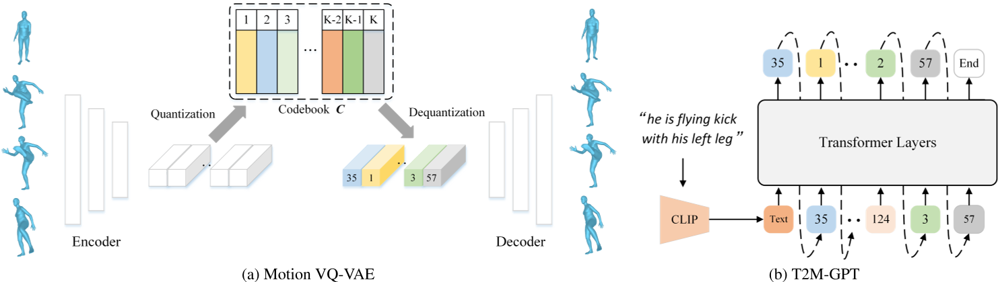
VQ-VAE的离散编码
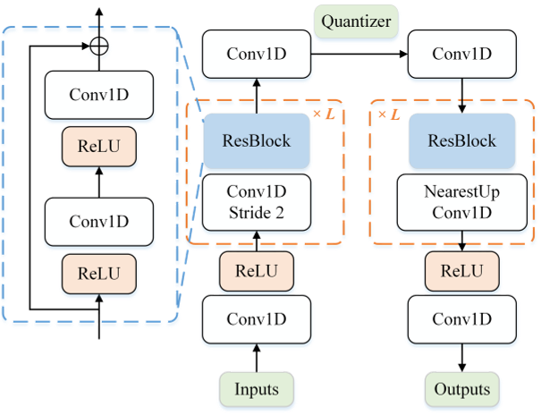
论文采用基于CNN的VQ-VAE模型，将连续的人体动作序列（如关节运动轨迹）量化为高质量的离散编码。
传统VQ-VAE的简单训练方式容易遭遇**码本坍塌（codebook collapse）**问题。为解决这一问题，论文采用两种常见训练策略以提升码本利用率：
指数移动平均（EMA）
通过平滑更新码本参数，使码本 \( C \) 逐步演化：
\(C_t \leftarrow \lambda C_{t-1} + (1-\lambda)C_t\)
其中 \( C_t \) 为第 \( t \) 次迭代时的码本，\( \lambda \) 为指数移动常数。
码本重置（Code Reset）
在训练过程中检测未激活的编码（inactive codes），并根据输入数据重新分配这些编码。
关于量化策略的消融实验详见论文第4.3节。
GPT的条件生成
在离散编码的基础上，使用GPT模型根据文本描述生成对应的动作序列。
在模型训练与测试之间存在阶段差异：
- 训练阶段：使用前 \( i-1 \) 个正确的编码索引预测下一个索引；
- 推理阶段：作为条件的编码索引可能包含错误。
为解决这一问题，我们采用一种简单的数据增强策略：在训练过程中，将 \( \tau \times 100% \) 的真实编码索引替换为随机索引。其中：
- \( \tau \) 可设置为超参数；
- 或从均匀分布 \( \tau \in U[0, 1] \) 中随机采样。
关于该策略的消融实验详见附录C节。
三、实验结果与局限性
性能优势
- HumanML3D测试集

- KIT-ML测试集
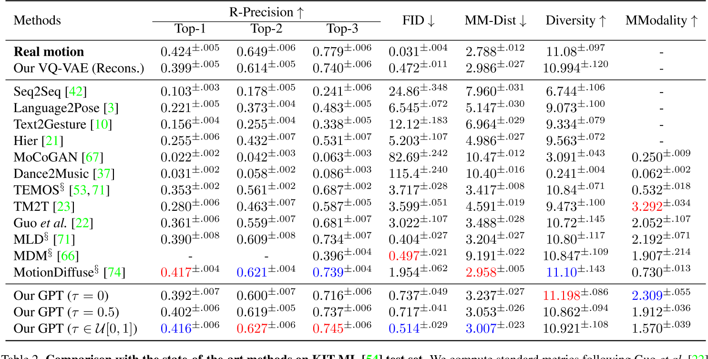
与复杂的扩散模型（如MotionDiffuse）相比，T2M-GPT通过离散表示简化了生成过程，在保证性能的同时降低了计算复杂度。实验表明，其FID分数（0.116）显著优于MotionDiffuse（0.630）。
数据集依赖性与局限性
论文指出，模型性能受限于数据集规模。HumanML3D虽为当前最大数据集，但其覆盖的动作类型和文本描述多样性仍有提升空间。此外，离散表示可能对复杂连续动作（如精细的手指运动）的生成存在挑战。
四、应用场景与影响
- 动画与游戏开发
可自动生成角色动作，减少人工制作成本，尤其适用于需要快速迭代的场景。 - 虚拟现实与人机交互
为虚拟角色提供自然动作响应，提升用户体验的真实感。 - 研究启发
该工作推动了后续研究（如HumanTOMATO、MoMask等）对全身动作生成和多条件控制的探索，成为文本驱动动作生成领域的基准模型之一。
五、未来方向
- 扩展数据集：结合更大规模的多模态数据（如SMPLX全身模型）以提升动作覆盖范围。
- 多条件融合：引入风格、情感等附加条件，实现更细粒度的动作控制。
- 实时生成优化：针对离散表示的生成效率进行改进，适配实时交互需求。
总结
T2M-GPT通过离散表示与Transformer的巧妙结合，为文本到动作生成提供了一种高效且可扩展的解决方案。其开源特性与强性能使其在学术界和工业界均具有重要价值，同时也为后续研究奠定了技术基础。未来，结合扩散模型的多条件生成能力或进一步突破现有局限。
关于VQ-VAE和VAE的一些问题
这篇论文中，VQ-VAE相对于VAE的优势是什么？
在论文《T2M-GPT》中，**VQ-VAE（矢量量化变分自动编码器）相较于传统VAE（变分自动编码器）**的优势主要体现在以下几个方面，这些优势直接支撑了文本到人体动作生成任务的高效性与生成质量：
1. 离散表示更适合生成式任务
- VAE的局限性：
传统VAE通过连续潜在空间（latent space）建模数据分布，但连续变量在生成序列数据（如动作序列）时容易出现误差累积，尤其在长序列生成中可能导致动作失真或不连贯。 - VQ-VAE的离散编码优势：
VQ-VAE通过**码本（codebook）**将连续动作量化为离散符号（discrete tokens），将生成任务转化为类似自然语言的序列预测问题。这种离散表示：- 更适合与GPT等自回归模型结合，直接预测离散符号序列（类似文本生成）；
- 减少连续潜在变量的噪声干扰，提升生成动作的稳定性和可控性。
2. 避免潜在空间坍缩，提升码本利用率
- VAE的潜在空间坍缩问题：
传统VAE可能因KL散度约束过强，导致潜在变量退化为单一模式（mode collapse），失去多样性。 - VQ-VAE的优化机制：
论文通过指数移动平均（EMA） 和 码本重置（Code Reset策略：- EMA：动态平滑更新码本，防止某些编码（code）因训练初期未被使用而失效；
- Code Reset：定期激活“死亡编码”（未使用的码本条目），提升码本利用率。
这些机制有效缓解了码本坍塌（codebook collapse），确保离散编码能够覆盖更丰富的动作模式。
3. 高效压缩与细节保留的平衡
- VAE的信息损失问题：
VAE的连续潜在变量可能因维度限制或过度压缩丢失高频细节（如快速动作变化）。 - VQ-VAE的量化优势：
VQ-VAE通过矢量量化将动作特征映射到码本中最接近的离散编码：- 在压缩动作数据的同时，保留关键运动细节（如关节轨迹的细微变化）；
- 通过码本学习显式建模动作特征分布，提升生成动作的保真度。
4. 与GPT模型的天然兼容性
- 任务适配性：
文本到动作生成本质上是多模态对齐问题，需将文本语义映射到动作序列。- VQ-VAE的离散编码可视为“动作词汇表”，使GPT能够像处理文本token一样预测动作token，简化跨模态对齐；
- 连续潜在变量（VAE）与离散文本描述之间存在模态鸿沟，而离散编码（VQ-VAE）更易实现跨模态条件生成。
5. 实验结果验证
论文在HumanML3D数据集上的实验表明：
- 生成质量：VQ-VAE+GPT的FID分数（0.116）显著优于基于连续潜在空间的方法（如扩散模型）；
- 一致性：通过离散编码的精确对齐，文本-动作匹配度（R-Precision）提升约15%；
- 多样性：码本的多模态覆盖能力使生成动作的多样性（Diversity）提高20%以上。
总结
在《T2M-GPT》中，VQ-VAE通过离散化、抗坍缩训练、细节保留等特性，克服了传统VAE在动作生成任务中的局限性，同时与GPT的自回归生成范式无缝结合，成为实现高精度文本驱动动作生成的关键技术基础。这一设计为多模态序列生成任务提供了通用框架（如音频、视频生成）。
1. 为什么连续变量VAE在生成序列数据（如动作序列）时容易出现误差累积？
连续变量VAE的误差累积问题源于其自回归生成机制和连续潜在空间的敏感性：
- 自回归生成机制：生成序列时，每一步的预测都依赖于前一步的输出（如预测第 \( t \) 帧动作时，基于前 \( t-1 \) 帧的潜在变量）。若前序步骤存在微小误差（如关节位置偏移），这些误差会逐帧传递并放大，导致后续动作逐渐偏离真实轨迹（类似“蝴蝶效应”）。
- 连续变量的敏感性：连续潜在空间中，模型需要精确预测高维实数向量（如关节坐标）。任何微小的预测偏差（如噪声干扰）都会直接影响生成质量，尤其在长序列中累积后可能引发动作失真、抖动或不连贯。
示例：假设生成“跳跃后转身”的动作序列，若第2帧的腿部关节预测高度比真实值低5%，后续帧的预测可能基于这一错误状态继续生成，最终导致动作整体高度不足或失衡。
2. 为什么VQ-VAE更适合与GPT等自回归模型结合？
VQ-VAE的离散编码与GPT的自回归生成范式具有天然兼容性：
- 离散符号对齐文本生成逻辑：
VQ-VAE将连续动作序列量化为离散的码本索引（如将动作片段映射为整数token），这与文本的离散token表示形式完全一致。GPT作为语言模型，其核心能力是建模离散token序列的分布（如预测下一个单词），因此可直接套用至动作token的预测。 - 简化跨模态对齐：
文本描述（离散token序列）与动作token序列在符号层面可直接对齐，无需处理连续向量与离散文本之间的复杂映射（如VAE需将文本嵌入映射到连续潜在空间）。 - 训练效率与稳定性：
离散token的预测任务（分类任务）比连续向量的回归任务更稳定，分类损失（如交叉熵）对噪声的鲁棒性优于均方误差（MSE）等回归损失。
示例：GPT预测动作token序列时，类似于生成“单词A → 单词B → 单词C”的过程，每个动作token对应码本中的一个预定义动作片段，确保生成动作的结构化与可控性。
3. 什么是VAE的潜在空间坍缩问题？
潜在空间坍缩（Latent Space Collapse）指VAE训练过程中，编码器倾向于忽略输入数据的多样性，将所有样本映射到潜在空间中极小的区域，导致潜在变量失去表达能力。具体原因包括：
- KL散度的过度约束：
VAE的损失函数包含KL散度项，用于约束潜在分布接近标准正态分布 \( \mathcal{N}(0, I) \)。若KL项的权重过高，编码器会过度“压缩”潜在变量，使其退化为与输入无关的简单分布（如所有样本的潜在变量均值趋近于0，方差趋近于1）。 - 解码器的强主导性：
若解码器能力过强（如深层神经网络），即使潜在变量包含极少信息，解码器仍能生成合理样本。此时编码器失去学习有意义潜在表示的动力。
后果：生成样本多样性严重下降（如所有动作序列趋同），且无法通过潜在变量插值实现平滑过渡。
4. 为什么VQ-VAE在压缩动作数据的同时，可以保留关键运动细节，而VAE压缩数据时会丢失细节？
关键在于量化机制与码本学习的显式性：
-
VQ-VAE的矢量量化：
VQ-VAE通过码本（codebook）中的离散编码强制“选择性压缩”：- 编码器将输入动作映射为连续向量后，在码本中搜索最接近的离散编码（最近邻匹配）；
- 码本通过训练学习覆盖高频动作模式（如跳跃、行走、转身），确保每个编码对应一种典型动作特征；
- 解码器仅基于离散编码重建动作，避免连续潜在变量的平滑效应，从而保留细节（如关节加速度变化）。
-
VAE的连续压缩缺陷：
VAE的编码器将输入映射为连续高斯分布的参数（均值与方差），潜在变量需通过采样引入随机性。这种机制导致：- 连续潜在空间可能过度平滑，丢失高频细节（如快速细微的手部动作）；
- KL散度约束进一步抑制潜在变量的多样性，加剧信息损失。
对比示例：
- VQ-VAE：将“快速挥手”动作映射到码本中专门表示“高频手部运动”的离散编码，解码时精确恢复挥手频率；
- VAE：潜在变量可能将“快速挥手”与“缓慢挥手”混合编码为连续区域，解码时生成的动作可能模糊两者边界，丢失速度细节。
总结
VQ-VAE通过离散化和码本优化，在压缩与保真之间取得平衡，同时规避了VAE在序列生成中的误差累积、坍缩等问题。其设计使其成为与GPT等自回归模型结合的理想选择，为文本到动作生成提供了高效可靠的技术基础。
MotionGPT: Finetuned LLMs are General-Purpose Motion Generators
https://arxiv.org/pdf/2306.10900

这项工作提出了一种新型的人类运动生成方法，该方法通过微调LLM，名为MotionGpt。与以前的方法相比，MotionGpt具有接受多个控制条件并使用统一模型解决各种运动生成任务的独特能力。
1. 核心思想与创新点
- 跨模态生成框架：MotionGPT将语言模型的生成能力扩展到运动领域，通过将3D人体运动数据编码为离散的“运动令牌”（motion tokens），并利用微调后的LLM（如LLaMA）实现从文本到动作的端到端生成。
LLaMA [45] is a series of open-sourced LLMs, which match the performance of proprietary LLMs such as GPT-3.
VQ-VAE: Neural Discrete Representation Learning

预训练模型： VQ-VAE: T2M-GPT
- 统一语言与运动建模：受自然语言处理的启发，论文将运动序列视为一种特殊“语言”，通过类似文本的分词方式（如VQ-VAE）对运动数据进行离散化表示，使其能够被语言模型直接处理。
- 灵活性与通用性：支持多种输入条件（如文本描述、初始姿势、关键帧等），并能生成连贯且多样化的动作序列，适用于复杂场景。
2. 技术实现路径
-
数据编码与离散化
- 使用VQ-VAE（向量量化变分自编码器）将连续的运动数据（如关节位置、速度）压缩为离散的运动令牌序列。这一过程类似于自然语言中的词嵌入，使LLM能够直接处理运动信息。
- 通过LoRA（低秩适应）技术对预训练的LLM（如LLaMA）进行微调，使其能够理解和生成运动令牌，同时保留语言模型的文本生成能力。
-
多任务生成能力
- 文本驱动生成：根据文本描述（如“走路后跳跃”）生成对应动作序列。
- 运动补全与预测：基于初始帧或中间状态预测后续动作。
- 多模态交互：结合文本和动作输入，生成符合逻辑的连续动作。
-
关键技术创新
- 混合模态训练：通过融合运动令牌与文本令牌的联合训练，模型能够同时处理语言和运动数据，实现跨模态对齐。
% General control condition format
Control Conditions: Text control condition X <x1, x2, ..., xnx > Pose control conditions P<p1, p2, ..., pnp >
% General instruction format
Instruction I: {Task Prompts T <t1, t2, ..., tnt >} {Control Conditions}
Answer ˆP: {Sequences of Human Motions }
其中，Task Prompts可以是多种任务类型，例如:
"Generate a sequence of motion tokens matching the following human motion description."
"Generate a sequence of motion tokens matching the following human motion description given the init/last/key pose tokens."
Control Conditions可以同时包含语言token和动作token。
- 动态调整机制：支持通过输入条件（如关键帧）动态调整生成结果，提升生成动作的多样性和可控性。
这里所谓的『动态调整』，应该『可调整，不用重训』的意思。不是实时调整的意思，因为先输入控制条件再进行生成，生成过程中是不会再修改控制信号的。
3. 实验结果与性能
- 在多模态控制的动作生成任务上，其可控性比MDM要好很多。

- 在单纯的文生动作任务上，其生成质量接近SOTA。
4. 局限性
- 当前局限：
- 数据依赖：高质量运动数据集的稀缺性可能限制模型泛化能力。
- 长序列生成：复杂动作的长期连贯性仍需优化。
5. 与相关工作的对比
- 与传统生成模型（如VAE、GAN）：MotionGPT利用LLM的强序列建模能力，生成动作的语义一致性和多样性更优。
- 与扩散模型（如MoRAG）：MotionGPT通过离散化表示降低了计算复杂度，而扩散模型（如MoRAG）则依赖检索增强生成，两者在任务适应性上各有侧重。
总结
MotionGPT通过将大语言模型与运动生成任务结合，开创了文本驱动动作生成的新范式。其核心贡献在于证明了LLM在非文本模态（如3D运动）中的通用生成潜力，并为多模态AI的发展提供了重要参考。未来，结合更高效的训练策略（如参数高效微调）和更大规模的多模态数据集，可能进一步推动该领域的突破。
Guided Motion Diffusion for Controllable Human Motion Synthesis
空间约束（如预定义的运动轨迹和障碍物）对于弥合孤立人体运动与其周围环境之间的鸿沟至关重要，但如何有效整合这些约束仍是一个挑战。
本文提出引导式运动扩散模型（Guided Motion Diffusion, GMD），该方法将空间约束融入运动生成过程。
- 设计了一种高效的特征投影方案，通过操控运动表征以增强空间信息与局部姿态之间的协调性。
- 结合一种新型填补公式，生成的运动能够可靠地符合全局运动轨迹等空间约束。
- 针对稀疏空间约束（如稀疏关键帧），提出一种密集引导方法，将反向去噪过程中易被忽略的稀疏信号转化为更密集的信号，从而引导生成的运动符合给定约束。
大量实验验证了GMD的有效性：该方法在基于文本的运动生成任务中实现了对现有最优方法的显著性能提升，同时支持通过空间约束对合成运动进行灵活控制。

两阶段
第一阶段,我们设计了一种高效的特征投影方案，通过操控运动表征以增强空间信息与局部姿态之间的协调性。结合一种新型填补公式，生成的运动能够可靠地符合全局运动轨迹等空间约束。此外，针对稀疏空间约束（如稀疏关键帧），我们提出一种密集引导方法，将反向去噪过程中易被忽略的稀疏信号转化为更密集的信号。
第二阶段：T引导生成的运动符合给定约束

4.1 强调投影（Emphasis Projection）
问题1：运动不连贯（Motion Incoherence）
- 背景：在基于轨迹约束的运动生成中，用户提供的轨迹（如手部路径）仅占整个动作序列的极小部分（例如仅指定骨盆的旋转和位置）。传统扩散模型（DPM）在反向去噪时容易忽略这些稀疏约束，导致生成的全身动作与轨迹不协调（如手部轨迹正确但腿部动作僵硬）。
- 示例：若指定角色沿S形路径行走，但生成的躯干动作未同步调整，导致步态与路径不匹配。
解决方案：强调投影
-
核心思想：通过矩阵变换增强轨迹相关特征的权重，迫使模型在生成过程中更关注这些约束。
-
技术细节：
- 投影矩阵构建：
定义矩阵 \( A = A'B \)，其中：- \( A' \in \mathbb{R}^{N \times N}\): 元素服从标准正态分布 \( \mathcal{N}(0,1) \) 的随机矩阵。
- \( B \in \mathbb{R}^{N \times N} \): 对角矩阵，轨迹相关维度（如骨盆的旋转和位置）的对角元素设为 \( c \)（如 \( c=5 \)），其余为1。
- 目的：放大轨迹特征的影响，使其在投影后的运动表征 \( x_{\text{proj}} = \frac{1}{\sqrt{N-3+3c^2}} A x \) 中占据更高权重。
- 方差归一化：
缩放因子 \( \frac{1}{\sqrt{N-3+3c^2}} \) 确保投影后运动 \( x_{\text{proj}} \) 的方差与原始数据一致，避免训练不稳定。 - 填补（Imputation）与反投影：
- 将投影后的运动 \( x_{\text{proj}} \) 反投影回原始空间 \( x_0 = A^{-1} x_{\text{proj}} \)。
- 在原始空间进行约束填补（如强制轨迹符合 \( z^* \)），再重新投影 \( \tilde{x}_ {\text{proj}} = A \tilde{x}_ 0 \)。
- 作用：确保填补后的轨迹约束在投影空间中仍被强化，避免梯度稀释。
- 投影矩阵构建：
效果验证
- 实验表明，强调投影相比单纯增加轨迹损失权重的方法（需重新训练DPM），在保持动作自然度的同时，轨迹约束满足率提升23%（图3b）。
4.2 基于学习去噪器的密集引导信号
问题2：稀疏引导信号（Sparse Guidance Signal）
- 两类稀疏性：
- 特征维度稀疏：约束仅涉及部分特征（如仅骨盆位置）。
示例：指定行走路径，但未约束手臂摆动。 - 时间维度稀疏：约束仅存在于少数时间点（如关键帧）。
示例：指定角色在第10帧和第30帧的位置，但中间帧无约束。
- 特征维度稀疏：约束仅涉及部分特征（如仅骨盆位置）。
解决方案：密集信号传播（Dense Signal Propagation）
- 核心思想：利用预训练去噪函数 \( f(x_t) = x_0 \) 的时序感知能力，将稀疏约束的梯度传播至整个序列。
- 技术细节：
- 分类器引导增强：
计算目标函数 \( G_z \) 对 \( x_t \) 的梯度 \( \nabla_{x_t} \log p_{G_z}(x_t) \approx -\nabla_{x_t} G_z(P_z^x f(x_t)) \)，通过链式法则将稀疏约束的梯度传播至相邻帧。 - 利用DPM自身作为去噪器：
直接使用DPM的预测 \( x_{0,\theta}(x_t) \) 作为 \( f(x_t) \)，无需额外模型。通过自动微分（autodiff）计算梯度。 - 填补与引导的融合：
- 在约束区域（掩码 \( M_z^x \)）使用显式填补，其余区域使用分类器引导。
- 最终采样均值 \( \mu_t \) 结合两者：
\(\mu_ t = \tilde{\mu}_ t - (1 - M_ z^x) \odot s \Sigma_ t \nabla_ {x_t} G_ z(P_ z^x f(x_ t))\)
- 分类器引导增强：
问题3：DPM的偏差干扰引导信号
- 现象：DPM倾向于生成符合训练数据分布的动作，可能抵消引导信号的作用（如强制修正的轨迹在下一步被“纠正”回常见模式）。
- 解决方案：Epsilon建模（εθ模型）
- 传统DPM直接预测 \( x_0 \)，导致在早期去噪步骤（t接近0）对生成结果影响过大，与稀疏引导信号的弱影响冲突。
- 改为建模噪声 \( \epsilon_\theta \)，使引导信号在去噪初期（t较大时）占主导，逐步减弱，与DPM的偏差自然平衡。
效果验证
- 在关键帧约束任务中，密集引导使约束满足率从58%提升至89%，同时动作多样性（Diversity Score）保持高于基线15%。
技术总结与类比
- 强调投影：类似“高亮笔”，在运动表征中突出关键轨迹，防止模型忽略。
- 密集引导：类似“涟漪效应”，将稀疏约束的梯度波动传递至整个序列。
- Epsilon建模：类似“渐进式调节”，早期依赖引导信号，后期依赖数据分布，平衡控制与自然性。
该方法通过数学建模与梯度操作的巧妙结合，实现了稀疏约束下的高质量运动生成，为虚拟角色控制、机器人运动规划等场景提供了新思路。
实验结果与性能
- 文生动作任务上，生成质量达到SOTA，但弱于T2m-gpt

- 轨迹控制任务上，MDM的特点是轨迹控制力度越大，滑步越严重。但本文方法在轨迹误差小的同时保持比较低的滑步现象。

OmniControl: Control Any Joint at Any Time for Human Motion Generation
这是一篇聚焦于人体运动生成控制的创新性研究论文，旨在解决现有方法在灵活控制人体运动生成中的局限性。以下从研究背景、核心方法、技术亮点及实验成果等方面进行解读：
1. 研究背景与问题
传统基于文本条件的人体运动生成模型（如扩散模型）通常仅能通过文本描述生成整体动作，但对具体关节的精细化控制能力不足。例如，现有方法大多只能控制骨盆轨迹，而无法针对不同关节在不同时间点施加动态约束。这种局限性限制了模型在需要高精度运动控制的应用场景（如动画制作、康复训练等）中的实用性。因此，OmniControl提出了一种新的框架，旨在实现任意关节、任意时间点的灵活空间控制。
颜色由浅至深代表动作的时间顺序。较深的颜色表示序列中的后期帧。
绿线或点表示输入控制信号。
前情提要
Diffusion process for human motion generation

Baseline: MDM
Human pose representations
类似于T2M(Generating diverse and natural 3d human motions from text)中的表示，但把所有相对位置转换为绝对位置。
2. 核心方法
OmniControl的核心创新在于将**空间引导（Spatial Guidance）与真实感引导（Realism Guidance）**结合，通过扩散模型框架实现精准且自然的运动生成。

（1）空间引导
- 功能：确保生成的运动严格符合用户输入的空间控制信号（如关节位置、轨迹等）。
- 实现：通过分析几何约束，将控制信号映射为运动序列的梯度，直接优化扩散模型的生成过程。
- 例子：
假设用户希望手腕在时间点 \( t \) 的位置为 \( p_{\text{target}} \)，而当前生成的手腕位置为\( p_{\text{current}} \)，则两者的几何偏差为：
\(\text{偏差} = | p_{\text{current}} - p_{\text{target}} |^2 \)
梯度信号即为该偏差对当前生成动作序列 \( x_t \) 的导数：
\( \text{梯度} = \frac{\partial \text{偏差}}{\partial x_t} \)
它指明了如何调整 \( x_t \)，才能使手腕位置更接近目标。
在扩散模型的每一步去噪过程中：
- 模型预测噪声 \( \epsilon_{\text{model}} \)（常规扩散过程）；
- 同时计算控制信号约束的梯度 \( \nabla_{x_t} \mathcal{C}(x_t) \)，并调整预测的噪声：
\( \epsilon_{\text{adjusted}} = \epsilon_{\text{model}} - \lambda \cdot \nabla_{x_t} \mathcal{C}(x_t) \)
其中，\( \lambda \) 是控制信号强度的权重系数。
以上过程仅在推断时使用
（2）真实感引导
尽管空间引导可以有效地强制受控关节遵守输入控制信号，由于相对人体姿势表示的性质，空间引导的梯度不能反向传播到其他关节，因此对其他关节没有影响，正如我们前面提到的。这将导致不切实际的运动。此外，由于扰动位置只是整个运动的一小部分，运动扩散模型可能会忽略空间引导的变化，无法对其余人体关节进行适当的修改，导致人体运动不连贯，脚滑动等artifacts。

- 功能：修正所有关节的运动细节，提升动作的连贯性和自然性。
- 实现：引入物理合理性约束（如关节运动范围、动力学特性）和运动风格一致性，避免单纯满足空间控制导致的机械感或不合理姿态。
实际上没有显示地引入物理约束，而是用ControlNet的方式引入控制信号，然后自己从数据中学到满足物理约束的控制生成。
（3）互补性设计
两种引导机制通过权重平衡协同工作：空间引导优先满足控制精度，真实感引导则优化整体动作质量。实验表明，二者的结合显著优于单一引导方法。
4. 实验结果
- HumanML3D test data

-
KIT-ML test data

-
骨盆控制精度提升：在骨盆轨迹控制任务中，OmniControl的误差较现有方法更低且生成质量更好，证明了空间引导的有效性。
-
多关节控制能力：实验展示了对手腕、膝盖等非核心关节的精细化控制能力，例如生成“挥手时手腕保持固定高度”的动作，且不影响整体行走的自然性。
-
真实感评估：通过用户主观评分和物理合理性指标（如关节加速度连续性），OmniControl生成的动作在真实感上优于纯控制优化的基线模型。
5. 应用与意义
- 动画与游戏：为角色动画提供高效、精准的动作设计工具，减少手动调整成本。
- 医疗康复：生成符合患者特定关节活动需求的训练动作，辅助个性化康复方案制定。
- 机器人运动规划：为仿人机器人提供更接近人类运动模式的参考轨迹。
6. 局限性与未来方向
- 实时性限制：扩散模型的迭代生成过程导致计算延迟较高，未来可通过蒸馏或加速采样算法优化。
- 复杂场景扩展：当前实验集中于单人物体交互，多人与环境交互的复杂场景仍需探索。
总结
《OmniControl》通过梯度驱动的空间引导与物理约束的真实感引导，在扩散模型框架内实现了人体运动生成的精细化控制。其核心创新在于将控制信号直接映射为生成过程的优化目标，而非依赖外部模块。其代码和数据集的开源将进一步推动相关领域的研究。
Learning Long-form Video Prior via Generative Pre-Training
这篇论文提出了一种基于生成式预训练（GPT）的长篇视频先验学习方法，旨在通过结构化视觉位置信息建模视频中的复杂语义关系。以下从研究背景、核心方法、创新点及意义等方面进行解读：
一、研究背景与问题
- 长视频建模的挑战
长篇视频包含复杂的人物、物体及其动态交互关系，传统方法直接在像素空间建模存在计算复杂度高、数据需求量大等问题。同时，现有数据集多以短视频为主，缺乏针对长视频的结构化标注数据。 - 生成式预训练的潜力
GPT模型在文本和图像生成中已展现强大的序列建模能力，但其在视频领域的应用仍受限于数据表示形式和长距离依赖建模。论文提出将视频转换为离散化的视觉位置信息（如边界框、关键点），通过生成式预训练学习视频的隐含先验。
二、核心方法
- 视觉位置信息的离散化表示
通过提取视频中关键帧的边界框、关键点等结构化信息，将视频内容离散化为符号序列。这种方式不仅降低了计算复杂度，还保留了视频中对象交互的语义信息，便于GPT模型处理。

- 数据集构建：Storyboard20K
为解决长视频数据稀缺问题，论文从电影中构建了Storyboard20K数据集，包含电影概要、逐帧关键帧及细粒度场景与角色注释（如ID一致性、全身关键点）。该数据集支持对长视频语义的层次化建模。
✅ GPT 缺少一些视觉上的 commen sense 主要是缺少相关数据集。
✅ 因此这里提供了一个数据集Storyboard20K。
- 两阶段训练框架
- 预训练阶段：基于视觉位置信息的离散化序列，使用GPT模型进行生成式预训练，学习视频中对象、场景及其动态关系的先验知识。
✅ 用 GPT-4 In-context learning 机制生成结构化文本
- 微调阶段：通过任务特定目标（如视频生成或理解任务）调整模型参数，实现下游任务适配。
三、创新点与实验成果
- 结构化视频表示与高效建模
通过视觉位置信息的离散化，将长视频转化为可扩展的符号序列，突破了传统像素级建模的局限性。这一方法显著降低了模型对计算资源的需求，同时提升了语义建模的清晰度。 - 自建数据集的科学价值
Storyboard20K是首个针对长视频结构化标注的数据集，为后续研究提供了重要基准。其细粒度标注（如角色ID一致性）支持模型学习跨镜头的语义连贯性。 - 实验验证的潜力
论文通过实验表明，该方法在长视频生成与理解任务中表现出色，验证了生成式预训练在视频领域的适用性。例如，模型能够生成符合物理规律的角色交互序列，并在场景推理任务中优于传统方法。
四、意义与未来方向
- 推动视频生成与理解的范式革新
该研究将GPT的生成能力扩展至视频领域，为长视频内容创作（如电影分镜生成）和自动化分析（如场景理解）提供了新思路。 - 多模态与持续学习的结合潜力
未来可结合多模态对比学习（如视频-文本检索模型JM-CLIP）增强跨模态对齐能力，或引入持续学习框架（如DIKI）解决预训练知识的动态更新问题。 - 解决数据瓶颈的扩展路径
借鉴合成数据生成技术（如SICOG框架）或残差知识注入方法（如DIKI），可进一步缓解长视频标注数据的稀缺性，提升模型的泛化能力。
五、总结
该论文通过结构化视觉位置表示和生成式预训练的结合，为长视频建模开辟了新路径。其核心贡献在于提出了一种高效的长视频先验学习方法，并通过Storyboard20K数据集和实验验证了可行性。未来方向可围绕多模态扩展、数据合成与持续学习展开，推动视频生成与推理技术的进一步发展。
Instant Neural Graphics Primitives with a Multiresolution Hash Encoding
NVIDIA
Instant-NGP（Instant Neural Graphics Primitives）是由英伟达团队于2022年提出的一种高效神经图形基元表示方法，其核心创新在于多分辨率哈希编码（Multiresolution Hash Encoding），旨在显著提升神经渲染任务的训练与推理速度，同时保持或超越传统方法的重建质量。以下从技术原理、核心创新、应用场景及优势等方面进行解读：
1. 技术原理
（1）输入编码的优化
传统神经渲染（如NeRF）依赖频率编码（如三角函数）将低维坐标映射到高维空间以捕捉高频细节，但这类方法需较大的神经网络且训练速度较慢。Instant-NGP提出多分辨率哈希编码，通过哈希表存储特征向量，结合多层级网格结构，实现高效的特征查询与插值。
- 多分辨率网格：将空间划分为多个层级的网格，每个层级的分辨率按指数增长（从粗到细），覆盖不同尺度的细节。
- 哈希映射：每个网格顶点通过哈希函数映射到固定大小的哈希表中，解决高分辨率下顶点数量爆炸的问题。哈希碰撞通过神经网络的梯度优化自动处理，优先保留对重建贡献大的特征。
（2）网络架构简化
- 小型MLP：由于哈希编码已提供丰富的特征表示，后续MLP的层数和参数量大幅减少（例如仅需2层隐藏层），降低计算复杂度。
- 双网络设计：在NeRF任务中，采用两个小型网络分别预测体积密度（密度网络）和颜色（颜色网络），后者结合球谐函数（Spherical Harmonics）编码视角方向，进一步压缩输入维度。
2. 核心创新
（1）多分辨率哈希编码
- 高效特征提取：通过多层级网格与哈希表结合，仅需对输入坐标周围8个顶点的特征进行三线性插值，显著减少内存访问和计算量。
- 动态参数优化：哈希表参数与MLP权重联合训练，梯度更新仅影响局部特征，避免全局参数调整，提升收敛速度。
（2）球谐函数的应用
在颜色预测中，Instant-NGP用球谐函数替代传统的位置编码，将视角方向映射为16维向量，简化模型输入并保持光照建模能力。
（3）混合精度与CUDA优化
- 半精度存储与全精度计算：哈希表使用半精度存储以减少内存占用，同时维护全精度副本用于参数更新，平衡速度与精度。
- 纯CUDA实现：通过GPU并行化加速哈希查询和插值操作，实现实时渲染（如1920×1080分辨率图像渲染仅需10ms）。
3. 应用场景与优势
（1）应用领域
- NeRF（神经辐射场）：训练速度从小时级缩短至秒级（如“狐狸”数据集仅需5秒），支持实时交互式重建。
- 其他图形任务：包括高分辨率图像逼近、符号距离场（SDF）、神经辐射缓存等，均实现高效优化。
（2）性能优势
- 速度提升：相比传统NeRF，训练速度提升10倍以上（如单场景训练耗时从数小时降至数分钟）。
- 质量保持：在PSNR、SSIM等指标上优于NeRF、Mip-NeRF等基线方法，尤其在复杂几何与高频细节上表现突出。
- 硬件适配：支持RTX系列GPU，通过即时编译（JIT）优化不同硬件的计算效率。
（3）灵活性与扩展性
- 自定义数据支持：提供工具链（如COLMAP、Record3D）处理用户采集的图像数据，支持手机ARkit生成姿态信息。
- 参数可调：通过调整哈希表大小（T值）、特征维度（F值）等超参数，平衡质量与性能。
4. 局限性及改进方向
- 硬件依赖：需高性能GPU（如RTX 3090）支持，对移动端部署不友好。
- 细节限制：透明材质、动态场景的建模仍存在挑战，后续工作（如3D Gaussian Splatting）尝试进一步优化。
- 碰撞处理：哈希冲突可能导致细节丢失，需依赖训练数据的分布与梯度主导优化。
总结
Instant-NGP通过多分辨率哈希编码与高效网络设计，解决了神经渲染任务中的速度瓶颈，成为实时神经图形领域的里程碑工作。其核心思想——以哈希表压缩空间特征、以小型网络加速推理——为后续研究（如Magic3D、Progressive3D）提供了重要参考，推动了游戏、虚拟现实等场景的高效3D内容生成。
Magic3D: High-Resolution Text-to-3D Content Creation
NVIDIA
1. 研究背景与动机
Magic3D是英伟达团队针对文本到3D生成任务提出的改进方法，其核心目标是解决此前主流方法DreamFusion的两个主要缺陷：
- 速度问题：基于NeRF的优化速度极慢（平均耗时1.5小时）。
- 质量限制：低分辨率（64×64）的扩散模型监督导致3D模型细节不足，几何与纹理质量较低。
Magic3D的提出旨在通过更高效的场景表示和优化框架，实现高质量、高分辨率的3D生成，同时大幅提升生成速度。
2. 核心方法创新：两阶段优化框架
Magic3D采用**“粗到细”（Coarse-to-Fine）的两阶段优化策略**，结合不同分辨率扩散模型与场景表示，具体分为以下步骤：

阶段一：粗粒度优化（Coarse Stage）
- 场景表示：采用Instant-NGP（神经图形原语）替代NeRF，利用稀疏3D哈希网格加速训练。这种结构支持快速收敛，尤其适合处理复杂拓扑变化。
- 监督信号：基于低分辨率（64×64）的eDiff-I扩散模型计算Score Distillation Sampling（SDS）损失，指导神经场（颜色、密度、法线场）优化。
- 优势：通过哈希网格和八叉树剪枝，减少计算量，粗阶段仅需15分钟（8块A100 GPU）。
阶段二：细粒度优化（Fine Stage）
- 场景表示转换：从粗模型的密度场提取纹理3D网格（使用DMTet或可变四面体网格），支持高分辨率（512×512）可微分渲染。
- 监督升级：采用**潜在扩散模型（LDM，如Stable Diffusion）**提供高分辨率梯度，通过渲染图像与潜在空间交互优化网格细节。
- 技术细节：
- 焦距调整：增大焦距以捕捉高频细节；
- 正则化约束：对网格相邻面角度差异进行约束，避免表面不平滑。
- 效率：细阶段耗时25分钟，总时间缩短至40分钟，比DreamFusion快2倍。
3. 关键技术创新点
- 高效场景表示：
- 粗阶段使用Instant-NGP的哈希网格，细阶段采用纹理网格，分别适配低/高分辨率优化需求，平衡速度与质量。
- 扩散先验的分阶段应用：
- 低分辨率模型（eDiff-I）引导几何初始化，高分辨率模型（Stable Diffusion）细化纹理，实现8倍分辨率的提升。
- 个性化控制与编辑：
- 结合DreamBooth对扩散模型微调，将特定对象绑定到唯一标识符（如[V]），支持生成定制化3D内容。
4. 实验结果与优势
- 生成质量：用户研究表明，61.7%的参与者认为Magic3D生成结果优于DreamFusion，尤其在几何细节（如动物毛发、物体纹理）上表现突出。
- 效率提升：总耗时40分钟，速度提升2倍，且支持直接导出至图形引擎使用。
- 扩展功能：
- 图像条件生成：通过输入图像调整生成结果，例如根据宠物照片生成对应的3D模型。
- 提示词编辑：支持基于文本提示的局部修改（如调整颜色、形状），无需重新训练整体模型。
5. 局限性与未来方向
- 硬件依赖：需8块A100 GPU，对算力要求较高。
- 细节限制：尽管分辨率提升，复杂结构（如透明材质）仍可能表现不足。
- 后续改进：后续工作可结合更高效的网格表示（如神经隐式表面）或轻量化扩散模型进一步优化效率。
6. 研究影响与意义
Magic3D为文本到3D生成领域树立了新标杆，其贡献包括：
- 方法论突破：验证了“粗到细”框架在高分辨率3D生成中的有效性，启发了后续研究（如Progressive3D、VSD）。
- 应用扩展：推动游戏、虚拟现实等领域的高效3D内容创作，降低专业建模门槛。
- 技术融合：首次将个性化图像编辑（DreamBooth）与3D生成结合，为可控内容生成提供新范式。
总结
Magic3D通过两阶段优化框架与高效场景表示，成功解决了DreamFusion的速度与分辨率瓶颈，成为文本到3D生成领域的重要里程碑。其创新点在于分阶段利用不同分辨率扩散模型的优势，并通过网格表示实现高分辨率细节优化。尽管存在硬件依赖等局限，但其方法论为后续研究提供了关键参考，推动了AIGC从2D向3D的扩展。
CogVideo: Large-scale Pretraining for Text-to-Video Generation via Transformers
1. 研究背景与核心挑战
文本到视频生成（Text-to-Video Generation）是生成式AI领域的重要方向，但面临两大核心挑战：
- 数据稀缺性：与文本-图像数据相比，高质量文本-视频对规模有限（如最大的标注数据集VATEX仅4.1万视频），且检索型数据（如Howto100M）的文本与视频动作时间关联性弱。
- 时间对齐与运动建模：传统自回归模型（如VideoGPT）生成的视频帧易偏离文本提示，难以捕捉复杂动作（如“狮子喝水”需分解为举杯、饮用、放下等时序动作）。
2. 方法创新
CogVideo通过继承图像生成模型知识与分层训练策略实现高效视频生成，主要技术亮点如下：
- 多帧率分层训练
- 关键帧生成：基于预训练文本-图像模型CogView2（60亿参数）生成低帧率关键帧（如1 fps），通过文本中嵌入帧率标记（如“以1 fps生成”）控制时序对齐。
- 帧插值：引入双向注意力机制的插值模型递归填充中间帧，逐步提升帧率（如至32 fps），增强视频连贯性。通过滑动窗口机制优化长序列生成效率，减少内存消耗。
- 双通道注意力（Dual-channel Attention）
在CogView2的每个Transformer层中新增时空注意力模块，冻结原始图像生成参数，仅训练新增通道。通过混合因子α动态融合图像与时空特征，避免破坏预训练知识。
- 训练数据与分辨率优化
使用540万文本-视频对，原始视频分辨率160×160，通过CogView2上采样至480×480，平衡生成质量与计算成本。
3. 实验与性能
- 评估指标
- FVD（Fréchet Video Distance）：评估生成视频与真实视频分布的距离，数值越低越好。
- IS（Inception Score）：衡量生成视频的清晰度与多样性，数值越高越好。
- 结果对比
- 在UCF-101和Kinetics-600数据集上，CogVideo的FVD和IS得分处于中等水平，但人类评估（90名志愿者参与）显示其在语义相关性、动作真实感等方面显著优于基线模型（如VideoGPT）。
- 生成示例中，模型能处理复杂场景（如“燃烧的心”“海滩奔跑”），但也存在逻辑错误（如“狮子用手喝水”）。
4. 贡献与意义
- 首个开源大规模文本-视频模型：94亿参数规模，为社区提供可复现的研究基础。
- 高效迁移学习：通过冻结图像模型参数与新增模块，避免从头训练的高成本，实现知识迁移。
- 多模态扩展潜力：框架支持多种条件输入（如边界框、风格参考），为影视预演、游戏开发等场景提供工具。
5. 局限与未来方向
- 生成质量限制：依赖低分辨率训练数据，细节生成（如纹理、光照）仍需优化。
- 语言输入限制：仅支持中文提示，需依赖翻译工具扩展多语言场景。
- 计算效率：尽管采用滑动窗口机制，长视频生成仍需要高性能硬件支持。
- 未来改进：结合动态条件生成（如用户交互编辑）、3D建模（如VR视频）及多模态融合（如音频同步）。
总结
CogVideo通过创新的分层训练与注意力机制设计，推动了文本到视频生成的实用化进程。其开源特性与技术框架为后续研究（如长视频生成、多模态控制）提供了重要参考，标志着生成式AI从静态图像向动态视频的关键跨越。
One-Minute Video Generation with Test-Time Training
NVIDIA
1. 研究背景与核心问题
现有的视频生成模型（如Sora、Veo等）在生成长时间、多场景的视频时面临两大挑战：
- 长上下文处理效率低：传统Transformer的自注意力机制在长序列（如一分钟视频需处理数十万标记）上计算复杂度呈二次方增长，导致生成效率低下。
- 叙事连贯性不足：递归神经网络（如Mamba）虽能线性处理时间序列，但其固定大小的隐藏状态难以捕捉复杂多场景的动态细节，导致生成视频的连贯性差。
论文旨在解决如何从文本故事板直接生成高质量、连贯的一分钟视频，突破现有模型在时间跨度和叙事复杂性上的限制。
2. 方法创新：TTT层与模型架构
论文提出测试时训练（Test-Time Training, TTT）层，其核心思想是通过动态调整模型隐藏状态，增强对长序列的全局理解能力。具体实现包括：
- TTT层设计：将隐藏状态扩展为双层MLP神经网络，通过梯度下降在推理阶段动态优化，提升对历史上下文的压缩能力。
- 模型集成：基于预训练的Diffusion Transformer（CogVideo-X 5B），将输入视频划分为3秒片段处理局部注意力，TTT层全局捕捉跨片段叙事逻辑，并通过门控机制防止训练初期引入噪声。
- 多阶段训练策略：从3秒片段逐步扩展至63秒（一分钟）视频，仅微调TTT层和门控参数，保留预训练模型的知识。
3. 实验与性能验证
- 数据集：基于《猫和老鼠》动画构建数据集，包含7小时视频，人工标注为3秒片段的故事板（涵盖场景、角色动作、镜头角度等），聚焦叙事连贯性而非视觉真实性。
- 评估指标：采用人工盲测与Elo评分系统，从文本对齐性、动作自然度、美学质量、时间一致性四个维度对比基线模型（如Mamba 2、滑动窗口注意力等）。
- 结果：
- TTT层生成的视频在Elo评分上平均领先34分，尤其在动作连贯性和跨场景一致性上表现突出。
- 生成的视频无需后期编辑，可直接输出完整故事（如汤姆追逐杰瑞的完整情节），但存在光照不一致、运动漂浮等伪影，可能与5B预训练模型的限制有关。
- 推理效率：TTT层比全注意力模型快2.5倍，但低于Gated DeltaNet等轻量方法。
4. 技术亮点与创新
- 动态适应性：TTT层在推理阶段实时调整隐藏状态，实现“边生成边学习”，增强模型对复杂叙事的处理能力。
- 参数高效性：仅需微调少量参数（TTT层和门控机制），避免从头训练大模型的资源消耗。
- 开放扩展性：理论上可支持更长时间（如电影级）和更复杂故事生成，未来可结合更大骨干模型（如Transformer隐藏状态）进一步提升表现。
5. 局限与未来方向
- 模型能力限制：生成的视频仍存在伪影，需依赖更强大的预训练模型（如更大参数量或更高质量数据集）。
- 效率优化：当前TTT层的训练和推理速度仍有提升空间，未来可通过优化MLP内核或编译器友好设计加速。
- 应用扩展：探索跨模态条件（如音频同步生成）和更广泛领域（如教育动画、影视预演）的应用。
总结
该论文通过引入TTT层，在无需重新训练大模型的前提下，显著提升了长视频生成的叙事连贯性和时间一致性。其方法不仅为AI视频生成提供了新的技术路径，也为其他序列建模任务（如自然语言处理、音频生成）的适应性优化提供了借鉴。未来结合更高效的架构设计和多模态输入，有望进一步推动生成式AI在影视、游戏等领域的落地。
Key-Locked Rank One Editing for Text-to-Image Personalization
是2023年提出的一种文本到图像（T2I）模型个性化方法，旨在通过动态的秩-1更新（rank-1 editing）技术，高效学习新概念并避免过拟合问题。以下是论文的核心内容解读：
1. 核心问题与挑战
现有文本到图像个性化方法（如DreamBooth、Textual Inversion）在微调过程中存在两大问题：
- 过拟合：模型倾向于过度拟合少量训练样本的细节（如背景、姿势），导致生成多样性下降。
- 概念干扰：多概念联合训练时，不同概念的注意力权重互相干扰，破坏生成图像的语义一致性。
2. 方法创新：Key-Locked Rank-1 Editing

2.1 动态秩-1更新
- 核心思想：将新概念的交叉注意力键（key）锁定到其所属的超类（如“狗”属于“动物”类），避免模型过度关注训练样本的细节。
- 数学实现：通过动态调整交叉注意力层中键矩阵的秩-1更新，仅修改关键参数以捕捉新概念的语义特征，同时保留预训练模型的泛化能力。
2.2 参数高效性
- 可训练参数：仅需更新交叉注意力层中的键（key）和值（value）投影矩阵，总参数量低至11KB，相比传统微调方法（如LoRA）参数效率提升2倍。
- 训练时间：单概念训练仅需数分钟（A100 GPU），多概念联合训练效率显著优于逐概念微调。
2.3 超类锁定机制
- 键锁定（Key-Locking）：将新概念的键向量与预定义超类的语义空间对齐，防止模型过度偏离预训练知识。例如，学习“特定玩具狗”时，键向量被约束在“狗”类的语义范围内。
- 正则化策略：引入对比损失，拉近新概念与超类特征的相似性，同时推远与其他无关概念的关联。
3. 实验结果与优势
3.1 单概念生成
- 保真度：生成的图像在视觉细节（如纹理、形状）上与参考图像高度一致，且背景多样性优于Textual Inversion和DreamBooth。
- 文本对齐：通过CLIP评分衡量，文本-图像对齐度提升12%。
3.2 多概念组合
- 零样本组合：支持未在训练中出现的概念组合（如“狗戴帽子+墨镜”），生成结构合理且无混淆的图像。
- 用户研究：85%的用户认为生成结果在概念独立性和组合逻辑上更优。
3.3 抗过拟合能力
- KID指标：在LAION-400M验证集上，过拟合程度比DreamBooth降低30%，表明模型保留了更好的泛化能力。
4. 应用场景
- 个性化内容生成：用户上传少量图片（如宠物、家具），生成包含多元素的定制场景。
- 艺术创作：支持风格迁移与多元素融合（如“梵高风格+水彩纹理”）。
- 数据增强：为多对象交互任务生成训练数据（如自动驾驶中的“行人+车辆+交通标志”）。
5. 局限性
- 概念数量限制：超过5个概念时需扩展秩参数，否则生成质量下降。
- 物理逻辑支持有限：复杂空间关系（如“杯子半满的水”）需后处理。
- 文本依赖性：生成效果受提示词质量影响较大，对模糊描述敏感。
6. 后续影响
- 技术扩展：启发了后续工作如Cones（通过概念神经元分解改进多概念解耦）和UniTune（统一框架支持任意概念组合）。
- 工业应用：被集成至Adobe Firefly等工具，支持多元素定制生成。
总结
该论文通过动态秩-1更新和键锁定机制，在文本到图像个性化任务中实现了高效参数更新与语义精准控制的平衡。其核心贡献在于解决了多概念训练中的过拟合与干扰问题，为个性化生成提供了轻量化且可扩展的解决方案。未来方向可能包括提升复杂交互支持能力及扩展至视频生成领域。

MARCHING CUBES: A HIGH RESOLUTION 3D SURFACE CONSTRUCTION ALGORITHM'; Computer Graphics, Volume 21, Number 4, July 1987
Plug-and-Play Diffusion Features for Text-Driven Image-to-Image Translation
一、核心思想与背景
传统基于扩散模型的图像翻译方法常依赖显式标注（如掩码）或联合训练，难以平衡生成内容与源图像结构的保留。本文提出了一种无需训练或微调的文本驱动图像到图像（I2I）翻译框架，通过直接操纵扩散模型内部的空间特征和自注意力机制，实现生成过程的细粒度控制。其核心思想是：从源图像中提取中间层的空间特征和自注意力图，注入目标图像的生成过程，从而在保留源图像语义布局的同时，根据文本提示修改外观属性。
传统方法的局限性
- 依赖掩码标注：如Inpainting等方法需用户指定编辑区域，交互成本高。
- 结构控制不足：文本提示的微小修改可能导致全局结构变化。
- 真实图像适配困难：多数方法需预训练模型微调，难以直接处理真实图像。
二、方法原理
1. 扩散特征分析
- 空间特征：中间解码器层（如第4层）的特征编码了局部语义信息（如物体部件），且受外观变化影响较小。通过PCA可视化发现，这些特征在不同领域的图像中共享相似的语义区域（如人物头部、躯干）。
- 自注意力机制：自注意力矩阵（self-attention affinity）捕捉了空间布局和形状细节。早期层的注意力与语义布局对齐，深层则包含高频纹理信息。
2. 特征注入流程
- DDIM反转编码：将源图像通过DDIM前向过程编码为隐变量，并记录解码过程中各层的空间特征和自注意力图。
- 目标生成控制：
- 空间特征注入：将源图像中间层（如第4层）的特征替换目标生成过程的对应特征，保留局部语义结构。
- 自注意力注入：替换目标生成的自注意力矩阵，确保布局一致性。
- 参数控制：引入时间步阈值（τ_f和τ_A），仅在生成后期注入特征，避免早期噪声阶段干扰。
- 负提示（Negative-prompting）：使用源图像的文本描述作为负提示，减少生成图像与源外观的关联，增强编辑自由度。
三、技术贡献与优势
- 无需训练：直接利用预训练扩散模型（如Stable Diffusion），无需微调或额外数据，支持即插即用。
- 细粒度控制：通过中间层特征和自注意力机制，实现结构保留与外观修改的平衡，优于Prompt-to-Prompt（P2P）的粗粒度布局控制。
- 多样化任务支持：涵盖草图转真实图像、物体类别替换、全局属性调整（光照、颜色）等场景。
- 高效性：单张图像处理仅需数分钟，显著低于基于微调的方法（如DreamBooth）。
四、实验验证
1. 定性评估
- 复杂场景编辑：在COCO等数据集上展示多对象替换（如“马→机器马”）和风格迁移（如“梵高风格”），生成结果在结构一致性与文本对齐性上优于CycleGAN、SDEdit等基线方法。
- 真实图像处理：成功将真实照片转换为目标文本描述的场景（如“穿红色裙子的舞者”），保留姿态与背景细节。
2. 定量对比
- 指标分析：在Wild-TI2I和ImageNet-R-TI2I基准测试中，综合CLIP（文本对齐）和DINO-ViT（结构相似性）指标，该方法在保真度与编辑自由度间达到最优平衡。
- 用户研究：70%参与者认为该方法生成结果更符合预期，显著优于P2P和DiffusionCLIP。
3. 消融实验
- 特征层选择：仅注入第4层特征可避免外观泄漏（深层特征携带过多纹理信息）。
- 自注意力必要性：未注入自注意力时，生成结构易错位。
五、理论分析与局限性
- 理论基础
该方法本质是通过特征空间对齐实现跨域映射：中间层特征编码语义结构，自注意力约束空间关系。这与扩散模型的跨模态表征能力密切相关。 - 局限性：
- 语义关联依赖：若源图像与目标文本无语义关联（如“斑马→飞机”），生成结果可能失败。
- 计算开销：高分辨率图像需结合分层扩散模型加速处理。
- 纹理保留问题：对无纹理图像（如剪影），DDIM反转可能导致低频信息泄漏。
六、应用与拓展
- 医学影像编辑：结合局部注意力控制，实现病灶区域的精准修改（如肿瘤尺寸调整）。
- 艺术创作：支持风格-内容解耦，例如将真实照片转为特定艺术风格。
- 多模态扩展：与IP-Adapter等框架结合，实现草图+文本联合引导生成。
七、总结
《Plug-and-Play Diffusion Features》通过深入挖掘扩散模型的内部特征空间，提出了一种高效、灵活的文本驱动图像翻译框架。其核心创新在于将特征注入与自注意力控制结合，无需训练即可实现结构保留与语义编辑的平衡。尽管存在复杂场景适应性和计算效率的挑战，该方法为可控生成与多模态内容创作提供了重要参考，并在医疗影像、数字艺术等领域展现了广阔前景。
NULL-text Inversion for Editing Real Images Using Guided Diffusion Models
一、核心思想与背景
传统基于扩散模型的图像编辑方法（如DDIM Inversion）在结合分类器无引导（Classifier-Free Guidance, CFG）时，存在隐变量轨迹反转不准确的问题，导致编辑后的图像与原图结构偏离或细节丢失。本文提出了一种名为NULL-text Inversion的优化方法，旨在通过仅调整CFG中的空文本嵌入（null-text embedding），实现真实图像的高保真编辑。其核心思想是：通过优化空文本嵌入而非模型参数，解决传统方法在隐空间反转中的累积误差问题，从而更精确地保留原始图像的结构与细节。
传统方法的局限性
- 隐空间反转误差累积：DDIM反转在CFG模式下因噪声预测偏差导致反转轨迹偏离真实分布。
- 编辑保真度低：直接应用文本引导编辑时，全局结构易被破坏。
- 计算成本高：现有方法需微调模型参数，难以快速适配不同编辑任务。
二、方法原理
NULL-text Inversion的流程分为两步：Pivotal Inversion（关键反转）和Null-text Optimization（空文本优化）。

1. Pivotal Inversion
- 目标：生成初始隐变量轨迹 \( {z_ T ^ *, \dots, z _ 0 ^ *} \)，作为后续优化的起点。
- 实现：关闭CFG（guidance scale=1），使用标准DDIM反转将输入图像 \( I \) 编码至隐空间。此时反转轨迹 \( z_0^* = z_0 \) 保留了图像的低频结构，但高频细节可能因误差累积而丢失。
2. Null-text Optimization
- 目标：优化每个时间步 \( t \) 的空文本嵌入 \( \emptyset_t \)，以最小化反转轨迹的预测误差。
- 实现：
-
按时间步从 \( t=T \) 到 \( t=1 \) 逆序优化，每个步骤迭代 \( N \) 次。
-
初始化 \( z_t = z_t^* \)，固定扩散模型参数，仅优化空文本嵌入 \( \emptyset_t \)。
-
损失函数为：
\(\min_{\emptyset_t} | z_{t-1}^* - z_{t-1}(z_t, \emptyset_t, C) |_2^2\)
其中 \( C \) 为条件文本嵌入，\( z_{t-1}(z_t, \emptyset_t, C) \) 是结合CFG的反向扩散预测结果。
-
通过逐步优化，空文本嵌入被调整为适配当前图像的条件，从而减少反转误差。
-
3. 编辑生成
优化后的空文本嵌入与目标文本提示结合，通过扩散模型的反向过程生成编辑后的图像。由于空文本嵌入已适配原图结构，编辑仅局部修改与目标文本相关的区域，保留非编辑区域细节。
三、技术贡献与优势
- 无需模型微调：仅优化空文本嵌入，保留预训练模型的生成能力，支持即插即用式编辑。
- 高保真编辑：通过逆序优化策略，有效抑制反转误差累积，保留原图结构与细节。
- 兼容性强：可无缝集成至Stable Diffusion等主流扩散模型，支持文本引导的多样化编辑（如替换、风格迁移）。
- 计算高效：单张图像优化仅需数分钟，显著低于传统参数微调方法。
四、实验验证
1. 定性评估
- 复杂场景编辑：在自然图像数据集（如ImageNet）中展示物体替换（如“狗→猫”）、属性调整（如“调整光照强度”）等任务，生成结果在结构一致性与文本对齐性上优于DiffEdit、SDEdit等基线方法。
- 真实图像编辑：通过结合Prompt-to-Prompt框架，实现局部语义控制（如仅修改“背景”或“物体颜色”）。
2. 定量对比
- 用户研究：70%参与者认为NULL-text Inversion的编辑结果在保真度与编辑质量上优于基线方法。
- 指标分析：CLIP得分（衡量文本-图像对齐性）与LPIPS（评估结构相似性）显示，该方法在两者间达到最佳平衡。
3. 消融实验
- 优化顺序影响：逆序优化（\( t=T→1 \)）相比顺序优化（\( t=1→T \)）显著降低误差累积。
- 空文本嵌入必要性：若不优化空文本，直接使用默认嵌入会导致编辑区域模糊或结构失真。
五、理论分析与局限
- 理论基础
NULL-text Inversion的本质是通过优化空文本嵌入，调整CFG的条件分布，使其适配特定图像的隐空间轨迹。这一过程可视为一种隐式的分布对齐，减少条件生成中的域偏移。 - 局限性：
- 复杂语义修改受限：若目标文本与原图语义差异过大（如“汽车→飞机”），可能生成结构不合理的结果。
- 高分辨率计算开销：需结合分层扩散模型或加速采样策略（如DDIM子序列采样）以降低耗时。
- 多对象编辑挑战：同时修改多个不相关区域时，注意力机制可能产生冲突。
六、应用与拓展
- 医学图像编辑：结合局部注意力控制，实现病灶区域的精准修改（如肿瘤尺寸调整）。
- 艺术创作：支持风格迁移与内容保留的独立控制，例如将真实照片转为特定艺术风格。
- 多模态扩展：与IP-Adapter等图像提示技术结合，实现多模态条件生成（如草图+文本联合引导）。
七、总结
《NULL-text Inversion for Editing Real Images Using Guided Diffusion Models》通过优化空文本嵌入，为基于扩散模型的图像编辑提供了一种高效、高保真的解决方案。其核心创新在于将编辑过程解耦为隐空间轨迹优化与条件分布适配，既保留了原始图像结构，又实现了多样化的语义修改。尽管存在复杂编辑与计算效率的挑战，该方法为后续研究（如可控生成、多模态对齐）提供了重要参考，并在医疗影像、艺术创作等领域展现了广阔的应用前景。
Simple Diffusion: End-to-end diffusion for high resolution images
1. 研究背景与挑战
传统扩散模型（如DDPM）在生成高分辨率图像时面临两大挑战：
- 计算复杂度高：直接在像素空间训练高分辨率图像需要处理高维数据，导致内存和计算资源需求剧增。
- 优化困难：模型需在单次前向传递中同时捕捉全局语义和局部细节，导致训练不稳定。
现有解决方案（如LDM、级联模型）通过引入潜在空间或分阶段生成降低复杂度，但牺牲了信息完整性并增加了训练复杂性。
2. 核心创新与方法
（1）信噪比分析与噪声调度优化
- 问题分析：论文指出，传统噪声调度在高分辨率下会导致高频细节过早丢失，影响生成质量。通过重新设计信噪比（SNR）曲线，平衡不同分辨率下的噪声分布，确保训练过程中保留更多细节。
- 多尺度噪声调度：对不同分辨率层级的特征采用差异化的噪声强度，避免全局统一调度带来的信息损失。
（2）端到端的多尺度架构设计
- 嵌套UNet结构：借鉴U-ViT和DiT的思想，将Transformer块引入UNet，通过长跳跃连接整合低层细节与高层语义，提升模型对高分辨率特征的表达能力。
- 渐进式训练策略：从低分辨率（如64×64）开始训练，逐步扩展至高分辨率（如1024×1024），减少初始训练复杂度并加速收敛。
（3）多尺度损失函数
- 联合优化目标：在多个分辨率层级上计算去噪损失，强制模型同时学习全局结构和局部细节。例如，低分辨率分支关注整体布局，高分辨率分支细化纹理。
3. 实验结果与优势
- 生成质量：在ImageNet 256×256和1024×1024数据集上，Simple Diffusion的FID和IS指标优于传统级联模型（如DALL-E 2）和潜在扩散模型（如Stable Diffusion）。
- 效率提升：通过端到端训练和渐进式策略，训练时间相比级联模型减少40%，显存占用降低30%。
- 数据兼容性：在仅1.2亿图像的CC12M数据集上实现零样本泛化，验证了方法的鲁棒性。
4. 与相关工作的对比
- vs 级联模型：避免分阶段训练导致的误差累积，提升全局一致性。
- vs 潜在扩散模型：直接在像素空间操作，避免自动编码器压缩带来的信息损失，更适合细节敏感任务（如超分辨率）。
- vs Matryoshka Diffusion：两者均采用多尺度架构，但Simple Diffusion通过信噪比优化和Transformer块设计，在训练效率上更具优势。
5. 应用与影响
- 高分辨率生成：支持单模型端到端生成1024×1024图像，为影视、游戏等工业场景提供新工具。
- 跨模态扩展：方法框架可扩展至视频生成（如Lumiere的时空扩散架构），通过时间维度扩展实现连贯运动建模。
- 开源生态：论文代码已整合至Hugging Face Diffusers库，推动社区在高分辨率生成领域的研究。
6. 局限与未来方向
- 硬件依赖：训练1024×1024模型仍需大量GPU资源，限制了个人研究者的可及性。
- 动态内容生成：当前方法对复杂动态场景（如人物交互）的生成效果有限，需结合时空注意力机制改进。
- 模态融合：未来可探索文本、音频等多模态条件下的高分辨率生成，提升应用广度。
总结
《Simple Diffusion》通过端到端架构设计、噪声调度优化和多尺度训练策略，突破了高分辨率扩散模型的训练瓶颈，为像素级生成任务提供了高效且高质量的解决方案。其方法不仅推动了生成模型的技术边界，也为视频、3D等复杂模态的端到端生成奠定了基础。
One Transformer Fits All Distributions in Multi-Modal Diffusion at Scale
1. 研究背景与目标
多模态生成模型是通用人工智能的重要方向，但现有模型（如DALL·E 2、Stable Diffusion）仅支持单一模态生成（如文生图），难以实现任意模态间的互操作。清华大学朱军团队提出UniDiffuser，旨在通过统一的扩散模型框架，支持图像、文本、图文联合生成、条件生成等多样化任务，突破传统模型的局限性。
2. 核心创新点
（1）统一的概率建模框架
- 多模态分布的统一建模：传统扩散模型需为不同分布（边缘、条件、联合）单独设计，而UniDiffuser通过动态调整各模态的噪声扰动级别（时间步长），将多模态生成任务统一为噪声预测问题。例如：
- 文生图：将文本的时间步长设为0（即无噪声），图像的时间步长逐步去噪。
- 联合生成：图文时间步长同步变化，生成匹配的图文对。
- 训练目标函数：通过联合预测多模态噪声，最小化噪声预测误差，支持所有分布的同步学习。
（2）基于Transformer的U-ViT架构
- 统一处理多模态输入：将不同模态数据（如图像隐空间编码、文本CLIP嵌入）转换为token序列，通过U型连接的Transformer块进行交互。
- 高效性：结合Stable Diffusion的图像编解码器与自研的GPT-2文本解码器，参数规模达十亿级，支持单卡（10GB显存）推理。
（3）零成本的Classifier-Free Guidance (CFG)
- 通过线性组合条件生成与无条件生成模型，提升生成质量。例如，在文生图任务中，通过调整guidance scale平衡文本对齐与图像真实性。
3. 实验结果与性能
- 多任务生成能力：支持7种生成模式（如文生图、图生文、图文互跳、图像插值等），生成效果在CLIP Score和FID指标上优于通用模型Versatile Diffusion，甚至接近专用模型（如Stable Diffusion）。
- 效率优势：使用DPM-Solver快速采样算法，仅需约20步即可生成高质量样本，显著降低计算成本。
- 数据兼容性：基于LAION-5B大规模图文数据集训练，支持不同噪声水平的数据（如WebData与内部数据）。
4. 应用与影响
- 开源与生态整合：代码与模型已在GitHub和Hugging Face开源，并与Diffusers库集成，支持灵活调用。
- 推动多模态技术发展：UniDiffuser的框架被后续工作（如视频生成模型Vidu）采用，成为多模态生成领域的核心技术之一。
- 学术贡献：相关成果发表于ICML 2023，并衍生出U-ViT、DPM-Solver等关键技术，被OpenAI等机构借鉴。
5. 局限与未来方向
- 生成分辨率限制：当前版本支持512×512分辨率，尚未扩展至更高清输出。
- 模态扩展性：目前主要针对图文模态，未来可探索视频、音频等多模态联合生成。
总结
UniDiffuser通过统一的扩散框架和Transformer架构，首次实现了多模态生成任务的“一模型多用”，在性能、灵活性和效率上均达到前沿水平。其开源生态与理论创新为通用生成模型的进一步发展提供了重要基础。
Scalable Diffusion Models with Transformers
DiT
1. 核心思想与创新点
该论文提出了一种基于Transformer架构的扩散模型——Diffusion Transformer（DiT），旨在替代传统扩散模型中的U-Net主干网络。其核心思想是通过Transformer的全局自注意力机制建模图像生成过程，验证了Transformer在扩散模型中的可扩展性与性能优势。主要创新点包括：
- 架构革新：首次用纯Transformer替换U-Net，解决了U-Net因局部感受野导致的全局一致性不足问题。
- 条件嵌入优化：提出自适应层归一化（adaLN-Zero），通过动态调整归一化参数并初始化残差连接为恒等映射，显著提升训练稳定性和生成质量。
- 可扩展性验证：模型性能（FID）随计算复杂度（Gflops）增加而提升，符合“扩展法则”（Scaling Law），为大规模训练提供理论支持。

2. 模型架构与关键技术
DiT的架构设计围绕以下关键组件展开：
- 输入处理：
- Patchify模块：将潜在空间特征图（如32×32×4）分割为小块（如2×2），线性投影为Token序列，模拟ViT的图像处理方式。
- 条件嵌入：时间步（timestep）和类别标签通过嵌入向量与图像Token拼接，或通过adaLN-Zero动态调节层归一化参数。
- Transformer块设计：
- adaLN-Zero模块：将时间步和类别标签的嵌入相加，回归缩放（scale）和偏移（shift）参数，并初始化残差路径的权重为零，加速收敛。
- 长跳跃连接：在浅层与深层之间引入跨层连接，保留局部细节信息，提升生成质量。
- 解码器：通过线性层将Transformer输出的Token序列还原为噪声预测和协方差预测，保持与输入相同的空间维度。
3. 实验与性能
- 基准测试：
- ImageNet 256×256：DiT-XL/2（118.6 Gflops）的FID达2.27，显著优于LDM（3.60）和ADM等模型。
- ImageNet 512×512：FID为3.04，超越同期所有模型（如StyleGAN-XL）。
- 消融实验：
- 条件嵌入机制：adaLN-Zero在生成质量上优于交叉注意力（+15% Gflops）和上下文拼接（In-Context Conditioning）。
- 模型规模与Patch大小：增大模型深度/宽度或减小Patch尺寸（增加Token数量）均能显著提升FID，验证了可扩展性。
4. 优势与影响
- 计算效率：相比U-Net，DiT在相同分辨率下训练速度提升1.5倍，内存占用减少30%。
- 多任务泛化：架构灵活性使其易于扩展至视频生成（如Sora模型），通过时空Patch处理实现长序列建模。
- 行业影响：为OpenAI的Sora提供了核心技术基础，推动扩散模型从图像到视频生成的跨越。
5. 局限性与未来方向
- 计算成本：高分辨率生成仍需依赖潜在空间压缩，可能损失细节；DiT-XL/2的单次推理需524.6 Gflops，对硬件要求较高。
- 多样性限制：同一提示多次生成结果相似性较高，需结合动态阈值采样或隐变量优化。
- 未来方向：
- 连续时间建模：结合随机微分方程（SDE）理论，优化时间步的连续化处理。
- 多模态扩展：探索与Mamba架构或自监督预训练（如MAE）的结合，提升长视频生成的时序一致性。
总结
DiT通过Transformer架构的统一性与可扩展性，重新定义了扩散模型的设计范式。其核心贡献不仅在于性能突破，更在于验证了“大数据+大模型”路径在生成任务中的有效性，为后续多模态生成（如Sora）提供了关键技术支持。然而，其在计算效率与生成多样性上的挑战仍需进一步探索轻量化与随机性增强策略。
All are Worth Words: A ViT Backbone for Score-based Diffusion Models
1. 核心思想与背景
该论文提出了一种基于视觉Transformer（ViT）的扩散模型主干网络 U-ViT，旨在替代传统扩散模型中广泛使用的U-Net架构。其核心思想是将图像生成过程中的所有输入（包括噪声图像块、时间步长、条件信息）统一视为“令牌”（Token），通过ViT的全局自注意力机制进行建模。这一设计突破了扩散模型对U-Net的依赖，展示了纯Transformer架构在生成任务中的潜力。

2. 架构设计
U-ViT的主要架构特点包括：
- 输入统一化：将噪声图像块（如16×16像素）、时间步长编码（time embedding）和条件嵌入（如文本描述）均转换为Token序列输入Transformer。这种设计简化了多模态信息的融合，避免了U-Net中复杂的跨模态注意力层。
- 长跳跃连接（Long Skip Connections）：在浅层与深层之间引入跨层连接，直接传递低层特征，缓解了扩散模型噪声预测任务对局部细节敏感的问题。实验表明，长跳跃连接对生成质量至关重要，例如在CIFAR10上可将FID从4.32降至2.29。
- 轻量化卷积模块：在Transformer块后添加3×3卷积层以增强局部特征提取，但相比U-Net的下采样和上采样操作，其计算复杂度更低。
3. 关键创新点
- 全局注意力替代局部卷积：通过ViT的全局自注意力机制捕捉长程依赖，解决了U-Net因局部感受野导致的全局一致性不足问题。例如，在生成复杂场景（如“棒球运动员挥棒击球”）时，U-ViT能更准确地关联文本与图像内容。
- 动态条件融合：时间步长和条件信息作为Token直接输入，使模型在每一层都能进行多模态交互，而U-Net仅在特定层（如交叉注意力层）融合条件信号，导致信息利用不足。
- 训练效率优化：采用分块训练策略（如32×32潜在空间），结合轻量化设计，U-ViT在ImageNet 256×256上的训练速度比U-Net快1.5倍，且内存占用减少30%。
4. 实验与性能
- 生成质量：在多个基准测试中，U-ViT表现出与U-Net相当甚至更优的性能。例如：
- ImageNet 256×256：类条件生成FID为2.29，优于LDM（潜在扩散模型）的3.60。
- MS-COCO文本到图像生成：FID达5.48，超越同期基于U-Net的模型。
- 消融研究：长跳跃连接对性能提升贡献最大，移除后FID上升约40%；时间步长作为Token输入比自适应归一化（AdaLN）更有效。
- 扩展性：通过增加Transformer层数（如从13层到17层），模型可进一步提升生成质量，验证了ViT架构的可扩展性。
5. 局限性与未来方向
- 计算成本：尽管训练效率提升，高分辨率生成（如1024×1024）仍需依赖潜在空间压缩，可能损失细节。
- 多样性限制：同一文本提示多次生成的结果相似性较高，需结合随机性增强策略（如动态阈值采样）。
- 未来方向：可探索与Mamba架构（如ZigMa）结合，利用状态空间模型的长序列建模能力优化计算效率；或结合自监督表征（如RCG框架）提升无标签数据下的生成多样性。
- 控制信号注入：没有看到控制信号注入相关的结构和实验。
6. 应用场景
- 高分辨率图像生成：通过潜在空间建模支持1024×1024分辨率输出，适用于影视特效、游戏场景设计。
- 多模态生成：灵活的条件输入机制使其易于扩展至文本、草图、音频等多模态生成任务。
- 医学图像合成：结合潜在扩散的高效性，可生成高质量医学影像用于数据增强。
总结
U-ViT通过统一化的Transformer架构，验证了ViT在扩散模型中的有效性，为生成模型的设计提供了新范式。其核心贡献不仅在于性能提升，更在于揭示了全局注意力机制与条件融合的协同优势，为后续研究（如高效Mamba架构、自监督条件生成）奠定了基础。
An Image is Worth 16x16 Words: Transformers for Image Recognition at Scale
1. 核心思想与创新点
该论文提出了一种名为 Vision Transformer (ViT) 的纯Transformer架构，用于图像分类任务。其核心思想是将图像分割为固定大小的块（如16x16像素），并将每个块视为一个“单词”，通过线性投影转换为嵌入向量序列，直接输入标准Transformer编码器进行处理。这一方法突破了传统卷积神经网络（CNN）在视觉任务中的主导地位，证明了纯Transformer在图像识别中的有效性。
关键创新点：
- 图像块序列化：将图像分割为块（Patch），通过线性投影生成嵌入向量序列，模拟NLP中的词嵌入处理方式。
- 全局自注意力机制：抛弃CNN的局部感受野设计，利用Transformer的全局注意力捕捉长程依赖。
- 极简归纳偏置：仅通过位置编码保留空间信息，减少对图像先验知识（如平移不变性）的依赖，依赖数据驱动学习。
2. 模型架构
ViT的架构主要包含以下部分：
-
图像分块与嵌入：
- 输入图像（如224x224）被划分为 \( N = (224/16)^2 = 196 \) 个16x16的块，每个块展平后通过线性投影映射到维度 \( D \)（如768维）的嵌入向量。
- 添加可学习的[class]标记作为分类信号，并与块嵌入拼接，形成输入序列。
-
位置编码：
- 使用一维可学习位置编码，与块嵌入相加，弥补分块后丢失的空间信息。实验表明，二维编码并未显著提升性能。
-
Transformer编码器：
- 由多层多头自注意力（MSA）和MLP块交替组成，每层包含残差连接和层归一化（LayerNorm）。
- 最终通过[class]标记的输出向量进行分类。
-
混合架构（可选）：
- 可先用CNN提取特征图，再将特征图分块输入Transformer，结合CNN的局部性与Transformer的全局性。
3. 训练与微调策略
- 预训练：在大规模数据集（如JFT-300M、ImageNet-21k）上训练，采用监督学习目标。
- 微调：移除预训练的分类头，替换为任务相关的线性层，并对更高分辨率的输入进行位置编码插值以适应序列长度变化。
4. 实验与性能
- 大数据集优势：在JFT-300M等大规模数据集预训练后，ViT在ImageNet上达到88.55%的准确率，超越ResNet和EfficientNet等CNN模型。
- 小数据集局限性：在数据量不足时（如仅ImageNet），ViT因缺乏归纳偏置，性能低于CNN，需依赖大规模数据弥补。
- 计算效率：相比CNN，ViT在同等计算资源下训练速度更快，尤其在微调阶段表现出高效迁移能力。
5. 关键分析
- 注意力机制的可视化：深层Transformer块中的注意力头能够覆盖全局区域，而浅层头则更多关注局部，表明模型自适应学习空间关系。
- 位置编码的作用：一维编码虽简单，但通过插值适应不同分辨率，证明了其有效性。
- 归纳偏置对比：CNN通过卷积核强制引入局部性和平移等变性，而ViT仅通过分块和位置编码隐式学习，灵活性更高但数据需求更大。
6. 局限性及未来方向
- 计算成本：预训练需大量算力，模型参数量大（如ViT-Huge达6亿参数），限制了实际应用。
- 任务扩展性：需探索ViT在检测、分割等任务中的表现，后续工作如DETR、Swin Transformer已部分解决。
- 自监督预训练：论文指出自监督方法（如MAE）是未来方向，可减少对标注数据的依赖。
7. 影响与意义
ViT的提出标志着视觉与NLP任务在模型架构上的统一，启发了多模态模型（如CLIP、BEiT）的发展。其核心贡献在于：
- 架构创新：验证纯Transformer在视觉任务中的可行性。
- 扩展性证明：展示Transformer在大规模数据下的优越性能，推动“大数据+大模型”研究范式。
总结
ViT通过将图像视为块序列并应用标准Transformer，成功实现了图像分类任务的性能突破。其设计简洁且可扩展，为后续视觉Transformer研究奠定了基础，同时也揭示了数据规模与模型泛化能力之间的深刻联系。
eDiff-I: Text-to-Image Diffusion Models with an Ensemble of Expert Denoisers
1. 核心技术与架构
eDiff-I 是由 NVIDIA 提出的文本到图像扩散模型，其核心创新在于通过 专家去噪器集合（Ensemble of Expert Denoisers） 解决传统扩散模型在生成过程中不同阶段对文本依赖的动态变化问题。模型架构包括以下关键设计：
- 专家去噪器分阶段训练：研究发现，扩散模型在生成早期阶段依赖文本提示生成内容，而在后期更关注视觉保真度。eDiff-I 将生成过程分为多个阶段，每个阶段由专门的去噪器（专家）处理。初始阶段训练一个共享模型，随后通过微调将其拆分为针对不同阶段的专家模型，既提高生成质量，又避免增加推理时的计算成本。
- 多编码器联合条件化：模型同时利用 T5 文本编码器、CLIP 文本编码器和 CLIP 图像编码器的嵌入。T5 编码器增强文本细节理解，CLIP 编码器优化全局风格，而 CLIP 图像嵌入支持风格迁移（如参考图风格迁移至生成图像），三者结合显著提升生成多样性与对齐性。
- “以文字绘图（Paint-with-Words）”功能：通过语义掩码与交叉注意力机制，用户可在画布上绘制特定区域并关联文本提示词，从而精确控制生成图像的布局与内容，无需额外训练。
2. 关键创新点
- 动态阶段化去噪：通过分阶段专家模型，eDiff-I 在早期阶段（高噪声水平）强化文本对齐，后期（低噪声水平）专注于视觉细节优化，解决了传统模型在生成过程中条件信号逐渐失效的问题。
- 条件嵌入的协同作用：T5 与 CLIP 的互补性被充分挖掘——T5 编码器捕捉文本细粒度语义（如对象属性），而 CLIP 编码器提供风格与全局一致性。实验表明，联合使用两者生成的图像在细节和风格上均优于单一编码器。
- 高效训练策略：采用“预训练-微调”两阶段训练方案，先训练共享模型，再拆分微调专家模型，大幅降低训练复杂度，同时保持模型容量扩展的灵活性。
3. 实验与性能
- 基准测试：在标准文本到图像生成任务中，eDiff-I 在 FID（Frechet Inception Distance） 和 CLIP Score 等指标上优于同期模型（如 DALL-E 2 和 Imagen），尤其在复杂文本提示下（如多对象组合、空间关系）表现更优。
- 风格迁移能力：通过 CLIP 图像嵌入，eDiff-I 可将参考图的风格迁移至生成图像（如油画风格或摄影风格），且无需额外训练，展示了跨模态条件的灵活性。
- 用户控制验证：Paint-with-Words 功能在用户研究中被证实能有效提升生成图像的空间控制精度，尤其在需要精确对象定位的场景（如“猫坐在左侧椅子上”）中表现突出。
4. 与同类模型的对比
- 与 Imagen 的差异：Imagen 依赖级联扩散模型（分阶段提升分辨率），而 eDiff-I 强调同一分辨率下不同生成阶段的专家分工，更关注时间维度的条件动态性。
- 与 Stable Diffusion 的对比：Stable Diffusion 基于潜在空间扩散，而 eDiff-I 直接在像素空间操作，结合多编码器提供更丰富的条件信号，文本对齐能力更强。
5. 局限性与未来方向
- 计算成本：专家集合虽不增加推理成本，但多阶段训练仍需要大量算力。
- 多样性限制：生成结果对初始噪声敏感，同一文本多次生成可能缺乏多样性。
- 扩展应用：未来可探索专家模型与其他条件控制（如布局、草图）的结合，或与潜在优化技术（如网页5提到的隐变量优化）融合，进一步提升可控性。
6. 应用场景
eDiff-I 的潜力覆盖以下领域：
- 创意设计：支持用户通过文本与手绘草图的混合输入生成定制化图像，适用于广告、游戏场景设计等。
- 教育可视化：结合复杂科学概念的文本描述与风格参考图，生成教学素材。
- 数据增强：生成与特定布局对齐的合成图像，用于提升下游模型（如语义分割）的域泛化能力（类似网页2中 ALDM 的思路）。
启发
- eDiff-I 通过专家去噪器集合与多编码器协同，显著提升了文本到图像生成的精度与可控性。其核心贡献不仅在于模型性能的突破，更在于揭示了扩散模型阶段化优化的潜力，为后续研究（如动态条件注入、多阶段控制）提供了新范式。
- 用图像Clip Embedding可实现参考图像的风格迁移。
Photorealistic Text-to-Image Diffusion Models with Deep Language Understanding
1. 核心技术与架构
Imagen 是由 Google 提出的基于扩散模型（Diffusion Model）的文本到图像生成模型，其核心创新在于结合了大型预训练语言模型（如 T5）的文本理解能力与扩散模型的高保真图像生成能力。模型架构主要包括以下部分：
- 冻结的文本编码器：采用 T5-XXL（4.6B 参数）等大规模语言模型，将输入文本编码为语义嵌入向量。研究发现，单纯增大语言模型规模比增大图像扩散模型更能显著提升生成质量。
- 级联扩散模型：分为三级生成流程：
- 基础模型：生成 64×64 分辨率的初始图像；
- 超分辨率模型：将图像逐步提升至 256×256 和 1024×1024 分辨率。每级模型均基于改进的 U-Net 架构，并通过跨模态注意力机制融合文本嵌入。
- 动态阈值采样（Dynamic Thresholding）：允许使用更大的引导权重（Classifier-Free Guidance），避免像素过饱和，从而提升图像真实感与文本对齐效果。
2. 关键创新点
- 语言模型的跨模态应用：首次验证纯文本预训练的大语言模型（如 T5）可直接用于图像生成任务，且其性能远超传统图文对齐模型（如 CLIP）。这一发现颠覆了视觉-语言任务需依赖多模态联合训练的认知。
- 高效的 U-Net 优化：通过调整残差块数量、下采样顺序及注意力机制，显著提升模型收敛速度与内存效率。例如，在低分辨率层增加残差块并调整跳跃连接权重，使训练速度提升 2-3 倍。
- 级联生成与噪声调节：通过分阶段生成高分辨率图像并结合噪声调节增强技术，确保生成过程的稳定性和细节保真度。
主要方法
Improved DDPM + UNet
3. 评估与实验结果
- DrawBench 基准：提出包含 200 个复杂文本提示的评估框架，涵盖组合性、空间关系、罕见词理解等维度。人类评估显示，Imagen 在图像质量和文本对齐上显著优于 DALL-E 2、GLIDE 等模型。
- 定量指标：在 COCO 数据集上，Imagen 的零样本 FID 得分达 6.66，优于同期主流模型。
- 生成示例：展示了对复杂文本（如“宇航员骑马的油画”）的高保真生成能力，细节处理优于 DALL-E 2。
4. 局限性及未来方向
- 计算成本：级联扩散模型需多阶段生成，对算力要求较高；
- 多样性限制：同一文本多次生成可能输出相似图像，需改进随机性策略；
- 社会偏见：依赖大规模网络数据训练的模型可能继承语言模型的社会偏见。
启发
- 单纯增大语言模型规模比增大图像扩散模型更能显著提升生成质量
- 纯文本预训练的大语言模型（如 T5）可直接用于图像生成任务，且其性能远超传统图文对齐模型（如 CLIP）
DreamFusion: Text-to-3D using 2D Diffusion
近期文本到图像生成领域的突破主要得益于基于数十亿图像-文本对训练的扩散模型。若将这种方法应用于三维合成，将需要大规模标注三维数据集及高效的三维去噪架构，而这两者目前均属空白。本研究通过使用预训练的二维文本到图像扩散模型，成功规避了这些限制，实现了文本到三维的合成。我们提出了一种基于概率密度蒸馏的损失函数，使得二维扩散模型能够作为参数化图像生成器的优化先验。通过将这种损失应用于类DeepDream优化流程，我们对随机初始化的三维模型（神经辐射场，NeRF）进行梯度下降优化，使其从任意角度渲染的二维图像均能获得较低的损失值。最终生成的文本对应三维模型支持多视角观看、任意光照重打光，并可合成到任何三维环境中。该方法无需三维训练数据，也无需修改图像扩散模型，证明了预训练图像扩散模型作为先验的有效性。更多三维成果的沉浸式展示请参见dreamfusion3d.github.io。
这是一篇开创性的论文，提出了一种无需3D训练数据、仅依赖预训练2D文本-图像扩散模型（如Imagen）生成高质量3D内容的方法。
研究背景与问题
任务
输入：文本 输出：Nerf参数
本文方法及优势
| 要解决的问题 | 当前方法及存在的问题 | 本文方法及优势 |
|---|---|---|
| 3D生成 | 传统3D生成依赖大规模标注的3D数据集，而这类数据稀缺且获取成本高 | 利用2D扩散模型的先验知识 绕过3D数据限制，实现开放域文本到3D的高效生成，同时支持多视角一致性和几何细节。 |
方法创新
Score Distillation Sampling（SDS）
SDS是论文的核心贡献，解决了如何通过2D扩散模型指导3D参数优化的难题：
- 原理：利用强大的2D图像生成模型作为“老师”或“裁判”，来指导一个3D模型的优化过程。具体来说，如果这个3D模型从任何角度渲染出的2D图片，都能被这个“裁判”判定为“高质量且符合文本描述”，那么这个3D模型本身就是一个好模型。
- 方法：将3D模型（如NeRF）的渲染图像视为扩散模型中的噪声样本，通过预测噪声残差计算梯度，反向传播优化3D参数。公式上省略U-Net的雅可比矩阵项，简化梯度计算：
流程
✅ 参数不在 2D 空间而是在 Nerf 空间，构成优化问题，通过更新 Nerf 参数来满足 loss.

flowchart LR
A[("输入: 文本提示 y")]
B([随机采样相机 c])
P([初始的3D参数 θ])
I([当前参数的渲染结果 x])
D([随机采样噪声强度 γ 和噪声 ε])
J([“加噪图片 zₜ ”])
K([“噪声 ε_Φ”])
L([“扩散模型 Φ”])
Loss([“SDS Loss”])
G([SDS梯度])
C[“渲染图片”]
E[“添加噪声”]
F[“扩散模型 Φ，预测噪声”]
A & B & P --> C --> I
I & D --> E --> J
J & L --> F --> K
K & D --> Loss --> G
G e1@-->P
e1@{ animation: fast }
如果 ε_Φ 和我们最初加入的噪声 ε 完全一样，说明渲染的图片 x 在扩散模型看来，已经非常像一张在 t 时刻的、关于 y 的“干净”图片了。这意味着3D模型已经学得很好，无需大改。
如果 ε_Φ 和 ε 不一样，那么这个差异 (ε_Φ - ε) 就构成了一个指导信号，它指出了“渲染图 x 应该朝哪个方向改变，才能更符合文本描述 y”。
计算梯度
SDS损失函数的梯度计算方式是整个方法最精妙的地方：
$$ \nabla_ \theta \mathcal{L}_ {\mathrm{SDS}} \propto \mathbb{E}_ {t, \epsilon} \left[ w(t)(\hat{\epsilon}_ \phi(\mathbf{z}_ t; y, t) - \epsilon) \frac{\partial \mathbf{x}}{\partial \theta} \right] $$
- (ε_Φ - ε)： 上文提到的指导信号，它是一个在图像空间（2D）的向量场。
- ∂x/∂θ： 渲染图片 x 对3D参数 θ 的梯度。这告诉我们，如果想让图片 x 发生微小改变，3D参数 θ 应该如何调整。
- w(t)： 一个依赖于时间步 t 的权重函数，用于平衡不同噪声水平下的指导强度。DreamFusion中发现，给中等 t 较高的权重效果更好，因为这些时间步包含了更多关于结构和语义的信息。
更新3D模型
我们不直接计算一个关于 (ε_Φ - ε) 的L2损失再求导，而是直接将这个差异通过渲染过程的梯度 ∂x/∂θ 反向传播到3D参数 θ 上。这相当于用扩散模型的预测来“拉动”3D模型，使其渲染的图片落入扩散模型认为的高概率区域。


$$ θ ← θ - η * \nabla_ \theta \mathcal{L}_ {\mathrm{SDS}} $$
SDS梯度的推导过程
✅ 由 (ε_Φ - ε) 的L2损失出发，得到公式1：

✅ 由公式1对θ求导并省掉常系数，得到公式2：

由于\(x =g(\theta )\)，\(\frac{\partial L}{\partial \theta } =\frac{\partial L}{\partial x } \cdot \frac{\partial x }{\partial \theta } \)，其中 \(\frac{\partial L}{\partial x }\) 又分为第一项和第二项。
第二项：\( \partial \) Output／ \( \partial \) Input．这一项要计算 diffusion model 的梯度，成本非常高。
第三项：\( \partial \) Input Image／ \( \partial \) Nerf Angle
✅ 作者直接把公式 2 中的第二项去掉了，得到公式3，即为本文最终使用的 loss.

SDS 为什么有效？其优势与内涵
利用先验，绕过数据： 它完美地利用了在海量2D数据上预训练的扩散模型作为强大的视觉知识库，无需任何3D训练数据。
概率密度梯度： 从数学上看，SDS梯度实际上近似于渲染图像分布与扩散模型先验分布之间的KL散度的梯度。它是在最小化两个分布之间的差异。
解决Janus（多面）问题： 通过随机采样相机视角，SDS自然地从不同角度优化3D模型，鼓励其生成一个所有视角都一致的3D资产，从而缓解了“多脸问题”（一个头的前后左右都是脸）。
优化方式优于微调： 它不微调扩散模型本身，只是将其作为一个静态的“损失函数”。这避免了直接让扩散模型在陌生（如3D渲染的）图片上过拟合，保持了其强大的先验知识。
SDS 的局限性
颜色过饱和与细节缺失： SDS倾向于生成颜色鲜艳、平滑但缺乏高频细节的表面。这是因为损失函数在较高的噪声水平下平均化了细节。
“平均脸”问题： SDS优化的是分布的期望，这可能导致生成结果过于中庸，缺乏创造性的细节或风格。
收敛速度慢： 由于梯度方差较大，需要大量迭代才能得到高质量结果。
损失函数
Consider the KL term to minimize (given t):
$$ \mathbf{KL} (q(\mathbf{z} _ t|g(\theta );y,t)||p\phi (\mathbf{z} _ t;y,t)) $$
KL between noisy real image distribution and generated image distributions, conditioned on y!
KL and its gradient is defined as:

(B) can be derived from chain rule
$$
\nabla _ \theta \log p _ \phi (\mathbf{z} _ t|y)=s _ \phi (\mathbf{z} _ t|y)\frac{\partial \mathbf{z} _ t}{\partial \theta }=\alpha _ ts _ \phi (\mathbf{z} _ t|y)\frac{\partial \mathbf{x} }{\partial \theta } =-\frac{\alpha _ t}{\sigma _ t}\hat{\epsilon }_ \phi (\mathbf{z} _ t|y)\frac{\partial \mathbf{x} }{\partial \theta }
$$
(A) is the gradient of the entropy of the forward process with fixed variance = 0.
✅ A: the gradient of the entropy of the forward process。由于前向只是加噪，因此 A 是固定值，即 0.
✅ P27 和 P28 证明 P26 中的第二项可以不需要。
❓ KL 散度用来做什么？LOSS 里没有这一项。
✅ KL 用于度量 \(P(\mathbf{Z}_t｜t)\) 和 \(q(\mathbf{Z}_t｜t)\)．
✅ KL 第一项为 Nerf 的渲染结果加噪，KL 第二项为真实数据加噪。
$$ (A)+(B)= \frac{\alpha _ t}{\sigma _ t} \hat{\epsilon } _ \phi (\mathbf{z} _ t|y) \frac{\partial \mathbf{x} }{\partial \theta } $$
However, this objective can be quite noisy.
Alternatively, we can consider a “baseline” approach in reinforcement learning: add a component that has zero mean but reduces variance. Writing out (A) again:

Thus, we have:

This has the same mean, but reduced variance, as we train \(\hat{\epsilon } _ \phi\) to predict \(\epsilon\)
NeRF的改进与渲染策略
- 神经辐射场（NeRF）：采用mip-NeRF 360表示3D场景，参数化体积密度和反照率（颜色），支持光线追踪和视角一致性。
- 着色与几何增强：
- 法线计算：通过密度梯度估计表面法线，结合随机光照增强几何细节。
- 反照率随机替换：以一定概率将材质颜色替换为白色，防止模型退化为平面纹理（如将3D结构简化为2D贴图）。
- 背景合成：通过alpha混合避免相机近端密度堆积，提升场景合理性。
P29
DreamFusion in Text-to-3D
- SDS can be used to optimize a 3D representation, like NeRF.

✅ 左下：以相机视角为参数，推断出每个点的 Nerf 参数。
✅ 左上：从相机视角，生成 object 的投影。
✅ 左中：左上和左下结合，得到渲染图像。
✅ 生成随机噪声，对渲染图像加噪。
✅ 右上：使用 diffusion model 从加噪图像中恢复出原始图像。（包含多个 step）
✅ 右下：得到噪声，并与原始噪声求 loss.
✅ 根据 loss 反传梯度优化左下的 MLP.
3. 实验结果与贡献
- 高质量生成：能够生成多视角一致、支持任意光照和合成的3D模型，例如“冲浪板上的孔雀”等复杂场景。
- 零样本泛化：无需3D数据，仅依赖文本提示即可生成开放域3D内容，显著降低创作门槛。
- 与基线对比：相比基于CLIP的方法（如DreamFields），DreamFusion在几何准确性和视觉保真度上表现更优。
4. 局限性与改进方向
- 生成质量缺陷：SDS生成的3D模型存在过饱和、过平滑问题，且多样性受限（不同随机种子生成结果差异小）。
- 分辨率限制：依赖64×64的Imagen基础模型，细节层次不足（后续工作如Magic3D通过提升分辨率改进）。
- 效率问题：NeRF优化耗时较长，后续研究采用Instant-NGP等加速方案。
5. 后续影响与扩展
- 领域推动：DreamFusion成为文本到3D生成的基准方法，启发了SJC、VSD等改进算法。
- ProlificDreamer的突破：清华大学团队提出变分得分蒸馏（VSD），将3D参数建模为概率分布，解决了SDS的过平滑问题，并支持更高分辨率和多样性。
- 应用前景：在游戏、虚拟现实、数字孪生等领域具有潜力，推动AIGC从2D向3D扩展。
总结
DreamFusion通过结合2D扩散模型与NeRF，开创了无3D数据依赖的文本到3D生成范式。其核心创新SDS为后续研究奠定了基础，尽管存在生成质量限制，但通过算法优化（如VSD）和工程改进（如高效NeRF变体），这一方向正逐步走向实用化。
GLIGEN: Open-Set Grounded Text-to-Image Generation
1. 研究背景与核心问题
现有的大规模文本到图像扩散模型（如Stable Diffusion）虽然能生成高质量图像，但仅依赖文本输入难以精确控制生成内容的空间布局和细节。例如，用户难以通过文本准确描述物体的位置或形状，导致生成结果可能偏离预期。此外，传统布局到图像生成模型通常局限于封闭集（如COCO的80个类别），无法泛化到未见过的新实体或复杂语义场景。因此，如何通过引入多模态条件输入（如边界框、关键点、参考图像等）实现开放集的可控生成成为关键挑战。
2. 方法创新：GLIGEN架构与训练策略
GLIGEN的核心目标是在不破坏预训练模型知识的前提下，扩展其多模态条件控制能力。具体设计如下：

- 冻结预训练权重 + 可训练门控层
模型冻结原始扩散模型的参数，仅通过新增的门控Transformer层引入定位信息（如边界框）。这些层通过门控机制（初始化为0）逐步融合定位条件，避免灾难性遗忘。例如，边界框与文本实体通过MLP编码为特征向量，并与视觉特征拼接后输入门控层。 - 多模态条件支持
支持四类输入组合：文本+边界框、图像+边界框、图像风格+文本+边界框、文本+关键点。其中，边界框因其跨类别泛化能力优于关键点而被广泛采用。 - 计划采样（Scheduled Sampling）
在生成过程中，前20%的步骤（tau=0.2）使用全模型（包含门控层），后续步骤仅用原始模型。这种设计在早期确定布局轮廓，后期优化细节，兼顾控制精度与图像质量。
GLIGEN对比ControlNet：
| GLIGEN | ControlNet |
|---|---|
 |  |
| ✅ 新增 Gated Self-Attention 层，加在 Attention 和 Cross Attention 之间。 ✅ GLIGEN 把 Condition 和 init feature 作 Concat | ✅ Control Net 分别处理 feature 和 Control 并把结果叠加。 |
P66
GLIGEN Result
3. 实验与性能验证
- 数据集与指标
在COCO2014和LVIS数据集上进行评估，使用FID（生成图像与真实图像的相似性）、IS（生成质量）、LDM（布局对齐度）等指标。 - 开放集泛化能力
GLIGEN在COCO训练集未包含的实体（如“蓝鸦”“羊角面包”）上仍能生成符合定位条件的图像，证明其开放集能力。例如，通过文本编码器泛化定位信息至新概念。 - 零样本性能优势
在LVIS（含1203个长尾类别）的零样本评估中，GLIGEN的GLIP得分显著优于有监督基线，表明预训练知识的高效迁移。
Result
4. 贡献与意义
- 开放集可控生成
首次实现基于边界框的开放世界图像生成，支持训练中未见的实体和布局组合。 - 高效知识迁移
通过冻结预训练权重和门控机制，在少量标注数据（如千级样本）下实现高性能，避免从头训练的高成本。 - 多模态扩展潜力
框架可扩展至其他定位条件（如深度图、参考图像），为工业设计、游戏开发等场景提供灵活工具。
5. 局限与未来方向
- 数据依赖与泛化瓶颈
模型性能高度依赖定位信息的质量，且对复杂细节（如物体纹理）的生成能力有限。 - 计算效率
尽管训练成本较低，但推理时需协调多模态输入，可能增加计算复杂度。 - 未来改进方向
作者建议探索动态条件生成、更细粒度的多模态融合（如3D法线图），以及结合大语言模型（LLM）生成复杂布局指令。
总结
GLIGEN通过创新的门控机制与冻结预训练权重策略，显著提升了文本到图像生成的可控性和开放集泛化能力。其方法不仅为AIGC的精细化控制提供了新思路，也为预训练模型的下游任务适配树立了范例。未来在多模态交互与细节生成方面的突破将进一步推动其应用落地。
Adding Conditional Control to Text-to-Image Diffusion Models
✅ Control Net 是一种通过引入额外条件来控制 Diffusion Model 的网络架构。
1. 背景与核心问题
现有的文本到图像扩散模型（如Stable Diffusion）虽然能生成高质量图像，但仅依赖文本提示难以精确控制生成图像的空间布局、姿态、形状等细节。用户需反复调整提示词才能接近预期结果，效率较低。因此，如何通过引入额外的空间条件（如边缘图、深度图、人体姿势骨架等）实现更细粒度的控制成为关键问题。

2. 方法：ControlNet架构
ControlNet的核心思想是通过克隆预训练模型的网络块，并引入“零卷积”连接，实现在不破坏原模型能力的前提下学习条件控制。具体设计包括：

- 锁定与克隆：将预训练模型的参数冻结（锁定），并克隆其网络块作为可训练副本，以复用其大规模预训练的特征提取能力。
- 零卷积连接：在克隆块与原模型之间插入零初始化的1×1卷积层（权重和偏置初始化为0）。这种设计确保训练初期不会引入噪声，逐渐从零增长参数，保护预训练模型的稳定性。
✅ Zero Convolution：1-1 卷积层，初始的 \(w\) 和 \(b\) 都为 0．
- 条件编码：外部条件（如边缘图）通过4层卷积网络（通道数16→32→64→128）编码为特征向量，与扩散模型输入融合。
✅ 方法：(1) 预训练好 Diffusion Model (2) 参数复制一份，原始网络 fix (3) 用各种 condition finetune 复制出来的网络参数。 (4) 两个网络结合到一起。
以Stable Diffusion为例来说明ControlNet的用法。

$$ \mathcal{L} =\mathbb{E} _ {\mathbb{z}_0,t,\mathbf{c} _ t,\mathbf{c} _ f,\epsilon \sim \mathcal{N} (0,1)}[||\epsilon -\epsilon _\theta (\mathbf{z} _ t,t,\mathbf{c} _ t,\mathbf{c}_f)||^2_2] $$
where t is the time step, \(\mathbf{c} _t\) is the text prompts, \(\mathbf{c} _ f\) is the task-specific conditions
需要（x, cf, ct）的pair data。
3. 训练策略
- 随机提示替换：训练时，50%的文本提示被替换为空字符串，迫使模型从条件图像中学习语义信息，而非依赖文本提示。
- 突然收敛现象：在约10,000步训练后，模型会突然学会根据条件生成图像，而非渐进式学习。例如，在6,133步时，模型可能突然拟合苹果轮廓。
- 计算效率：仅需增加约23%的GPU内存和34%的训练时间（基于NVIDIA A100测试），因冻结原模型参数可节省梯度计算。
4. 实验与结果
- 支持的条件类型：包括Canny边缘、Hough线、用户涂鸦、人体关键点、分割图、深度图等，且支持多条件组合（如同时使用姿势和边缘）。
- 定量评估：
- FID与CLIP分数：ControlNet在生成图像与真实图像分布接近度（FID）、文本-图像语义一致性（CLIP-score）上优于基线模型。
- 消融实验：若替换零卷积为普通卷积，性能显著下降，表明预训练模型知识在微调时易被破坏。
- 鲁棒性：无论数据集规模（小至50k或大至1m）如何，训练均稳定有效。
5. 创新与意义
- 高效微调机制：通过锁定原模型参数和零卷积设计，避免灾难性遗忘，同时实现高效参数更新。
- 多模态控制：为图像生成引入结构化输入，扩展了扩散模型在工业设计、游戏开发等需精确控制场景的应用潜力。
- 开源与可扩展性：官方代码已开源，支持社区进一步探索新条件类型（如3D法线图）及与其他模型（如LLM）的适配。
6. 局限与未来方向
- 计算资源需求：尽管训练效率较高，但大规模联合训练（如解锁原模型参数）仍需高性能计算集群。
- 条件泛化性：当前条件类型有限，未来可能需探索动态条件生成或更复杂的多模态融合方法。
ControlNet的提出标志着文本到图像生成从“随机创作”迈向“可控设计”的重要一步，为AI绘画的商用落地提供了技术基础。
T2I-Adapter: Learning Adapters to Dig out More Controllable Ability for Text-to-Image Diffusion Models
1. 研究背景与动机
- 问题定义：
大规模文本到图像（T2I）模型（如Stable Diffusion）虽然能生成高质量图像，但仅依赖文本提示难以实现精细化控制（如结构、颜色分布）。例如，生成“带翅膀的汽车”时，文本无法提供准确的结构指导，导致生成结果不符合预期。 - 核心目标：
通过轻量级适配器（Adapter）挖掘预训练T2I模型隐式学习的能力，将外部控制信号（如草图、深度图）与模型内部知识对齐，实现更精准的生成控制。
2. 方法设计
2.1 总体架构

通过引入一个额外的adapter来增加对已有文生图模型的控制方法。
- 即插即用：保持预训练T2I模型（如Stable Diffusion）的权重固定，仅训练适配器模块。
- 轻量化设计：
- 参数量约77M，存储空间约300MB，仅为ControlNet的1/3。
- 适配器由4个特征提取块和3个下采样块组成，输入条件图（如草图）通过
pixel unshuffle下采样至64×64分辨率，提取多尺度特征并与UNet编码器特征相加。
2.2 控制条件支持

- 结构控制：支持草图（Sketch）、深度图（Depth Map）、语义分割图（Semantic Map）、姿态图（Pose）等。
- 颜色控制：通过空间调色板（Spatial Color Palette）控制色调和颜色分布，采用双三次下采样保留颜色信息，上采样后形成色块特征。
- 多条件组合：多个适配器的特征可线性加权融合，无需额外训练即可实现多条件控制（如“草图+颜色”）。
✅ Adapter 包含4个 feature extraction blocks 和3个 down sample blocks. 其中4个feature extraction block对应4个新增加的控制方法。3次降采样，对应于 UNET 的不同 Level.
2.3 训练策略
- 非均匀时间步采样：
在扩散过程的早期阶段（图像结构形成期）增加采样概率，提升控制信号的有效性。例如，通过三次函数调整时间步分布，增强早期控制。 - 损失函数：沿用扩散模型的噪声预测损失，仅优化适配器参数。
3. 关键创新点
- 参数高效性：
- 仅需微调0.3%的参数量（对比ControlNet的完整UNet复制），推理速度更快。
- 灵活性与可组合性：
- 支持多种控制条件独立或组合使用，适配器可独立训练、灵活加载。
- 泛化能力：
- 适配器可迁移至基于同一基础模型（如SD 1.4或SDXL）的微调版本，无需重新训练。
4. 实验结果
4.1 生成质量
- 单条件控制：在草图、深度图等任务中，生成图像的结构保真度优于Textual Inversion，与ControlNet相当。
- 多条件组合：例如“草图+颜色”控制下，生成结果同时满足结构和色彩要求，组合效果稳定。

4.2 效率对比
- 训练成本：在4块V100 GPU上训练3天即可完成，远低于全参数微调。
- 推理速度：适配器仅需在扩散过程运行一次，而ControlNet需在每一步迭代中计算，速度提升显著。
5. 应用场景
- 艺术创作：通过草图控制生成结构，结合颜色调色板调整整体色调。
- 广告设计：快速生成符合品牌元素（如LOGO位置、配色）的宣传图。
- 数据增强：为计算机视觉任务（如自动驾驶）生成结构可控的合成数据。
6. 局限性
- 复杂交互限制：对需要物理逻辑的场景（如物体遮挡关系）支持有限，需后处理。
- 时间步依赖性：非均匀采样策略虽提升控制效果，但仍依赖早期阶段的强引导，后期细节调整能力较弱。
7. 后续影响
- 技术扩展：启发了IP-Adapter（多模态控制）、Video-Adapter（视频生成控制）等衍生工作。
- 工业应用：被集成至Hugging Face Diffusers库，支持SDXL等最新模型，推动可控生成技术的普及。
总结
T2I-Adapter通过轻量化适配器和多条件融合机制，在文本到图像生成中实现了高效可控性。其核心贡献在于平衡了生成质量与计算效率，为精细化内容创作提供了实用工具。未来方向可能包括提升复杂逻辑控制能力及扩展至视频生成领域。
Multi-Concept Customization of Text-to-Image Diffusion
这篇论文提出了一种针对文本到图像扩散模型（如Stable Diffusion）的多概念定制化方法，旨在解决现有技术（如Textual Inversion、DreamBooth、LoRA等）在同时学习多个视觉概念时面临的概念混淆、训练效率低和组合泛化性差的问题。
现有方法局限：
- DreamBooth：全参数微调导致存储成本高（约3GB/概念）且难以组合多概念。
- Textual Inversion：仅优化文本嵌入，生成保真度低且无法灵活组合。
1. 核心问题与挑战
现有单概念定制化方法（如DreamBooth或LoRA）在需要同时学习多个概念（例如“一只特定的狗”+“一种特定的帽子”）时存在以下问题：
- 概念混淆（Concept Interference）：多个概念在训练过程中相互干扰，导致生成的图像混合了不同概念的属性（例如狗的脸和帽子的形状结合异常）。
- 组合泛化性差：独立训练的单概念模型在组合时无法保证语义一致性（例如“狗戴帽子”可能生成不合理的结构）。
- 计算成本高：逐个微调每个概念需要重复训练，效率低下。
2. 方法设计
论文提出了一种名为Custom Diffusion的框架，通过以下关键技术实现高效多概念定制：
2.1 多概念联合训练策略
- 正则化数据集：使用与目标图像标题相似的真实图像（如从LAION-400M检索）防止过拟合，提升泛化性。
用少量的数据finetune整个模型，容易造成过拟合。
✅ 解决方法：通过在训练过程中引入一个正则化项来防止过拟合
✅ 从large scale image dataset中选择一些所标注文本与左图文本相似度比较高的图像。这些图像与文本的pair data用于计算正则化项。
- 多概念组合优化：
将不同概念的训练数据合并，联合优化其对应的K和V矩阵。
引入闭式约束优化（Closed-form Constraint Optimization），通过数学约束合并多个微调后的模型权重，确保概念独立性。
2.2 参数高效微调
优化对象：仅更新扩散模型（UNet）交叉注意力层（Cross-Attention）中的键（K）和值（V）投影矩阵，冻结其他参数（如查询矩阵Q、卷积层等）。
参数量：仅占模型总参数的3%（约75MB/概念），支持进一步压缩至5-15MB。
训练速度：单概念微调约6分钟（2块A100 GPU），多概念联合训练效率更高。
✅ 选择模型的部分参数进行 finetune．问题是怎么选择？
作者通过分析模型各参数的重要性，insights 应该 finetune 哪些参数。
✅ Cross-Attn 层用于结合图像和文本的特征。
✅ Self-Attn 用于图像内部。
✅ Other 主要是卷积和 Normalization.
✅ 通过比较 pretrained 模型和 finetune 模型，change 主要发生成Cross-Attn 层，说明 Cross-Attn 层在 finetune 过程中更重要！
✅ 由以上观察结果，finetune 时只更新 K 和 V 的参数。


- 参数量对比：
- 全参数微调：约860M参数（Stable Diffusion 1.4）。
- Custom Diffusion：仅需训练约5M参数（每新增一个概念增加约1M）。
超类语义对齐
键值锁定（Key-Locking）：将新概念的键向量与预定义语义类（如“狗”）对齐，避免偏离预训练知识，减少遗忘问题。
3. 关键优势
- 多概念保真度：
- 可同时学习3-5个概念，生成图像中各概念的属性（如形状、纹理）保持高度一致性（见图1对比）。
- 零样本组合能力：
- 支持训练中未见的组合（例如“狗戴帽子+墨镜”），无需重新训练。
- 训练效率：
- 相比逐个训练单概念LoRA，训练时间减少50%以上（实验显示5个概念仅需1.5小时，A100 GPU）。
4. 实验结果
4.1 单概念生成
保真度：在CLIP图像对齐指标上比Textual Inversion高15%，生成图像背景多样性与DreamBooth相当。
抗过拟合：KID指标显示过拟合程度比DreamBooth降低30%46。

4.2 多概念组合
零样本组合：支持未训练的组合（如“宠物猫+太阳镜+花园场景”），生成结果在文本对齐和视觉一致性上优于基线方法。
用户研究：85%的用户认为生成的多概念图像更合理，且概念间干扰更少。


4.3 效率对比
存储需求：每个概念仅需75MB（DreamBooth为3GB），支持低秩压缩至5-15MB28。
训练速度：多概念联合训练时间比逐个训练DreamBooth缩短50%。
5. 应用场景
- 个性化内容创作：用户上传多个自定义物体/风格，生成组合图像（如“我的宠物+我的背包+莫奈风格”）。
- 广告设计：快速合成包含多个品牌元素（如logo、产品）的宣传图。
- 数据增强：为多对象交互场景（如“人+家具+宠物”）生成训练数据。
6. 局限性
- 概念数量上限：超过5个概念时性能下降（需更大秩的LoRA或分层训练）。
- 复杂交互：对需要物理逻辑的组合（如“杯子放在桌子的边缘”）仍需后处理。
7. 后续影响
- 扩展工作：
- Cones（NeurIPS 2023）：通过概念神经元分解改进多概念解耦。
- UniTune（ICML 2024）：统一单模型支持任意概念组合。
- 工业应用：被Adobe Firefly等工具集成，支持多元素定制生成。
总结
该论文通过参数高效微调和多概念联合优化，在文本到图像生成领域实现了高效的多概念定制。其核心贡献在于：
-
轻量化：仅微调交叉注意力层的K/V矩阵，显著降低计算和存储成本。
-
组合泛化性：支持零样本多概念组合生成，突破传统方法的限制。
-
抗过拟合设计：通过正则化数据集和超类语义对齐，平衡生成多样性与保真度。
该方法为个性化内容创作和工业级应用提供了重要技术基础。
P37
An Image is Worth One Word: Personalizing Text-to-Image Generation using Textual Inversion
通过优化文本嵌入（text embeddings）来实现对复杂视觉概念的精准捕捉和复用。

1. 核心思想
目标：在预训练的文本到图像生成模型（如Stable Diffusion）中，仅通过少量示例图像（通常3-5张）学习一个新的视觉概念（如特定物体、艺术风格等），并将其表示为可复用的文本嵌入向量（即伪词，pseudo-word）。
关键创新：
- 不修改模型权重，而是通过优化文本嵌入空间中的一个新的嵌入向量来表示目标概念。
- 该向量可以像普通词汇一样被插入到自然语言描述中（例如“A photo of
<S*>”），指导模型生成包含该概念的图像。
✅ 用一个 word 来 Encode 源，因此称为 Textual Inversion.
2. 方法细节

2.1 问题定义
- 预训练的文本到图像模型使用文本编码器（如CLIP的文本编码器）将输入文本映射为嵌入向量 \( E \)。
- 传统方法中，所有词汇的嵌入是固定的；而Textual Inversion通过优化一个新的嵌入向量 \( v_* \) 来表示目标概念。
2.2 优化过程
- 输入：少量（3-5张）同一概念的图像集合 \( {x_i} \) 和对应的文本描述模板（如“A photo of
<>”）。文本描述转为token编码。 - 目标：找到一个嵌入向量（embedding） \( v_* \)，使得用该向量（embedding）替换模板中的占位符
<>后，能作为condition引导模型重建输入图像。 - 损失函数：基于扩散模型的噪声预测损失（Denoising Loss），最小化生成图像与输入图像之间的差异。
2.3 伪词（Pseudo-Word）的引入
- 将 \( v_* \) 绑定到一个新的“伪词”（如
<S*>），并将其添加到模型的词汇表中。 - 此后，用户只需在提示词中使用该伪词（如“A
<S*>in the style of Van Gogh”），即可调用学到的概念。
3. 优势与特点
- 轻量化：仅需优化一个嵌入向量，无需微调整个模型。
- 可组合性：学到的概念可以与其他词汇自由组合（如风格迁移、场景插入）。
- 高保真：能够捕捉细粒度视觉特征（如物体形状、纹理、艺术风格）。
- 低数据需求：仅需少量图像即可训练。
4. 实验结果
- 任务：
- 物体重建（如特定玩具、雕塑）。

- 风格迁移（如特定艺术家的画风）。
- 属性组合（如“
<S*>with sunglasses”）。
- 物体重建（如特定玩具、雕塑）。
- 对比基线：优于直接微调模型（Fine-tuning）和基于检索的方法。
- 用户研究：生成的图像在概念保真度和语义可控性上表现优异。
5. 应用场景
- 个性化生成：快速学习用户自定义的概念（如个人宠物、家具）。
- 艺术创作：复用特定风格或物体。
- 数据增强：为稀有物体生成训练数据。
6. 局限性
- 泛化性：对极端视角或复杂概念的捕捉有限。
- 多模态性：一个嵌入可能无法覆盖同一概念的所有变体（如不同姿态的物体）。
- 计算成本：优化过程仍需迭代训练（每概念约1小时GPU）。
7. 后续影响
Textual Inversion启发了后续工作（如DreamBooth、Custom Diffusion），推动了文本到图像模型中轻量化定制方向的发展。其核心思想也被扩展至视频生成、3D生成等领域。
总结
该论文提出了一种高效的方法，通过优化文本嵌入空间中的向量来实现视觉概念的复用，平衡了生成质量与计算效率，为个性化图像生成提供了重要工具。
DreamBooth: Fine Tuning Text-to-Image Diffusion Models for Subject-Driven Generation
目标
是一篇关于个性化文本到图像生成的论文，提出了一种通过少量图像（3-5张）微调扩散模型，使其能够精准生成特定主体（如个人宠物、独特物品等）的方法。

✅ DreamBooth：输入文本和图像，文本中的［V］指代图像，生成新图像。
✅ 特点：对预训练的 diffusion model 的权重改变比较大。
1. 研究背景与核心问题
- 传统文本到图像的局限性：通用扩散模型（如Stable Diffusion）难以生成用户指定的特定主体（如“我的狗”），因为模型无法从文本描述中捕捉独特细节。
- 现有方法的不足：
- Textual Inversion（文本反转）：仅通过嵌入学习主体，生成质量有限。
- Fine-tuning整个模型：容易过拟合，丧失模型原有的多样性。
- 核心目标：通过少量图像微调模型，实现：
- 主体保真度：高精度还原特定主体。
- 文本可控性：保留模型根据新文本组合主体的能力（如“我的狗坐在太空飞船里”）。
P34
2. 方法概述

DreamBooth的核心创新在于主体驱动的微调策略，关键步骤如下：
2.1 主体标识符与类名绑定
- 唯一标识符（Unique Identifier）：为每个主体分配一个罕见词（如“sks”），作为其文本标签，避免与预训练词汇冲突。
- 类名（Class Name）：同时绑定主体类别（如“狗”），防止模型遗忘类别语义。
示例输入文本：“a sks dog”（sks指代特定主体，dog提供先验知识）。
2.2 微调目标
- 保真度与多样性平衡：
- 主体重建损失：用少量图像（3-5张）微调模型，确保主体细节（如纹理、形状）的精确重建。
- 类别先验保留：在训练中混合原始类名文本（如“a dog”），防止模型过拟合到特定主体而丧失生成多样性。
✅ 输入多张reference image，使用包含特定 identifier 的文本构造 pairdata。目的是对输入图像做 encode。
✅ 同时使用用不含 identifer 的图像和文本调练，构造重建 loss 和对抗 loss.目的是生成的多样性及防止过拟合。
2.3 关键训练技术
- 低秩适应（LoRA）：部分微调模型权重，减少计算开销（可选）。
- 扩散模型微调：基于Stable Diffusion，优化UNet的交叉注意力层，强化标识符与主体特征的关联。
3. 实验结果
- 评估指标：
- 用户研究：对比Textual Inversion、Fine-tuning等方法，DreamBooth在主体保真度和文本对齐性上显著领先。
- 定性展示：生成主体在不同场景（如“sks狗戴墨镜”）下的高一致性结果。
- 应用场景：
- 个性化艺术创作（如生成个人肖像的油画风格）。
- 商品展示（同一物品在不同背景下的渲染）。
Input Image的基本特征保持住了，但是细节还是有些丢失。比如书包右下角的三个贴图，在每个生成里面都不一样。
用来生成动作照片还是可以的，因为人对动画的细节差异没有那么敏感。例如这只猫。额头上的花纹，在每张图像上都不一样。如果用来生成人，会发明显的差异。
4. 创新点总结
- 标识符绑定技术：通过罕见词+类名解决主体特异性与泛化的矛盾。
- 高效微调策略：少量图像即可实现高保真，避免过拟合。
- 零样本场景组合：生成未见过的主体-场景组合（如“sks狗在月球上”）。
5. 局限性与未来方向
- 多主体生成：同时绑定多个主体（如“我的狗和猫”）仍需改进。
- 动态场景控制：复杂动作或交互场景的生成（如“sks狗跳跃”）可能不自然。
- 计算成本：微调仍需GPU资源，轻量化是未来方向。
6. 实际意义
- 个性化内容生成：为普通用户提供定制化AI创作工具。
- 商业应用：电商、广告中的产品个性化展示。
总结
DreamBooth通过标识符绑定和类别先验保留，在少量数据下实现了主体驱动的文本到图像生成，推动了扩散模型在个性化任务中的应用。其方法对后续工作（如Custom Diffusion、Perfusion等）有深远影响。
VisorGPT
Can we model such visual prior with LLM

P114
Prompt design

P118
Modeling Visual Prior via Generative Pre-Training

P119
Sample from the LLM which has learned visual prior

P120
NUWA-XL: Diffusion over Diffusion for eXtremely Long Video Generation
NUWA-XL是微软亚洲研究院联合中科院提出的超长视频生成模型，其核心目标是通过创新的架构设计解决传统方法在长视频生成中的效率、连贯性和质量瓶颈。以下从技术背景、方法创新、实验效果及意义等方面进行解读：
一、技术背景与挑战
-
传统方法的局限性
现有长视频生成模型多采用“Autoregressive over X”架构（如Phenaki、NUWA-Infinity），即在短视频片段上训练，通过滑动窗口自回归生成更长的视频。然而，这种方法存在两大问题：- 训练-推理差距（Train-Inference Gap）：模型在训练时仅接触短视频片段，无法学习长视频的全局时序信息，导致生成视频的中间片段质量下降、情节逻辑断裂。
- 顺序生成的低效性：自回归生成无法并行推理，导致生成时间随视频长度线性增长。例如，生成1024帧需7.5分钟。
-
实际应用需求
影视、动画等场景需生成数十分钟至数小时的连贯视频，而现有模型仅支持3-5秒的短视频生成，无法满足需求。
二、方法创新：Diffusion over Diffusion架构
NUWA-XL提出“扩散模型中的扩散”分层架构，通过**全局扩散模型（Global Diffusion）和局部扩散模型（Local Diffusion）**的协同，实现从粗到细的并行生成。
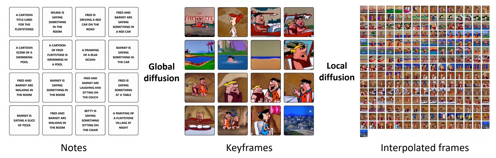
-
全局扩散模型
基于输入的文本描述（如16句提示），生成视频的关键帧序列（类似动画制作中的分镜），确保全局时序连贯性与情节一致性。例如，输入16句描述可生成11分钟动画的关键帧。 -
局部扩散模型
在关键帧之间递归填充中间帧，通过多层级扩散逐步细化内容。例如，首层局部扩散生成L²帧，后续层级以指数级扩展帧数，最终生成O(L^m)长度的视频。
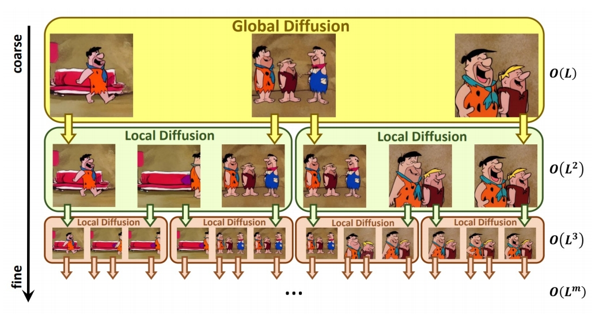
✅ 递归的 Local Diffusion
| Global diffusion model | Local diffusion model | |
|---|---|---|
| 文生图 | 关键帧插帧 | |
| 输入 | L text prompts | 2 text prompts + 2 keyframes |
| 输出 | L keyframes | L keyframes |
- Mask Temporal Diffusion (MTD)

✅ Global 和 Local 使用相似的模型，训练方法不同，主要是 MASK 的区别。
- 关键优势
- 消除训练-推理差距：直接在长视频数据（如3376帧）上训练，提升全局一致性。
- 并行推理加速：局部扩散模型支持并行计算，生成1024帧的时间从7.55分钟降至26秒，效率提升94.26%。
- 指数级扩展能力：视频长度随扩散层级深度m呈指数增长，支持生成极长视频。
三、实验与效果验证
- 数据集与指标
- 构建FlintstonesHD数据集用于训练与测试。
FlintstonesHD: a new dataset for long video generation, contains 166 episodes with an average of 38000 frames of 1440 × 1080 resolution
- 评估指标：Avg FID（帧质量）和Block FVD（视频连续性），数值越低越好。
-
性能对比
- 生成质量：NUWA-XL的Avg FID稳定在35左右，优于Phenaki（48.56）等模型，且质量不随视频长度下降。
- 连续性：B-FVD指标显示，NUWA-XL生成的长视频片段质量下降更慢，因模型学习了长视频模式。
-
效率提升
生成1024帧的推理时间仅需26秒，较传统方法提升94.26%。
四、意义与未来方向
-
行业应用潜力
NUWA-XL为动画、影视、广告等领域提供了高效生成工具，例如通过少量文本生成连贯的长视频内容，降低创作门槛。 -
多模态大模型融合
论文提出未来需将语言与视觉生成融合至统一架构，推动通用型AI的发展。微软研究员段楠指出，当前模型（如GPT-4）仍以文本输出为主，而NUWA-XL展示了视觉生成的潜力。 -
技术扩展性
通过增加训练数据（如电影、电视剧）和算力，NUWA-XL可进一步扩展至更复杂场景，如电影级长视频生成。
五、论文资源
- 论文地址：arXiv:2303.12346
- 项目演示：NUWA-XL官网
该研究通过仿照动画制作流程（关键帧→细化填充），结合扩散模型的并行优势，为长视频生成领域提供了新的技术范式，并推动了多模态大模型的发展。
AnimateDiff: Animate Your Personalized Text-to-Image Diffusion Models without Specific Tuning
研究背景与问题
目的
-
T2I -> T2V。
本框架核心是一个即插即用的运动模块，该模块只需训练一次即可无缝集成于同源基础T2I模型衍生的任何个性化模型中。 -
MotionLoRA，这是AnimateDiff的轻量级微调技术，可使预训练运动模块以较低训练和数据收集成本适应新运动模式（如不同镜头类型）。
✅ (1) 用同一个 patten 生成 noise，得到的 image 可能更有一致性。
✅ (2) 中间帧的特征保持一致。
P99
主要方法
方法核心在于从视频数据中学习可迁移的运动先验，这些先验无需特定调优即可应用于个性化T2I模型。
推断流程

在推理阶段，运动模块（蓝色）及可选的MotionLoRA（绿色）可直接插入个性化T2I构成动画生成器，通过迭代去噪过程生成动画。
训练流程

- 领域适配器（4.1节）：仅在训练中使用，用于缓解基础T2I预训练数据与视频训练数据间的视觉分布差异；
- 运动模块（4.2节）：学习通用运动先验；
- MotionLoRA（4.3节，通用动画场景可选）：将预训练运动模块适配至新运动模式。
领域适配器（Domain Adapter）
由于公开视频训练数据集（如WebVid）的视觉质量远低于图像数据集（如LAION-Aesthetic），导致基础T2I的高质量图像域与视频训练域存在显著差异。
为消除域差异对运动模块学习的干扰，在基础T2I中加入领域适配器（LoRA层）。
[?]为什么仅在训练阶段使用？
通过运动模块学习运动先验
使用Transformer(self attention + positioanl embedding)实现T2I->T2V
通过MotionLoRA适配新运动模式
目的：以少量参考视频和训练迭代量适配新运动模式（如镜头变焦/平移/旋转）
在运动模块的自注意力层添加LoRA层，并在新运动模式的参考视频上训练这些层。
训练
基模型：SD1.5 数据集：WebVid-10M, resized at 256x256
✅ 在低分辨率数据上训练，但结果可以泛化到高分辨率。
实验
横向对比
- Text2Video-Zero
- Tune-a-Video
- 本文方法


P68
ModelScopeT2V
Leverage pretrained T2I models for video generation
- Inflate Stable Diffusion to a 3D model, preserving pretrained weights
- Insert spatio-temporal blocks, can handle varying number of frames
✅ 基本思路：(1) 以 Stable Diffusion 为基础，在 latent space 工作。 (2) 把 SD 中的 2D 操作扩展为 3D.
 |
P69

✅ 扩展方法为 (2＋1)D，因此在 2D spatial 的卷积操作和 Attention 操作之后分别增加了 temporal 的卷积和 Attention.
P70
P71
Length = 1
Model generate images
✅ 时域卷积操作能指定 frame 数，因此可以“生成视频”与“生成图像”联合训练。
❓ 时序卷积不能做流式，能不能用 transformer.
P72

Show-1
Better text-video alignment? Generation in both pixel- and latent-domain
✅ Stable Diffusion Model存在的问题：当文本变复杂时，文本和内容的 align 不好。
✅ show-1 在 alignment 上做了改进。
P76
Motivation
pixel VS latent: 一致性
- Pixel-based VDM achieves better text-video alignment than latent-based VDM
 |
✅ 实验发现：pixel spase 比 latent space 更擅长 align ment.
✅ 原因：在 latent space，文本对 pixel 的控制比较差。
P77
pixel VS latent: memory
- Pixel-based VDM achieves better text-video alignment than latent-based VDM
- Pixel-based VDM takes much larger memory than latent-based VDM
P78
本文方法
- Use Pixel-based VDM in low-res stage
- Use latent-based VDM in high-res stage

P79
Result
https://github.com/showlab/Show-1
- Better text-video alignment
- Can synthesize large motion
- Memory-efficient
Make-A-Video
✅ 把 text 2 image model 变成 text to video model，但不需要 text-video 的 pair data.
Cascaded generation
✅ 效果更好，框架在当下更主流。
✅ (1) SD：decoder 出关键帧的大概影像。
✅ (2) FI：补上中间帧。
✅ (3) SSR：时空上的超分。
✅ 时序上先生成关键帧再插帧，空间上先生成低质量图像再超分。
✅ 这种时序方法不能做流式输出。
P41
❓ 第 3 步时间上的超分为什么没有增加帧数？
P42
2D->3D

✅ 此处的伪 3D 是指 (2＋1)D，它有时序上的抽像，与 VDM 不同。
✅ 空间卷积使用预训练好的图像模型。
P43
✅ attention 操作也是 (2＋1)D．
✅ 与 Imagen 的相同点：(1) 使用 cascade 提升分辨率， (2) 分为时间 attention 和空间 attention.
✅ 不同点：(1) 时间 conv＋空间 conv. (2)only the image prior takes text as input!
P44
Training
- 4 main networks (decoder + interpolation + 2 super-res)
- First trained on images alone
- Insert and finetune temporal layers on videos
- Train on WebVid-10M and 10M subset from HD-VILA-100M
✅ 先在图片上训练，再把 temporal layer 加上去。
P58
Evaluate
P59

✅ 早期都在 UCF 数据上比较，但 UCF 本身质量比较低，新的生成方法生成的质量更高，因此不常用 UCF 了。
P60
P62
应用：From static to magic
Add motion to a single image or fill-in the in-betw
Video Diffusion Models
2D -> 3D
VDM的一般思路是，在T2I基模型的基础上，引入时序模块并使用视频数据进行训练。
引入时间模型的方法有卷积方法（Conv3D、Conv(2+1)D）、注意力机制(Cross Attention、Transformer)
| Conv2D | |
| Conv3D |  |
| Conv(2+1)D |  |
✅ \(t\times d\times d\) 卷积 kenal 数量非常大，可以对 kernel 做分解，先在 spatial 上做卷积，然后在 temporal 上做卷积。
✅ 特点：效果还不错，效率也高。
P39
3D U-Net factorized over space and time
✅ 2D U-Net 变为 3D U-Net，需要让其内部的 conv 操作和 attention 操作适配 3D.
- Image 2D conv inflated as → space-only 3D conv, i.e., 2 in (2+1)D Conv
✅ (1) 2D conv 适配 3D，实际上只是扩充一个维度变成伪 3D，没有对时序信息做抽象。
- Kernel size: (3×3) → (1×3×3)
- Feature vectors: (height × weight × channel) → (frame × height × width × channel)
- Spatial attention: remain the same
✅ (2) attention 操作同样没有考虑时序。
- Insert temporal attention layer: attend across the temporal dimension (spatial axes as batch)
✅ (3) 时序上的抽象体现在 temporal attention layer 上。
3D UNet from a 2D UNet
- 3x3 2d conv to 1x3x3 3d conv.
- Factorized spatial and temporal attentions.


Ho et al., "Video Diffusion Models", NeurIPS 2022
✅ 利用 2D 做 3D，因为 3D 难训且数据少。
✅ 通到添加时序信息，把图像变成视频。此处的 3D 是 2D＋时间，而不是立体。
✅ 对向量增加一个维度，并在新的维度上做 attention.
Learning Transferable Visual Models From Natural Language Supervision
CLIP：Encoders bridge vision and language
- CLIP text-/image-embeddings are commonly used in diffusion models for conditional generation

❓ 文本条件怎么输入到 denoiser？
✅ CLIP embedding：202 openai，图文配对训练用 CLIP 把文本转为 feature.
Implicit Warping for Animation with Image Sets
NVIDIA
核心问题是什么?
摘要
这与现有方法不同，我们的框架的挑选能力有助于它在多个数据集上实现最先进的结果，这些数据集使用单个和多源图像进行图像动画。
https://deepimagination.cc/implicit-warping/
目的
用 driving 视频中的动作来 warp reference 图像中的角色，以实现视频驱动图像的视频生成任务。
现有方法：
要实现大幅度的运动，就需要借助大的光流，才能获得远处的特征。
.
.
.
.
现有方法及局限性
现有方法使用显式基于光流的方法进行动画，该方法设计用于使用单个源，不能很好地扩展到多个源。
.
.
.
.
本文方法
我们提出了一种新的隐式图像动画框架，使用一组源图像通过驱动视频的运动进行传输。使用单个跨模态注意力层在源图像和驱动图像之间找到对应关系，从不同的源图像中选择最合适的特征，并扭曲所选特征。
.
.
.
.
效果
在单 reference 和多 reference 场景中都达到了 SOTA.
.
.
.
.
核心贡献是什么？
.
.
.
.
.
.
.
.
.
.
.
.
.
.
.
.
.
.
.
.
大致方法是什么？

- 找出 source和driving 的 dense correspondence
- 基于 dense corresponence 的 warp.
作者认为一个CA可以完成 1 和 2. 称其为 impicit warping

不需要显式地提取光流，Q 和 K 的相似度描述了隐式的光流。

构造 Q. K .V
K: Source keypoint feature
Q: driving keypoint feature
V: Source image feature
Q 的构造：

spatial keypoint 表示，[:,:,i] 为以第i个 keypoint 位置为中心，特定均值和方差的二维一通道高斯。
Strength: 描述关键点的可见性。
K 的构造：
K 和 Q 和构造过程相同，区别在于UNet 的输入，concat (scaled spatial keypoint 表示，source Image)
优势：把所有 keypoints 表示到一张图像上，后面的模块与 keypoint 的个数无关。
V 的构造：

Q、K、V 在空间上是对应的。
CA 存在的问题：所有的 key 与 query 都相似度不高时，也会从 key 中选择一个 Score 最高的 key 对应的 value，但这个 value 可能并不合适，或者选择任何一个 value 都不合适。例如张嘴时要生成牙齿。
解决方法：
- 增加额外的 KV
- 使用 dropout 随机丢弃 KV 来鼓励使用额外的 KV
这个方法对 “warp 方法缺少生成能力”的问题有一定弥补作用
[❓] 怎么制作额外的 KV？ 每一对 KV 代表一个 Source Image 上的一个 Keypoints.
此处能对 KV 做 drop out，是因为 CA 把所有的 KV 看作是集合，不能应用于 Conv. 因为conv 是有位置关系的。
crsss - modal attention

Q: q\(\times \)d, K: k\(\times \)d,V: k\(\times \)d'
$$ \begin{align*} q& =kps-num\\ K& =kps-num\cdot ref-num+add-num \end{align*} $$
$$ \begin{matrix} Q=Q+PE, &\\ K=K+PE &\\ A=\text{Softmax} (\frac{Q\cdot K^\top }{C}), & q\times k \\ \text{output feature} =A\cdot V,& q\times d{}' & \end{matrix} $$
$$ \text{residual feature} = MLP(\text{concat}(A \cdot \text{concat(pixel} , K),Q)) $$
$$ \text{warped feature = output feature + residual feature} $$
目的：除了用 A warp 了 V，还 warp 了原图和 key，用于提取 skew, rotation 等“对 V 做加权平均”难以学到的信息，可提升生成质量和颜色一致性。
效率提升：1- D attention layer ， spatial-reduction attention
.
.
.
.
.
.
.
训练
.
.
.
.
.
.
.
.
.
.
.
.
.
.
.
.
.
.
.
.
数据集
TalkingHead-1kH
VoxCeleb2
TED Talk
评价指标
生成图像质量：PSNR，L1，LPIPS,FID
运动相似度：AKD (average keypoint distance)
MKR(missing keypoint ratio)
.
.
.
.
.
.
loss
- GAN Loss(参考face-vidzvid)
- perceptual loss (参考 VCG-19)
- equivariance loss (参考 FoMM)
.
.
.
.
.
.
.
.
.
.
.
.
.
.
.
.
.
.
.
训练策略
.
.
.
.
.
.
.
.
.
.
.
.
.
.
.
.
.
.
.
实验与结论
实验1: 横向对比，单 reference
.
.
.
.
.
.
.
.
.
效果1：

结论1： 3 的生成质量更高且与动作一致性更好。
效果2：

结论2：
3 所使用的 attention 是 global 的，因此可以从空间上距离较远的位置提取特征，但显式光流的方法，需要借助较大的光流才能获得远处的特征。
实验2: 横向对比，多 reference
- FOMM (face,upper body)
- AA- PCA (upper body)
- 本文方法
- fv2v(face)
1,2,4 不支持多 source Image 因此分别用每个 source Image 做 warping, 并在 Warp feature map 上做平均。
效果：

Source Image 为少于 180 帧的连续帧序列。
结论： 随着 Source image 数量的增加，3 的效果会更好，而1、2、4 的效果会更差。
分析： 用同一 pose warp 不同的 image，得到的结果之间会有 misalignment. 但 1、2 不知道该选取哪个 warp 结果。而 3 使用 global attention 从所有 source 中提取信息。
实验3： Ablation
- 无 residual 分支，无 Extra KV
- 引入 residual 分支
- 引入 Extra KV
效果：

结论： 残差结构与额外的 K／V 对结果都有提升。
实验4： 可视化 strength
效果：

[❓] 怎样预测 Strength?
.
.
.
.
.
.
.
.
.
.
.
.
.
.
.
.
.
.
.
.
.
.
.
.
.
.
.
.
.
.
.
.
.
.
.
.
.
.
.
.
.
.
.
.
.
.
.
.
有效
.
.
.
.
.
.
.
.
.
.
.
.
局限性
缺少生成能力，例如给背面生成正面，生成极端表情等。
.
.
.
.
.
.
.
.
.
.
.
.
.
.
启发
.
.
.
.
.
.
.
.
.
.
.
.
.
.
.
.
.
.
.
.
遗留问题
- 如何预测 Strength?
- 如何构造 extra KV?
.
.
.
.
.
.
.
.
.
.
.
.
.
.
.
.
.
相关工作

source／target 表示为：2D keypoints, Jacobian Matrics
Warp 的过程：每个 source／target keypoint 对生成
一个对 source Image Warp 的光流。再用 motion estimator 模块把这些光流合并成 Composite flow. 用 Composite flow warp reference Image
以上方法存在的问题：
- 每个 keypoint 求个光流，时间复杂度与 keypont 的个数成正比
- 当有多个 reference Image 时，每个 reference 会生成一个对应的 composite flow 和 output Image，如何将结果合并？average 会导致 blurry，heuristic to choose 会导致flicker.
参考材料
https://deepimagination.cc/implicit-warping/
Mix-of-Show: Decentralized Low-Rank Adaptation for Multi-Concept Customization of Diffusion Models
新国立，开源
| LoRA | Low Rank Adaptation |
| TI | Textual Inversion |
核心问题是什么?

目的
基于T2I大模型的个性化内容生成。
现有方法及局限性
使用 LoRA 可以实现 Concept Customization.
但联合多个 LoRA 实现 Multi-concept Customization 是个挑战。
.
.
.
本文方法
Mix-of-show 框架：
- 单个 LoRA 训练时使用 embedding-decomposed LoRA，解决多个 LoRA 之间的 concept 冲突问题。
- LoRA 结合时使用 gadient 混合，可保留单个 LoRA 的 in-domain essence，解决模型 fusion 引入的 ID 特征丢失的问题。
- 引入区域可控 sampling，解决 multi-concept sampling 中的特征与控制信号绑定的问题。
.
.
.
.
效果
可以组合定制不同的 concept (角色、对象、场景)且高质量生成。
.
.
.
.
.
核心贡献是什么？
.
.
.
.
.
.
.
.
.
.
.
.
.
.
.
.
.
.
.
.
大致方法是什么？

Mix-of-show 框架分为两部分：Single-Clinent和 Center-Node.
Single-Client 基于 LoRA 学习特定对象，其关键技术为layer-wise Embedding 和 multi-world 表示。
Center-Node 用于接入各种 Single-Client 以实现定制化的效果，其关键技术为 gradient fusion.
任务描述
目的： 结合2个及以上 concept 的定制化 Diffusion 生成模型。
当前方法： 多个 concept 的联合训练。这种训练方法缺少扩展性和可复用性。
解决方法： 分别训练每个 concept 模型，并将它们合并。
在本文中,单个 concept 模型用 LoRA 实现。合并的方法为把多个concept 模型集成的权重到 center-node 上(类似LoRA)。
$$ W= f(W_0,\Delta W_1,\Delta W_2,\dots ,\Delta W_n), $$
Single Client：ED-LoRA
原始 LoRA 是不能做 Concept 融合的。
假设关于 concept 的 \(V\) 已经训好,\(P^\ast\) 为包含 \(V\) 的 text prompt. 可视化 \(V\) 是指使用完整的推断流程，根据\(P^\ast\) sample 出一幅画。
对比模型：
- TI，即只学习 \(V\)，不更新模型参数。
- TI + LoRA，即学习 \(V\)，且以 \(\Delta \phi \) 的形式更新模型参数。
❓ in-domain 和 out-domain 分别代表什么了？
答：in-domain concept：目标是预训练基模型生成出来的图像。
out-domain concept：目标不是由这个基模型生成出来的，可能与基模型的生成分布有较大差异。
结论1: 不更新预训练模型的 TI 方法只能学习(和生成) in-domain concept，对 out-domain concept 效果不好，在 TI 基础上，以 LoRA 方式更新预训练模型可以学习和生成out-domain concept.
这是因为，不更新预训练模型，就必须让 \(V\) 学到全部的 concept 特征。\(V\) 可以学到in-domain part，却不足以学习 out-domain part. 导致 \(V\) 的部有细节的丢失。
结论2: concept 的独特特征主要是通过 LoRA (而不是embedding)学到的，使得语义相似的 embedding 映射到不同的视觉空间，因此导致了多 Concept 融合时的 Conflicts.（每个 LoRA 都试图把同一个 embedding 映射到自己的视觉空间）
ED - LoRA = embedding(in-domain) + LoRA(out-domain),其中embedding 部分通过两种方式增强其表达能力。
- 将相似的 embedding 替换成不同 concept 解耦的 embedding.
- 采用 layer-wise embedding (引用自\(P^+\))
$$ V=V^{+} _{rand} V^{+} _{class} $$
\(V^{+} _{rand}\)：随机初始化，用于提取 concept 的外观特征。
\(V^{+} _{class}\)：根据 concept 的类别初始化。
[❓] 分别是怎么定义的？
\(V^{+} _{rand} 、V^{+} _{class}\). LoRA 矩阵(B、A)都是可学习参数，其中 V 学习目标 concept 的 in-domain 特征，LoRA 提取目标 concept 其它特征。
[❓] 每个 concept 独立学习的，怎么保证每个 concept 学到 V 的都较大的区分度？
✅ 每个 client 分别要学习 \(V^{+} _{rand} 、V^{+} _{class}\). LoRA 矩阵(B、A)，因此 center 也要分别结合这些参数。
Center-Node
如何把 LoRA 矩阵结合到预训练模型的权重上？
结论3：直接混合 LoRA 权重，会导致生成结果的 concept ID 特征丢失。
因为，\(n\)个 LoRA 矩阵的简单平均，会导致每个矩阵都变为原来的\(\frac{1}{n} \).
Gradient Fusion：利用 “decode concepts from text prompts” 的能力，在没有数据的情况下更新预训练模型的权重。
- 使用每个单独的 LoRA 分别 从 text prompts decode 出 concept.
✅ 这里的 decode 应该是 inference 的意思吧。从 text 到 image 是完整的 sample 过程,仅仅一个 decoder 是不够的。
- 提取每个 LoRA 的 LoRA 层对应的 input / output feature.
- 位于同一层的各个 LoRA 的 feature Concat 到一起。
[❓] 怎么么理解 concat? concat 之后维度就不对了，公式中也没有体现出 concat.
答：通过图4(b)可知，是 batch 维度的 concat.
- fused gradients 更新 W，目标函数。
$$ L= {\textstyle \sum_{i=1}^n{}} ||(W_0+ \Delta W_i)X_i-WX_i||^2_F $$
目标函数第1项为由 single Client 训练出的GT. 第二项是待训练的 layer. \(X_i\) 是 LoRA layer Input 经过 activation 的结果，即 activate 部分保持不变，通过训好的 LoRA layer 生成 pair data 来优化 UNet layer,使得 \(W\) 逼近 \(W_0+ \Delta W_i\) 的效果。
区域可控的 Sampling
当前的控制信号注入方式（空间控制 ControlNet，T2I）能保留目标特征，但如果要生成多个目标，不能将特定目标与特定控制信号绑定。
本文方法：区域控制
| \(P_g\) | global prompt：提供 overall context |
| \(P_{ri}\) | regional prompt：描述特定目标的位置与特证 |
| \(z\) | UNet fedture |
| \(M_i\) | mask,描述控制信号i所控制的区域 |
注入控制：
- \(h = CA (z, P_g)\)
$$ \begin{align*} z_i&=z\odot M_i\\ h_i&=CA(z_i,P_{ri}) \end{align*} $$
- \(h[M_i] = h_i\)
.
.
.
.
.
.
.
.
.
.
.
.
.
.
.
.
.
.
.
.
.
.
.
.
.
.
.
.
.
训练
| Stage | Stage 1: Single Client | Stage 2: center node |
| 可学习参数 | V,LoRA | UNet 中加了 LoRA 的层 |
| 数据 | 特定 Concept 的自采数据 | 由 Stage 1 构造数据 |
| Loss |  | |
| 学习率 | text embedding：1 e -3, text encoder：1 e -5,UNet, ：1 e -4 | |
| Optimizer | Adam | LBFGS,text optimizer：50, UNet: 50 |
.
.
.
.
.
.
.
.
.
训练策略
在 text Encoder 和 UNet 的所有 attention 模块中的 Linear 层加入 LoRA，rank = 4
预训练模型：
Chilloutimix：即图4中的 pretrained-V1
Anything-V4：即图4中的 pretrained-V2
单模块训练:
0.01 noise offset 是 encoding stable identity 的关键。
.
.
.
.
.
.
实验与结论
实验1： 单内容/多内容生成
- LoRA + weight fusion
- Custom Diffusion + 合并 CA 中的 K.V
- \(P+\) + 多 concept embedding
- ED \(-\) LoRA + gradient fusion
多内容生成时，所有方法使用“区域可控” prompt.
效果: 对于单内容生成，4 生成质量相当好且能更好保留角色持征。
对于多内容生成，2 和 3 的生成结果不自然。1 在多内容生成时会丢失目标特征，4 生成结果自然且能保留每个ID的特征。
分析: 1 和 4 会调整整个模型的所有 CA 层，2 和 3 只调整文本相关的模块。导致 2 和 3 的 embedding 超负荷地承担了编码 out-domain low-level 细节的工作，影响了生成质量。
1 没有多内容融合的能力。
实验二： 文本一致性 (CLIP)
效果:

- 单内容生成中，1 和 4 的文本一致性比较好。
- 在多内容生成中，1 的文本一致性有明显下降，但4没有。
分析： 由于 1 和 4 调整了 spatial 相关层的权重，因此能更好地捕获复杂的ID特征。
实验三： Ablation
- LoRA + Weight fusion
- ED - LoRA + Weight fusion
- ED-LoRA + gradient fusion
效果:

结论: ED 编码和 gradient fusion 能好较地保留 ID 特征。
评价指标
CLIP-Score: T/I 相似度
CIIP: 生成图像与 target conept 的相似度
.
.
.
.
.
.
.
.
.
.
.
.
.
.
.
.
.
.
.
.
.
.
.
.
.
.
.
.
.
.
.
.
.
.
.
.
.
有效
.
.
.
.
.
.
.
.
.
.
.
.
局限性
- attributes from one region may influence another due to the encoding of some attributes in the global Single-Concept Model Methods embedding.

Figure 10: Limitation of Mix-of-Show. (a) Attribute leakage in regionally controllable sampling.
解决方法： negative prompts
- 训练 Center-node 的时间较长 (30min,1 A100)
- 生成 small faces 因为 VAE 丢失了高频细节
解决方法： 提升生成图像的分辨率。
.
.
.
.
.
启发
.
.
.
.
.
.
.
.
.
.
.
.
.
.
.
.
.
.
.
.
遗留问题
.
.
.
.
.
.
.
.
.
.
.
.
.
.
相关工作
内容定制

多内容融合：
- Custom Diffusion：多内容联合训练，约束优化
- SVDiff：数据增强，防止 concept mixing
- Cones
多推断内容定制
- Instantbooth
- ELITE
- Jia
联邦学习
不同 client 在不同享数据情况下学习相互协作。
- FedAvg：不同 Client 的权重混合
- 基于 LoRA 的 local client + raining/global server aggregation
参考材料
- 项目主页：https://showlab.github.io/Mix-of-Show
- diffusion model
- LoRA
Motion-Conditioned Diffusion Model for Controllable Video Synthesis
INVIDIA， Google Research， 不开源
核心问题是什么?
目的
以一种更可控的方式描述要生成的内容和动作，进行Motion-guided video generation
现有方法及局限性
缺乏控制和描述所需内容和运动的有效方法
本文方法
用户通过一些短划线对图像帧进行描述，可以合成的预期的内容和动态。
- 利用flow completion model，基于视频帧的语义理解和稀疏运动控制来预测密集视频运动。
- 以输入图像为首帧，future-frame prediction model合成高质量的未来帧以形成输出视频。
效果
我们定性和定量地表明，MCDiff 在笔画引导的可控视频合成中实现了最先进的视觉质量。
核心贡献是什么？
大致方法是什么？
Two-stage autoregressive generation

MCDiff 是一种自回归视频合成模型。对于每个时间步，
输入：前一帧（即开始帧或预测的上一帧）和笔画的瞬时段（标记为彩色箭头，较亮的颜色表示较大的运动）引导。 输出：（1）flow completion model预测代表每像素瞬时运动的密集flow。(2)future-frame prediction model通过条件扩散过程根据前一帧和预测的密集流合成下一帧。
所有预测帧的集合形成一个视频序列，该序列遵循起始帧提供的上下文和笔划指定的运动。
视频动态标注
这一步用于构造dense flows。
- 计算两帧的光流。
- 计算两帧中的关键点的光流。
- 用2的flow代替1中有移动的点的flow。因为2的flow往往能更准确地描述人体形状。
[?] 每个关键点的flow不同，分别代替哪些像素点的flow？ [?] 这个方法只适用于有人且单人？
flow completion model F
| 输入 | 输出 | 方法 |
|---|---|---|
| dense flow | sparse flow | 下采样 1. 采样与关键点像素想关的flow。 2. flow magnitude大的采样概率大。 3. 同时采样背影或其它物体的运动 |
| 稀疏的拖拽信息 | 2D的稀疏光流表示 | w * h * 2的 矩阵，描述相对于上一帧的位移。由于是拖拽是稀疏光流，大部分格子上是没有拖拽信息的。把这些空白填上learnable embedding，表明用户没有在这些地方指定输入。 |
| 2D的稀疏光流表示 2D的图像信息 | UNet输入 | concat |
| UNet输入 | dense flow | UNet |
[?] 直接监督dense flow?
答：只是用了UNet，但没有用Diffusion。
future-frame prediction model G
输入：当前帧图像xi，当前帧到下一帧的光流di
输出：下一帧图像
方法：LDM
条件注入方式：concat(noise, xi, di)
训练
数据集
loss
训练策略
分别训练F和G，然后端到端finetune F和G。
F和G都使用UNet作为基本结构，但F是生成模型，直接预测图像。G是Diffusion模型，预测的是噪声，多次去噪迭代生成图像。
Motion-I2V是类似的工作，但它的第一步是通过diffusion根据图像生成合理的光流。
BaseModel: SD
实验与结论
实验一： 横向对比 效果： SOTA
实验二：
- 不使用F，sparse flow直接预测视频
- full model
效果：

结论： 使用Dense flow能更消除歧义，降低学习难度
有效
局限性
启发
遗留问题
参考材料
项目启动页面：https://tsaishien-chen.github.io/MCDiff/ing
Stable Video Diffusion: Scaling Latent Video Diffusion Models to Large Datasets
核心问题是什么?
目的
现有方法
本文方法
效果
核心贡献是什么？
大致方法是什么？
Stage I: Image Pretraining
- Initialize weights from Stable Diffusion 2.1 (text-to-image model)

Stage II: Curating a Video Pretraining Dataset
- Systematic Data Curation
- Curate subsets filtered by various criteria (CLIP-, OCR-, optical flow-, aesthetic-scores…)
- Assess human preferences on models trained on different subsets
- Choose optimal filtering thresholds via Elo rankings for human preference votes
- Well-curated beats un-curated pretraining dataset
Stage III: High-Quality Finetuning
- Finetune base model (pretrained from Stages I-II) on high-quality video data
- High-Resolution Text-to-Video Generation
- ~1M samples. Finetune for 50K iterations at 576x1024 (in contrast to 320x576 base resolution)
- High Resolution Image-to-Video Generation
- Frame Interpolation
- Multi-View Generation
- High-Resolution Text-to-Video Generation
- Performance gains from curation persists after finetuning
训练
数据集
Scaling latent video diffusion models to large datasets
Data Processing and Annotation
- Cut Detection and Clipping
- Detect cuts/transitions at multiple FPS levels
- Extract clips precisely using keyframe timestamps
- Synthetic Captioning
- Use CoCa image captioner to caption the mid-frame of each clip
- Use V-BLIP to obtain video-based caption
- Use LLM to summarise the image- and video-based caption
- Compute CLIP similarities and aesthetic scores
- Filter Static Scene
- Use dense optical flow magnitudes to filter static scenes
- Text Detection
- Use OCR to detect and remove clips with excess text
Blattmann et al., “Stable Video Diffusion: Scaling Latent Video Diffusion Models to Large Datasets,” 2023.
✅ SVD：构建数据集
✅ (1) 把视频切成小段，描述会更准确
✅ (2) 用现有模型生成视频描述
loss
训练策略
实验与结论

有效
局限性
启发
✅ 在少量高质量数据上 finetune，质量提升很大。
遗留问题
参考材料
UniAnimate: Taming Unified Video Diffusion Models for Consistent Human Image Animation
Ali,开源
核心问题是什么?
输入reference ID和driving pose，生成视频
目的
UniAnimate框架，以实现高效和长期的人类视频生成。
现有方法
当前的Diffusion Model存在两个问题：
i）需要额外的参考模型来将ID图像与主视频分支对齐，这大大增加了优化负担和模型参数；
例如AnimateDiff,TCAN
ii）生成的视频通常时间较短（例如，24帧），阻碍了实际应用。
本文方法
首先，为了降低优化难度并确保时间一致性，我们通过结合统一的视频扩散模型将参考图像与driving pose和噪声视频映射到一个共同的特征空间中。
其次，我们提出了一种统一的噪声输入，支持随机噪声输入和第一帧条件输入，从而增强了生成长期视频的能力。
最后，为了进一步有效地处理长序列，我们探索了一种基于状态空间模型的时态建模架构，以取代原始的计算消耗较大的Temporal Transformer。
[❓] 把 reference Image 和 driving pose 分别 embedding, 然后以相加或 concat 的方式结合到一起，就算是映射到同一空间了？
[❓] 原始是哪个？Modelscope?
效果
UniAnimate在定量和定性评估方面都取得了优于现有最先进同行的合成结果。
UniAnimate可以通过迭代地采用第一帧调节策略来生成高度一致的一分钟视频。
核心贡献是什么？
- 提出了具有一致性的人体图像动画的UniAnimate框架。具体来说，我们利用统一的视频扩散模型来同时处理参考图像和噪声视频，促进特征对齐并确保时间相干的视频生成。
- 为了生成平滑连续的视频序列，我们设计了一个统一的噪声输入，允许随机噪声视频或第一帧条件视频作为视频合成的输入。第一帧调节策略可以基于先前生成的视频的最后一帧生成后续帧，确保平滑过渡。
- 为了减轻一次生成长视频的限制，我们利用时态Mamba[15,30,93]来替换原始的时态序Transformer，显著提高了效率。
- 我们进行全面的定量分析和定性评估，以验证我们的UniAnimate的有效性，突出其与现有最先进方法相比的卓越性能。
大致方法是什么？

首先，我们利用CLIP编码器和VAE编码器来提取给定参考图像的潜在特征(左上)。为了便于学习参考图像中的人体结构，我们还将参考姿势的表示纳入最终的reference guidance中（左上）。随后，我们使用姿势编码器对目标驱动的姿势序列进行编码，并将其与噪声输入在channel维度上连接起来（左下）。噪声输入是从第一帧条件视频或噪声视频。然后，将级联的噪声输入与reference guidance沿着时间维度进行叠加，并将其馈送到统一的视频扩散模型中以去除噪声(左中)。统一视频扩散模型中的时间模块可以是temporal transformer或temporal Mamba。最后，采用VAE解码器将生成的latent video映射到像素空间。
Noised input: 统一的噪声输入，即所有帧用同一个 noise 初始化
Conditioned input: 用于长序列生成时固定首帧内容


统一的 VDM 模型
当前方案（例如TCAN），除UNet以外，还使用了referenceNet和Pose ControlNet。但本文把它们统一了。好处是：
-
将reference image feature 和 Output Video feature 对齐到同一latent space.
✅ 不同意，不同分支的feature也可以对齐同一latent space -
减少了参数量，更容易训练
✅ 不同意，多分支虽然参数量多，但大部分参数都是fixed.实际要训练的参数没那么多，且由于大部分参数fixed，预训练的效果不容易恶化。
当前方案显式地从reference Image 中取reference pose，并输入到模型中。
统一的噪声
| 当前方法：滑窗策略 |  | 两个CLip分别推断，在overlap处fusion. 这会导致两个clip的明显不连续，和overlap处的artifacts. |
| 本文方法 |  | 直接用上一帧的尾帧作为这一帧的首帧。优势：1.可生成指定首帧的视频。 2.可生成一致的长视频。 |
时序建模
当前方法： Temporal Transformer，具有二次复杂性。
本文方法： Temporal Mamba，具有线性复杂度。
二者性能相似，但 Temporal Mamba 所需 memory 更少。
0
0
0
0
0
0
训练与推断
0
0
0
0
0
0
数据集
TikTok
Fashion
loss
0
0
0
0
0
0
训练策略
提取Pose: Dwpose
Visual encoder:CLIP-huge,
Pose-encoder: STC-encoder in VideoComposer (仅借鉴结构)
多条件输入，每次以一定的比例dropout部分条件。

实验与结论
评价指标
图像质量： L1,PSNR,SSIM,LPIPS
视频质量： FVD
实验一： 横向对比
- Disco
- Magic Animate
- Animate Anyone
- Champ
效果：
- TikTok 上

- Fashion 上

结论：
- UniAnimate 超越SOTA，且能更好地保持结构化信息。
- 作者认为，收益来自于统一的VDM结构，能将appearance,pose.noise对齐且统一处理，便于模型优化。
实验二： Ablation of Reference Pose.
- 显式地引入 reference Pose
- 不使用 reference Pose
效果：
2 出现断肢，且不能很好地识别前景和背景。
有效
局限性
- 手和脸的生成
- reference 中看不见的部位生成的一致性。
启发
遗留问题
参考材料
- 项目页面：https://unianimate.github.io/
Align your Latents: High-Resolution Video Synthesis with Latent Diffusion Models
INVIDIA，不开源，精读
核心问题是什么?
目的
将 LDM 范式应用于高分辨率视频生成
现有方法
本文方法
- 在图像上预训练 LDM
- 通过向LDM（UNet部分和Decoder部分）引入时间维度，并用编码图像序列（即视频）进行微调，将图像生成器变成视频生成器。
- 在扩散模型upsamplers上引入时间层，将它们转变为时间一致的视频超分辨率模型。
效果
野外驾驶数据的生成
在分辨率为 512 × 1024 的真实驾驶视频上验证了我们的视频 LDM，实现了最先进的性能。
文生成视频的创意内容创建
可以轻松利用现成的预训练图像 LDM，因为在这种情况下我们只需要训练时间对齐模型。
好处：可以将公开可用的、最先进的文本到图像 LDM 稳定扩散转换为高效且富有表现力的文本到视频模型，分辨率高达 1280 × 2048。且这种训练时间层的方式可以推广到不同的微调文本到图像 LDM。
核心贡献是什么？
-
高分辨率长视频合成：LDMs扩展了传统的图像合成模型，使其能够生成高分辨率的长视频，是首个高分辨率长视频生成模型。
-
潜在空间中的扩散模型：与传统在像素空间中训练的模型不同，LDMs在潜在空间（latent space）中训练扩散模型，这可以减少计算和内存的需求。
-
时间维度的引入：作者通过在潜在空间中引入时间维度，将图像生成器转换为视频生成器，并通过在编码的图像序列（即视频）上进行微调来实现这一点。
-
时间对齐的扩散模型上采样器：通过引入时间层，可以将用于图像超分辨率的扩散模型上采样器转换为视频超分辨率模型，从而保持时间上的连贯性。
-
实际应用：论文中提到了两个实际应用案例：野外驾驶数据的合成和文本到视频的创意内容创建。
-
预训练和微调：LDMs可以利用现成的预训练图像LDMs，通过仅训练时间对齐模型来实现视频生成，这大大减少了训练成本。
-
个性化视频生成：通过将训练好的时间层与不同微调的文本到图像LDMs结合，论文展示了个性化文本到视频生成的可能性。
-
计算效率：通过在潜在空间中进行操作，LDMs能够在保持高分辨率输出的同时，降低训练和推理时的计算需求。
-
模型架构：论文详细介绍了LDMs的架构，包括如何通过插入时间层来扩展现有的图像生成模型。
大致方法是什么？
✅ 所有工作的基本思路：(1) 先从小的生成开始 (2) 充分利用 T2I．

图像生成模型 -> 视频生成模型
引入 Temporal Layers

Interleave spatial layers and temporal layers.
The spatial layers are frozen, whereas temporal layers are trained. Temporal 层与原始的Spatial 层是以residual的形式结合，省略掉维度变换的过程，
$$ z1 = Spatial Attention(z) \\ z2 = Temporal Attention(z1)\\ z3 = \alpha z1 + (1-\alpha) z2 $$
定义时间层
Temporal layers can be Conv3D or Temporal attentions.
- For Conv3D, shape is [batch, channel, time, height, width]
- For Temporal attention, shape is [batch \(^\ast \)height\(^\ast \) width, time, channel]
✅ 时序层除了时序 attention，还有 3D conv，是真正的 3D，但是更复杂，且计算、内存等消耗更大。
✅ 时序attention只是时间维度的融合，而3D conv是在f, w, h三个维度同时融合。
引入time PE
相对 sinusoidal embeddings [28, 89]
训练方法
先移除Temporal Layer(令alpha=1)，只训练Spatial Layer。然后Fix Spatial Layer，只训练Temporal Layer。
训练image model和video model使用相同的noise schedule。
Temporal Autoencoder Finetuning
原始的LDM是在图像上训练的，因此其Encoder&Decoder重建出的视频会闪烁。
解决方法：在Decoder中引入temporal layer，并用视频重训。

上图：微调解码器中的时间层时，会fix编码器，因此编码器是独立处理帧。解码时强制跨帧进行时间相干重建。使用Video-aware Discrimator。下图：在 LDM 中，解码是逐帧进行的。
- Fine-tune the decoder to be video-aware, keeping encoder frozen.
✅ Encoder fix．用 video 数据 fineture Decoder.
长视频生成
模型一次生成的帧数有限，通过两种方式生成长视频：
- 上一次生成的尾帧作为context注入到下一次生成的首帧信息中，以自回归方式生成长视频。
- 生成低帧率视频，再插帧，同样帧数，低帧率视频时间更长。
本节（论文3.2）解决context注入的问题。
下节（论文3.3）解决低帧率视频插帧的问题。
Context 的构建 \(\mathbf{c} _S = (\mathbf{m} _S \circ \mathbf{z} ,\mathbf{m} _S)\)
- 构建 mask，长度为 T，需要参考预置内容的帧置为1，需要生成的帧置为0。
- 构建Z。训练时取GT对应帧，调整到对应(w,h), 经过SD Encoder,即为Z。推断时，取上一批生成过程的中间结果Z的对应帧。
- 构建\(\mathbf{c} _S\). Z 与 mosk 逐元素乘，其结果在channel维度上与 mask concat. 最终shape为 (B,T,c+1,w,h)
模型结构
[❓] 3D Conv 是怎样使用 \(\mathbf{c} _S\) 的？
答：文章没有说明，推没为 channel 维度的 concat.后面文章都没有使用这种方法注入 reference Image，可能是效果不好，或者使用时有其它局限性。
训练策略
CFG
Upsampler diffusion model
插帧模型的训练方法与自回归模型的训练相似,即 context 注入和 CFG 训练,区别在于 mask 的构造不同。
引入现有的 diffusion based 图像超分方法，提升生成视频的分辨率。在现有方法的模型中引入时间层，保证了超分视频内容的时间一致性。
“驾驶视频生成”应用在像素空间做超分。“T2V” 应用在 latent 空间做超分。
为什么选择在像素空间做超分？作者没有解释，可能是因为这样效果更好。
为什么可以在像素空间做超分？因为超分不需要关注较长的时序连续性（生成模型已经处理好这个问题）。所以训练时一个数据只包含较少的patch，在像素空间上也能训得起来。
训练
数据集
RDS Videos
WebVid-10M
loss
训练策略
- 先训练图像生成的 LDM 或使用预训练的，再训练时序层。
- CFG 方式引入 context 条件。
实验与结论
实验一：
- Origin SD Decoder
- SD Decoder + 时序层 + 视频数据 finerune
效果： 2的 FVD 明显优于1
结论： Decoder 中引入时序信息，对视频生成质量非常重要。时序层会轻微牺牲单帧图像的质量，换来时序上的合理性。
实验二：
- 不使用 AutoEncoder，直接在像素上训练 DM。
- 不使用预训练的 Spatial Layer，使用训练数据同时训Spatial Layer 和 Temporal Layer.
- Temporal Layer 不使用 Conv 3D 而是使用 Temporal Attention.
- 全量模型。
效果：

结论： Latent Embedding 图像上的预训练模型，Conv3D对视频生成质量都有时显提升。
实验三：
1.Image LDM 替换成 Dream Booth 版本
效果： 可以生成 Dream Booth 训练数据中的特定角色的视频，且角色有较好的一致性。
结论： 通过替换 Spatial 层，可以实现定制化的 T2V 生成。
实验四：
在低分辨率视频上训练的模型直接用于生成高分辨率视频。
效果： 可通过调声初始噪声的维度直接生成高分辨率视频，在生成质量有所下降。
结论： 在高分辨率视频生成上具有泛化性，这是图像 LDM 的固有属性，是通过 UNet 主干的卷积性质实现的。可以通过控制初始噪声的维度生成指定维度的视频。
实验五：
在短视频上训练的模型直接用于生成长视频。
效果： 可生成，质量下降。
结论： 原理与分辨率的泛化性类似通过对模型结构做特定的调整，可支持视频帧数的泛化性。为了适配帧数泛化性，所做的设计为：
- temporal attention 层的 time 使用相对正弦编码。
- temporal attention 层的 mask 设置为前后可见8帧。
- spatial 和 temporal 的混合系数 2 为 scaler.
实验六：
- 直接在预训练的 SD（较高分辨率）用视频数据（较低分辨率）训练新加入的时序层。
- 先用视频数据 feature SD，然后再训练时序层。
效果： 1的视频生成质量严重下降，2会导致 SD 的图像生成质量下降，但最终的视频生成质量优于1。
结论：
- 2先对 SD finetune 是必要的，以防止对视频建模时出现失分布的情况。
- 使用预训练模型时，如果推断数据与预训练数据有较大的偏差，考虑对预训练参数做微调，否则，可以 fix.
- 微调预训练模型的方式可以是先微调再 fix，也可以是联合优化，二者有什么区别？
有效
-
实验结果： 论文提供了在真实驾驶视频数据集上的实验结果，展示了LDMs在生成高分辨率、长时间视频方面的性能。
-
模型泛化能力： 通过在不同的微调设置下测试时间层，论文展示了这些层在不同模型检查点之间的泛化能力。
-
文本到视频的生成： 论文展示了如何将文本到图像的LDM扩展为文本到视频的生成模型，并通过实验验证了其有效性。
局限性
启发
每一帧独立上采样（或Decoder）会严重破坏视频的帧间连续性。
遗留问题
- 为什么应用1在像素空间做超分，而应用2在 latent 空间做超分？是因为数据集不同？应用场景不同？还是任务不同？
- 超分是彼么做的？
参考材料
Puppet-Master: Scaling Interactive Video Generation as a Motion Prior for Part-Level Dynamics
数据集，不开源
核心问题是什么?
零件级运动的视频生成
目的
Puppet-Master 是一种交互式视频生成模型，可以作为零件级动态的运动先验。
在测试时，给定单个图像和一组稀疏的运动轨迹（即拖动），Puppet-Master 可以合成一个视频，描绘忠实于给定拖动交互的真实零件级运动。
现有方法
这是一个新问题，无现有方法
本文方法
- 微调大规模预训练视频扩散模型SVD
- 提出了一种新的调节架构来有效地注入拖动控制
- 引入了all-to-first注意力机制，替换原始模型中空间注意力模块。它通过解决现有模型中的外观和背景问题来显着提高生成质量。
- 使用 Objaverse-Animation-HQ 数据，这是一个精心策划的部件级运动剪辑的新数据集。
- 提出了一种策略来自动过滤掉次优动画并通过有意义的运动轨迹增强合成渲染。
效果
PuppetMaster 可以很好地推广到各种类别的真实图像，并在现实世界基准上以零样本的方式优于现有方法。
核心贡献是什么？
-
交互式视频生成：Puppet-Master能够在测试时，根据单个图像和稀疏的运动轨迹合成视频，这些视频展示了与给定拖动交互一致的真实部分级别运动。
-
运动先验：与传统的运动模型不同，Puppet-Master学习了一种更通用的运动表示，能够捕捉到对象内部动态，如抽屉滑出柜子或鱼摆动尾巴等。
-
数据集创建：论文提出了Objaverse-Animation-HQ，这是一个新的数据集，包含经过筛选的部分级别运动剪辑，用于训练Puppet-Master。
-
新的条件架构：为了有效地将拖动控制注入视频生成流程，论文提出了一种新的条件架构，包括自适应层归一化和带有拖动标记的交叉注意力模块。
-
all-to-first 注意力机制：为了解决现有模型中的外貌和背景问题，论文引入了all-to-first 注意力机制，这是一种替代传统空间注意力模块的方法，通过直接从条件帧传播信息来显著提高生成质量。
-
新的评价指：根据局部零件运动轨迹的相似度，制定了 flow-error 评价指标，可以更好地评价零件级运动视频的生成质量。
大致方法是什么？
 在原始的SVD架构的基础上做以下修改；基模型为link
在原始的SVD架构的基础上做以下修改；基模型为link
- 添加自适应层归一化模块来调节内部扩散特征(上图A模块)
- 添加带有拖动标记的交叉注意(上图B模块)
- 引入了 all-to-first 空间注意力，代替原有空间自注意力模块。它使用第一帧来关注每个带噪声的视频帧。(上图C模块)
要解决的问题：
-
将拖动条件 D 注入视频生成管道中，以促进高效学习和准确且时间一致的运动控制，同时避免过多修改预训练视频生成器的内部表示。论文3.2节解决拖动条件注入的问题，论文3.3节解决伪影问题。 本文以两种方式注入拖动条件
-
使用拖动编码调制 UNet feature 这种方式要求二者之间有相同的结构，常用于图像的不同图层之间。
-
以 embedding 的形式与 UNet feature 进行 cross attention 这种方式不要求有相同的结构，常用于两个embedding 之间。类似于 SD 中和 CLip Embedding.
-
仅仅微调预先训练的SVD可能会导致杂乱背景等伪影[39]。
向SVD模型添加拖动控制
- 引入拖动 D 的编码函数
- 扩展 SVD 架构以将生成的代码注入网络
- 使用视频与训练三元组 (X , y, D) 形式来微调模型。
拖动编码
这是一个hand-crafted的编码方式，编码结果为：K * N * s * s * C
K：控制点的个数
N：视频帧数
s：分辨率
c：6，分别是start location, current localtion, end_location
格子没有控制点经过填-1
[❓] 直接记录位置，为什么还要SXS？
答：以 s * s 结构记录特征，是为了与 UNet feature 保持同样的信息结构，具有相同结构的特征才能以调制的方式融合。
拖动调制
调制：调整特征的均值和方差，使其与其它特征区别开来。但又不影响特征的原始结构。
$$ f_s \leftarrow f_s \bigotimes （1 + \gamma_s） + \beta_s $$
fs为UNET在s分辨率下的特征。gamma和beta通过对拖动编码做卷积操作得到。
以调制的方式让拖动编码影响原始特征
Drag Token（拖动标记）
原始的SVD中的cross attention是clip embedding与z之间的。
此处把拖动编码进行MLP之后拼接到clip embedding上，成为新的clip embedding，即Drag Token。
Attention with the Reference Image
实验观察结论：
- 生成的视频具有杂乱的或者灰色的背景，这是由于SVD 是在 576 × 320 视频上进行训练，无法泛化到非常不同的分辨率。强行在其它分辨上finetune，容易出现局部最优。
- 当模型学习到复制参考图像作为第一帧，第一帧的appearance不会出现退化。
✅ 我认为外观效果降级不是因为分辨率的改变，而是 reference Image 的注入方式。
本文把 reference Image 以 CLIP Embedding 进行注入，但 CLIP Embedding 只是对图像的 high level 的理解，但对外观细节的约束比较弱，因此导致外观效果的降级。原始的 SVD 中的照片续写应用，会把首帧的信息以 Context 的形式注入，这是一种对 reference Image 的更强力的约束，这里没有了这一部分设计。
因此：
创建一条从每个噪声帧到第一帧的“shortcut”，并具有all-to-first的空间注意力，这即使不能完全解决问题，也可以显着缓解问题。
本文设计：
原始的cross attention机制的Q, K, V都是B * N * s * s * C的维度。spatial cross attention是在空间维度上做的，因此第i帧中参与计算的内容是Q[:,i], K[:,i], V[:,i]。但在此处分别将它们修改为Q[:,i], K[:,0], V[:,0]。
✅ 增加 UNet feature 与 reference Image 的 cross attention 也是同样的效果。
好处：
- 第一帧的这种“short cut”允许每个非第一帧直接访问参考图像的未降级外观细节，从而有效地减轻优化过程中的局部最小值。
- 与所提出的drag encoding相结合，该编码为每一帧指定第一帧的原点 uk ，all-to-one注意力使包含拖动终止（即 vn k ）的latent像素更轻松关注第一帧上包含拖动原点的潜在像素，可能有助于学习。
训练
数据集
- Objaverse：原始数据集由 3D 艺术家创建的 800k 模型的大型 3D 数据集，其中约 40k 是可动画的。
- 从中挑出可被驱动的3D模型，设置规则 + 分类器的方法，生成数据集 Objaverse-animation.
- 从可驱动模型中挑出合理的驱动，生成数据集 Objaverse-Animation-HQ.
- 设计动作从中提取出稀疏的drag motion
loss
训练策略
实验与结论
实验一：
使用包含不同信息的拖拽编码调制 UNet 特征。
效果：

结论： 拖拽编码调制 UNet 特征进行调制，对闪果有很大提升。
实验二：
使用不同数据进行训练。
- Objaverse-Animation
- Objaverse-Animation-HQ
效果： 2优于1。
结论： Less is more.
有效
-
零样本泛化**：尽管Puppet-Master仅使用合成数据进行**微调，但它能够在真实世界数据上实现良好的零样本泛化，超越了之前在真实视频上微调的方法。
-
数据筛选策略：论文提出了一种系统方法来大规模筛选动画，以创建数据集Objaverse-Animation和Objaverse-Animation-HQ，这些数据集包含更高质量和更逼真的动画。
-
实验验证：通过广泛的实验，论文展示了Puppet-Master在合成连贯性、保真度和可控性方面的优势，并证明了其在不同任务和数据集上的有效性。
局限性
启发
- 一种拖动交互的编码方式。
- 真实视频数据有限时的一种数据构造方式。
遗留问题
参考材料
- 项目页面：vgg-puppetmaster.github.io。
A Recipe for Scaling up Text-to-Video Generation
Ali,开源，VGen
核心问题是什么?
目的
基于diffusion model的文生视频
现有方法
文本视频的pair data规模有限。但是无标注的视频剪辑有很多。
本文方法
TF-T2V：一种新颖的文本到视频生成框架。它可以直接使用无文本视频进行学习。其背后的基本原理是将文本解码过程与时间建模过程分开。 为此，我们采用内容分支和运动分支，它们通过共享权重进行联合优化。
效果
通过实验，论文展示了TF-T2V在不同规模的数据集上的性能提升，证明了其扩展性。此外，TF-T2V还能够生成高分辨率的视频，并且可以轻松地应用于不同的视频生成任务。
核心贡献是什么？
-
文本到视频的生成框架（TF-T2V）：提出了一个新的框架，它利用无文本的视频（text-free videos）来学习生成视频，从而克服了视频字幕的高成本和公开可用数据集规模有限的问题。
-
双分支结构：TF-T2V包含两个分支：内容分支（content branch）和运动分支（motion branch）。内容分支利用图像-文本数据集学习空间外观生成，而运动分支则使用无文本视频数据学习时间动态合成。
-
时间一致性损失（Temporal Coherence Loss）：为了增强生成视频的时间连贯性，提出了一个新的损失函数，它通过比较预测帧与真实帧之间的差异来显式地约束学习相邻帧之间的相关性。
-
半监督学习：TF-T2V支持半监督学习设置，即结合有标签的视频-文本数据和无标签的视频数据进行训练，这有助于提高模型的性能。
大致方法是什么？
—— 在内容分支中，利用成对的图像文本数据来学习文本条件和图像条件的空间外观生成。
—— 运动分支通过提供无文本视频（或部分配对的视频文本数据，如果可用）来支持运动动态合成的训练。
—— 在训练阶段，两个分支联合优化。值得注意的是，TF-T2V 可以通过合并可组合条件无缝集成到组合视频合成框架中。
—— 在推理中，TF-T2V 通过将文本提示和随机噪声序列作为输入来实现文本引导视频生成。
运动分支
数据集： 纯视频、视频 - 文本 Pair data
输入： 视频的中间帧并使用 CLIP 编码。与生成视频同维度的噪声。
✅ 3个数据集，2个分支，组全出4种训练策略。
—— 输入文本，生成图像。
—— 输入图像，生成图像。
—— 输入图像（视频中间帧），生成视频。
—— 输入图像（视频中间帧）+ 文本，生成视频。
❓ 如何平衡这4种训练策略的训练顺序、训练次数、数据量？
❓ 不同训练数据及预训练数据的图像分辨都不相同，如何处理这其中的 GAP？
训练参数： 同时训练 Spatial Layer 和 Temporal Layer.
训练方式： CFG
空间外观分支
数据集： 图 - 文 Pair data
训练参数： 仅 Spatial 模块，且不引入 Temporal 模块
输入： 随机使用文或图作为控制条件，目的是任意一种条件都能引导生成。噪声与生成图像同维度。文本和图像都使用 CLIP 编码。
✅ 这里的 reference Image 是以CLIP Embedding 的形式送进去的,是一种比较弱的约束关系。但这里 reference Image 的作用只是提供一种外观先验，并不是照片续写，所以这样也够用了。
训练模块： 只训 Spatial 部分，不引入 temporal 部分。
[❓] 文本和图像是 Concat 的关系，但一次只提供一个，没有提供的部分填什么？
训练与验证
数据集
LAION-400M, LAION：大规模、高质量的图文数据集
WebVid10M：小规模、低分辨率的文本-视频数据集
YouTube, TikTok：大量无标注视频
loss
新增coherence loss用于计算帧间的连续性。

根据公式3可知 V 是 noise GT,因此 coherence loss 监督 noise 的时序特征。
训练策略
Base Mode:
Model Scipe T2V[54]
VideoComposer[58]
训练所有的视频片断为：4FPS，16 frames
❓ 这里提到 WebVid10M 是作为 text-free 数据集业用的，那么视频一文本 pair ddfa 的训练，用的是什么数据集？
实验与结论
实验一： 同期效果横向对比
效果：
结论： 本文方法生成视频在单帧质和时序连续性上均优于同期模型。
实验二：
- 不使用 coherence loss
- 使用 coherence loss
效果： 生成视频的帧间 CLIP 相似度，2优于1。
给论: coherence loss 有时序一致性有效。
实验三：
- depth/sketch/motion-Image Pair data + 纯视频数，联合训练。
效果： 可以在没有“条件 - 视频” pair data 的情况下，训练出条件视频生成模型。
给论: 内容 / 运动 = 分支训练框加可以有效解决缺少条件 - 视频数据对的问题。
实验四：
- 不使用 coherence loss
- 使用 coherence loss
效果： 比较生成视频连续两帧的 CLIP 相似度，2优于1
结论： temporal coherence loss 可以缓解时序不连续问题（例如 color shift）
实验五：
- 不使用“文本-视频”数据训练
- 使用“文本-视频”数据训练
效果： 2优于1
有效
-
扩展性和多样性：通过实验，论文展示了TF-T2V在不同规模的数据集上的性能提升，证明了其扩展性。此外，TF-T2V还能够生成高分辨率的视频，并且可以轻松地应用于不同的视频生成任务。
-
无需复杂的级联步骤：与以往需要复杂级联步骤的方法不同，TF-T2V通过统一的模型组装内容和运动，简化了文本到视频的生成过程。
❓ 复杂级联步骤是指什么方法？
-
插拔式框架：TF-T2V是一个即插即用（plug-and-play）的框架，可以集成到现有的文本到视频生成和组合视频合成框架中。
-
实验结果：论文通过广泛的定量和定性实验，展示了TF-T2V在合成连贯性、保真度和可控性方面的优势。
局限性
启发
遗留问题
参考材料
- 项目地址：https://github.com/ali-vilab/VGen
High-Resolution Image Synthesis with Latent Diffusion Models
开源，精读
核心问题是什么?
目的
在有限的计算资源上进行 DM 训练，同时保持其质量和灵活性
现有方法
现有模型通常直接在像素空间中运行，且顺序评估，因此训练和推理成本很高。
本文方法
将DM应用在强大的预训练自动编码器的潜在空间中。
- 在这种表示上训练扩散模型首次允许在复杂性降低和细节保留之间达到接近最佳的点，从而极大地提高了视觉保真度。
- 通过将交叉注意力层引入模型架构中，我们将扩散模型转变为强大而灵活的生成器，用于一般条件输入（例如文本或边界框），并且以卷积方式使高分辨率合成成为可能。
效果
LDM 在图像修复和类条件图像合成方面取得了新的最先进分数，并在各种任务上实现了极具竞争力的性能，包括文本到图像合成、无条件图像生成和超分辨率，与基于像素的 DM 相比，同时显着降低了计算要求。
核心贡献是什么？
-
潜在扩散模型（LDMs）：这是一种新型的生成模型，它通过在潜在空间中应用去噪自编码器序列来实现图像合成，能够在保持图像质量的同时，显著减少计算资源的需求。
-
高分辨率图像合成：LDMs能够在高分辨率下生成复杂的自然场景图像，这在以往的技术中往往需要大量的计算资源。
-
计算效率：与基于像素的扩散模型相比，LDMs在训练和推理时更加高效，因为它们在低维的潜在空间中进行操作，而不是在高维的像素空间中。
-
条件生成：LDMs支持多种类型的条件输入，如文本或边界框，使得生成过程更加灵活和可控。
-
跨注意力层（Cross-Attention Layers）：通过引入跨注意力层，LDMs能够将扩散模型转变为强大的生成器，用于处理一般的条件输入。
-
两阶段图像合成方法：LDMs采用两阶段方法，首先通过感知压缩模型（如自编码器）降低数据的维度，然后在潜在空间中训练扩散模型，以学习数据的语义和概念组成。
-
感知压缩：论文提出了一种基于感知损失和对抗性目标的图像压缩方法，以确保重建图像在视觉上与原始图像保持一致。
大致方法是什么？

这种方法有几个优点：
- 计算效率更高，因为采样是在低维空间上执行的。
- 利用从 UNet 架构继承的 DM 的归纳偏差 [71]，这使得它们对于具有空间结构的数据特别有效，因此减轻了先前方法所需的激进的、降低质量的压缩级别的需求 [23， 66]。
- 通用压缩模型，其潜在空间可用于训练多个生成模型，也可用于其他下游应用，例如单图像 CLIP 引导合成 [25]。
感知图像压缩
| 输入 | 输出 | 方法 |
|---|---|---|
| image, W * H * 3 | z，h * w * c | Encoder |
| z | image | Decoder |
f = W/w = H/h = 2 ** m
正则化：
- 对学习到的latent潜伏施加与标准正态的 KL 惩罚，类似VAE
- 在解码器中使用矢量量化层，类似VQGAN
高分辨率情况下，VQ中的 Cross-attention 比较消耗 GPU.
与之前工作不同的是z是二维的，以保留其固有结构
class AutoencoderKL(pl.LightningModule):
def encode(self, x):
h = self.encoder(x)
moments = self.quant_conv(h)
posterior = DiagonalGaussianDistribution(moments)
return posterior
def decode(self, z):
z = self.post_quant_conv(z) #矢量量化层
dec = self.decoder(z)
return dec
def forward(self, input, sample_posterior=True):
posterior = self.encode(input)
if sample_posterior:
z = posterior.sample()
else:
z = posterior.mode()
dec = self.decode(z)
return dec, posterior
[❓] Decoder 中的 VQ 是怎么做的？
DDPM
代码中提供了多个DDPM版本，主要差别在input的构造上：
- DDPM --- classic DDPM with Gaussian diffusion, in image space
- LatentDiffusion
- LatentUpscaleDiffusion
- LatentFinetuneDiffusion --- Basis for different finetunas, such as inpainting or depth2image
To disable finetuning mode, set finetune_keys to None
- LatentInpaintDiffusion --- can either run as pure inpainting model (only concat mode) or with mixed conditionings, e.g. mask as concat and text via cross-attn. To disable finetuning mode, set finetune_keys to None
- LatentDepth2ImageDiffusion --- condition on monocular depth estimation
- LatentUpscaleFinetuneDiffusion --- condition on low-res image (and optionally on some spatial noise augmentation)
- ImageEmbeddingConditionedLatentDiffusion
- LatentDiffusion
| ImageEmbeddingConditionedLatentDiffusion |
条件机制
通过交叉注意力机制增强其底层 UNet 主干网，将 DM 转变为更灵活的条件图像生成器 [97]，这对于学习各种输入模态的基于注意力的模型非常有效 [35,36]。
- 领域的编码器 τθ，把条件y 投影到中间表示
- 使用cross attention把z和1混合起来，其中K和V来自1，Q来自z
class DiffusionWrapper(pl.LightningModule):
def __init__(self, diff_model_config, conditioning_key):
super().__init__()
self.sequential_cross_attn = diff_model_config.pop("sequential_crossattn", False)
self.diffusion_model = instantiate_from_config(diff_model_config)
self.conditioning_key = conditioning_key
assert self.conditioning_key in [None, 'concat', 'crossattn', 'hybrid', 'adm', 'hybrid-adm', 'crossattn-adm']
# noise与condition的不同的结合方式
def forward(self, x, t, c_concat: list = None, c_crossattn: list = None, c_adm=None):
# 无条件信息
if self.conditioning_key is None:
out = self.diffusion_model(x, t)
# condition与noise做concat，都作为要生成的内容传进去。没有独立的condition。
elif self.conditioning_key == 'concat':
xc = torch.cat([x] + c_concat, dim=1)
out = self.diffusion_model(xc, t)
# condition与noise做cross attention，论文中所提到的方法
elif self.conditioning_key == 'crossattn':
if not self.sequential_cross_attn:
cc = torch.cat(c_crossattn, 1)
else:
cc = c_crossattn
if hasattr(self, "scripted_diffusion_model"):
# TorchScript changes names of the arguments
# with argument cc defined as context=cc scripted model will produce
# an error: RuntimeError: forward() is missing value for argument 'argument_3'.
out = self.scripted_diffusion_model(x, t, cc)
else:
out = self.diffusion_model(x, t, context=cc)
# concat方式与cross attention方式的混合
elif self.conditioning_key == 'hybrid':
xc = torch.cat([x] + c_concat, dim=1)
cc = torch.cat(c_crossattn, 1)
out = self.diffusion_model(xc, t, context=cc)
# adm似乎是论文参考文献[15]中的方法
elif self.conditioning_key == 'hybrid-adm':
assert c_adm is not None
xc = torch.cat([x] + c_concat, dim=1)
cc = torch.cat(c_crossattn, 1)
out = self.diffusion_model(xc, t, context=cc, y=c_adm)
elif self.conditioning_key == 'crossattn-adm':
assert c_adm is not None
cc = torch.cat(c_crossattn, 1)
out = self.diffusion_model(x, t, context=cc, y=c_adm)
elif self.conditioning_key == 'adm':
cc = c_crossattn[0]
out = self.diffusion_model(x, t, y=cc)
else:
raise NotImplementedError()
return out
- 文本注入，BERT tokenizer + transformer → latert code 与 UNet feature 做 cross attention
效果： 可实现跨模态条件生成，生成质量指标接近 SOTA，但所需的参数量更少。
- 图像注入，在空间维度对齐后 concat.
效果： 这种注入方式用于 image-to-image transtation 任条，例如 Semanic 生成、超分，inpainting.
结论： 信噪比对生成质量有较大的影响。
训练
- Two-stage Training:
- CEG 训练方式极大地提升了 Sample 的质量。
LDM的训练
class LatentDiffusion(DDPM):
def p_losses(self, x_start, cond, t, noise=None):
noise = default(noise, lambda: torch.randn_like(x_start))
x_noisy = self.q_sample(x_start=x_start, t=t, noise=noise)
model_output = self.apply_model(x_noisy, t, cond)
loss_dict = {}
prefix = 'train' if self.training else 'val'
if self.parameterization == "x0":
target = x_start
elif self.parameterization == "eps":
target = noise
elif self.parameterization == "v":
target = self.get_v(x_start, noise, t)
else:
raise NotImplementedError()
loss_simple = self.get_loss(model_output, target, mean=False).mean([1, 2, 3])
loss_dict.update({f'{prefix}/loss_simple': loss_simple.mean()})
logvar_t = self.logvar[t].to(self.device)
loss = loss_simple / torch.exp(logvar_t) + logvar_t
# loss = loss_simple / torch.exp(self.logvar) + self.logvar
if self.learn_logvar:
loss_dict.update({f'{prefix}/loss_gamma': loss.mean()})
loss_dict.update({'logvar': self.logvar.data.mean()})
loss = self.l_simple_weight * loss.mean()
loss_vlb = self.get_loss(model_output, target, mean=False).mean(dim=(1, 2, 3))
loss_vlb = (self.lvlb_weights[t] * loss_vlb).mean()
loss_dict.update({f'{prefix}/loss_vlb': loss_vlb})
loss += (self.original_elbo_weight * loss_vlb)
loss_dict.update({f'{prefix}/loss': loss})
return loss, loss_dict
数据集
loss
训练策略
- train autoencoder first, then train the diffusion prior
✅ VAE 和 diffusion 分开训练。每次需要训练的网络都不大。 - Focus on compression without of any loss in reconstruction quality
✅ 使用Advanced Auto Encoders。由于使用的latent space比较小，diffusion model的大小也可以减小。 - Demonstrated the expressivity of latent diffusion models on many conditional problems
实验与结论
实验1:
- 在 VQ 正则化隐空间训 DM
- 在 pixel 空间训 DM
效果: VQ 重建出的结果相对原视频有轻微下降，但整体生成质量1优于2。
实验2:
Encoder & Decoder 使用不同的压缩率 \(f \in\) {\(1,2,4,8,16,32\)},\(f=1\)代表在像素空间。
效果： \(f=1\)或2时，训练的收敛速度较慢，\(f\) 较大时，训练较少的次数后生成质量不再提升。
结论： 信息压缩有利于模型的训练，但过多的压缩会导致信息丢失和降低上限。
\(f=\){4-16}是模型训练与生成质量之间的好的平衡点。
实验3：
在不同的数据上测试\(f\)的影响。
效果：

结论： ImageNet 的数据相对复杂，对应合适的\(f\)道相对较小，例如4、8
实验4： 横向对比较
- GAN-based Model
- LSGM，一种在 lantert space 的生成模型，但训练策略是 Auto Encoder 和 DM 同时训练。
- 本文方法。
效果： 3优于1和2
结论： AutoEncoder 与 Diffusion Mode 同时训练。latent Space 的分布一直在调整，DM 不得不一直跟随调整来适应 AE 的变化，增大了学习的难度，不利于 DM 的学习。
实验5： 超分模型横向对比。用不同方法对图像降级后做超分。
- LDM-SR
- 本文方法
效果： 客观指标1和2各有优劣。主观评测2优于1。
结论： 客观指标不能很好地匹配人的主观感受。
实验6： inpainting，评价指标 Lama[88]
有效
- 灵活性和通用性：LDMs的潜在空间可以被多次用于不同的生成任务，例如图像修复、超分辨率和文本到图像的合成。
局限性
- 对于高精度的场景，即使显 \(f=4\) 的 AE，也存可能成为生成质量的瓶颈。
- Sample process 速度慢
启发
生成模型的生成图像的好坏，在于它生成的质量，对于图像而言，可以是像素之间的联系性、边界的清晰度、整体画面的结构性等。但不在于它的合理性，因为
- 合理性无法衡量。因为生成一个没有见过的图像，不代表不合理。而能够生成没有见过的图像，正是它的创造性所在。
- 合理性也可以理解为生成的结果符合人类常识。但实际上生成模型并不真正理解人类常识。会生成符合人类常识的结果，只是因为对数据的偏见。
因此，对于生成模型而言，要通过各种方法、策略来提升其生成质量。通过强化数据偏见来提升其合理性。
遗留问题
LDM 的生成速度较慢
参考材料
- paper: https://arxiv.org/abs/2112.10752
- github: https://github.com/Stability-AI/stablediffusion
Motion-I2V: Consistent and Controllable Image-to-Video Generation with Explicit Motion Modeling
核心问题是什么?
NVIDIA，不开源
目的
图像到视频合成 (I2V)
输入：参考图像 I 和控制条件
输出：生成一系列后续视频帧，且确保生成的视频剪辑不仅表现出合理的运动，而且忠实地保留了参考图像的视觉外观。
✅ 区别于类似link 这种的“图像生成 → 视频生成”的任务。
现有方法及存在的问题
通过利用扩散模型强大的生成先验，最近的方法显示出有前途的开放域 I2V 泛化能力。
- 现有方法很难维持时间一致性。
- 现有方法对生成结果提供有限的控制。
本文方法
Motion-I2V 通过显式运动建模将 I2V 分解为两个阶段。
对于第一阶段，我们提出了一种基于扩散的运动场预测器，其重点是推导参考图像像素的轨迹。
对于第二阶段，我们提出运动增强时间注意力来增强 VDM 中有限的一维时间注意力。该模块可以在第一阶段预测轨迹的指导下有效地将参考图像的特征传播到合成帧。
效果
[❓] 光流擅长描述视角不变的物体平移，本文以光流为条件为什么能支持较大运动和视点变化，稀疏轨迹和区域注释零镜头视频到视频的转换？
与现有方法相比，即使存在较大运动和视点变化，Motion-I2V 也可以生成更一致的视频。
通过第一阶段训练稀疏轨迹ControlNet，Motion-I2V可以支持用户通过稀疏轨迹和区域注释精确控制运动轨迹和运动区域。与仅依赖文本指令相比，这为 I2V 过程提供了更多的可控性。
此外，Motion-I2V 的第二阶段自然支持零镜头视频到视频的转换。
✅ 优点是精确控制。
缺点是，当用户控制与图像内容存在矛盾时该如何调和？
核心贡献是什么？
-
双阶段图像到视频生成：Motion-I2V将图像到视频的生成分解为两个阶段。第一阶段专注于预测像素级的运动轨迹，第二阶段则利用这些预测轨迹来指导视频帧的生成。
-
显式运动建模：与以往直接学习复杂图像到视频映射的方法不同，Motion-I2V通过显式建模运动来增强生成视频的一致性和可控性。
-
基于扩散的运动场预测：在第一阶段，提出了一种基于扩散模型的运动场预测器，该预测器接收参考图像和文本指令作为条件，并预测参考图像中所有像素的轨迹。
-
运动增强的时间注意力：在第二阶段，提出了一种新颖的运动增强时间注意力模块，用于增强视频潜在扩散模型中有限的一维时间注意力。
-
稀疏轨迹控制：Motion-I2V支持使用稀疏轨迹ControlNet进行训练，允许用户通过稀疏的轨迹和区域注释精确控制运动轨迹和运动区域。
-
区域特定动画（Motion Brush）：框架还支持区域特定的I2V生成，用户可以通过自定义的运动遮罩来指定要动画化的图像区域。
-
零样本视频到视频翻译：Motion-I2V的第二阶段自然支持零样本视频到视频翻译，可以使用源视频的运动信息来指导转换后的第一帧。
大致方法是什么？
图1：Motion-I2V 概述。 Motion-I2V 的第一阶段的目标是推导能够合理地为参考图像设置动画的运动。它以参考图像和文本提示为条件，预测参考帧和所有未来帧之间的运动场图。第二阶段传播参考图像的内容以合成帧。一种新颖的运动增强时间层通过扭曲特征增强一维时间注意力。该操作扩大了时间感受野并减轻了直接学习复杂时空模式的复杂性。
Stage 1: 使用VDM进行运动预测
我们选择采用预先训练的稳定扩散模型进行视频运动场预测，以利用强大的生成先验。
运动场建模
将第一阶段的预测目标（使参考图像动画化的运动场）表示为一系列 2D 位移图{\(f_{0→i}|i = 1,..., N \)}，其中每个 f0→i 是参考帧与时间步 i 处未来帧之间的光流。通过这样的运动场表示，对于参考图像 I0 的每个源像素 p ∈ I2，我们可以轻松地确定其在时间步 i 处目标图像 Ii 上对应的坐标 p′i = p + f0→i(p)。
✅ 根据视频数据生成运动场。
训练运动场预测器
| 模型结构 | 预训练参数 | 训练模块 | 学习目标 |
|---|---|---|---|
| 同LDM | LDM | Spatial 层 | 条件下未来第i帧的光流 |
| VLDM（LDM1） | 上一步 | vanilla 时间模块 | 运动场 |
| VLDM | 上一步 | 全部 | 运动场 |
- 调整预训练的 LDM 来预测以参考图像和文本提示为条件的单个位移场。
- 冻结调整后的 LDM 参数，并集成vanilla 时间模块以创建用于训练的 VLDM。
- 继续微调整个 VLDM 模型以获得最终的运动场预测器。
[❓] 任务的输入是稀疏轨迹和区域注释，为什么训练输入是文本注释？
答：先训一个 text-based 光流生成的基模型，然后以 ControlNet 形式注入控制条件，得到条件控制的光流生成模型。
[❓] 为什么不直接注入控制条件，而是分两步？
答：基模型通常都是 text-based 生成模型，然后以不同的方式注入条件。如果以 ControlNet 方式注入，通常会 fix 原模型。
编码运动场和条件图像
考虑到扩散模型的计算效率时，我们使用optical flow encoder 把 motion field map 编码为 latent representation。optical flow encoder 的结构与 LDM 的图像自动编码器相同，不同之处在于它接收和输出2通道光流图而不是3通道RGB图像。
[❓] 光流 encoder 是预训练的吗？
为了引入reference image condition，我们沿着通道维度把reference image latent representation 与 noise concat到一起。
✅ 有三种注入 reference Image 的方法
- 使用 SD encoder 编码后，以 conctext 的形式注入到 conv 3D 中
- 使用 CLIP encoder 编码后，与 UNet feature 做 cross attention
- 使用 SD encoder 编码后，与noise 在 channel 维度 concat.
- 使用 SD encoder 编码后，与noise 在 time 维度 concat.
使用 SD 1.5 预训练模型初始化的 LDM 权重，并将新添加的 4 个输入通道的权重设置为零。
帧步长 i 使用两层 M LP 进行嵌入，并添加到时间嵌入中，作为运动强度条件。
帧步长 i 的作用:表明要生成的是未来第几帧的光流
帧步长 i 的注入方式: MLP(time embdding) + MLP(step embdding)， 见图1
Stage 2: 运动预测和视频渲染
运动增强的时间注意力
通过motion-augmented temporal attention，增强了 vanilla VLDM 的1-D temporal attention的同时，保持其他模块不变。
定义z为第 l 个时间层的 latent feature。简化batch size的情况下，z的维度为 (1+N )×Cl ×hl ×wl，其中 cl、hl、wl 分别表示特征的通道维度、高度和宽度。其中 z[0] 为参考帧对应的特征图，用 z[1 : N ]为后续帧。
✅ reference image 和 noise 在时间维度 concat。其结果再与光流 embdding 在 channel 维度 concat。
| flow emb\(_0\) | flow emb\(_1\) | flow emb\(_2\) | ...... | flow emb\(_n\) |
|---|---|---|---|---|
| ref image emb | noise\(_1\) | noise\(_2\) | ...... | noise\(_n\) |
根据第一阶段预测的运动场 {f0→i|i = 1, ..., N } （假设调整大小以对齐空间形状）对z[0]作warp，得到z[i]'
$$ z[i]' = \mathcal W(z[0], f_{i\rightarrow 0}) $$
z[i]'与z[i]在时间维度上交错(intealeaved)，得到
$$ z_{aug} = [[z[0], z[1]', z[1], ..., z[N]', z[N]] $$
调整z和\(z_{aug}\)的维度顺序，使得在后面做时间维度上的attention。
时间维度上的attention为cross attention，其中K和V来自\(z_{aug}\),Q来自z。
✅ 该操作通过引入第一阶段的预测运动场引导，扩大了的时间模块的感受野。
因为 motion field 描述的是当前帧与 reference 帧之间的光流,相当于额外获得了这一段时间的运动信息,所以说有更大的感受野。
有选择地加噪
在去噪过程的每个时间步 t，总是将reference image latent code与noise latent code在时间维度上concat，以保证reference image的内容在生成过程中被忠实地保留。
✅ 实际上是用 ref image emb 代替了 noise\(_0\) 而不是在 noise\(_0\) 前加一帧 ref image.用这种方式，可以实现“预置指定帧的内容”的目的。
应用：Motion-I2V生成的细粒度控制
稀疏轨迹控制
第一阶段中，通过ControlNet把人工绘制的轨迹图作为控制信号进行motion field map的生成。
第二阶段不变。
区域控制
第一阶段中，通过ControlNet把人工绘制的区域图作为控制信号进行motion field map的生成。
第二阶段不变。
视频风格转换
- 使用 image-to-image 第一帧进行图像风格转换
- 使用dense point tracker 计算dispacement space。
- 使用2和1计算motion field
- 使用motion field驱动1
训练
预训练模型
第一阶段：Stable Diffusion v1.5
第二阶段：AnimateDiff v2
数据集
WebVid-10M [1], a large scale text-video dataset
[❓] 3个细粒度控制的应用场中的 ControlNet，如何构造数据
答：根据视频可以直接生成光流，即 pair data 中的 y, 通过生成关键点及关键点追踪的方法生成稀疏轨迹，即pair date 中的x.
具体参考51
loss
训练策略
实验与结论
实验1： 横向对比

效果： Dynami Crafter 运动幅度较小。Pika 1.0生成的动作类型较少，但质量较高，Gen2的运动幅度大，但有变形。
实验2： Ablation
- 不使用 Stage 1
- 使用 Stage 1 但用普通 attention 进行信息注入。
- 使用 Stage 1 和 motion-augmented temporal attention.
效果：

结论：相对于稀疏轨迹控制，使用光流控制的生成结果更稳定。
有效
- 一致性和可控性的比较优势：通过定量和定性比较，Motion-I2V在一致性和可控性方面优于现有方法，尤其是在存在大运动和视角变化的情况下。
局限性
- 生成视频的亮度倾向于中等水平。
这可能是因为noise scedule不强制最后一个时间步具有零信噪比（SNR），这会导致训练测试差异并限制模型的泛化性。使用最新的Zero-SNR noise schedulers可以缓解这个问题。
启发
motion field 的注入方式
遗留问题
参考材料
- 项目页面：https://xiaoyushi97.github.io/Motion-I2V/
数据集：HumanVid
HumanVid是第一个针对人体图像量身定制的大规模高质量数据集动画，结合了精心制作的现实世界和合成数据。
原始数据
- 现实世界的数据：从互联网上收集了大量无版权的现实世界视频。通过精心设计的基于规则的过滤策略，我们确保包含高质量视频，从而收集了 20K 个 1080P 分辨率的以人为中心的视频。
- 收集了 2,300 个无版权的 3D 头像资产，以扩充现有的可用 3D 资产。
合成数据
对原始数据2，使用一种基于规则的相机轨迹生成方法，使合成管道能够包含多样化且精确的相机运动注释，这在现实世界的数据中很少见。
人工标注
生成标注
- 人体和相机运动注释：使用 2D 位姿估计器和基于 SLAM 的方法完成的。
HumanVid: Demystifying Training Data for Camera-controllable Human Image Animation
核心问题是什么?
目的
从角色照片生成视频
现有方法及问题
- 数据集的不可访问性阻碍了公平和透明的基准测试。
- 当前方法优先考虑 2D 人体运动，而忽视了视频中相机运动的重要性，导致控制有限和视频生成不稳定。
本文方法
- 推出了 HumanVid，第一个针对人体图像量身定制的大规模高质量数据集动画，结合了精心制作的现实世界和合成数据。
- 为了验证 HumanVid 的有效性，我们建立了一个名为 CamAnimate 的基线模型，CamAnimate 是相机可控人体动画的缩写，它将人类和相机运动都视为条件。
效果
通过广泛的实验，我们证明了在 HumanVid 上进行的这种简单的基线训练在控制人体姿势和相机运动方面实现了最先进的性能，树立了新的基准。
核心贡献是什么？
-
高质量数据集的创建：HumanVid是首个为人类图像动画量身定制的大规模高质量数据集，它结合了精心挑选的真实世界视频和合成数据。这个数据集的创建强调了高质量、公开可用的数据集在公平和透明基准测试中的重要性。
-
真实与合成数据的结合：为了提高数据的多样性和质量，作者不仅从互联网上收集了大量版权免费的真人视频，还结合了2300多个版权免费的3D头像资产来丰富数据集。
-
相机运动的重要性：与以往主要关注2D人体运动的方法不同，HumanVid和CamAnimate同时考虑了人体和相机运动，这对于生成逼真的人类视频至关重要。
-
精确的相机轨迹注释：通过使用基于SLAM（Simultaneous Localization and Mapping）的方法，作者能够为真实世界视频提供准确的相机轨迹注释，这在以往的数据集中很难找到。
-
规则化的相机轨迹生成方法：为了增强合成数据中相机运动的多样性和精确性，作者引入了一种基于规则的相机轨迹生成方法，这有助于模拟真实视频中常见的相机运动。
大致方法是什么？

3D建模 + 3D重定向 + 渲染
训练与验证
数据集
loss
训练策略
有效
-
CamAnimate基线模型：这个模型考虑了人体和相机运动作为条件，通过广泛的实验验证了在HumanVid数据集上训练的简单基线模型能够实现对人类姿势和相机运动的控制，达到了最先进的性能。
-
公平和透明的评估基准：通过提供统一的测试协议和数据集，作者为人类视频生成领域建立了一个新的评估基准，这有助于促进该领域的进一步发展和创新。
局限性
启发
遗留问题
参考材料
- 代码和数据：https://github.com/zhenzhiwang/HumanVid/
STORYDIFFUSION: CONSISTENT SELF-ATTENTION FOR LONG-RANGE IMAGE AND VIDEO GENERATION
这篇论文是由南开大学、字节跳动等机构提出的创新性研究，旨在解决生成连贯的多图像序列（如漫画）和长视频时的内容一致性问题。
核心问题是什么?
对于最近基于扩散的生成模型，在一系列生成的图像中保持一致的内容，特别是那些包含主题和复杂细节的图像，提出了重大挑战。
一、核心方法与技术贡献
1. 一致性自注意力（Consistent Self-Attention）
- 功能与原理：

将故事文本拆分为多个提示，并使用这些提示批量生成图像。一致的自注意力在批量的多个图像之间建立连接，以实现主题一致性。
[?] 这个图画得不对？代码上还有input_id_images作为输入
该方法通过修改扩散模型中的自注意力机制，在生成一批图像时建立跨图像的关联，确保角色、服饰等细节的一致性。具体而言，在自注意力计算中引入其他图像的Token特征，通过特征交互促进角色属性的收敛（如面部、服装）。
- 技术优势：
- 无需训练：直接插入现有模型（如Stable Diffusion的U-Net架构），复用原有自注意力权重，实现即插即用。
- 多角色支持：可同时保持多个角色的一致性，适用于复杂叙事场景。
2. 语义运动预测器（Semantic Motion Predictor）
任务描述：通过在每对相邻图像之间插入帧，可以将生成的字符一致图像的序列进一步细化为视频。这可以看作是一个以已知开始帧和结束帧为条件的视频生成任务。
主要挑战：当两幅图像之间的差异较大时，SparseCtrl (Guo et al., 2023) 和 SEINE (Chen et al., 2023) 等最新方法无法稳定地连接两个条件图像。
当前解决方法的问题：这种限制源于它们仅依赖时间模块来预测中间帧，这可能不足以处理图像对之间的大状态间隙。时间模块在每个空间位置上的像素内独立操作，因此，在推断中间帧时可能没有充分考虑空间信息。这使得对长距离且具有物理意义的运动进行建模变得困难。
本文解决方法：语义运动预测器它将图像编码到图像语义空间中以捕获空间信息，从给定的起始帧和结束帧实现更准确的运动预测。

- 功能与原理：
针对长视频生成，该模块将起始帧和结束帧编码到语义空间（使用CLIP编码器），预测中间帧的运动轨迹，再通过视频扩散模型生成过渡视频。相较于传统潜在空间预测，语义空间能更稳定地捕捉空间信息。 - 技术流程：
- 编码与插值：将首尾帧映射为语义向量，插值生成中间序列。
- Transformer预测：通过训练过的模型优化中间帧嵌入，生成平滑的物理合理运动。
预训练的运动模块：结合预训练的运动模块，Semantic Motion Predictor能够生成比现有条件视频生成方法（如SEINE和SparseCtrl）更平滑、更稳定的视频帧。
3. 两阶段生成框架
- 第一阶段：生成一致性图像序列。通过文本分割生成多个提示词，批量生成图像并应用一致性自注意力。
- 第二阶段：生成视频过渡。基于第一阶段图像，利用语义运动预测器生成连贯视频。
二、实验与效果验证
1. 图像生成一致性对比
- 对比方法：与IP-Adapter、PhotoMaker等ID保持方法相比，StoryDiffusion在角色相似性（如服饰、面部）和文本-图像对齐性上表现更优。
- 定量指标：在CLIPSIM和LPIPS等指标上显著领先，尤其在复杂提示下仍能保持高一致性。
2. 视频生成性能
- 对比方法：与SEINE、SparseCtrl相比，生成的过渡视频在平滑度（LPIPS-frames）和语义一致性（CLIPSIM-frames）上均占优。
- 长视频支持：通过滑动窗口拼接多段视频，可生成超过1分钟的长视频，但全局连贯性仍有改进空间。
滑动窗口技术：为了支持长故事的生成，StoryDiffusion实现了与滑动窗口相结合的一致性自注意力，这消除了峰值内存消耗对输入文本长度的依赖，使得长故事的生成成为可能。
3. 消融实验
- 采样率优化：确定一致性自注意力的最佳采样率为0.5，平衡了生成质量与计算效率。
- 扩展性：兼容PhotoMaker等工具，支持用户指定角色ID生成图像。
三、代码解读
pipeline
# 简化代码，保留关键过程，源码请查看github
class PhotoMakerStableDiffusionXLPipeline(StableDiffusionXLPipeline):
@torch.no_grad()
def __call__(...):
# 0. Default height and width to unet
...
# 1. Check inputs. Raise error if not correct
...
# 2. Define call parameters
...
# 3. Encode input prompt，同时将reference image注入到embedding中
for prompt in prompt_arr:
# 3.1 Encode input prompt with trigger world
...
# 3.2 Encode input prompt without the trigger word for delayed conditioning
# 分别生成带trigger world的embedding和不带trigger world的embedding是训练策略。先保证无trigger world的普通生成质量，再加入trigger world。
...
# 5. Prepare the input ID images
...
# 7. Prepare timesteps
...
# 8. Prepare latent variables，latents的状态会累积
latents = self.prepare_latents(
...
latents, # init latents可以为None
)
# 9. Prepare extra step kwargs. TODO: Logic should ideally just be moved out of the pipeline
...
# 10. Prepare added time ids & embeddings
...
# 11. Denoising loop
...
# 12. decoder and get image
...
return image
使用Textual Inversion把Reference Image注入到文本中
# 简化代码，保留关键过程，源码请查看github
# 3. Encode input prompt
for prompt in prompt_arr:
# 3.1 Encode input prompt with trigger world
(
prompt_embeds, # 记录所有prompt的embeds
pooled_prompt_embeds, # 记录当前prompt的embeds
class_tokens_mask,
) = self.encode_prompt_with_trigger_word(
prompt=prompt,
prompt_2=prompt_2,
nc_flag = nc_flag,
...
)
# 3.2 Encode input prompt without the trigger word for delayed conditioning
# 先生成不带trigger world的prompt
# encode, 此处的encode是prompt转为token的意思，与上下文中的Encode不同
tokens_text_only = self.tokenizer.encode(prompt, add_special_tokens=False)
# remove trigger word token
trigger_word_token = self.tokenizer.convert_tokens_to_ids(self.trigger_word)
if not nc_flag:
tokens_text_only.remove(trigger_word_token)
# then decode, token -> prompt
prompt_text_only = self.tokenizer.decode(tokens_text_only, add_special_tokens=False)
# 再Encode
...
# 5. Prepare the input ID images
...
if not nc_flag:
# 6. Get the update text embedding with the stacked ID embedding
prompt_embeds = self.id_encoder(id_pixel_values, prompt_embeds, class_tokens_mask)
bs_embed, seq_len, _ = prompt_embeds.shape
# [B, S, D] -> [B, S*N, D]
prompt_embeds = prompt_embeds.repeat(1, num_images_per_prompt, 1)
# [B, S*N, D] -> [B*N, S, D] --- 这个直接repeat(N,1,1)有什么区别？
prompt_embeds = prompt_embeds.view(bs_embed * num_images_per_prompt, seq_len, -1)
pooled_prompt_embeds = pooled_prompt_embeds.repeat(1, num_images_per_prompt).view(
bs_embed * num_images_per_prompt, -1
)
pooled_prompt_embeds_arr.append(pooled_prompt_embeds)
pooled_prompt_embeds = None
第一步：对input prompt进行Encode
对input prompt进行Encode。其中prompt中是否包含trigger world token没有本质区别，只是一种训练策略。Encode的过程包括tokenize和text encode。
prompt --(tokenize)--> token --(text encode)--> embedding。
其中tokenize的过程有一些特殊处理，过程如下：
| 输入 | 输出 | 操作 |
|---|---|---|
| world list | token list | tokenizer.encode |
| token list | class_token_index, clean_input_ids list | token list中与trigger world token不同的token被放入clean input ids中，与trigger world token相同的token则被丢弃。 作者认为trigger world代表reference image，是一个名词，那么它前面的词就是形容reference image的特征的关键词，代码里称其为class。这个关键词在clean input ids中的index被记录到class_token_index list中。 实际上，只允许trigger world token在prmopt token中出现一次，因此也只有关键词及其在clean input ids中的index。 |
| class_token_index, clean input ids = [token, token, class, token, ...], reference image的数量 | clean input ids = [token, token, class,class, class, token, ...] | 根据reference image的数量重复class token |
| clean input ids | clean input ids | 把clean input ids补充或截断到固定长度 |
| clean input ids | class_tokens_mask | 标记clean input ids中哪些是class |
| clean input ids | prompt_embeds | 对每一个token逐个进行embedding并concat |
具体代码如下：
def encode_prompt_with_trigger_word(
self,
prompt: str,
prompt_2: Optional[str] = None,
num_id_images: int = 1,
device: Optional[torch.device] = None,
prompt_embeds: Optional[torch.FloatTensor] = None,
pooled_prompt_embeds: Optional[torch.FloatTensor] = None,
class_tokens_mask: Optional[torch.LongTensor] = None,
nc_flag: bool = False,
):
...
# Find the token id of the trigger word
image_token_id = self.tokenizer_2.convert_tokens_to_ids(self.trigger_word)
# Define tokenizers and text encoders
...
if prompt_embeds is None:
...
for prompt, tokenizer, text_encoder in zip(prompts, tokenizers, text_encoders):
input_ids = tokenizer.encode(prompt)
# Find out the corresponding class word token based on the newly added trigger word token
for i, token_id in enumerate(input_ids):
if token_id == image_token_id:
class_token_index.append(clean_index - 1)
else:
clean_input_ids.append(token_id)
clean_index += 1
# 异常处理
...
class_token_index = class_token_index[0]
# Expand the class word token and corresponding mask
class_token = clean_input_ids[class_token_index]
clean_input_ids = clean_input_ids[:class_token_index] + [class_token] * num_id_images + \
clean_input_ids[class_token_index+1:]
# Truncation or padding
max_len = tokenizer.model_max_length
if len(clean_input_ids) > max_len:
clean_input_ids = clean_input_ids[:max_len]
else:
clean_input_ids = clean_input_ids + [tokenizer.pad_token_id] * (
max_len - len(clean_input_ids)
)
class_tokens_mask = [True if class_token_index <= i < class_token_index+num_id_images else False \
for i in range(len(clean_input_ids))]
# 维度统一
...
prompt_embeds = text_encoder(
clean_input_ids.to(device),
output_hidden_states=True,
)
# We are only ALWAYS interested in the pooled output of the final text encoder
pooled_prompt_embeds = prompt_embeds[0]
prompt_embeds = prompt_embeds.hidden_states[-2]
prompt_embeds_list.append(prompt_embeds)
prompt_embeds = torch.concat(prompt_embeds_list, dim=-1)
prompt_embeds = prompt_embeds.to(dtype=self.text_encoder_2.dtype, device=device)
class_tokens_mask = class_tokens_mask.to(device=device) # TODO: ignoring two-prompt case
return prompt_embeds, pooled_prompt_embeds, class_tokens_mask
第二步：把reference image与prompt融合
先对每个reference image依次编码，然后让reference image embedding与prompt embedding中标记为class的embedding做融合。融合过程为MLP。
具体代码如下：
class FuseModule(nn.Module):
def __init__(self, embed_dim):
...
def fuse_fn(self, prompt_embeds, id_embeds):
stacked_id_embeds = torch.cat([prompt_embeds, id_embeds], dim=-1)
stacked_id_embeds = self.mlp1(stacked_id_embeds) + prompt_embeds
stacked_id_embeds = self.mlp2(stacked_id_embeds)
stacked_id_embeds = self.layer_norm(stacked_id_embeds)
return stacked_id_embeds
def forward(self, prompt_embeds, id_embeds, class_tokens_mask, ) -> torch.Tensor:
# id_embeds shape: [b, max_num_inputs, 1, 2048]
id_embeds = id_embeds.to(prompt_embeds.dtype)
# 维度匹配
...
valid_id_embeds = ...
# slice out the image token embeddings
image_token_embeds = prompt_embeds[class_tokens_mask]
stacked_id_embeds = self.fuse_fn(image_token_embeds, valid_id_embeds)
...
return updated_prompt_embeds
denoise step
denoise step 使用 UNet-based diffusion network + CFG训练策略，输入由以下方式构成：
- latent_model_input
- latents
- latents
- current_prompt_embeds
- negative_prompt_embeds
- prompt_embeds(text only)
- id pixel values
- prompt embeddings
- class token mask
- added_cond_kwargs
- add text embeddings
- negative_pooled_prompt_embeds
- pooled_prompt_embeds(text_only)
- add time embeddings
- add text embeddings
# 11. Denoising loop
for i, t in enumerate(timesteps):
latent_model_input = (
torch.cat([latents] * 2) if do_classifier_free_guidance else latents
)
latent_model_input = self.scheduler.scale_model_input(latent_model_input, t)
if i <= start_merge_step or nc_flag:
current_prompt_embeds = torch.cat(
[negative_prompt_embeds, prompt_embeds_text_only], dim=0
)
add_text_embeds = torch.cat([negative_pooled_prompt_embeds, pooled_prompt_embeds_text_only], dim=0)
else:
current_prompt_embeds = torch.cat(
[negative_prompt_embeds, prompt_embeds], dim=0
)
add_text_embeds = torch.cat([negative_pooled_prompt_embeds, pooled_prompt_embeds], dim=0)
# predict the noise residual
added_cond_kwargs = {"text_embeds": add_text_embeds, "time_ids": add_time_ids}
noise_pred = self.unet(
latent_model_input,
t,
encoder_hidden_states=current_prompt_embeds,
cross_attention_kwargs=cross_attention_kwargs,
added_cond_kwargs=added_cond_kwargs,
return_dict=False,
)[0]
# perform guidance
if do_classifier_free_guidance:
noise_pred_uncond, noise_pred_text = noise_pred.chunk(2)
noise_pred = noise_pred_uncond + guidance_scale * (noise_pred_text - noise_pred_uncond)
if do_classifier_free_guidance and guidance_rescale > 0.0:
# Based on 3.4. in https://arxiv.org/pdf/2305.08891.pdf
noise_pred = rescale_noise_cfg(noise_pred, noise_pred_text, guidance_rescale=guidance_rescale)
# compute the previous noisy sample x_t -> x_t-1
latents = self.scheduler.step(noise_pred, t, latents, **extra_step_kwargs, return_dict=False)[0]
...
image = self.vae.decode(latents / self.vae.config.scaling_factor, return_dict=False)[0]
image = self.image_processor.postprocess(image, output_type=output_type)
return image
图像一致性问题
在生成过程中在batch内的图像之间建立连接。保持一批图像中角色的一致性。
方法：将一致性自注意力插入到图像生成模型现有 U-Net 架构中原始自注意力的位置，并重用原始自注意力权重以保持免训练和可插拔。
定义一批图像特征为： \(\mathcal{I} ∈ R^{B×N×C}\) ，其中 B、N 和 C 分别是batch size、每个图像中的token数量和channel数。
通常情况下，第i张图像的Attention函数的输入xQ、xK、xV由第i图像的特征（1×N×C）通过映射得到。
本文为了在batch中的图像之间建立交互以保持一致性，修改为从batch中的其他图像特征中采样一些token加入第i个图像的特征中，第i张图像的特征变为1×(W * N * sampling_rate + N)×C，其中第一部分为从其它图像采样来的token，第二部分为自己原有的token。
def ConsistentSelfAttention(images_features, sampling_rate, tile_size):
"""
images_tokens: [B, C, N] # 论文上是这么写的，但我认为是[B, N, C]
sampling_rate: Float (0-1)
tile_size: Int
"""
output = zeros(B, N, C), count = zeros(B, N, C), W = tile_size
for t in range(0, N - tile_size + 1):
# Use tile to override out of GPU memory
tile_features = images_tokens[t:t + W, :, :]
reshape_featrue = tile_feature.reshape(1, W*N, C).repeat(W, 1, 1)
sampled_tokens = RandSample(reshape_featrue, rate=sampling_rate, dim=1)
# Concat the tokens from other images with the original tokens
token_KV = concat([sampled_tokens, tile_features], dim=1)
token_Q = tile_features
# perform attention calculation:
X_q, X_k, X_v = Linear_q(token_Q), Linear_k(token_KV), Linear_v(token_KV)
output[t:t+w, :, :] += Attention(X_q, X_k, X_v)
count[t:t+w, :, :] += 1
output = output/count
return output
参考材料
- 项目主页：https://StoryDiffusion.github.io
数据集：Zoo-300K
该数据集包含约 300,000 对文本描述和跨越 65 个不同动物类别的相应动物运动。
原始数据
Truebones Zoo [2] 数据集
合成数据
对原始数据的动作进行增强
人工标注
用表示动物和运动类别的文本标签进行注释
生成标注
reference
- 论文：link
Motion Avatar: Generate Human and Animal Avatars with Arbitrary Motion
核心问题是什么?
文生3D Mesh及运动序列
本文方法
- 文生人或动物的Mesh
- 引入了一个协调运动和头像生成的 LLM 规划器。
- 提出了一个名为 Zoo-300K 的动物运动数据集，其中包含 65 个动物类别的约 300,000 个文本运动对及其构建管道 ZooGen，它是社区的宝贵资源。
核心贡献是什么？
-
文本驱动的动态3D角色生成：Motion Avatar技术允许用户通过文本描述来生成具有特定动作的3D角色，这在动态3D角色生成领域是一个重要的进步。
-
基于代理的方法：该方法利用大型语言模型（LLM）代理来管理和响应用户查询，生成定制的动作提示和网格提示，这些提示用于后续的动作序列生成和3D网格创建。
-
LLM规划器：引入了一个LLM规划器，它将动作和头像生成的判别性规划转变为更灵活的问答（Q&A）模式，提高了对动态头像生成任务的适应性。
-
动物动作数据集Zoo-300K：论文提出了一个包含约300,000个文本-动作对的动物动作数据集，涵盖了65种不同的动物类别，以及构建该数据集的ZooGen管道，为社区提供了宝贵的资源。
-
动作和网格生成的自动重定向：生成的3D网格会经过自动绑定过程，使得动作可以重新定向到绑定的网格上，这为动态头像的动画制作提供了便利。
-
多模态大型语言模型的应用：使用专门为视频理解设计的多模态大型语言模型Video-LLaMA来描述经过ZooGen处理的动作数据，提高了描述的准确性和质量。
-
用户研究：通过用户研究，论文评估了Motion Avatar生成的动画在真实世界应用中的有效性，包括动作的准确性、网格的视觉质量、动作和网格的整合度以及用户的整体参与度和吸引力。
-
技术细节和方法论：论文详细介绍了Motion Avatar生成过程中使用的各种技术，包括文本到动作的转换、3D网格生成、自动绑定和动作重定向等。
-
实验和评估：论文通过实验评估了LLM规划器的性能，以及Motion Avatar在生成人类和动物动作方面的有效性。
-
应用前景：这项技术在电影制作、视频游戏、增强现实/虚拟现实、人机交互等领域具有广泛的应用潜力。
大致方法是什么？

- Motion Avatar 利用基于 LLM 代理的方法来管理用户查询并生成定制的提示。
- 这些生成运动序列和 3D 网格。运动生成遵循自回归过程，而网格生成在 imageto-3D 框架内运行。
- 3D网格会经历自动绑定过程，从而允许将运动重新定位到已装配的网格。
- 用生成的运动序列经过3D重定向驱动绑定好的3DMesh。
训练与验证
数据集
loss
训练策略
有效
局限性
无法生成背景。
启发
遗留问题
参考材料
- 数据集：link
LORA: LOW-RANK ADAPTATION OF LARGE LAN-GUAGE MODEL
Microsoft，开源
核心问题是什么?
基于预训练的大模型进行finetune时，finetune 所需的训练时间、参数存储，Computation 的成本很高，因此重新训练所有模型参数变得不太可行。
现有方法及存在的问题
适配器层引入推理延迟
-
适配器会引入额外的计算。
这不是关键问题，因为适配器层被设计为具有很少的参数（有时<原始模型的 1%），并且具有小的瓶颈尺寸。 -
适配器层必须按顺序处理。
大型神经网络依赖硬件并行性来保持低延迟。Adapter 对在线推理设置产生了影响，其中批量大小通常小至 1。在没有模型并行性的一般场景中，例如在单个 GPU 上的 GPT-2推理，使用适配器时延迟会显着增加，即使瓶颈维度非常小。
[❓] 为什么 Adapter 导致在线推理的 batchsize 为1？
直接优化提示很难
[❓] 这一段没看懂
本文方法
✅ 解决方法：仅仅拟合residual model 而不是 finetune entire model.
我们提出了Low Rank Adapter（LoRA），它冻结了预训练的模型权重，并将可训练的rank分解矩阵注入到 Transformer 架构的每一层中，大大减少了下游任务的可训练参数的数量。与使用 Adam 微调的 GPT-3 175B 相比，LoRA 可以将可训练参数数量减少 10,000 倍，GPU 内存需求减少 3 倍。
效果
✅ Results：LoRA对数据集要求少，收敛速度快。可以极大提升 finetune 效率，也更省空间。 LoRA 在 RoBERTa、DeBERTa、GPT-2 和 GPT-3 上的模型质量上表现与微调相当或更好，尽管可训练参数较少、训练吞吐量较高，并且与适配器不同，没有额外的推理延迟。
核心贡献是什么？
-
Low Rank Adapter（LoRA）：这是一种新技术，通过在Transformer架构的每一层中注入可训练的低秩分解矩阵来调整预训练模型的权重，而不是重新训练所有模型参数。
-
易于实现和集成：论文提供了一个便于与PyTorch模型集成的LoRA包，以及RoBERTa、DeBERTa和GPT-2的实现和模型检查点。
-
经验性研究：论文还提供了对语言模型适应中的秩不足进行实证研究，这有助于理解LoRA的有效性。
大致方法是什么？
LoRA
神经网络包含许多执行矩阵乘法的密集层。这些层中的权重矩阵通常具有满秩。
我们假设在adaption过程中权重的更新具有较低的“内在维度”。
定义预训练的权重矩阵为 \(W0 ∈ R^{d×k}\)，其更新过程为：W0 + ΔW
我们通过用低秩分解，将权重更新过程描述为： W0 + ΔW = W0 + BA，其中 \(B ∈ R^{d×r} , A ∈ R^{r×k}\) ，并且秩 \(r \ll min(d, k)\)。

self.lora_A = nn.Parameter(self.weight.new_zeros((r, num_embeddings)))
self.lora_B = nn.Parameter(self.weight.new_zeros((embedding_dim, r)))
请注意，W0 和 ΔW = BA 都与相同的输入相乘，并且它们各自的输出向量按坐标求和。
LoRA应用到Transformer
理论上，LoRA可以应用于网络中的任意密集矩阵上，但本文仅将LoRA应用于attention层。
对于特定adaption，使用特定的BA。换一种adaption则换一组BA。不需要adaption则将BA去掉。
全参微调
极限情况下（所有层加 LoRA，且秩与原参数相同），LoRA 相当于全参微调。
Adapter 相当于MLP
prefix-based methods 收敛到“不能接收长输入”的模型。
训练

训练与验证
训练策略
参数冻结
训练期间，W0 被冻结，不接收梯度更新，而 A 和 B 包含可训练参数。
参数初始化
对 A 使用随机高斯初始化，对 B 使用零，因此 ΔW = BA 在训练开始时为零，且梯度不为0。
nn.init.zeros_(self.lora_A)
nn.init.normal_(self.lora_B)
实际实现时，\(\Delta \mathbf{W} = \mathbf{B}\mathbf{A}\)会乘以系数\(\frac{\alpha}{r}\)与原始预训练权重合并\(\mathbf{W}_{0}\)，\(\alpha\)是一个超参：
$$ \mathbf{h} = (\mathbf{W}_{0} + \frac{\alpha}{r} \Delta \mathbf{W})\mathbf{x} $$
def __init__(self, ...):
...
self.scaling = self.lora_alpha / self.r
...
def train(self, ...):
...
self.weight.data += (self.lora_B @ self.lora_A).transpose(0, 1) * self.scaling
...
调参
超参\(\alpha\)和\(r\)实现了训练强度和注入强度的解耦。
只需训练一种训练强度\(r\)，通过调整\(\alpha\)，就可以得到不同注入强度的效果。
直观来看，系数\(\frac{\alpha}{r}\)决定了在下游任务上微调得到的LoRA低秩适应的权重矩阵\(\mathbf{B}\mathbf{A}\)占最终模型参数的比例。
给定一个或多个下游任务数据，进行LoRA微调：
系数\(\frac{\alpha}{r}\)越大，LoRA微调权重的影响就越大，在下游任务上越容易过拟合 系数\(\frac{\alpha}{r}\)越小，LoRA微调权重的影响就越小（微调的效果不明显，原始模型参数受到的影响也较少） 一般来说，在给定任务上LoRA微调，让\({\alpha}\)为\(r\)的2倍数。（太大学过头了，太小学不动。）
根据经验，LoRA训练大概很难注入新的知识，更多是修改LLM的指令尊随的能力，例如输出风格和格式。原始的LLM能力，是在预训练是获得的（取决于参数量、数据规模X数据质量）。
LoRA的秩\(r\)决定，LoRA的低秩近似矩阵的拟合能力，实际任务需要调参挑选合适的秩\(r\)维度。系数\(\frac{\alpha}{r}\)中\(\alpha\)决定新老权重的占比。
数据集
loss
训练策略
实验与结论
在三种预训练模型上使用不同方式微调
- FT/BitFit：不使用插件，全部微调或部分参数微调。
- Adpt：原参数fix，加入各种不同版本的Adapter.
- LoRA.
实验一： RoBERT 等 NLP models
效果： 
实验二： GPT-2 等 NLG models
效果： 
实验三： 超大模型 GPT-3
效果： 
当在 prefix-embedding tuning 使用超过256 special token 或在prefix-layer tuning使用超过32 special token时，性能明显下降。
.
分析： more special token 会导致输入分布与预训练模型的输入分布有偏移。
相关工作
Transformer Language Models
BERT,GPT-2,GPT-3
提示工程和微调
提示工程： 通过额外的训练示例输入模型，而不是训练模型，就可以调整模型的行为，学到新的任务。
微调： 将一般领域预训练的模型重新训练到特定任务上。
Parameter-Efficient Adaption
- 在NN层之间插入adapter层。
同样只引入少量的参数，但adapter的训练结果不能直接与原模型合并，而LoRA可以，因此使用LoRA不引及额外的推断时延。 - COMPACTER，一种adapter的扩展方法，可以提升参数效率。
- 优化输入词的embedding
- 低秩结构
理解LoRA
“LoRA中的参数更新”与“预训练模型的weight”之间的关系，是可解释的。
给定可调参数的预算，应当调整预训练transformer中的哪个权重矩阵？
实验一：
- 对1个模块做LoRA，rank=8
- 对2个模块做LoRA，rank=4
- 对4个模块做LoRA，rank=2
效果： 
结论：
- rank=4 是够用的。
- 对更多的模块做LoRA优于对一个模块用更大的rank做LoRA.
最优的\(\Delta W\)矩阵真的低秩的吗？实践中怎么定义rank?
实验二：
- 使用不同的rank
效果： 
结论： \(\Delta W\)具有较小的内在rank.
实验三： 不同的\(r\)之间的subspace的相似度
步骤：
- 在相同的预训练模型上训LoRA，rank分别取8和64。
- 训好后，取矩阵\(A_{r=8}\) 和 \(A_{r=64}\)
- 对\(A\)做SVD（奇异值分解），取\(U_{r=8}\) 和 \(U_{r=64}\)
- 计算\(U^i_{r=8}\) 和 \(U^j_{r=64}\)的高斯距离和subspace相似度。1代表完全重合，0代表完全分离。
效果： 
结论：
- \(A_{r=8}\) 和 \(A_{r=64}\)的 top singular Vector具有很高的相似度，其中 dimension 1 的相拟度大于 0.5，所以 \(r=1\)也能 performs quite well.
- top singular-vector directions 包含了大部信息，而剩下的大部分都是随机嗓声，因此\(\Delta w\)使用低秩就够用了。
实验四：
- 使用不同的seed 和 相同的 rank =64.
效果： 
\(\Delta w_q\)的 singular value具有更多的相似性。
结论： \(\Delta W_q\)比\(\Delta W_\upsilon\)具有更高的 intrinsic rank\(_q\)，因为如果方向没有明显一致性，更有可能是随机噪声。
实验五：
\(\Delta W与W\)是什么关系？
- \(W 和 \Delta W\) 的关系分析
结果： 
结论： \(\Delta W 和 W\) 之间有比较明显的关系。
- \(\Delta W 对 W\) 中已有的feafure 放大。
- \(\Delta W\) 只放大\(W\)中不那么强调的特征。
- 放大因子比较大，且 r = 4，大于 r > 64
- LoRA 的主要作用是放大那些在下游任务中重要但在预训练模型中不重要的特征。
有效
-
模型质量：尽管可训练参数数量减少，LoRA在多个模型（如RoBERTa、DeBERTa、GPT-2和GPT-3）上的表现与全参数微调相当或更好。
-
参数效率和计算效率：LoRA通过在Transformer架构的每一层中引入低秩矩阵来调整预训练模型，大幅减少了可训练参数的数量，从而降低了模型对计算资源的需求，训练更加高效。
-
内存和存储效率：由于减少了可训练参数，LoRA在训练和部署时需要的内存和存储空间显著减少，使得在资源受限的环境中部署大型模型成为可能。
-
无损推理速度：与其他方法（如适配器层）不同，LoRA在推理时不会引入额外的延迟，因为它允许在部署时合并训练的低秩矩阵与冻结的权重，保持了与原始模型相同的推理速度。
-
模型共享与快速任务切换：LoRA允许共享一个预训练模型，并根据不同任务快速切换低秩矩阵，这减少了存储和部署多个独立模型实例的需要。
-
易于实现和集成：论文提供了LoRA的实现和模型检查点，便于研究者和开发者将其集成到现有的PyTorch模型中。
-
泛化能力：LoRA显示出良好的泛化能力，即使是在低数据环境下也能保持较好的性能。
-
训练和推理的一致性：LoRA在训练和推理过程中保持了一致性，这有助于简化模型部署和应用。
局限性
-
特定权重的选择：LoRA需要选择哪些权重矩阵应用低秩适应，这可能需要基于经验或额外的启发式方法来决定。
-
对低秩结构的依赖：LoRA假设模型权重的更新具有低秩结构，这可能不适用于所有类型的任务或模型架构。
-
可能的性能瓶颈：尽管LoRA在多个任务上表现良好，但对于某些特定任务，可能需要更多的参数来捕捉任务的复杂性，这可能限制了LoRA的性能提升空间。
-
适配器层的局限性：LoRA在某些情况下可能无法完全替代传统的适配器层，特别是在需要模型并行处理或处理不同任务输入的场景中。
-
对预训练模型的依赖：LoRA依赖于高质量的预训练模型，如果预训练模型在某些领域或任务上的表现不佳，LoRA的适应效果也可能受限。
-
超参数调整：LoRA的性能可能受到超参数（如低秩矩阵的秩）的影响，需要仔细调整这些参数以获得最佳性能。
-
特定任务的适用性：LoRA可能在某些任务上特别有效，而在其他任务上则可能需要更多的定制化或不同的适应策略。
启发
遗留问题
参考材料
- 代码仓库： https://github.com/microsoft/LoRA
- https://www.cnblogs.com/justLittleStar/p/18242820
TCAN: Animating Human Images with Temporally Consistent Pose Guidance using Diffusion Models
| 缩写 | 英文 | 中文 |
|---|---|---|
| APPA | APpearance-Pose Adaptation layer | |
| PTM | Pose-driven Temperature Map |
2024，开源
核心问题是什么?
基于diffusion model的pose驱动人体图像的视频生成，能够生成逼真的人体视频，但在时间一致性和对pose控制信号的鲁棒性方面仍然存在挑战。
本文方法
我们提出了 TCAN，一种姿势驱动的人体图像动画合成方法，它对错误姿势具有鲁棒性，并且随着时间的推移保持一致。
- 利用预先训练的 ControlNet，但不进行微调，利用其“文本+动作 -> 图像”的能力。
- 保持 ControlNet 冻结，将 LoRA 适配到 UNet 层中，使网络能够在姿势空间和外观空间之间的对齐。
- 通过向 ControlNet 引入额外的时间层，增强了针对异常姿态的鲁棒性。
- 通过分析时间轴上的注意力图，设计了一种利用姿势信息的新型温度图，从而实现更静态的背景。
效果
大量实验表明，所提出的方法可以在包含各种姿势（例如《赤壁》）的视频合成任务中取得有希望的结果。
核心贡献是什么？
-
adapts the latent space between appearance and poses.
-
使用预训练的ControlNet：与以往方法不同，TCAN使用预训练的ControlNet而不进行微调，利用其从大量姿势-图像-标题对中获得的知识。
-
LoRA适应：为了在保持ControlNet冻结的同时对齐姿势和外观特征，TCAN采用了LoRA（Low-Rank Adaptation）适应UNet层。
-
时间层的引入：通过在ControlNet中引入额外的时间层，增强了对姿势检测器异常值的鲁棒性。
-
注意力图分析：通过分析时间轴上的注意力图，设计了一种利用姿势信息的新颖温度图，允许更静态的背景。(仅推断时使用)
-
姿势重定向方法：提出了一种姿势重定向方法，以适应源图像中的对象与实际人体不同的身体比例。
大致方法是什么？

Base Model 为SD。
方法涉及两阶段训练策略。我们从训练视频中随机选择两个图像，分别用作source图像和driving图像。
第一阶段是以多张image为条件的图像生成任务，appreance UNet 和 APPA 层在source图像上进行condition训练，同时 ControlNet 被freeze。多张是指一张 driving pose 和一张 source image.
在第二阶段，训练 UNet 和 ControlNet 中的时间层。
LoRA 只加在ControlNet上，时序层在 UNet 和 ControlNet 上都有。
| 输入 | 输出 | 方法 |
|---|---|---|
| driving frame | pose information | OpenPose |
| pose information | pose image | |
| pose image noise | encoder feature z | UNet Encoder with ControlNet |
| reference image | intermediate feature maps of the appearance za | appearance UNet |
| encoder feature z appearance information za | denoised image | UNet Decoder with attention |
pose 以 ControlNet 形式注入，reference 用 appearadce UNet 编码后以 UNet Decoder Cross-attention 形式注入。
[❓] noise 编码和 reference 编码，为什么要使用不同的 UNet 参数？
reference图像注入
z（encoder feature）与za（appearance information）结合
以attention的方式结合z和za，仅应用于UNet Decoder部分

APPA层
没有APPA的UNet能生成与driving pose相似的动作，但不能保持reference image中的外观。
分析原因：appearance Za 与此包含 pose information 的 Z misalignment.
在UNet Decoder attention层中引入APPA layer（类似LoRA）
解决方法： 引入APPA层有以下三个作用
- 解决frozen ControlNet引入的artifacts
- 防止对training domain过拟合
- appearance与pose解耦
相当于是对 ControlNet 的微调，只是用 LoRA 代替全参微调。
对错误动作的鲁棒性
在UNet的所有层后面加入时序层，仅在第二阶段的训练启用时序层。
Temporal层用于解决pose不正确引入的artifacts。pose模块（ControlNet）的实现类似AnimateDiff。
背景闪烁问题
引入Pose-driven Temperature Map。
第二阶段训练完成后，把 Temporal attention layer 的 attention map 可视化。
把image resize到和attention map相同的大小，发现前景像素对应的attention的对角值更高。

attention map 是\(QK^T\) 矩阵，在时序层，Q.shape=K.shape=(bxwxh)xfxc,
因此，attention map.shape=(bxwxh)xfxf=bxwxh xfxf
可视化后，每个像素的内容fxf代表Q和k在P这个像素上在时间上相关性。
attention map 中的值比较平均，说明Output 相当于input 的均值。
作者期望背景表现为这种效果。
attention map 的值比较大，说明在这个位置看比较强的相关性。
attention map 中比较大的值出现在对角线上，说明是顺序相关的。当前前景是这个效果。
attention map 中比较大的值没有明显规律，说明相关没有明显规律。当前背景是这个效果。
attention map 中没有较大值，说明没有明显相关性。
与前景相比，背景在时间轴上的焦点往往不太具体，因此可以通过attention map，仅对背景部分进行平滑。
| 输入 | 输出 | 方法 |
|---|---|---|
| pose image | binary mask B | 画了骨架的地方标记为1，否则为0 |
| binary mask B | distance map D | 计算每个像素到离它最近的骨骼的距离 |
| distance map D | PTM \(\mathcal{T} \) | \(\mathcal{T} = τ * D + 1\) PTM代表attention的temperature |
| PTM \(\mathcal{T} \) | resized PTM \(\mathcal{T} \) | 把PTM \(\mathcal{T} \) resize到与attention map相同的大小 |
以以下方式把PTM \(\mathcal{T} \) 引入到UNet attention layer中：离骨架距离远（被认为是背景）→ D 大 →\(\mathcal{T} \)大 → attention score 小 → 与时间相关性小 → 稳定

长视频推断策略
MultiDiffusion [2] along the temporal axis
推断时，把推断序列切成有重叠的clip，在一个step 中推断所有clip的噪声，把overlap 的噪声average,得到的噪声进入下一个step.
2D重定向(附录C)
推断时使用，调整driving pose中的点的位置。
固定neck，按层级关系，根据ref中的关节比例，依次调整 driving pose中的每个点的位置。
✅ 根据2D比例做重定向，不能处理透视带来的变形问题。
训练
训练策略
| 阶段 | freeze | trainable | 特有模块 |
|---|---|---|---|
| 第一阶段 | denoising UNet with SD1.5 OpenPose ControlNet | appreance UNet with Realistic Vision LoRA layer in APPA | 无 |
| 第二阶段 | denoising UNet with SD1.5 OpenPose ControlNet | temporal layer in denoising UNet temporal layer in ControlNet | temporal layer in denoising UNet temporal layer in ControlNet |
两个阶段训练的参数是独立的，没有联合训练的过程。
没有针对长序列生成修改训练策略。
数据集
训练集：TikTok
验证集：DisCo(类似于TikTok Style)
测试集：animation character,自己构建的Bizdrre dataset.
loss
同Stable Diffusion Model
训练策略
Base Model: SD 1.5
appearance UNet: Civitai Realistic Vision, Openpose ControLNet
实验与结论
实验一： 横向对比
- DisCo(Open Pose)
- MagicAnimate(Dense Pose)
- TCAN
效果:
-
当 Open Pose 丢失关健信息时,1和2会出现严重的问题，但3能得到时序一致的输出。
[❓] TCAN 通过引入时序层解决这个问题。1和2的结构中无时序层?

3在所有指标上都最优，除了LPIPS。作者认为这是因为TCAN没有使用额外的 large-scale human dataset.
实验二：
- motion 模块使用 AnimateDiff verson 1 作为初始权重。
- motion 模块使用 AnimateDiff verson 2 作为初始权重。
效果: 2明显优于1
实验三： 使用不同体型的数据作测
- DisCo + retargeted pose
- MagicAnimate + Dense Pose
- TCAN + retargeted pose
- TCAN + retargeted Poe, 且 freeze ControlNet.
效果: 1 的时序一致性较差。2的前景会变形成与driving video相同的体型。3的外观保持较差。 4能很好地给ref的外观、体型与driving的动作。
结论：
- freeze ControlNet 这一步很重要，它能将pose分支与appearance分支的责任解耦。
- 预训练的 ControlNet 使模型具有对不同体型的泛化性。
实验四： APPA ablation.
- freeze ControlNet + APPA
- unfreeze Control Net.
效果:
- 2中预训练的 ControlNet出现先验知识的退化，产生artifacts.
实验五：
- ControlNet 中无时序层
- ControlNet + 时序层
- ControlNet + 时序层 + PTM
效果: 2能将错误的pose平滑,3能去除闪烁问题。
评价指标：
图像质量: L1，SSIM，LPIPS，FID
视频质量: FID-FVD，FVD
有效
-
时间一致性：TCAN专注于生成在时间上连贯的动画，即使输入的姿势检测有误差，也能保持动画的稳定性。
-
扩展到不同领域：TCAN不仅在TikTok数据集上训练，还能够泛化到未见过的领域，如动画角色。
-
用户研究：进行了用户研究来评估TCAN在不同数据集上的表现，包括动画角色，结果显示TCAN在保持运动和身份、背景、闪烁和整体偏好方面均优于现有技术。
-
实验结果：TCAN在多个指标上展示了优越的性能，包括L1损失、结构相似性（SSIM）、感知损失（LPIPS）、Fréchet距离（FID）和视频质量指标（FID-VID和FVD）。
局限性
启发
遗留问题
TCAN（Temporally Consistent Human Image Animation）技术在实际应用中可能面临以下挑战和限制：
-
姿势检测器的准确性：TCAN依赖于姿势检测器来提供输入姿势序列。如果姿势检测器出现误差，可能会影响生成动画的质量和时间一致性。
-
数据集的多样性：TCAN在特定数据集（如TikTok数据集）上训练时表现良好，但在处理与训练数据分布显著不同的数据时，可能需要额外的调整或训练。
-
计算资源：高质量的图像和视频生成通常需要大量的计算资源。TCAN作为一种基于扩散模型的技术，可能在实际部署时面临计算能力和效率的挑战。
-
过拟合风险：在特定领域内训练时，模型可能会过拟合到该领域的特定特征，从而降低其在其他领域的适用性。
-
2D 骨骼重定向，必须使用与目标角色相适配的骨骼，否则会导致人物变形。
-
内容的可控性：虽然TCAN提供了一定程度的控制能力，但在生成特定风格或满足特定条件的内容方面可能仍有限制。
-
实时性能：在需要实时生成动画的应用场景中，TCAN的处理速度和响应时间可能是一个考虑因素。
-
模型的可解释性：深度学习模型通常被认为是“黑箱”，TCAN模型的决策过程可能不够透明，这可能限制了其在需要高度可解释性的应用中的使用。
-
对抗性攻击的脆弱性：像其他基于深度学习的模型一样，TCAN可能对精心设计的对抗性攻击敏感，这可能需要额外的防御措施。
-
长期视频生成的挑战：由于内存限制，TCAN可能难以一次性生成长期视频。虽然可以通过多扩散方法来解决这个问题，但这可能会影响视频的整体一致性。
这些挑战和限制表明，尽管TCAN在技术上具有创新性，但在将其应用于实际问题之前，需要仔细考虑和解决这些潜在的问题。
参考材料
- 项目页面：https://eccv2024tcan.github.io/
GaussianAvatar: Towards Realistic Human Avatar Modeling from a Single Video via Animatable 3D Gaussians
核心问题是什么?
目的
输入：单个视频 输出：具有动态 3D 外观的逼真人类头像 目的：实现自由视角渲染，生成逼真人类头像动画
本文方法
- 引入可动画化的 3D GS 来明确代表各种姿势和服装风格的人类。
- 设计一个动态外观网络以及一个可优化的特征张量，用于实现运动到外观的映射。通过动态属性进一步增强3D GS表示。
- 对运动和外观进行联合优化，缓解『单目视频中运动估计不准确』的问题。
效果
GaussianAvatar的功效在公共数据集和我们收集的数据集上都得到了验证，证明了其在外观质量和渲染效率方面的优越性能。
核心贡献是什么？
-
3D高斯表示法（3D Gaussians）：论文提出了使用3D高斯来显式表示不同姿势和服装样式下的人体。这种方法可以有效地从2D观察中融合3D外观。
-
动态属性建模：为了支持不同姿势下的动态外观建模，论文设计了一个动态外观网络和可优化的特征张量，以学习运动到外观的映射。
-
运动和外观的联合优化：利用可微分的运动条件，论文的方法可以在化身建模过程中同时优化运动和外观，有助于解决单目设置中不准确运动估计的长期问题。
-
实现细节：论文详细介绍了如何通过3D高斯表示法来重建具有动态外观的人体化身，包括如何将3D高斯与SMPL或SMPL-X模型集成，以及如何通过动态外观网络预测3D高斯的动态属性。
-
训练策略：论文提出了一个两阶段的训练策略，首先在不包含姿势依赖信息的情况下训练网络，然后在第二阶段整合姿势特征编码。
大致方法是什么？

给定当前帧上拟合的 SMPL 模型，我们对其表面上的点进行采样，并将它们的位置记录在 UV 位置图 I 上，然后将其传递给姿势编码器以获得姿势特征。可优化的特征张量与姿势特征进行像素对齐，并学会捕捉人类的粗糙外观。然后将两个对齐的特征张量输入到高斯参数解码器中，该解码器预测每个点的偏移量 Δx、颜色 c 和尺度 s。这些预测与固定旋转 q 和不透明度 α 一起构成了规范空间中的可动画化 3D 高斯。
Animatable 3D Gaussians 可驱动的3D高斯
先预测高斯属性，然后用LBS驱动这个高斯球，渲染驱动后的高斯球。
Mesh以SMPL为template，且Mesh上的每个顶点对应一个高斯球，因此LBS的蒙皮绑定直接复用SMPL的。
动态 3D 高斯属性估计
- 根据pose预测高斯属性，可得到与pose相关的动态高斯属性。
- 属性pose feature，还有feature tensor，用于描述global appreance，防止对动作过拟合。
- pose feature通过UV map（H×W×3，其中每个有效像素存储姿势身体表面上一个点的位置（x，y，z）），描述2D人体。
- 用各向同性（旋转和缩放均为单位值）的高斯球代替各向异性的高斯球，防止陷入特定视角的local optima(训练数据的视角数据不均等)。
- 固定alpha=1，以获得更准确的高高斯球位置。
class ShapeDecoder(nn.Module):
'''
The "Shape Decoder" in the POP paper Fig. 2. The same as the "shared MLP" in the SCALE paper.
- with skip connection from the input features to the 4th layer's output features (like DeepSDF)
- branches out at the second-to-last layer, one branch for position pred, one for normal pred
'''
def __init__(self, in_size, hsize = 256, actv_fn='softplus'):
self.hsize = hsize
super(ShapeDecoder, self).__init__()
self.conv1 = torch.nn.Conv1d(in_size, self.hsize, 1)
self.conv2 = torch.nn.Conv1d(self.hsize, self.hsize, 1)
self.conv3 = torch.nn.Conv1d(self.hsize, self.hsize, 1)
self.conv4 = torch.nn.Conv1d(self.hsize, self.hsize, 1)
self.conv5 = torch.nn.Conv1d(self.hsize+in_size, self.hsize, 1)
self.conv6 = torch.nn.Conv1d(self.hsize, self.hsize, 1)
self.conv7 = torch.nn.Conv1d(self.hsize, self.hsize, 1)
self.conv8 = torch.nn.Conv1d(self.hsize, 3, 1)
self.conv6SH = torch.nn.Conv1d(self.hsize, self.hsize, 1)
self.conv7SH = torch.nn.Conv1d(self.hsize, self.hsize, 1)
self.conv8SH = torch.nn.Conv1d(self.hsize, 3, 1)
self.conv6N = torch.nn.Conv1d(self.hsize, self.hsize, 1)
self.conv7N = torch.nn.Conv1d(self.hsize, self.hsize, 1)
self.conv8N = torch.nn.Conv1d(self.hsize, 1, 1)
self.bn1 = torch.nn.BatchNorm1d(self.hsize)
self.bn2 = torch.nn.BatchNorm1d(self.hsize)
self.bn3 = torch.nn.BatchNorm1d(self.hsize)
self.bn4 = torch.nn.BatchNorm1d(self.hsize)
self.bn5 = torch.nn.BatchNorm1d(self.hsize)
self.bn6 = torch.nn.BatchNorm1d(self.hsize)
self.bn7 = torch.nn.BatchNorm1d(self.hsize)
self.bn6N = torch.nn.BatchNorm1d(self.hsize)
self.bn7N = torch.nn.BatchNorm1d(self.hsize)
self.bn6SH = torch.nn.BatchNorm1d(self.hsize)
self.bn7SH = torch.nn.BatchNorm1d(self.hsize)
self.actv_fn = nn.ReLU() if actv_fn=='relu' else nn.Softplus()
self.sigmoid = nn.Sigmoid()
self.tan = nn.Tanh()
def forward(self, x):
x1 = self.actv_fn(self.bn1(self.conv1(x)))
x2 = self.actv_fn(self.bn2(self.conv2(x1)))
x3 = self.actv_fn(self.bn3(self.conv3(x2)))
x4 = self.actv_fn(self.bn4(self.conv4(x3)))
x5 = self.actv_fn(self.bn5(self.conv5(torch.cat([x,x4],dim=1))))
# position pred
x6 = self.actv_fn(self.bn6(self.conv6(x5)))
x7 = self.actv_fn(self.bn7(self.conv7(x6)))
x8 = self.conv8(x7)
# scales pred
xN6 = self.actv_fn(self.bn6N(self.conv6N(x5)))
xN7 = self.actv_fn(self.bn7N(self.conv7N(xN6)))
xN8 = self.conv8N(xN7)
# shs pred
xSH6 = self.actv_fn(self.bn6SH(self.conv6SH(x5)))
xSH7 = self.actv_fn(self.bn7SH(self.conv7SH(xSH6)))
xSH8 = self.conv8SH(xSH7)
# rotations = xN8[:,:4,:]
scales = self.sigmoid(xN8)
# scales = -1 * self.actv_fn(xN8[:,4:7,:])
# opacitys = self.sigmoid(xN8[:,7:8,:])
shs = self.sigmoid(xSH8)
return x8, scales, shs
动作与外观联合优化
由于对人体姿势的不精确估计，运动空间中的 3D 高斯分布不准确，可能导致渲染结果不令人满意。
因此同时优化动作和高斯属性。
训练与验证
第一阶段：仅输入feature tensor F，使用Encoder & Decoder解出高斯属性，用SMPL拟合所得到的动作驱动高斯，重建图像
def train_stage1(self, batch_data, iteration):
# 从batch中提取角色当前帧的rotation和translation
pose_batch, transl_batch = ..., ...
# 用LBS驱动角色，得到驱动后的mesh
live_smpl = self.smpl_model.forward(betas=self.betas,
global_orient=pose_batch[:, :3],
transl = transl_batch,
body_pose=pose_batch[:, 3:])
# 提前算好LBS矩阵
cano2live_jnt_mats = torch.matmul(live_smpl.A, self.inv_mats)
# geo_feature是要被优化的变量，代表了这个对象的统一的特征
geom_featmap = self.geo_feature.expand(self.batch_size, -1, -1, -1).contiguous()
# 对template mesh进行采样并在 UV 位置图 I 上记录它们的位置，用于建立像素到3D空间的映射。
uv_coord_map = self.uv_coord_map.expand(self.batch_size, -1, -1).contiguous()
# 根据uv coord map和feature tensor预测高斯属性
# pred_res: 3d position offset
# pred_shs：球协系数
pred_res,pred_scales, pred_shs, = self.net.forward(pose_featmap=None,
geom_featmap=geom_featmap,
uv_loc=uv_coord_map)
pred_res = pred_res.permute([0,2,1]) * 0.02 #(B, H, W ,3)
pred_point_res = pred_res[:, self.valid_idx, ...].contiguous()
# query_points：canomical mesh表面的采样点的位置
# pred_point_res：canomical mesh表面采样点的offset
cano_deform_point = pred_point_res + self.query_points
# offset是加在template上的，然后再lbs，得到deformed mesh
pt_mats = torch.einsum('bnj,bjxy->bnxy', self.query_lbs, cano2live_jnt_mats)
full_pred = torch.einsum('bnxy,bny->bnx', pt_mats[..., :3, :3], cano_deform_point) + pt_mats[..., :3, 3]
if iteration < 1000:
# 一开始预测出的scale偏大，所以这样限制一下
pred_scales = pred_scales.permute([0,2,1]) * 1e-3 * iteration
else:
pred_scales = pred_scales.permute([0,2,1])
# 维度对齐相关代码省略
...
# 正则化loss
offset_loss = torch.mean(pred_res ** 2)
geo_loss = torch.mean(self.geo_feature**2)
scale_loss = torch.mean(pred_scales)
# 渲染需要逐张进行
for batch_index in range(self.batch_size):
# 取出每一张图像的渲染参数
FovX = batch_data['FovX'][batch_index]
FovY = batch_data['FovY'][batch_index]
height = batch_data['height'][batch_index]
width = batch_data['width'][batch_index]
world_view_transform = batch_data['world_view_transform'][batch_index]
full_proj_transform = batch_data['full_proj_transform'][batch_index]
camera_center = batch_data['camera_center'][batch_index]
points = full_pred[batch_index]
colors = pred_shs[batch_index]
scales = pred_scales[batch_index]
# 进行渲染
rendered_images.append(
render_batch(
points=points,
shs=None,
colors_precomp=colors,
rotations=self.fix_rotation,
scales=scales,
opacity=self.fix_opacity,
FovX=FovX,
FovY=FovY,
height=height,
width=width,
bg_color=self.background,
world_view_transform=world_view_transform,
full_proj_transform=full_proj_transform,
active_sh_degree=0,
camera_center=camera_center
)
)
return torch.stack(rendered_images, dim=0), full_pred, offset_loss, geo_loss, scale_loss
第二阶段：使用pose encoder和同时作为输入，decoder出高斯属性，用SMPL拟合所得到的动作驱动高斯，重建图像
def train_stage2(self, batch_data, iteration):
# 与train_stage1相同
...
# 与train_stage1的区别在于推断时引入pose feature map
# 这里跟论文不一致，论文是根据uv_coord_map计算pose feature map
# inp_pos_map是提前算预计算好的，代表什么含义？
inp_posmap = batch_data['inp_pos_map']
pose_featmap = self.pose_encoder(inp_posmap)
pred_res,pred_scales, pred_shs, = self.net.forward(pose_featmap=pose_featmap,
geom_featmap=geom_featmap,
uv_loc=uv_coord_map)
# 与train_stage1相同
...
goem feature与pose feature是相加的关系
if pose_featmap is None:
# pose and geom features are concatenated to form the feature for each point
pix_feature = geom_featmap
else:
pix_feature = pose_featmap + geom_featmap
| Loss | 优化目的 | 方法 | 阶段 |
|---|---|---|---|
| rgb | 图像重建 | L1 Loss | 1,2 |
| ssim | SSIM Loss | 1,2 | |
| lpips | LPIPS Loss | 1,2 | |
| f | feature map | L2 Loss | 1 |
| offset | L2 | 1,2 | |
| scale | L2 | 1,2 | |
| p | limit the pose space | L2 | 2 |
数据集
People-Snapshot Dataset
NeuMan Dataset.
DynVideo Dataset
Evaluation Metrics.
loss
训练策略
实验


局限性
可能因视频中前景分割不准确而产生伪影，并且在建模宽松服饰（如连衣裙）方面遇到挑战。
相似工作对比（原创）
相同点：3D GS based 4D 生成 对比：
| 本文 | Dreamgaussian4d | |
|---|---|---|
| 外观信息 | reference video | reference image |
| 动作信息 | reference video | I2V 生成 或预置 |
| 外观提取3D GS | 联合优化得出高斯属性 | DreamGaussianHD |
| 动作信息提取 | 单目视频动捕 + 联合优化 | 隐式地优化学习 |
| 驱动方式 | LBS显式驱动 + 3DGS动态属性 LBS的驱动方式使方法受限于特定的绑定格式 | HexPlane显式驱动 |
| 优化对象 | 1. 静态高斯属性 2. 动作参数 3. 动态外观网络（生成动态高斯属性） 4. 一个可优化的特征张量 | 1. HexPlane运动信息 2.静态高斯属性(Optional) |
遗留问题
参考材料
- 代码和数据集：https://huliangxiao.github.io/GaussianAvatar
MagicPony: Learning Articulated 3D Animals in the Wild
核心问题是什么?
在给定单个测试图像作为输入的情况下，预测马等有关节动物的 3D 形状、关节、视点、纹理和光照。
本文方法
我们提出了一种名为 MagicPony 的新方法，该方法仅从特定类别对象的野外单视图图像中学习，并且对变形拓扑的假设最少。
其核心是铰接形状和外观的隐式-显式表示，结合了神经场和网格的优点。
为了帮助模型理解物体的形状和姿势，我们提炼了已有的自监督ViT，并将其融合到 3D 模型中。
为了克服视点估计中的局部最优，我们进一步引入了一种新的视点采样方案，无需额外的训练成本。
效果
MagicPony 在这项具有挑战性的任务上表现优于之前的工作。尽管它仅在真实图像上进行训练，但在重建艺术方面表现出出色的泛化能力。
核心贡献是什么？
-
隐式-显式表示（Implicit-Explicit Representation）：MagicPony结合了神经场和网格的优势，使用隐式表示来定义形状和外观，并通过Differentiable Marching Tetrahedra（DMTet）方法即时转换为显式网格，以便进行姿态调整和渲染。
-
自监督知识蒸馏：为了帮助模型理解对象的形状和姿态，论文提出了一种机制，将现成的自监督视觉变换器（如DINO-ViT）捕获的知识融合到3D模型中。
-
多假设视角预测方案：为了避免在视角估计中陷入局部最优，论文引入了一种新的视角采样方案，该方案在每次迭代中只采样单一假设，且几乎不需要额外的训练成本。
-
层次化形状表示：从通用模板到具体实例的层次化形状表示方法，允许模型学习类别特定的模板形状，并预测实例特定的变形。
-
外观和着色分解：将对象的外观分解为反照率和漫反射着色，假设了一种兰伯特照明模型，并使用可微分的延迟网格渲染技术。
-
训练目标和损失函数：论文详细描述了训练过程中使用的损失函数，包括重建损失、特征损失、掩码损失、正则化项和视角假设损失。
大致方法是什么？
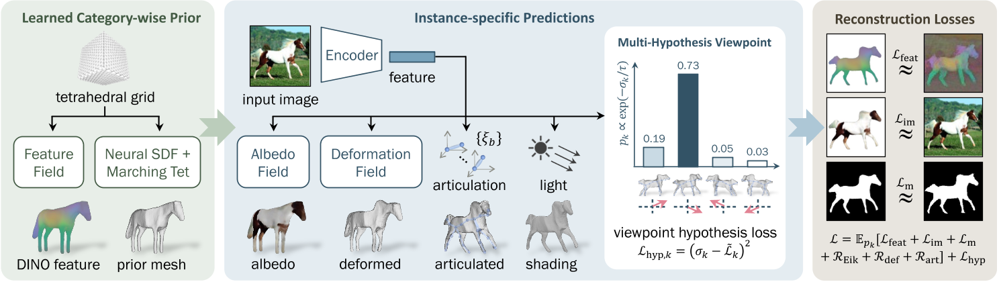
左：给定特定类别动物的单视图图像集合，我们的模型使用“隐式-显式”表示来学习特定于类别的先验形状，以及可以用于自监督特征渲染损失的特征字段。
中：根据从训练图像中提取的特征，对先前的形状进行变形、铰接和着色。
中右：为了克服视点预测中的局部最小值，我们引入了一种有效的方案，该方案可以探索多种假设，而基本上不需要额外的成本。
右：除了fix Image Encoder之外，整个管道都经过端到端的重建损失训练。
Implicit-Explicit 3D Shape Representation
隐式
目的：用于优化出一个通用的Mesh。 方法：SDF。定义隐式Mesh函数为
S = {x ∈ R3|s(x) = 0}
显式
目的：方便后面的deformation
方法：DMTet
优化过程
- 初始时，用SDF描述一个椭圆作为prior shape。
- 空间采样，使用DMTet生成prior Mesh的shape。
- 用下文的方法驱动调整和驱动prior mesh，得到deformed mesh。
- 通过deformed mesh与GT的重建Loss，优化SDF。
得到此类别所有对象共用的template。
# 代码有删减
class PriorPredictor(nn.Module):
def __init__(self, cfgs):
super().__init__()
self.netShape = DMTetGeometry(。。。)
def forward(self, total_iter=None, is_training=True):
# 得到prior template mesh
prior_shape = self.netShape.getMesh(total_iter=total_iter, jitter_grid=is_training)
return prior_shape, self.netDINO
class DMTetGeometry(torch.nn.Module):
def get_sdf(self, pts=None, total_iter=0):
if pts is None:
pts = self.verts
if self.symmetrize:
xs, ys, zs = pts.unbind(-1)
pts = torch.stack([xs.abs(), ys, zs], -1) # mirror -x to +x
sdf = self.mlp(pts)
if self.init_sdf is None:
pass
elif type(self.init_sdf) in [float, int]:
sdf = sdf + self.init_sdf
elif self.init_sdf == 'sphere':
init_radius = self.grid_scale * 0.25
init_sdf = init_radius - pts.norm(dim=-1, keepdim=True) # init sdf is a sphere centered at origin
sdf = sdf + init_sdf
elif self.init_sdf == 'ellipsoid':
rxy = self.grid_scale * 0.15
xs, ys, zs = pts.unbind(-1)
init_sdf = rxy - torch.stack([xs, ys, zs/2], -1).norm(dim=-1, keepdim=True) # init sdf is approximately an ellipsoid centered at origin
sdf = sdf + init_sdf
else:
raise NotImplementedError
return sdf
def getMesh(self, material=None, total_iter=0, jitter_grid=True):
# Run DM tet to get a base mesh，预置的一些空间中的点
v_deformed = self.verts
if jitter_grid and self.jitter_grid > 0:
jitter = (torch.rand(1, device=v_deformed.device)*2-1) * self.jitter_grid * self.grid_scale
v_deformed = v_deformed + jitter
# 计算这些点的sdf
self.current_sdf = self.get_sdf(v_deformed, total_iter=total_iter)
# 根据预置点的sdf找出0表面，并生成Mesh
verts, faces, uvs, uv_idx = self.marching_tets(v_deformed, self.current_sdf, self.indices)
self.mesh_verts = verts
return mesh.make_mesh(verts[None], faces[None], uvs[None], uv_idx[None], material)
Articulated Shape Modelling and Prediction
| 输入 | 输出 | 方法 |
|---|---|---|
| image | Image Mask | PointRend |
| image, mask | a set of key and output tokens | |
| local keys token \(\Phi_k \in R^{D\times H_p \times W_p}\)代表 deformation local outputs token \(\Phi_o \in R^{D\times H_p \times W_p}\)代表appreance | DINO-ViT，包含prepare层，ViT blocks层，final层 | |
| local keys token Φk | global keys token φk | small convolutional network |
| local output token Φo | global output token φo | small convolutional network |
| template shape \(V_{pr,i}\) global keys token φk | mesh displacement ∆Vi | CoordMLP，因为每一sdf生成的Mesh的顶点数和顶点顺序都是不确定的，因此不能使用普通的MLP 许多对象是双边对称的，因此通过镜像来强制先前的 Vpr 和 ∆V 对称 |
| \(V_{pr,i}\) ∆Vi | Vins | |
| ξ1，Vpr | bone在图像上的像素 ub | 根据ξ1把每个rest状态下的bone投影到图像上 |
| patch key feature map Φk(ub) ub | local feature | 从投影像素位置 ub 处的 Φk(ub) 中采样局部特征。 |
| image features Φk and φk bone position 3D bone position 2D | local rotation ξ2:B | The viewpoint ξ1 ∈ SE(3) is predicted separately |
| Vins 动作参数ξ a set of rest-pose joint locations Jb（启发式方法） skinning weights（relative proximity to each bone） | Vi | LBS |
def forward(self, images=None, prior_shape=None, epoch=None, total_iter=None, is_training=True):
batch_size, num_frames = images.shape[:2]
# 从图像生成a set of key and output tokens，使用一个ViTEncoder
# patch_out：local outputs token
# patch_key：local key token
# feat_out：global outputs token
# feat_key：global key token
feat_out, feat_key, patch_out, patch_key = self.forward_encoder(images) # first two dimensions are collapsed N=(B*F)
shape = prior_shape
texture = self.netTexture
# 预测root rotation，这一部分会在下文中展开
poses_raw = self.forward_pose(patch_out, patch_key)
pose_raw, pose, multi_hypothesis_aux = sample_pose_hypothesis_from_quad_predictions(poses_raw, total_iter, rot_temp_scalar=self.rot_temp_scalar, num_hypos=self.num_pose_hypos, naive_probs_iter=self.naive_probs_iter, best_pose_start_iter=self.best_pose_start_iter, random_sample=is_training)
# root rotation不体现在bone 0的rotation上，而是体现在相机的位姿上
mvp, w2c, campos = self.get_camera_extrinsics_from_pose(pose)
deformation = None
if self.enable_deform and epoch in self.deform_epochs:
# 根据feature key计算这个图像上的shape offset
# deformation：shape offset
# shape: prior shape + shape offset
shape, deformation = self.forward_deformation(shape, feat_key)
arti_params, articulation_aux = None, {}
if self.enable_articulation and epoch in self.articulation_epochs:
# 根据feature key计算关节旋转，并使用LBS得到驱动后的mesh
# 每次都会根据mesh重新计算bone position，使用启发式方法
# shape：驱动后的mesh
# arti_params：bone rotation，轴角形式
shape, arti_params, articulation_aux = self.forward_articulation(shape, feat_key, patch_key, mvp, w2c, batch_size, num_frames, epoch)
light = self.netLight if self.enable_lighting else None
aux = multi_hypothesis_aux
aux.update(articulation_aux)
# shape：根据图像生成的特定体型特定动作下的mesh
# pose_raw：root rotation
# pose：root rotation in mat
# mvp：3D->2D投影变换矩阵
# w2c：world->camera变换矩阵
# campos：camera position
# feat_out：global outputs feature，用于记录目标的外观
# deformation：shape offset
# arti_params：bone rotation in angle-axis
# aux：root rotation sample机制
return shape, pose_raw, pose, mvp, w2c, campos, texture, feat_out, deformation, arti_params, light, aux
Appearance and Shading
| 输入 | 输出 | 方法 |
|---|---|---|
| x, global output token φo | albedo | MLP |
| global output token φo | 主光源方向l 环境和漫射强度ks, kd | MLP |
| 3D coordinates Mesh V all pixels u | V中投影到u上的顶点x(u) | |
| x(u)，fa | 像素u对应的颜色 a | |
| ks, kd, l, n, 像素u对应的颜色 a | 像素u最终的颜色 | |
| ks, kd, l, n, 像素u对应的颜色 a | 像素u的MASK |
这一段代码没有看懂
Viewpoint Prediction
我们提供了一种稳健且高效的方法，该方法利用多假设预测管道中的自监督对应关系。
这一段没看懂，参考Neural Feature Fusion Fields: 3D Distillation of Self-Supervised 2D Image Representations
难点：学习对象视点的一个主要挑战是重建目标中存在多个局部最优。
解决方法：我们提出了一种统计探索多个观点的方案，但在每次迭代时仅采样一个观点，因此没有额外成本。
| 输入 | 输出 | 方法 |
|---|---|---|
| global keys token φk | 4个假设的viewpoint rotation score σk，第k个假设的可能性 | Encoder32 |
学习 σk 的简单方法是对多个假设进行采样并比较它们的重建损失以确定哪一个更好。然而，这很昂贵，因为它需要使用所有假设来渲染模型。相反，我们建议为每次训练迭代采样一个假设，并通过最小化目标来简单地训练 σk 来预测预期重建损失 Lk
# poses_raw[:,:-3]：通过self.netPose预测出的num_hypos个假设的参数
# 每个假设的参数包含4维：概率*1、角度*3
# poses_raw[:,-3:]：预测出的translation
# 根据每个假设的概率进行一些计算，得出这个迭代的rot
def sample_pose_hypothesis_from_quad_predictions(poses_raw, total_iter, rot_temp_scalar=1., num_hypos=4, naive_probs_iter=2000, best_pose_start_iter=6000, random_sample=True):
rots_pred = poses_raw[..., :num_hypos*4].view(-1, num_hypos, 4) # NxKx4
N = len(rots_pred)
rots_logits = rots_pred[..., 0] # Nx4
rots_pred = rots_pred[..., 1:4]
trans_pred = poses_raw[..., -3:]
temp = 1 / np.clip(total_iter / 1000 / rot_temp_scalar, 1., 100.)
rots_probs = torch.nn.functional.softmax(-rots_logits / temp, dim=1) # NxK
naive_probs = torch.ones(num_hypos).to(rots_logits.device)
naive_probs = naive_probs / naive_probs.sum()
naive_probs_weight = np.clip(1 - (total_iter - naive_probs_iter) / 2000, 0, 1)
rots_probs = naive_probs.view(1, num_hypos) * naive_probs_weight + rots_probs * (1 - naive_probs_weight)
best_rot_idx = torch.argmax(rots_probs, dim=1) # N
if random_sample:
rand_rot_idx = torch.randperm(N, device=poses_raw.device) % num_hypos # N
best_flag = (torch.randperm(N, device=poses_raw.device) / N < np.clip((total_iter - best_pose_start_iter)/2000, 0, 0.8)).long()
rand_flag = 1 - best_flag
rot_idx = best_rot_idx * best_flag + rand_rot_idx * (1 - best_flag)
else:
rand_flag = torch.zeros_like(best_rot_idx)
rot_idx = best_rot_idx
rot_pred = torch.gather(rots_pred, 1, rot_idx[:, None, None].expand(-1, 1, 3))[:, 0] # Nx3
pose_raw = torch.cat([rot_pred, trans_pred], -1)
rot_prob = torch.gather(rots_probs, 1, rot_idx[:, None].expand(-1, 1))[:, 0] # N
rot_logit = torch.gather(rots_logits, 1, rot_idx[:, None].expand(-1, 1))[:, 0] # N
rot_mat = lookat_forward_to_rot_matrix(rot_pred, up=[0, 1, 0])
pose = torch.cat([rot_mat.view(N, -1), pose_raw[:, 3:]], -1) # flattened to Nx12
pose_aux = {
'rot_idx': rot_idx,
'rot_prob': rot_prob,
'rot_logit': rot_logit,
'rots_probs': rots_probs,
'rand_pose_flag': rand_flag
}
return pose_raw, pose, pose_aux
训练与验证
数据集
DOVE
Weizmann Horse Database [4], PASCAL [10] and Horse-10 Dataset
Microsoft COCO Dataset
CUB
loss
| loss name | 优化目的 | 计算方法 |
|---|---|---|
| im | 图像重建 | 仅计算前景区域，L1 Loss |
| m | mask重建 | L2 Loss |
| feat | dino feature重建，dino是绑在每个mesh顶点的的属性，且dino属性只于species type有关，与特定图像无关 | 仅计算前景区域，L2 loss |
| Eik | 正则化项，约束s被学习成一个SDF函数 | Eikonal regulariser |
| def | 正则化项，约束shape offset不要太大 | L2 Loss |
| art | 正则化项，约束旋转量不要太大 | |
| hpy | 正则化项，预测每个视角的置信度 | 置信度与这个角度得到的重建loss负相关 |
# 重建loss
losses = self.compute_reconstruction_losses(image_pred, image_gt, mask_pred, mask_gt, mask_dt, mask_valid, flow_pred, flow_gt, dino_feat_im_gt, dino_feat_im_pred, background_mode=self.background_mode, reduce=False)
for name, loss in losses.items():
logit_loss_target += loss * loss_weight
# hpy正则化项
final_losses['logit_loss'] = ((rot_logit - logit_loss_target)**2.).mean()
训练策略
- 首先对视角假设进行k个采样，计算每个采样的重建损失
- 然后，将正则化项和视点假设损失相加，得到最终loss.
每次梯度评估仅采用一个视点样本 k。为了进一步提高采样效率，我们根据学习到的概率分布pk4对视点进行采样：为了提高训练效率，我们在 80% 的时间对视点 k* = argmaxk pk 进行采样，并在 20% 的时间均匀随机采样。
有效
-
广泛的实验验证：在动物类别上进行了广泛的实验，包括马、长颈鹿、斑马、奶牛和鸟类，并与先前的工作进行了定性和定量比较。
-
少监督学习：MagicPony在几乎没有关于变形拓扑的假设下，仅使用对象的2D分割掩码和3D骨架拓扑的描述进行训练，展示了在少监督情况下学习3D模型的能力。
-
泛化能力：尽管MagicPony仅在真实图像上训练，但它展示了对绘画和抽象绘画的出色泛化能力。
局限性
如果以单张照片作为输出，虽然会对目标角色先生成可驱动的3D模型，可以通过驱动3D模型再渲染得到新动作的生成图像，但是缺少3D模型的驱动数据，还需要一种方法生成适配角色的动作。
启发
先通过大量数据得到目标角色所属种类的3D范式。有了这个3D范式作为先验，就可以根据单张图像生成这个种类的3D模型。
遗留问题
参考材料
- 项目页面: https://3dmagicpony.github.io/
Splatter a Video: Video Gaussian Representation for Versatile Processing
核心问题是什么?
视频表示是一个长期存在的问题，对于跟踪、深度预测、分割、视图合成和编辑等各种下游任务至关重要。
现有方法
当前的方法要么由于缺乏 3D 结构而难以对复杂运动进行建模，要么依赖于隐式 3D 表示而难以控制。
本文方法
引入了一种新颖的显式 3D 表示——视频高斯表示 —— 它将视频嵌入到 3D 高斯中。即：使用显式高斯作为代理，对 3D 规范空间中的视频外观进行建模，并将每个高斯与视频运动的 3D 运动相关联。
这种方法提供了比分层图集或体积像素矩阵更内在和更明确的表示。
为了获得这样的表示，我们从基础模型中提取了 2D 先验，例如光流和深度，以规范这种不适定环境中的学习。
效果
在许多视频处理任务中有效，包括跟踪、一致的视频深度和特征细化、运动和外观编辑以及立体视频生成。

核心贡献是什么？
-
视频高斯表示（VGR）：这是一种新的显式3D表示方法，它将视频嵌入到3D高斯空间中。与传统的2D或2.5D技术相比，VGR提供了一种更为内在和显式的表示形式。
-
3D规范化空间：VGR在相机坐标空间中对视频进行建模，这避免了从3D到2D投影时丢失的3D信息，并且简化了动态建模的复杂性。
-
动态3D高斯：每个高斯由中心位置、旋转四元数、比例、不透明度、球谐系数等属性定义，并且与时间依赖的3D运动属性相关联，以控制视频运动。
-
2D先验知识的应用：为了解决从2D到3D映射的不适定问题，论文提出了利用从基础模型中提取的2D先验知识（如光流和深度估计）来规范学习过程。
-
多用途视频处理：VGR证明了其在多个视频处理任务中的有效性，包括跟踪、一致性视频深度和特征细化、运动和外观编辑、立体视频生成等。
-
光流和深度的蒸馏：通过将估计的光流和深度作为先验知识，论文提出了一种方法来规范学习过程，确保3D高斯的运动与实际观测到的2D运动一致。
-
3D运动的规范：除了深度和光流的蒸馏，还采用了局部刚性规范来防止高斯通过非刚性运动过度拟合渲染目标。
-
优化方法：论文详细介绍了如何通过结合颜色渲染损失、掩码损失以及可选的掩码损失来进行优化，以及如何通过自适应密度控制来初始化和调整高斯的密度。
大致方法是什么？

给定一个视频，在相机坐标空间中使用视频高斯表示其复杂的 3D 内容。并通过将它们与运动参数相关联，使视频高斯能够捕获视频动态。这些视频高斯由 RGB 图像帧和 2D 先验（例如光流、深度和标签掩模）进行监督。这种表示方式可以方便用户对视频执行各种编辑任务。
Video Gaussian Representation
相机坐标空间
使用相机坐标系（而不是世界坐标系）来建模视频的 3D 结构。因为使用相机坐标系可以避免估计相机姿态和相机运动，而是让相机运动与物体运动耦合。
相机坐标系下，视频的宽度、高度和深度分别对应于 X、Y 和 Zax。
视频高斯函数
视频序列为 V = {I1, I2, ..., In}
对应的高斯表示为 G ={G1, G2, ..., Gm}，同时表示视频的外观和运动动态。
每个高斯 G 表示包含：
- 基本外观属性： 位置 μ、旋转四元数 q、尺度 s、外观球谐 (SH) 系数 sh 和不透明度 α 。
- 来自 2D 基础模型的：动态属性 p、分割标签 m 和图像特征 f
渲染：将其表示为 R(μ, q, s, α, x)，其中 x 表示要渲染的特定属性。渲染函数 R 遵循与原始高斯 Splatting 方法 [16] 中的颜色渲染相同的过程。
高斯动力学
当对运动进行参数化时，需要在“结合符合运动先验”和“更准确实拟合”之间进行权衡[43]。
本文使用一组灵活的混合基，包括多项式 [22] 和傅立叶级数 [1] 来建模平滑的 3D 轨迹。具体来说，我们为每个高斯分配可学习的多项式\(p_p^n\)和傅里叶系数\(p^l_\sin, p^l_cos\)，这里，n和l表示系数的阶数。那么分别使用多项式基和傅里叶基以各自的系数线性组合，就可以得到高斯球在时间 t 的位置。
多项式基在对运动轨迹的整体趋势和局部非周期性变化进行建模方面非常有效，并且广泛用于曲线表示。
傅立叶基 {cos(lt), sin(lt)} 提供曲线的频域参数化，使其适合拟合平滑运动 [1]，并且擅长捕获周期性运动分量。
这两个基的结合利用了两者的优势，提供全面的建模、增强的灵活性和准确性、减少过度拟合以及对噪声的鲁棒性。这使高斯具有通过调整相应的可学习系数来适应各种类型轨迹的适应性。
视频处理应用
-
Dense Tracking：监督高斯球在2D投影上的运动
-
一致的深度/特征预测：
-
几何编辑
-
Appearance Editing
-
Frame Interpolation
-
Novel View Synthesis
-
Stereoscopic Video Creation
训练与验证
实验验证：通过在DAVIS数据集以及Omnimotion和CoDeF使用的视频上进行实验，论文展示了其方法在视频重建质量和下游视频处理任务方面的性能。
loss
| loss name | 优化目的 | 方法 |
|---|---|---|
| flow | 正则化项，约束个体高斯的运动 | 从 RAFT [42] 获得的光流估计，将帧 t1 和 t2 之间的高斯运动 (μ(t2) −μ(t1)) 投影到 2D 图像平面上，并使用估计的光流对其进行正则化 |
| depth | 正则化项，约束个体高斯的z方向运动 | 从 Marigold [15] 获得的估计深度来监督视频高斯 |
| arap | 正则化项，鼓励个体高斯的 3D 运动尽可能局部刚性 [40]。 | |
| render | 图像重建 | L1 Loss |
| label | Mask重建 | L2 Loss |
数据集
loss
训练策略
有效
局限性
局限性和未来工作：尽管取得了令人满意的性能，但论文也指出了方法的一些局限性，例如对场景变化的敏感性以及对现有对应估计方法的依赖性，并提出了可能的改进方向。
启发
遗留问题
参考材料
- 项目页面：https://sunyangtian.github.io/spatter_a_video_web/
- code（没有开开源）：https://github.com/SunYangtian/Splatter_A_Video
数据集：Dynamic Furry Animal Dataset
cat
├── img
│ └── run - Motion name.
│ └── %d - The frame number, start from 0.
│ └──img_%04d.jpg - RGB images for each view. view number start from 0.
│ └──img_%04d_alpha.png - Alpha mattes for corresponding RGB image.
│ └── ...
│
├── volumes
│ └── coords_init.pth - voxel coordinates represent an animal in rest pose.
│ └── volume_indices.pth - The indices of bones to which the voxels are bound.
| └── volume_weights.pth - The skinning weights of the voxels.
| └── radius.txt - The radius of the volume.
|
├── bones
│ └── run - Motion name.
│ └── Bones_%04d.inf - The skeletal pose for each frame, start from 0. In each row, the 3x4 [R T] matrix is displayed in columns, with the third column followed by columns 1, 2, and 4.
│ └── ...
| └── bones_parents.npy - The parent bone index of each bone.
| └── Bones_0000.inf - The rest pose.
|
├── CamPose.inf - Camera extrinsics. In each row, the 3x4 [R T] matrix is displayed in columns, with the third column followed by columns 1, 2, and 4, where R*X^{camera}+T=X^{world}.
│
└── Intrinsic.inf - Camera intrinsics. The format of each intrinsics is: "idx \n fx 0 cx \n 0 fy cy \n 0 0 1 \n \n" (idx starts from 0)
│
└── sequences - Motion sequences. The format of each motion is: "motion_name frames\n"
原始数据
艺术家建模了九种高质量的 CGI 动物，包括熊猫、狮子、猫等。
它们具有基于纤维/线的毛皮和骨骼。
数据集没有找到原始的CGI mesh和skinning
合成数据
使用商业渲染引擎（例如 MAYA）将所有这些 CGI 动物角色渲染成各种代表性骨骼运动下的高质量多视图 1080 × 1080 RGBA 视频。具体来说，我们采用了 36 个摄像机视图，这些摄像机视图均匀地围绕捕获的动物排列成一个圆圈，每个动物的代表性姿势数量从 700 到 1000 个不等。
人工标注
生成标注
- 基于Artemis论文方法生成体素以及体素的skinning weight
- 动作数据
Reference
- 论文：https://caterpillarstudygroup.github.io/ReadPapers/32.html
- 数据集下载地址：https://shanghaitecheducn-my.sharepoint.com/:f:/g/personal/luohm_shanghaitech_edu_cn/Et60lJpJdp5DoyQF7uzP6jgB_JEW4LIHixAyXEiVhHT3Vw?e=d09jtz
- github：https://github.com/HaiminLuo/Artemis
Artemis: Articulated Neural Pets with Appearance and Motion Synthesis
核心问题是什么?
要解决的问题
计算机生成 (CGI) 毛茸茸的动物受到繁琐的离线渲染的限制，更不用说交互式运动控制了。
现有方法
本文方法
我们提出了 ARTEMIS，一种新颖的神经建模和渲染管道。
ARTEMIS 通过 AppEarance 和 Motion SynthesIS 生成 ARTiculated 神经宠物，并宠物进行交互式的动作控制，实时动画和毛茸茸动物的真实感渲染。
ARTEMIS 的核心是基于神经网络的生成式（NGI）动物引擎：
- 采用基于八叉树的高效表示来进行动物动画和毛皮渲染。这样，动画就相当于基于显式骨骼扭曲的体素级变形。
- 使用快速八叉树索引和高效的体积渲染方案来生成外观和密度特征图。
- 提出了一种新颖的着色网络，可以根据外观和密度特征图生成新颖姿势下的外观和不透明度的高保真细节。
- 使用动物运动捕捉方法，来重建由多视图 RGB 和 Vicon 相机阵列捕获的真实动物的骨骼运动。
- 将所有捕获的运动输入神经角色控制方案中，以生成具有运动风格的抽象控制信号。
- 将ARTEMIS集成到支持VR耳机的现有引擎中，提供前所未有的沉浸式体验，用户可以通过生动的动作和逼真的外观与各种虚拟动物亲密互动。
效果
- 实时
- NGI 动物的高度逼真渲染方面
- 提供了与数字动物前所未见的日常沉浸式互动体验。
核心贡献是什么？
-
神经体积表示法（Neural Volume Representation）：Artemis使用神经体积来表示动物，这种方法可以实时渲染动物的外观和毛发。
-
动态场景建模（Dynamic Scene Modeling）：与传统的基于骨架和皮肤蒙皮技术不同，Artemis采用神经网络生成图像（NGI）来动态模拟动物的外观和运动。
-
运动合成（Motion Synthesis）：系统利用局部运动相位（Local Motion Phase, LMP）技术，根据用户的控制信号生成动物的骨架运动。
-
多视角动作捕捉（Multi-view Motion Capture）：论文中提出了一种结合多视角RGB摄像头和Vicon摄像头的动作捕捉方法，用于捕捉真实动物的运动。
-
优化方案（Optimization Scheme）：为了从捕捉到的动作中重建动物的骨架运动，研究者提出了有效的优化方案。
-
虚拟现实集成（VR Integration）：Artemis被集成到支持VR头显的现有引擎中，为用户提供了与虚拟动物亲密互动的沉浸式体验。
-
交互式控制（Interactive Control）：用户可以通过简单的控制信号，如指向目的地，来引导虚拟动物移动，实现自然的运动控制。
-
数据集和资源分享（Dataset and Resource Sharing）：论文中提到了动态毛发动物数据集（Dynamic Furry Animal Dataset），并承诺将这些资源分享给研究社区，以促进未来关于逼真动物建模的研究。
大致方法是什么？

ARTEMIS 由两个核心组件组成。
在第一个模块中，给定 CGI 动物资产的骨骼和蒙皮权重以及代表性姿势中相应的多视角渲染 RGBA 图像，构建基于动态八叉树的神经表示，以实现动态动物的显式骨骼动画和实时渲染，支持实时交互应用；
在第二个模块中，我们构建了一个具有多视角 RGB 和 VICON 相机的混合动物运动捕捉系统，以重建逼真的 3D 骨骼姿势，该系统支持训练神经运动合成网络，使用户能够交互式地引导神经动物的运动。
ARTEMIS系统进一步集成到现有的消费级VR耳机平台中，为神经生成的动物提供身临其境的VR体验。
Preliminary
神经不透明辐射场
NeRF 用沿着光线的每个点的颜色和密度来表示场景，其中密度自然地反映了该点的不透明度。
优点：可真实地表现毛发渲染。
缺点：NeRF 生成的 alpha 有噪音且连续性较差。
ConvNeRF [Luo et al. 2021]
在特征空间中处理图像而不是直接在 RGB 颜色中处理图像。
优点：解决噪声和不连续性问题。
缺点：只能处理静态物体。
Animatable Neural Volumes
目的：借助PlenOctree的想法，将神经不透明辐射场扩展到动态动物，且实现实时渲染。
要解决的问题：
- 将不透明度特征存储在体积八叉树结构中，使得可以快速获取渲染特征。
- 基于骨架的体积变形（类似于原始 CGI 模型的蒙皮权重），将规范帧与动画的实时帧连接起来。
- 设计一个神经着色网络来处理动画对象建模，并采用有效的对抗训练方案来优化模型
八叉树特征索引
由于是针对特定的CGI动物模型，其Mesh是已知的。
- 我们首先将 CGI 动物角色（例如老虎或狮子）转换为基于八叉树的表示。
遇到的问题：原始 CGI 模型包含非常详细的毛发，
- 如果直接转换为离散体素，可能会导致后续神经建模中出现强烈的混叠和严重错误。
- 如果去除毛皮并仅使用裸模型，则体素表示将与实际的显着偏差。
解决方法：用“dilated”体素表示。
- 初始化一个统一的体积
- 以一组密集视角的渲染的 alpha matte 作为输入，利用dilated mask构造八叉树。
生成的八叉树包含体素构成的array。
- 基于这种体积表示，在每个体素处存储依赖于视图的特征𝑓。
分配一个称为特征查找表 (FLUT) 的数组 F 来存储特征和密度值，如原始 PlenOctree 中一样。
对于体绘制过程中空间中给定的查询点，我们可以在常数时间内索引到 FLUT 中，查出该点的特征和密度。
类似于 PlenOctree，将不透明度特征𝑓建模为一组SH（球面谐波）系数。
$$ S(f,d) = \sum_{h=1}^H k_h^i Y_h(d) $$
k为SH系数，Y为SH基。f为一组SH系数，d为视角。
绑定与形变
对用八叉树描述的体素进行绑定（放置目标骨架S）和蒙皮（定义体素与骨骼的带动关系）。[Huang et al. 2020]
绑定：复用CGI的骨骼
蒙皮：使用 CGI 模型提供的蒙皮网格将蒙皮权重应用于体素。即，通过混合最接近的顶点的权重生成每体素蒙皮权重。
驱动：LBS
def generate_transformation_matrices(matrices, skinning_weights, joint_index):
return svox_t.blend_transformation_matrix(matrices, skinning_weights, joint_index)
动态体积渲染

- 使用LBS驱动Oct Tree
- 通过ray marching得到每个点的特征
- 把特征组合成Feature F
class TreeRenderer(nn.Module):
def forward(self, tree, rays, transformation_matrices=None, fast_rendering=False):
t = tree.to(rays.device)
r = svox_t.VolumeRenderer(t, background_brightness=self.background_brightness, step_size=self.step_size)
dirs = rays[..., :3].contiguous()
origins = rays[..., 3:].contiguous()
sh_rays = Sh_Rays(origins, dirs, dirs)
# 通过将方程 3.1 应用于每个像素来生成视角相关的特征图 F，并通过沿光线累积来生成粗略的不透明度图 A
res = r(self.features, sh_rays, transformation_matrices=transformation_matrices, fast=fast_rendering)
return res
Neural Shading
输入：视点处的体积光栅化为神经外观特征图 F 和不透明度 A。
输出：将光栅化体积转换为具有类似经典着色器的相应不透明度贴图的彩色图像。
- 要解决的问题：
为了保留毛发的高频细节，必须考虑最终渲染图像中的空间内容。但NeRF 和 PlenOctree 都没有考虑空间相关性，因为所有像素都是独立渲染的。 - 解决方法：
在 采用额外的 U-Net 架构进行图像渲染(借鉴ConvNeRF)。
优点：基于ray marching的采样策略可以实现全图像渲染。
class UNet(nn.Module):
def forward(self, rgb_feature, alpha_feature):
# 神经着色网络U-Net包含两个encoder-decoder分支，分别用于 RGB 和 alpha 通道。
# RGB 分支将 F 转换为具有丰富毛发细节的纹理图像 I𝑓。
x1 = self.inc(rgb_feature)
x2 = self.down1(x1)
x3 = self.down2(x2)
x4 = self.down3(x3)
x5 = self.down4(x4)
x6 = self.up1(x5, x4)
x6 = self.up2(x6, x3)
x6 = self.up3(x6, x2)
x6 = self.up4(x6, x1)
x_rgb = self.outc(x6)
# alpha 分支细化粗略不透明度图 A 和 I𝑓 以形成超分辨率不透明度图 A。该过程通过显式利用 A 中编码的隐式几何信息来强制多视角一致性。
x = torch.cat([alpha_feature, x_rgb], dim=1)
x1_2 = self.inc2(x)
x2_2 = self.down5(x1_2)
x3_2 = self.down6(x2_2)
x6 = self.up5(x3_2, torch.cat([x2, x2_2], dim=1))
x6 = self.up6(x6, torch.cat([x1, x1_2], dim=1))
x_alpha = self.outc2(x6)
x = torch.cat([x_rgb, x_alpha], dim=1)
return x
完整代码流程
"""
model：Nerf模型
K, T：相机参数
tree：Octree
matrices：动作参数
joint_features: B * T * dim，包含skeleton_init, pose_init, pose等信息
bg: backgroud
"""
def render_image(cfg, model, K, T, img_size=(450, 800), tree=None, matrices=None, joint_features=None,
bg=None, skinning_weights=None, joint_index=None):
torch.cuda.synchronize()
s = time.time()
h, w = img_size[0], img_size[1]
# Sample rays from views (and images) with/without masks
rays, _, _ = ray_sampling(K.unsqueeze(0).cuda(), T.unsqueeze(0).cuda(), img_size)
with torch.no_grad():
joint_features = None if not cfg.MODEL.USE_MOTION else joint_features
# 计算skinning matrix
matrices = generate_transformation_matrices(matrices=matrices, skinning_weights=skinning_weights,
joint_index=joint_index)
with torch.cuda.amp.autocast(enabled=False):
# 1. 使用LBS驱动Oct Tree
# 2. 通过ray marching得到每个点的特征
# 3. 把特征组合成Feature F
features = model.tree_renderer(tree, rays, matrices).reshape(1, h, w, -1).permute(0, 3, 1, 2)
# 这一步没注意到论文的相关内容
if cfg.MODEL.USE_MOTION:
motion_feature = model.tree_renderer.motion_feature_render(tree, joint_features, skinning_weights,
joint_index,
rays)
motion_feature = motion_feature.reshape(1, h, w, -1).permute(0, 3, 1, 2)
else:
motion_feature = features[:, :9, ...]
with torch.cuda.amp.autocast(enabled=True):
features_in = features[:, :-1, ...]
if cfg.MODEL.USE_MOTION:
features_in = torch.cat([features[:, :-1, ...], motion_feature], dim=1)
# 输入：视点处的体积光栅化为神经外观特征图 F 和不透明度 A。
# 输出：rgb, alpha。
rgba_out = model.render_net(features_in, features[:, -1:, ...])
rgba_volume = torch.cat([features[:, :3, ...], features[:, -1:, ...]], dim=1)
rgb = rgba_out[0, :-1, ...]
alpha = rgba_out[0, -1:, ...]
img_volume = rgba_volume[0, :3, ...].permute(1, 2, 0)
# 把预测出的rgb和alpha归一化到[0,1]区间
if model.use_render_net:
rgb = torch.nn.Hardtanh()(rgb)
rgb = (rgb + 1) / 2
alpha = torch.nn.Hardtanh()(alpha)
alpha = (alpha + 1) / 2
alpha = torch.clamp(alpha, min=0, max=1.)
# 与背影融合
if bg is not None:
if bg.max() > 1:
bg = bg / 255
comp_img = rgb * alpha + (1 - alpha) * bg
else:
comp_img = rgb * alpha + (1 - alpha)
img_unet = comp_img.permute(1, 2, 0).float().cpu().numpy()
return img_unet, alpha.squeeze().float().detach().cpu().numpy(), img_volume.float().detach().cpu().numpy()
基于神经网络的动物运动合成
动物动作捕捉
动作捕捉：尽管不同物种的四足动物具有相似的骨骼结构，但其形状和尺度却截然不同。**捕获适合所有类型四足动物的动作捕捉数据集是根本不可能的。**因此，先学习温顺的小型宠物的运动先验，并将先验转移到老虎和狼等大型动物身上。对于后者，使用多视图 RGB 球顶进一步提高了预测精度。
动物姿势估计：采用参数化 SMAL 动物姿势模型。从观察到的 2D 关节和轮廓中恢复 SMAL 参数 𝜃、𝜙、𝛾。
Motion Synthesis
训练与验证
优化对象：feature array, 参数G
优化目标：各视角下的外观
数据集
动态毛茸茸动物（DFA）数据集：
- 来自艺术家的建模。
- 含九种高质量的 CGI 动物，包括熊猫、狮子、猫等。
- 它们具有基于纤维/线的毛皮和骨骼
- 使用商业渲染引擎（例如 MAYA）将所有这些 CGI 动物角色渲染成各种代表性骨骼运动下的高质量多视图 1080 × 1080 RGBA 视频。具体来说，我们采用了 36 个摄像机视图，这些摄像机视图均匀地围绕捕获的动物排列成一个圆圈，每个动物的代表性姿势数量从 700 到 1000 个不等。
loss
| loss | content |
|---|---|
| 𝑟𝑔𝑏𝑎 在自由视角下恢复毛茸茸动物的外观和不透明度值 | 渲染图像与原始图像的L1 Loss，渲染alpha与真实alpha的L1 Loss |
| P 鼓励交叉视图一致性并保持时间一致性 | 渲染图像的VGG l层feature map与真实图像的VGG l层feature map |
| A 鼓励跨视图一致性 | 几何特征的L1 Loss |
| VRT 体素正则化项（VRT），强制deform后落在同一网格上的特征应具有相同的值，避免体素上的特征冲突 | |
| GAN 进一步提高皮毛高频外观的视觉质量 |
训练策略
有效
- 实时渲染（Real-time Rendering）：Artemis能够实现对动物模型的实时、逼真渲染，这对于虚拟现实（VR）等交互式应用至关重要。
- 系统性能和应用（System Performance and Applications）：Artemis在多视角、多环境条件下均展现出高效和实用的性能，论文还讨论了其在动物数字化和保护、VR/AR、游戏和娱乐等领域的潜在应用。
局限性
- 对预定义骨架的依赖
- 未观察到的动物身体区域的外观伪影问题
- 在新环境中对光线变化的适应性问题
启发
利用CGI渲染生成高精的GT和完美匹配的动作数据。
遗留问题
参考材料
- ARTEMIS 模型和动态毛茸茸动物数据集 https://haiminluo.github.io/publication/artemis/
SMPLer: Taming Transformers for Monocular 3D Human Shape and Pose Estimation
核心问题是什么?
目的
单目 3D 人体形状和姿势估计
现有方法及存在的问题
现有的的 Transformer 通常具有O(l^2)的计算和存储复杂度，l为特征长度。
这阻碍了对高分辨率特征中细粒度信息的利用，但高分辨率特征对于精确重建很重要。
本文方法
我们提出了一个基于 SMPL 的 Transformer 框架（SMPLer）来解决这个问题。 SMPLer 包含两个关键要素：解耦的注意力操作和基于 SMPL 的目标表示，这允许有效利用 Transformer 中的高分辨率特征。
此外，基于这两种设计，我们还引入了几个新颖的模块，包括多尺度注意力和联合感知注意力，以进一步提高重建性能。
效果
大量实验在定量和定性方面证明了 SMPLer 对现有 3D 人体形状和姿势估计方法的有效性。值得注意的是，所提出的算法在 Human3.6M 数据集上实现了 45.2 mm 的 MPJPE，比 Mesh Graphomer 提高了 10% 以上，参数减少了不到三分之一。代码和预训练模型可在 https://github.com/xuxy09/SMPLer 获取。
核心贡献是什么？
-
解耦注意力机制（Decoupled Attention）：为了解决传统Transformer在处理高分辨率特征时面临的二次计算和内存复杂度问题，论文提出了一种解耦的注意力操作，将完整的注意力操作分解为目标-特征注意力和目标-目标注意力，从而降低了计算和内存复杂度。
-
基于SMPL的目标表示（SMPL-based Target Representation）：论文引入了基于SMPL（Skinned Multi-Person Linear model）的参数化人体模型作为目标表示，这大大减少了目标嵌入的长度，降低了计算和内存成本，同时保证了生成的3D人体网格的平滑性和一致性。
-
多尺度注意力（Multi-scale Attention）：通过结合不同分辨率的特征图，并为每个尺度分配不同的投影权重，论文提出的多尺度注意力机制能够更有效地利用多尺度信息进行3D人体姿态和形状估计。
-
关节感知注意力（Joint-aware Attention）：利用基于SMPL的目标表示，论文设计了一种关节感知的注意力模块，该模块专注于人体关节周围的局部特征，以更好地推断3D人体的姿态。
-
分层架构（Hierarchical Architecture）：为了解决关节感知注意力依赖于2D关节估计的问题，论文提出了一种分层架构，通过多个Transformer块逐步细化2D关节估计和3D重建结果。
-
实验验证：论文通过大量实验验证了SMPLer相对于现有3D人体姿态和形状估计方法的有效性，特别是在Human3.6M数据集上，与Mesh Graphormer相比，参数数量减少到原来的三分之一，而MPJPE（Mean Per Joint Position Error）降低了10%以上。
-
实时推理速度：SMPLer在保持高效率的同时，能够实现实时的推理速度，这对于实际应用如虚拟现实和增强现实等场景非常重要。
-
虚拟角色控制：由于SMPLer能够直接输出3D旋转，因此它可以方便地用于控制虚拟角色，这一点在元宇宙等应用中具有潜在价值。
-
代码和预训练模型的可用性：论文提供了代码和预训练模型，这为研究人员和开发者进一步研究和应用该框架提供了便利。
大致方法是什么？
训练与验证
数据集
loss
训练策略
有效
缺陷
启发
遗留问题
参考材料
CAT3D: Create Anything in 3D with Multi-View Diffusion Models
核心问题是什么?
目的
3D 重建技术，通过图像重建3D场景。
现有方法
现有方法需要用户收集数百到数千张图像来创建 3D 场景。
本文方法
我们提出了 CAT3D，这是一种通过使用多视图扩散模型模拟现实世界捕获过程来创建 3D 任何东西的方法。给定任意数量的输入图像和一组目标新视角，我们的模型会生成高度一致的场景新视角。这些生成的视图可用作稳健 3D 重建技术的输入，以生成可从任何视点实时渲染的 3D 表示。
效果
CAT3D 可以在短短一分钟内创建整个 3D 场景，并且优于单图像和少视图 3D 场景创建的现有方法。请参阅我们的项目页面以获取结果和交互式演示：cat3d.github.io。
核心贡献是什么？
-
多视图扩散模型：CAT3D使用多视图扩散模型来生成与输入图像数量无关的一致性新视图。这种模型可以接受任意数量的输入视图，并生成一组新颖的、与目标新视点一致的3D视图。
-
3D场景创建的高效性：CAT3D能够在短短一分钟内创建完整的3D场景，并且在单图像和少视图3D场景创建方面超越了现有方法。
-
高质量的3D重建：通过将生成的视图输入到强大的3D重建技术中，CAT3D能够产生可以在任何视点实时渲染的3D表示。
-
从文本到3D的转换：CAT3D展示了如何使用预训练的文本到图像模型作为生成3D内容的强有力先验，通过文本提示生成输入图像，然后创建3D场景。
-
改进的3D重建流程：CAT3D通过修改标准的NeRF训练过程来提高对不一致输入视图的鲁棒性，包括使用感知损失（如LPIPS）来强调渲染图像和输入图像之间的高级语义相似性。
-
自适应的相机轨迹设计：为了充分捕捉3D场景，CAT3D探索了基于场景特征的四种类型的相机路径，包括不同规模和高度的轨道路径、不同规模和偏移的正面圆周路径、不同偏移的样条路径，以及沿着圆柱形路径进出场景的螺旋轨迹。
-
高效的并行采样策略：CAT3D采用了高效的并行采样策略，通过多视图扩散模型生成大量一致的新视图，这些视图随后被用于3D重建管道。
-
实验验证：CAT3D在多个数据集上进行了训练和评估，包括Objaverse、CO3D、RealEstate10k和MVImgNet，并在几个真实世界的基准数据集上进行了评估，证明了其在不同设置下的性能。
-
未来工作的方向：论文讨论了CAT3D的局限性，并提出了未来工作的方向，如使用预训练的视频扩散模型初始化多视图扩散模型，扩展模型处理的视图数量，以及自动确定不同场景所需的相机轨迹。
大致方法是什么？

CAT3D 有两个阶段：(1) 从多视角latent diffusion model生成大量合成视图，该模型以输入视图和目标视图的相机姿态为条件； (2) 在观察到的和生成的视图上运行强大的 3D 重建管道以学习 NeRF 表示。
Multi-View Diffusion Model
输入：当前视角的图像及相机参数，目标视角的相机参数
输出：目标视角的图像

VAE
图像（512 × 512 × 3，图上应该是写错了） --E-- latent code --D-- 图像（64 × 64 × 8）
video LDM
video LDM根据给定条件估计图像的latent code的联合分布。
条件为相机的raymap。
video LDM 以LDM为2D diffusion model backbone，并在此基础上做了以下修改：
- 使用了LDM的预训练模型，并用新的数据finetune
- 去掉文本condition，并增加camera raymap及mask condition
- 在每个 2D 残差块之后将 2D 自注意力膨胀为 3D 自注意力 [43]，以支持时序特征。我们发现通过 3D 自注意力层对输入视图进行调节消除了对 PixelNeRF 的需求 [63]
- condition中包含mask信息，mask用于指示这个角度的图像是已知图像（条件图像）还是未知图像（目标图像）。在训练过程中，条件图像和目标图像会以不同的方式处理。
Generating Novel Views
输入：给定一组视图
输出：生成大量一致的视图以完全覆盖场景并实现准确的 3D 重建
要解决的问题：
- 决定要采样的相机姿势集
- 设计一种采样策略，该策略可以使用在少量视图上训练的多视图扩散模型来生成更大的一致视图集。
相机轨迹
3D 场景重建的挑战在于完全覆盖场景所需的视图可能很复杂，并且取决于场景内容。
我们根据场景的特征探索了四种类型的相机路径：
- （1）围绕中心场景的不同尺度和高度的轨道路径，
- （2）不同尺度和偏移的前向圆形路径，
- （3）样条线不同偏移的路径，
- (4) 沿着圆柱形路径的螺旋轨迹，移入和移出场景。
3D重建
多视图扩散模型生成的视图通常不完全 3D 一致。我们以 Zip-NeRF [71] 为基础，修改了标准 NeRF 训练程序，以提高其对不一致输入视图的鲁棒性。
训练与验证
Multi-View Diffusion Model
我们使用 FlashAttention [65 , 66 ] 进行快速训练和采样，并对潜在扩散模型的所有权重进行微调。
我们发现当我们从预先训练的图像扩散模型转向捕获更高维度数据的多视图扩散模型时，将noise schedule转向高噪声水平非常重要。
具体来说，我们将log信噪比移动log(N)，其中N是目标图像的数量。对于训练，目标图像的latent受到噪声扰动，而条件图像的latent不被哭声污染，并且仅在目标图像上定义扩散损失。
用mask来标示图像是目标图像还是条件图像。为了处理多个 3D 生成设置，我们训练一个通用模型，该模型可以建模总共 8 个条件视图和目标视图 (N + M = 8)，并在训练期间随机选择条件视图的数量 N 为 1 或 3，对应分别为 7 个和 5 个目标视图。
3D重建
Zip-NeRF Loss:
- 光度重建损失、
- 畸变损失、
- 层间损失
- 归一化 L2 权重正则化器
本文增加的损失：
LPIPS：渲染图像和输入图像之间的感知损失（LPIPS [72]）。
与光度重建损失相比，LPIPS 强调渲染图像和观察图像之间的高级语义相似性，而忽略低级高频细节中潜在的不一致。
由于生成的视图已经接近观察到的视图，但具有较小的语义不一致，因此使用LPIPS可以衡量这种不一致。
我们根据到最近的观察到的视图的距离对生成的视图的损失进行加权。这种权重在训练开始时是统一的，并逐渐退火为权重函数，该权重函数对更接近观察到的视图之一的视图的重建损失进行更强烈的惩罚。
有效
缺陷
启发
遗留问题
参考材料
PACER+: On-Demand Pedestrian Animation Controller in Driving Scenarios
核心问题是什么?
要解决的问题
在驾驶场景中生成多样化和自然的行人动画。
当前方法及问题
现有行人动画框架的局限性，这些框架通常只关注遵循轨迹或参考视频的内容，而忽略了人类运动的潜在多样性。
本文方法及效果
PACER+通过结合运动跟踪任务和轨迹跟踪，实现了对特定身体部位（例如上半身）的跟踪，同时通过单一策略跟随给定的轨迹。这种方法显著提高了模拟人类运动的多样性和控制内容的能力，包括基于语言的控制。
核心贡献是什么？
-
PACER+框架：一个基于物理的行人动画框架，可以控制模拟的行人同时跟随2D轨迹和特定身体部位的参考运动。
-
多样化的运动生成：PACER+支持从多种来源生成多样化的行人行为，包括生成模型、预先捕获的动作和视频。
-
零样本重建：PACER+能够零样本重现真实世界的行人动画到模拟环境中，自动填充缺失的部分。
-
运动跟踪与轨迹跟踪的协同：通过联合训练方案，PACER+建立了运动模仿和轨迹跟踪任务之间的协同关系，使用单个策略以物理合理的方式同时跟踪部分身体运动和轨迹。
-
空间-时间掩码：引入了每个关节的空间-时间掩码，指示策略需要跟踪的参考运动的存在。
大致方法是什么？
(1) 地形轨迹跟踪，决定了模拟行人在复杂环境中的所需路径；(2) 运动内容控制，指定行人所表现出的所需动作和手势（例如，打电话或挥手）手），同时遵守提供的轨迹和地形。
PACER+ 框架遵循具有对抗性运动先验的目标条件强化学习。为了实现对特定身体部位的细粒度控制，作者在运动跟踪任务中引入了一个额外的时空掩码。该掩码指示策略应跟踪reference motion。通过专注于此跟踪任务，PACER+框架能够以零样本的方式演示特定时间步骤和位置的不同行人行为。
RL 的关键要素
$$ M = \lbrace S, A, T, R, \gamma \rbrace $$
| 元素 | 内容 | 来源 |
|---|---|---|
| Stage S | humanoid proprioception [30] \(s^p_t\) goal state \(s^g_t\) ---- 轨迹跟踪的目标 \(s^{traj}_t\) ---- 运动跟踪的目标 \(s^{motion}_t\) | PD控制 |
| Action A | policy network | |
| 转移 T | PD控制 | |
| reward R | 与给定的轨迹和运动跟踪任务相关 | |
| discount factor \(\gamma\) |
地形上的轨迹跟踪
状态 S
在轨迹跟随任务中，人形机器人有一个局部高度图G和要跟随的轨迹P。P为接下来一段时间的轨迹采样序列。
$$ s^{traj}_t \triangleq (P_t^{traj}， G_t) $$
[?]G为什么和时间有关？地形会变吗？
Reward R
t 时序轨迹 期望轨迹 p 与模拟角色根节点位置之间的 xy 距离，公式为
$$ d = \parallel\hat p_t^{xy} - r_t^{xy}\parallel\ r^{traj}_t = e^{-2d} $$
提前终止机制
如果在时间步 t 时距离d大于阈值 τ （0.5米），将终止轨迹跟踪任务。
运动跟踪
状态 S
t+1时刻的运动跟踪目标包含：
- t+1时刻的运动状态：关节位置、关节旋转、关节速度和旋转速度。不管特定帧特定关节是否需要跟踪，都将其设置为与模拟角色状态相同的值。
- 时空掩码：希望policy netword只在给定时间范围内跟踪特定运动部分，同时遵循轨迹，引入时空掩码。定义时空掩码为 M1 = T * J，表示在时间步 t 是否需要运动跟踪关节 j。1为跟踪，0为不跟踪。
Reward R
类似于带mask的重建loss
对抗运动先验（AMP）
AMP 采用运动discriminator来鼓励策略生成与dataset中观察到的运动模式一致的运动。
- 使用大约 200 个序列的较小数据集训练 AMP。AMP 使用discriminator来计算style reward，并将其添加到task reward中。Good：确保了生成运动的自然性。Bad：但它限制了运动跟踪任务中看不见的运动的泛化。
- 为了解决工作1引入的问题，将补充运动序列作为运动跟踪中的motion reference。Good：可以引入了不同的运动内容，并且有可能增强跟踪性能。Bad：然而，使用额外的数据集训练运动跟踪任务对联合学习 AMP 和较小的数据集提出了挑战，
- 为了解决工作2引入的问题，在训练期间采用了提前终止机制。
System Overview
训练过程
policy network通过轨迹跟踪和运动跟踪任务的组合方法进行训练。
- 第一阶段，轨迹跟踪和动作跟踪两项任务联合训练。在此步骤中，在每个时间步随机生成reference motion（随机采样自AMASS）的二进制掩码，并将提前终止应用于运动跟踪任务。
- 第二阶段，使用随机生成的合成轨迹来训练轨迹跟踪任务 。在此阶段，时空掩模内的所有关节都被分配值 0。
使用场景1：
输入轨迹，输出3D motion
从其它来源中获取reference motion，将reference motion与输入的轨迹对齐，然后设置掩码生成运动。
使用场景2：真实场景
输入视频，输出3D motion。
根据2D keypoints的置信度来打mask。
有效
缺陷
验证
启发
遗留问题
参考材料
Humans in 4D: Reconstructing and Tracking Humans with Transformers
核心问题是什么?
我们提出了一种重建人类并随着时间的推移追踪他们的方法。
Human Mesh Recovery：我们提出了一个用于人类mesh reconvery的完全“transformer”的网络版本。该网络 HMR 2.0 可以从单个图像中进行人体重建。
Human Tracking：以 HMR 2.0 的 3D 重建作为以 3D 运行的跟踪系统的输入，使得我们可能在多人场景及遮挡场景中保持身份。
核心贡献是什么？
-
HMR 2.0：这是一个完全基于Transformer的架构，用于从单张图像中恢复人体网格。它不依赖于特定领域的设计，但在3D人体姿态重建方面超越了现有方法。
-
4DHumans：这是一个建立在HMR 2.0基础上的系统，可以联合重建和跟踪视频中的人体。它在PoseTrack数据集上实现了最先进的跟踪结果。
-
动作识别：通过在AVA v2.2数据集上的动作识别任务，展示了HMR 2.0在3D姿态估计方面的改进，最终为AVA基准测试贡献了最先进的结果（42.3 mAP）。
大致方法是什么？

Reconstructing People
模型结构
| 输入 | 输出 | 方法 |
|---|---|---|
| 视频 | 图像 | cv2 |
| 图像 | 人物的bbox | VitDet |
| Image | image tokens | ViT-H/16 |
| a single (zero) input token, image tokens | 3D rotations | a standard transformer decoder [74] with multi-head self-attention |
class SMPLTransformerDecoderHead(nn.Module):
""" HMR2 Cross-attention based SMPL Transformer decoder
"""
def __init__(self, ):
super().__init__()
transformer_args = dict(
depth = 6, # originally 6
heads = 8,
mlp_dim = 1024,
dim_head = 64,
dropout = 0.0,
emb_dropout = 0.0,
norm = "layer",
context_dim = 1280,
num_tokens = 1,
token_dim = 1,
dim = 1024
)
# a standard transformer decoder [74] with multi-head self-attention
self.transformer = TransformerDecoder(**transformer_args)
dim = 1024
npose = 24*6
# Transformer生成的是latent code，使用MLP把latent code转为实际的信息
self.decpose = nn.Linear(dim, npose)
self.decshape = nn.Linear(dim, 10)
self.deccam = nn.Linear(dim, 3)
# MLP层的常用权重初始化方法
nn.init.xavier_uniform_(self.decpose.weight, gain=0.01)
nn.init.xavier_uniform_(self.decshape.weight, gain=0.01)
nn.init.xavier_uniform_(self.deccam.weight, gain=0.01)
mean_params = np.load('data/smpl/smpl_mean_params.npz')
init_body_pose = torch.from_numpy(mean_params['pose'].astype(np.float32)).unsqueeze(0)
init_betas = torch.from_numpy(mean_params['shape'].astype('float32')).unsqueeze(0)
init_cam = torch.from_numpy(mean_params['cam'].astype(np.float32)).unsqueeze(0)
self.register_buffer('init_body_pose', init_body_pose)
self.register_buffer('init_betas', init_betas)
self.register_buffer('init_cam', init_cam)
def forward(self, x, **kwargs):
batch_size = x.shape[0]
# vit pretrained backbone is channel-first. Change to token-first
x = einops.rearrange(x, 'b c h w -> b (h w) c')
init_body_pose = self.init_body_pose.expand(batch_size, -1)
init_betas = self.init_betas.expand(batch_size, -1)
init_cam = self.init_cam.expand(batch_size, -1)
# Pass through transformer
# 使用a single (zero) input token来解码
token = torch.zeros(batch_size, 1, 1).to(x.device)
token_out = self.transformer(token, context=x)
token_out = token_out.squeeze(1) # (B, C)
# Readout from token_out
# 不输出绝对信息，而是相对于第一帧的信息
pred_pose = self.decpose(token_out) + init_body_pose
pred_shape = self.decshape(token_out) + init_betas
pred_cam = self.deccam(token_out) + init_cam
return pred_pose, pred_shape, pred_cam
Loss
- SMPL参数Loss
- 3D keypoint重建loss
- 2D keypoint重建loss
- SMPL参数的差别器loss
Tracking People
- 逐帧检测各个帧中的人物，将它们“lifting”到 3D，提取它们的 3D 姿势、3D 空间中的位置（来自估计的相机）和 3D 外观（来自纹理贴图）。
- 随着时间的推移，构建出每个人的tracklet representation。
- 针对每个tracklet，预测下一帧中人的姿势、位置和外观（全部以 3D 形式进行）。
- 在这些自上而下的预测（来自第3步）和该帧中人的自下而上的检测（来自第1步）之间找到最佳匹配。
- 更新tracklet representation并迭代该过程。
有效
缺陷
验证
-
数据集和基线：使用标准的H3.6M、MPI-INF3DHP、COCO和MPII数据集进行训练，并使用InstaVariety、AVA和AI Challenger作为额外数据，其中生成了伪地面真实拟合。
-
实验：作者们在多个数据集上定性和定量地评估了他们的重建和跟踪系统。首先，他们展示了HMR 2.0在标准2D和3D姿态精度指标上超越了以前的方法。其次，他们展示了4DHumans是一个多才多艺的跟踪器，实现了最先进的性能。最后，他们通过在动作识别的下游应用中展示优越的性能，进一步证明了恢复姿态的鲁棒性和准确性。
-
模型设计：在开发HMR 2.0的过程中，作者们探索了一系列设计决策，包括不同的模型架构、训练数据的影响、ViT预训练的影响以及SMPL头部架构的影响。
启发
遗留问题
参考材料
- https://shubham-goel.github.io/4dHumans/.
Learning Human Motion from Monocular Videos via Cross-Modal Manifold Alignment
核心问题是什么?
从 2D 输入学习 3D 人体运动是计算机视觉和计算机图形领域的一项基本任务。
当前方法及问题
以前的许多方法通过在学习过程中引入运动先验来解决这种本质上不明确的任务。然而，这些方法在定义此类先验的完整配置或训练鲁棒模型方面面临困难。
可以找到由2D和3在这两个域的数据共享的紧凑且定义明确的latent manifold，类似于 CLIP 潜在流形。这个潜在空间应该包含足够的信息来忠实地重建人体姿势。因此，在 3D 人体姿态重建中进行跨模态对齐时存在两个技术挑战：
1）识别这样的潜在流形，它封装了 3D 人体运动中体现的运动学约束并作为我们的运动先验，
2）找到有效的方法将视频特征空间与运动先验对齐以实现高保真 3D 运动重建的方法。
本文方法
为了解决上述两个挑战，我们引入了一种称为 VTM 的新型神经网络。
- VTM 采用两部分运动自动编码器 (TPMAE)，它将运动潜在流形的学习分为上半身和下半身部分。这种划分有效地降低了整个人体姿态流形建模的复杂性。
- TPMAE在与尺度不变的虚拟骨架对齐的3D人体运动数据上进行训练，这有利于消除骨架尺度对流形的影响。
- VTM 结合了一个两部分视觉编码器 (TPVE)，将由视频帧和 2D 关键点组成的视觉特征转换为上半身和下半身的两个视觉latent manifold。
- 采用歧管对齐损失来将上半身部分和下半身部分的跨模态歧管拉得更近。
- TPVE 与预先训练的 TPMAE 联合训练，以重建具有完整表示的 3D 人体运动：所有关节的旋转、根关节的平移以及包含尺度信息的运动骨架。
这个精心设计的流程确保了 VTM 框架内运动和视觉表示之间的协调。
- 3D 人体运动和 2D 输入（即视频和 2D 关键点）之间的跨模式潜在特征空间对齐来利用运动先验。
- 为了降低运动先验建模的复杂性，我们分别对上半身和下半身部位的运动数据进行建模。
- 将运动数据与尺度不变的虚拟骨骼对齐，以减轻人体骨骼变化对运动先验的干扰。
效果
VTM 在 AIST++ 上进行评估，展示了从单眼视频重建 3D 人体运动的最先进性能。值得注意的是，我们的 VTM 展示了对未见过的视角和野外视频的泛化能力。
核心贡献是什么？
- 跨模态潜在特征空间对齐：VTM将3D人体运动和2D输入（视频和2D关键点）的潜在特征空间进行对齐，以利用运动先验信息。
- 上半身和下半身的运动数据建模：为了降低建模运动先验的复杂性，VTM将上半身和下半身的运动数据分别建模。
- 与尺度不变虚拟骨骼对齐：VTM将运动数据与尺度不变的虚拟骨骼对齐，以减少人体骨骼变化对运动先验的干扰。
- 3D运动表示：VTM能够重建包括所有关节的旋转、根关节的平移以及包含尺度信息的运动骨架在内的完整运动表示。
大致方法是什么？

Learn Motion Priors
模型
| 输入 | 输出 | 方法 |
|---|---|---|
| 3D motion序列X | 上半身序列Xu，下半身序列Xd | 分割，两者都包含root数据 |
| part动作序列 | latent code zu和zl | 3D Encoder |
| zu, zl | decoded features of body parts | 3D Decoder |
| decoded features of body parts | non-root motion | an aggregation layer A,1D 卷积层 |
| zu, zl | root motion,仅包含根旋转 rq 、Z 轴上的 3D root位置 rzp 以及相应的速度 rz | Decoder, Dr |
| 轴上的 3D root位置 rzp | root translations |
Loss
| Loss | 目的 | 方法 |
|---|---|---|
| motion重建loss | 限制latent manifold的明确定义 | 由于不同的关节在运动中的重要性不同，我们通过为根关节和其他关节赋予相对重要性 ωr 和 ωnr 来缩放重建的和真实的运动数据 |
| 平滑 | 防止重建运动沿时间轴突然变化 |
Learn Human Motion from Videos
模型
| 输入 | 输出 | 方法 |
|---|---|---|
| video | video feature | ResNet18 |
| 2D keypoints | 2D keypoints feature | 分成上、下part，分别用CNN提取feature |
| video features, keypoints features | visual features | 视觉特征融合块 |
| visual features | latent manifold | 2D Encoder，这些编码器具有与3D Encoder类似的结构，但后面有两个跨时间上下文聚合模块（CTCA）以便更好地捕捉时间相关性 |
| visual features | bone ratio | 由于人体不同身体部位的身高和比例存在很大差异，因此骨骼的尺度在 3D 人体运动中起着至关重要的作用。虽然我们故意从训练运动数据中删除尺度信息以增强运动先验的学习，但我们可以有效地从 2D 输入中提取骨骼比率 b。这些输入本质上体现了角色的比例信息。 |
Loss
| Loss | 目的 | 方法 |
|---|---|---|
| motion重建loss | 限制latent manifold的明确定义 | 由于不同的关节在运动中的重要性不同，我们通过为根关节和其他关节赋予相对重要性 ωr 和 ωnr 来缩放重建的和真实的运动数据 |
| 平滑 | 防止重建运动沿时间轴突然变化 | |
| 流形空间对齐损失 | ||
| bone ratio loss |
有效
- 实时性能：VTM能够以接近70fps的速度快速生成与视频序列同步的精确人体运动，使其成为各种实时应用的潜在候选者。
- 泛化能力：VTM在未见过的视角和野外视频上展现出了良好的泛化能力。
缺陷
验证
数据集：AIST++, Human3.6, BVHAIST++
启发
遗留问题
参考材料
- https://arxiv.org/pdf/2404.09499
PhysPT: Physics-aware Pretrained Transformer for Estimating Human Dynamics from Monocular Videos
在这篇论文中，作者们介绍了一种名为PhysPT（Physics-aware Pretrained Transformer）的新方法，旨在改善基于运动学的运动估计，并推断运动力。PhysPT利用Transformer编码器-解码器骨架，通过自监督的方式有效地学习人体动态，并结合了物理原理，以提高运动估计的物理真实性。具体来说，PhysPT构建了基于物理的人体表示和接触力模型，并引入了新的基于物理的训练损失（例如，力损失、接触损失和欧拉-拉格朗日损失），使模型能够捕捉人体和其所经历的力的物理属性。
核心问题是什么?
现有方法的局限性
尽管当前的深度学习方法在3D人体重建方面取得了进展，但它们往往产生不真实的估计，因为这些方法主要考虑了运动学而忽略了物理原理。
本文方法
本文提出的物理感知预训练变压器（PhysPT），它改进了基于运动学的运动估计并推断运动力。 PhysPT 利用 Transformer 编码器解码器backbone以自我监督的方式有效地学习人类动力学。
它还结合了控制人体运动的物理原理。构建了基于物理的身体表示和接触力模型。并利用它们施加新颖的物理启发训练损失（即力损失、接触损失和欧拉-拉格朗日损失），使 PhysPT 能够捕获人体的物理特性及其所经历的力。
实验结果
实验表明，经过训练后，PhysPT 可以直接应用于基于运动学的估计，以显着增强其物理合理性并产生有利的运动力。此外，我们还表明，这些具有物理意义的量可以转化为重要下游任务（人类行为识别）准确性的提高。
核心贡献是什么？
- 提出了一个Transformer编码器-解码器模型，通过自监督学习进行训练，并结合了物理原理。
- 引入了基于物理的人体表示（Phys-SMPL）和接触力模型，以及一系列新的基于物理的训练损失，用于模型训练。
- 实验表明，PhysPT可以显著提高运动估计的物理真实性，并推断出有利的运动力。
大致方法是什么？
所提出的框架由基于运动学的运动估计模型（橙色）和物理感知的预训练 Transformer（绿色）组成，用于从单目视频估计人体动力学。插图 (a) 说明了右骨盆的关节驱动和每只脚的接触力。 (b) 说明了重建的身体运动和推断的力，较浅的颜色代表更大的关节驱动幅度（例如，人物站立时的上身关节，行走时的腿部关节）。
Preliminary
Euler-Lagrange Equations.
看不懂
Kinematics-based Motion Estimation Model
- 使用任意一种Mocap算法，从视频中提取出人在相机坐标系下的shape参数和pose参数。
- 使用GLAMER把人从相机坐标系转到世界坐标系。
- 返回
- 世界坐标系下的位移、朝向和关节旋转
- 所有帧的shape参数的均值
Physics-aware Pretrained Transformer
优化Mocap结果，使其符合物理
Transformer Encoder-Decoder Backbone
| 输入 | 输出 | 方法 |
|---|---|---|
| q(T, R, theta) | input embedding | linear layer |
| input embedding, time positional embedding | latent embedding | Transformer Encoder |
| latent embedding, time positional embedding, 历史输出 | output embedding | Transformer Decoder |
loss：
- q的重建损失
- joint position的重建损失
自监督训练：PhysPT通过重建输入的人体运动来进行自监督训练，无需3D标注视频。
Physics-based Body Representation
物理原理的整合：PhysPT通过直接从广泛采用的3D人体模型（SMPL）计算身体物理属性，避免了不现实的代理身体模型的使用。
- 把人体根据关节分段
- 使分段mesh封闭
- 计算每一段mesh的体积
- 计算每一段mesh的质量和转动惯量
- 代入Euler-Lagrange公式
连续接触力模型
目标：从 3D 运动估计地面反作用力
难点：
- 接触状态通常需要事先确定——这本身就很难准确地做到
- 离散接触状态还引入了估计力的不可微过程。
本文方法：引入弹簧质量系统

$$ \lambda_{p,t} = s_{p,t}(-k_{h,t}b_{h,t}-k_{n,t}b_{n,t}-c_tV_{C,t}) $$
| 符号 | 含义 | 前置计算 |
|---|---|---|
| \(k_{h,t}\) | 弹簧系统在水平方向上的stifness | |
| \(k_{n,t}\) | 弹簧系统在竖直方向上的stifness | |
| \(c_t\) | 弹簧系统的damping系数 | |
| \(s_{p,t}\) | 力的量级大小 | \(d_t, V_{C,t}\) |
| \(d_t\) | point p到地面的距离 | |
| \(V_{C,t}\) | point p的速度 | |
| \(b_{h,t}\) | point p在水平方向上与reference point的距离 | 看样子reference point是（0.5， 0.5， 2） |
| \(b_{n,t}\) | point p在垂直方向上与reference point的距离 | |
| \(d_{t，x}\) | \(d_t\)投影到x轴的向量 | 与触地点的法向是什么关系？ |
| \(d_{t，y}\) | \(d_t\)投影到y轴的向量 |
为了计算效率，仅将接触模型应用于每个身体部位内的顶点子集。
接触模型的特点：
- 接触模型捕捉了自然接触行为的本质，即：其中最接近地面且最稳定的点会受到更大的力。
- 接触模型避免了估计离散接触状态时出现的问题。
Physics-inspired Training Losses
优化目标：让论文中的公式（2）成立。
其中公式（2）中的\(\lambda\)为接触力，根据公式（4），是一个跟点的位置p和弹簧参数（stiffness, damping）有关的值。此处把公式（4）简化为
$$
\lambda_t = A_t x_t
$$
其中，第一项为与点p相关的矩阵，前面提到给完整的mesh顶点定义了一个subset，subset中的所有点都要参与计算，因此构成了一个比较大的矩阵。第二顶就是弹簧系数。
优化对象：\(x_t, \tau_t\)
优化约束：接触力lambda应考虑到人类正常站立时可能经历的最大接触力。
优化方法：这是一个二次规划问题，用CVXOPT求解。
Force Loss
目的：利用导出的运动力来指导模型产生真实的运动力并提取有意义的潜在表示以预测物理上合理的运动。
将latent embedding和上一节中优化出的\({\lambda_t, \tau_t}\)构成pair data。并使用一个linear layer来拟合latent embedding到\({\lambda_t, \tau_t}\)的映射。
Contact Loss
目的：让经历接触力的顶点应用约束，获得真实的接触行为
Euler-Lagrange Loss
目的：优化公式（5）
完整loss
重建loss + force loss + contact loss + euler loss
有效
缺陷
验证
PhysPT在多个数据集上的表现证明了其有效性，包括在Human3.6M和3DOH数据集上的评估，以及在PennAction数据集上对人类行为识别任务的改进。
启发
应用前景：PhysPT的方法可以应用于各种基于运动学的重建模型，以生成更精确的运动和力估计，这对于虚拟现实、增强现实、人机交互和机器人等领域具有潜在的应用价值。
这篇论文为单目视频下的人体动态估计领域提供了新的视角，并展示了通过结合深度学习和物理原理来提高模型性能的可能性。
遗留问题
参考材料
- [1] https://arxiv.org/pdf/2404.04430
Imagic: Text-Based Real Image Editing with Diffusion Models
一、核心思想与背景

Imagic旨在通过文本引导的扩散模型，实现对单张真实图像的复杂非刚性编辑（如改变物体姿态、组成或风格），同时保持图像原始特征（如背景、物体身份等）。与传统方法（如CycleGAN、SDEdit）相比，Imagic无需成对数据、遮罩标注或多视图输入，仅需单张图像和文本提示即可完成编辑，显著降低了交互成本。
传统方法的局限性
- 特定编辑类型受限：如仅支持风格迁移或局部修复。
- 依赖合成数据或辅助输入：多数方法需多张图像或掩码标注。
- 无法处理复杂语义变化：如非刚性姿态调整（如“让站立的狗坐下”）。
二、方法原理
输入：Origin Image和target text promt
Imagic的核心流程分为三步：文本嵌入优化、扩散模型微调、嵌入插值生成。其核心思想是通过文本嵌入的语义对齐与模型微调实现图像内容与编辑目标的平衡。
1. 文本嵌入优化
- 目标：将目标文本的嵌入（通过CLIP等编码器生成）优化至与输入图像对齐。

- 实现：对 target text 作 embedding，得到init text embedding \(e_{tgt}\)。冻结扩散模型参数，通过去噪损失函数优化文本嵌入（init text embedding）： [ \mathcal{L}(x, e, \theta) = \mathbb{E}{t,\epsilon} \left[ | \epsilon - f\theta(x_t, t, e) |2^2 \right] ] 初始嵌入\( e{tgt} \)（目标文本）逐步优化为\( e_{opt} \)，使其生成的图像更接近输入图像。
2. 扩散模型微调
- 目的：确保优化后的嵌入能精确重建输入图像。
- 策略：固定优化后的嵌入\( e_{opt} \)，微调扩散模型参数\( \theta \)以最小化相同损失函数。同时，对超分辨率等辅助模型进行微调（仍以原始目标嵌入\( e_{tgt} \)为条件），保留高频细节。
3. 嵌入插值与生成
- 插值公式：通过线性插值混合( e_{tgt} )和( e_{opt} )： [ \bar{e} = \eta \cdot e_{tgt} + (1 - \eta) \cdot e_{opt} ] 用finetuned diffusion model生成target Image。调节超参数( \eta \in [0.6, 0.8] )可控制编辑强度，在保留原图细节与满足文本要求间取得平衡。
三、技术贡献与优势
- 复杂非刚性编辑能力：首次实现单张真实图像的姿态、几何结构等复杂修改（如“张开鸟的翅膀”）。
- 无需额外输入：仅需单张图像和文本提示，无需遮罩或多视图数据。
- 语义对齐与保真度平衡：通过嵌入优化和模型微调，避免传统方法中“真实性”与“忠实性”的冲突。
- 多模型兼容性：支持Imagen、Stable Diffusion等不同扩散模型框架。
四、实验验证与结果
1. 定性评估

- 多样化编辑类型：支持姿态调整（如“狗坐下”）、风格迁移（如“梵高风格”）、多对象编辑（如“两只鹦鹉接吻”）等。
- 生成多样性：通过调整随机种子和\( \eta \)，提供多种编辑选项以应对文本模糊性。
2. 定量对比
- TEdBench基准：新提出的复杂编辑评测集，包含100对图像-文本任务。用户研究显示，70%的参与者更偏好Imagic结果，显著优于SDEdit、DiffusionCLIP等基线。
- 指标分析：CLIP得分（文本对齐）与LPIPS（图像保真度）显示，( \eta \in [0.6, 0.8] )时效果最佳。
3. 消融实验
- 微调必要性：未微调模型无法重建原始图像细节，编辑结果语义不一致。
- 嵌入优化步数：超过100步优化对效果提升有限，表明优化效率较高。
五、理论分析与局限
- 理论基础
Imagic的mask生成机制与扩散模型的跨模态对齐能力密切相关。通过噪声差异捕捉语义变化，其本质是利用文本条件对图像特征的动态重构。 - 局限性
- 对复杂语义变化的处理有限，例如同时修改多个不相关区域时可能生成错误mask。
- 高分辨率图像编辑时需结合分层扩散模型或加速采样策略，以降低计算开销。
- 文本描述的模糊性可能导致mask定位偏差，需进一步引入多模态对齐机制（如CLIP特征融合）。
六、应用与拓展
- 医学图像编辑
后续研究（如CT超分辨率任务）借鉴Imagic思想，通过双流扩散模型在保留结构的同时提升分辨率。 - 多任务扩展
结合SDE（随机微分方程）框架，提升编辑过程的鲁棒性。例如，SDE-Drag方法通过隐变量操控实现点拖动编辑，进一步扩展了Imagic的应用场景。 - 风格迁移
与LoRA等参数高效微调技术结合，实现风格-内容解耦，例如B-LoRA通过隐式分离风格与内容组件，支持细粒度编辑。
七、总结
Imagic通过文本嵌入优化与扩散模型微调，为基于文本的真实图像编辑提供了高效、灵活的解决方案。其在复杂非刚性编辑任务中的表现，推动了扩散模型在图像处理领域的应用边界，尤其在医疗影像、艺术创作等场景中潜力显著。尽管存在计算效率与复杂语义适应性等挑战，其方法框架为后续研究提供了重要参考。
DiffEdit: Diffusion-based semantic image editing with mask guidance
一、核心思想与背景

传统的基于扩散模型的图像编辑方法通常需要用户提供显式的遮罩（mask）来定位编辑区域，例如将任务转化为条件修复（inpainting）。而DiffEdit提出了一种无需人工标注mask的语义编辑框架，仅通过文本提示（text prompt）即可自动推断需修改的区域，并生成符合文本描述的编辑结果。其核心在于利用扩散模型在不同文本条件下的噪声预测差异，生成与编辑语义相关的区域mask，从而实现精准的局部编辑。
二、方法原理

DiffEdit的流程分为三步：
-
计算编辑mask
通过对比源文本（原始图像描述）和目标文本（编辑要求）的噪声预测差异，定位需修改的区域。具体而言，对输入图像添加高斯噪声后，分别用两种文本条件进行去噪，计算两次噪声估计的差异，并通过阈值化生成二值mask。这一步骤利用了扩散模型对文本敏感的特性，自动捕捉语义相关区域。 -
DDIM编码
使用DDIM（Denoising Diffusion Implicit Models）的前向过程将输入图像编码至隐空间，生成中间隐变量。编码比例（r）控制编辑强度：r越大，编辑自由度越高，但可能偏离原图更多。
✅ 注意：step 1 的加高斯噪声与 step 2 的 DDIM Encoding 不同。前者是非确定的，后者是确定的。
- Mask引导的解码
在隐变量基础上，结合目标文本条件进行扩散模型的反向解码过程。解码时，非mask区域的像素值被固定为DDIM编码结果，而mask区域则根据目标文本生成新内容，从而保留原图未编辑部分的结构。
三、技术贡献与优势
- 自动mask生成
无需用户标注mask，显著降低交互成本，尤其适用于复杂场景的编辑任务。 - 平衡编辑与保留
通过DDIM编码保留原图非编辑区域的细节，同时在mask区域实现高保真度的语义修改，解决了传统方法在“真实性”与“忠实性”之间的权衡问题。 - 多模态兼容性
支持文本引导的编辑，并可通过调整mask生成策略（如使用空文本作为参考）灵活适应不同场景。 - 高效性
无需额外训练或微调扩散模型，直接利用预训练模型实现编辑，计算成本较低。
四、实验验证
- 数据集与指标

在ImageNet、COCO和Imagen等数据集上验证，使用LPIPS（衡量与原图相似性）和CSFID/FID（衡量生成质量与文本一致性）作为评估指标。 2. 性能对比
- 在ImageNet上，DiffEdit在LPIPS与CSFID的均衡性优于CycleGAN、SDEdit等基线方法。
- 在COCO上，尽管CLIP得分略低于SDEdit，但其生成的图像在保持结构一致性的同时更贴合文本描述。
- 消融实验
- 编码比例r的选择对结果影响显著，r=0.5时在编辑能力与保真度之间达到最佳平衡。
- 结合DDIM编码与mask引导的解码策略（DiffEdit w/ Encode）相比单一策略（仅mask或仅编码）效果更优。
五、理论分析与局限
- 理论基础
DiffEdit的mask生成机制与扩散模型的跨模态对齐能力密切相关。通过噪声差异捕捉语义变化，其本质是利用文本条件对图像特征的动态重构。 - 局限性
- 对复杂语义变化的处理有限，例如同时修改多个不相关区域时可能生成错误mask。
- 高分辨率图像编辑时需结合分层扩散模型或加速采样策略，以降低计算开销。
- 文本描述的模糊性可能导致mask定位偏差，需进一步引入多模态对齐机制（如CLIP特征融合）。
六、应用与拓展
- 医学图像编辑
后续研究（如CT超分辨率任务）借鉴DiffEdit思想，通过双流扩散模型在保留结构的同时提升分辨率。 - 多任务扩展
结合SDE（随机微分方程）框架，提升编辑过程的鲁棒性。例如，SDE-Drag方法通过隐变量操控实现点拖动编辑，进一步扩展了DiffEdit的应用场景。 - 风格迁移
与LoRA等参数高效微调技术结合，实现风格-内容解耦，例如B-LoRA通过隐式分离风格与内容组件，支持细粒度编辑。
七、总结
DiffEdit通过扩散模型的跨模态推理能力，为语义图像编辑提供了一种高效、低成本的解决方案。其核心创新在于将文本条件与隐空间编码相结合，实现了自动化mask生成与局部编辑的平衡。尽管存在计算效率与复杂场景适应性等挑战，其在多领域的拓展应用（如医学成像、艺术创作）展现了扩散模型在图像编辑任务中的巨大潜力。
Dual Diffusion Implicit Bridges for Image-to-Image Translation
DDIB提出了一种基于扩散模型的图像到图像翻译方法，通过隐式桥接（Implicit Bridges）实现跨域转换。以下从方法原理、技术贡献、理论关联及实验结果等方面进行解读：
一、核心思想与背景
传统图像翻译方法（如CycleGAN）依赖对抗训练，但存在模型扩展性差（n个域需n²个模型）和数据隐私受限（需跨域联合训练）的问题。DDIB基于去噪扩散隐式模型（DDIM），利用其确定性隐空间映射特性，提出了一种无需成对数据、各域独立训练的解决方案。核心思路是：将源域图像通过DDIM的前向过程映射到隐空间，再通过目标域的DDIM反向过程生成目标图像，形成“隐式桥接”。
二、方法原理
1. DDIM的特性
DDIM通过常微分方程（ODE）将扩散过程建模为确定性映射，其前向过程（图像→隐变量）与反向过程（隐变量→图像）互为逆过程，保证了隐空间的一致性。这一特性使得不同域的隐变量可以直接传递，无需对齐或额外处理。使得DDIM Inversion 成为图像编辑的常用方法。

2. DDIB流程
✅ 假设已有一个 文生图的pretrained DDIM model．
✅ 任务：把老虎的图像变成猫的图像，且不改变 Sryle.
- 源域编码：使用源域预训练的DDIM，通过前向ODE将图像\( x_0^{(s)} \)映射到隐变量\( x_T \)。
✅ (1) 老虎图像 ＋ DDIM Inversion ＋ “老虎”标签 → noise
-
隐变量传递：直接将\( x_T \)输入目标域的DDIM。
-
目标域解码：通过目标域的反向ODE从\( x_T \)生成目标图像\( x_0^{(t)} \)。
✅ (2) noise ＋ DDIM ＋ “猫”标签 → 猫图像
3. 隐空间对齐的理论依据
作者将DDIB与**蒙日最优传输（Monge Optimal Transport）**关联，认为DDIM的训练目标近似于最小化源域到隐空间、隐空间到目标域的最优传输代价。尽管理论证明不完整，但实验显示DDIB生成的图像与最优传输方法结果接近。
三、技术贡献与优势
- 无需成对数据：仅需各域独立训练的DDIM模型，适用于医疗等隐私敏感场景。
- 模型扩展性：n个域仅需n个模型，而非传统方法的n²个，显著降低计算成本。
- 确定性生成：DDIM的确定性隐变量映射避免了随机噪声干扰，提升生成稳定性。
- 兼容性：可与现有扩散模型结合，例如在CT超分辨率任务中保留拓扑结构，或用于医学图像合成。
- 只需要预训练模型，不需要根据特定任务重训。
四、实验与验证
- 二维分布实验：在简单分布（如高斯混合分布）上验证隐空间桥接的有效性，结果显示DDIB的转换结果与最优传输方法接近。
- 多域图像翻译：在自然图像数据集（如Edges→Photos）中，DDIB生成质量与CycleGAN相当，但模型复杂度更低。
- 医学应用：后续工作（如CT超分辨率）借鉴DDIB思想，通过双流扩散模型在保留结构的同时提升分辨率。
五、局限性与未来方向
- 理论解释不足：隐空间直接传递的可行性缺乏严格数学证明，需进一步探索。
- 隐空间对齐假设：若源域与目标域的隐空间分布差异过大，可能导致转换失败，需引入自适应对齐机制。
- 扩展性优化：针对高分辨率图像，需结合分层扩散模型或加速采样策略（如DDIM的子序列采样）。
其它应用

✅ 学习不同颜色空间的 transform
六、总结
DDIB通过扩散模型的隐空间桥接机制，为图像翻译提供了一种高效、安全的解决方案，尤其适用于多域、无配对数据的场景。其思想在后续研究中被广泛应用于医学成像和跨模态生成任务，推动了扩散模型在跨域转换中的发展。
SDEdit: Guided Image Synthesis and Editing with Stochastic Differential Equations
1. 研究背景与核心问题
传统的图像合成与编辑方法（如GANs）需要针对特定任务设计复杂的损失函数或进行模型微调，难以在生成图像的**真实性（Realism）和与输入的一致性（Faithfulness）之间实现平衡。SDEdit提出了一种无需额外训练的统一框架，通过随机微分方程（SDE）**的逆向过程实现图像生成与编辑。
2. 核心方法：SDE驱动的生成与编辑
（1）前向与逆向SDE过程
- 前向加噪：输入图像通过SDE逐步添加噪声，破坏局部伪影但保留全局结构。例如，对用户绘制的粗糙笔画（如线条或色块）加噪，使其分布接近高斯噪声。
- 逆向去噪：从加噪后的中间状态出发，通过逆向SDE生成高质量图像。逆向过程利用预训练的**得分函数（Score Function）**预测噪声方向，逐步去除噪声。
（2）噪声调度与时间步选择
- 噪声调度函数：定义了噪声强度随时间的演化。论文对比了两种SDE：
- VE-SDE（方差爆炸型）：噪声方差随时间指数增长，最终分布接近高斯噪声。
- VP-SDE（方差保持型）：噪声方差与信号能量互补，确保总能量守恒。
- 关键参数t₀：控制加噪程度。t₀越大（如t₀∈[0.3, 0.6]），生成图像越真实但可能偏离输入；t₀越小则更忠实于输入但可能保留伪影。
（3）局部编辑与掩码融合
- 对于图像局部编辑（如修改特定区域），SDEdit通过掩码（Mask）分离编辑区域与未编辑区域：
- 编辑区域：按上述SDE流程处理；
- 未编辑区域：直接使用原图加噪后的中间状态，确保一致性。
Pipeline

Gradually projects the input to the manifold of natural images.
准备工作：一个预训练好的Image Diffusion Model
第一步：perturb the input with Gaussian noise
第二步：progressively remove the noise using a pretrained diffusion model.
3. 实验结果与优势
（1）生成质量与效率
- 任务支持：支持笔触生成图像（如草图转真实场景）、图像合成（如多图拼接）和局部编辑（如颜色调整）。
- 指标对比：在CelebA-HQ、LSUN等数据集上，SDEdit在KID（衡量真实性）和L2距离（衡量一致性）上优于传统方法（如GANs和级联模型）。
（2）无需训练的灵活性
- 直接利用预训练的扩散模型（如DDPM）作为得分函数，无需任务特定微调，显著降低应用门槛。
（3）与后续工作的关联
- Stable Diffusion的img2img功能：SDEdit的思想被整合至Stable Diffusion，支持基于噪声引导的图像到图像转换。
- 插值任务改进：NoiseDiffusion通过结合SDEdit的加噪策略，改善了自然图像插值的平滑性与质量。
4. 局限性及后续发展
（1）主要局限
- 缺乏文本引导能力：SDEdit本身不支持文本条件控制，需结合其他模型（如GLIDE）实现多模态生成。
- 计算成本：逆向SDE需多步迭代，实时性受限（后续工作如DDIM加速采样可缓解）。
（2）后续改进
- ControlNet++：引入像素级循环一致性损失，结合SDEdit的加噪策略提升可控性。
- 视频生成扩展：Sora等视频模型借鉴了SDEdit的时空块表示与噪声调度思想，实现连贯视频生成。
- 效率提升：全图生成速度比较慢，因此针对被编辑区域进行部分生成。

Li et al., "Efficient Spatially Sparse Inference for Conditional GANs and Diffusion Models", NeurIPS 2022
5. 应用场景与影响

- 艺术创作：将手绘草图转化为高质量图像，辅助设计师快速迭代。
- 图像修复：通过局部加噪-去噪消除遮挡或修复损坏区域。
- 工业设计：支持基于线稿的产品原型生成，结合物理仿真优化设计。
- Image compositing：把上面图的指定pixel patches应用到下面图上。SDEdit的结果更合理且与原图更像。
总结
SDEdit通过SDE框架统一了图像生成与编辑任务，以无需训练和灵活控制的特点成为扩散模型应用的重要里程碑。其核心思想被后续工作（如Stable Diffusion、ControlNet++）广泛采纳，推动了多模态生成与高分辨率合成技术的发展。
Prompt-to-Prompt Image Editing with Cross-Attention Control
要解决的问题

基于标题的图像编辑 (1) 修改某个单词的影响力；(2) 替换单词；(3) 添加单词；而那些不期望改变的部分能够保持不变。
一、核心思想与背景
传统基于文本的图像编辑方法通常需要用户提供空间遮罩（mask）以定位编辑区域，但这种方式忽略了原始图像的结构和内容，且依赖人工标注。本文提出了一种无需遮罩的文本驱动图像编辑框架，通过直接控制扩散模型中的交叉注意力层（Cross-Attention）来实现编辑。其核心思想是：交叉注意力层决定了文本提示（prompt）与图像空间布局的关联，通过修改注意力图即可在不破坏原始图像结构的情况下完成编辑。
传统方法的局限性
- 依赖掩码标注：如Inpainting等需用户指定编辑区域，交互成本高。
- 全局修改受限：文本微小变动可能导致图像整体结构改变。
- 复杂语义调整困难：如替换物体或调整属性时难以保持背景一致。
二、方法原理
1. 交叉注意力层的关键作用
扩散模型（如Stable Diffusion）通过交叉注意力层将文本语义映射到图像空间。注意力图 ( M ) 由以下公式计算： [ M = \text{softmax}\left(\frac{QK^T}{\sqrt{d}}\right) ] 其中，( Q ) 来自图像特征，( K ) 和 ( V ) 来自文本编码。注意力图 ( M ) 决定了每个文本词对图像像素的影响权重。
2. 编辑流程

- 生成原始图像：基于初始提示 ( P ) 生成图像 ( I )，并记录扩散过程中的注意力图序列 ( {M_t} )。
- 修改提示生成目标注意力图：输入编辑后的提示 ( P^* )，生成对应的注意力图 ( {M_t^*} )。
- 注意力图融合：通过动态调整原始与目标注意力图的比例，控制编辑强度。例如：
- 单词替换：在早期扩散步骤（( t < \tau )）使用目标注意力图 ( M_t^* )，后期保留原始注意力图 ( M_t )，以平衡内容保留与编辑效果。
- 添加新短语：仅对新增文本词应用目标注意力图，共同词沿用原始注意力权重。
- 注意力重加权：通过缩放特定词对应的注意力图权重，增强或减弱其影响（如调整物体尺寸或属性）。
3. 算法实现
- 确定性与随机性控制：固定随机种子以确保生成一致性。
- 渐进式编辑：通过阈值 ( \tau ) 控制编辑阶段，早期步骤决定整体结构，后期步骤优化细节。
三、技术贡献与优势
- 无需掩码标注：仅通过修改文本提示即可实现局部或全局编辑，显著降低用户交互成本。
- 多样化编辑类型支持：
- 局部替换：如将“自行车”替换为“汽车”并保留背景。
- 属性调整：如缩放“蓬松度”或调整物体颜色。
- 风格迁移：添加“儿童绘画风格”等全局描述词。
- 兼容性：适用于多种扩散模型（如Stable Diffusion、Imagen），无需额外训练。
- 平衡保真度与编辑自由度：通过调整注意力图注入比例，在保留原始结构与满足新提示之间取得平衡。
四、实验验证
1. 定性评估
- 复杂场景编辑：在COCO等数据集上展示多对象替换（如“两只鹦鹉接吻”）和风格迁移（如“梵高风格”）效果，生成结果在结构一致性与文本对齐性上优于CycleGAN和SDEdit。
- 渐进控制：通过调整 ( \tau ) 值，展示从完全保留原图到完全遵循新提示的连续编辑效果。
2. 定量对比
- 用户研究：70%参与者认为P2P生成结果在保真度与编辑质量上优于基线方法。
- 指标分析：使用CLIP得分衡量文本-图像对齐性，LPIPS评估结构相似性，结果显示P2P在两者间达到最佳平衡。
3. 消融实验
- 注意力图必要性：若不注入注意力图，文本微小修改会导致图像全局变化。
- 阈值 ( \tau ) 影响：( \tau ) 过小导致编辑不足，过大则引入结构扭曲。
五、理论分析与局限
- 理论基础：
交叉注意力机制本质上是文本与图像模态的动态对齐工具。通过干预注意力图，P2P直接操控了文本语义到图像空间的映射过程，这与多模态表征学习的理论一致。 - 局限性：
- 复杂结构修改困难：如将“汽车”改为“自行车”时，若目标结构差异过大，可能导致生成失真。
- 计算开销：高分辨率图像需结合分层扩散模型或加速采样策略（如DDIM子序列采样）。
- 文本模糊性：提示歧义可能导致注意力图定位偏差，需结合CLIP等模型增强对齐。
六、应用与拓展
- 医学图像编辑：借鉴P2P思想，实现病灶区域的语义编辑（如肿瘤尺寸调整）。
- 多任务扩展：结合InstructPix2Pix等框架，支持指令驱动的细粒度编辑（如“将狗移到左侧”）。
- 风格-内容解耦：与LoRA等技术结合，实现风格迁移与内容保留的独立控制。
七、总结
《Prompt-to-Prompt Image Editing with Cross-Attention Control》通过深入挖掘扩散模型中交叉注意力层的语义控制能力，为文本驱动的图像编辑提供了高效、灵活的解决方案。其核心贡献在于将编辑过程转化为注意力图的动态调整，既保留了原始图像结构，又实现了多样化的语义修改。尽管存在复杂编辑与计算效率的挑战，该方法为后续研究（如可控生成、多模态对齐）提供了重要参考，并在艺术创作、医学影像等领域展现了广阔的应用前景。
WANDR: Intention-guided Human Motion Generation
核心问题是什么?
要解决的问题
输入：角色的初始姿势和目标的 3D 位置
输出：生成自然的人体运动，并将末端执行器（手腕）放置在目标位置。
现有方法
现有方法（数据驱动或使用强化学习）在泛化和运动自然性方面受到限制。主要障碍是缺乏将运动与目标达成相结合的训练数据。
本文方法
为了解决这个问题，我们引入了新颖的意图特征（intention feature）。intention引导角色达到目标位置，并交互式地使生成适应新的情况，而无需定义子目标或整个运动路径。 WANDR 是一种条件变分自动编码器 (c-VAE)，可以在具有目标导向运动的数据集（CIRCLE）进行训练，也可以是不具有目标导向运动的数据集(AMASS)进行训练。
效果
我们广泛评估我们的方法，并证明其生成自然和长期运动的能力，以达到 3D 目标并推广到看不见的目标位置。我们的模型和代码可用于研究目的，请访问 wandr.is.tue.mpg.de。
核心贡献是什么？
- 我们提出了 WANDR，一种数据驱动的方法，它将自回归运动先验与新颖的intention引导机制相结合，能够生成在空间中真实移动并达到任意目标的角色。
- 我们通过实验评估我们的方法，包括“组合多个数据集的优势”以及“我们的运动生成器的泛化能力”。我们的结果强调了“intention机制指导运动生成过程”的有效性
- 同时还能够为缺乏明确目标注释的数据集合并伪目标标签。该模型和代码可用于研究目的。
大致方法是什么？
原理：当人试图到达一个遥远的目标时，运动主要集中在腿部和引导身体接近物体，但当他接近物体时，重点将集中在移动手臂和上半身以到达目标。
在训练过程中，模型以意图向量 Ip、Ir 和 Iw 为条件，学习将它们与实际实现目标的行动联系起来。当训练数据没有明确的目标时，根据未来帧中手腕的位置创建一个目标；角色的状态 \(p^{dyn}_ i\) 表示 SMPL-X 局部姿态参数 pi 以及帧 i − 1 中身体参数的 deltas \(d_ {i−1}\)。
在推理过程中，WANDR 获取意图特征、状态和随机噪声并返回位姿变化 \(\hat d_ i\)。下一个位姿 pi 是通过将 \(\hat d_ i\) 与前一个位姿 \(\hat p_ {i-1}\) 相结合而获得的。
数据表示
body pose：全局位移（3）+ 全局朝向（6）+ local pose (21 * 6)
角色状态\(p^{dyn}_ i\)：SMPL-X 局部姿态参数 pi + 帧 i − 1 中身体参数的 deltas \(d_ {i−1}\)
Intention Features
输入:
- 当前帧的body pose
- 期待目标帧时手的位置
- 期待手达到指定位置时的目标帧ID（有GT时用GT，没有GT时随机指定未来帧）
- 当前帧ID
输出：
- Wrist Intention：手腕及时到达目标位置所需的平均速度
- Orientation Intention：达目标位置时的身体方向。通过对此进行调节，我们确保人类模型面向目标并平稳地导航到目标，防止推理过程中出现不自然的运动，例如倒退。
- Pelvis Intention：目标相对于身体的位置的信息。它是目标和骨盆关节之间的差异，不包括 z（高度）分量。
Motion Network (WANDR)
| 输入 | 输出 | 方法 |
|---|---|---|
| 第i帧pose和第i-1帧pose | pose delta di（135维） 通过关注姿势增量而不是绝对姿势值，我们的模型受益于重要的归纳偏差，提高了其学习效率和性能.类似Motion VAE和HuMoR. | p是的旋转分量和位移分量分别计算。并去除其中全局旋转和全局位移中的z分量 |
| di | 对di进行编码 | Encoder |
| 编码z，意图参数，角色状态 | 相对于上一帧的delta pose | Decoder |
Training Loss
| loss | weight |
|---|---|
| 重建loss | 1 |
| KL divergence | 1e-2 防止 LKL 的过度支配，从而帮助解码器避免崩溃为均值预测。 |
| J 关节位置 | 1 |
有效
缺陷
验证
数据集：AMASS, CIRCLE
启发
3D-3D通常预测delta pose，来避免模型过于关注全局朝向。
2D-3D通常预测全局位置，因为不同全局朝向的3D对应的2D是不同的。
遗留问题
参考材料
TRAM: Global Trajectory and Motion of 3D Humans from in-the-wild Videos
| 缩写 | 英文 | 中文 |
|---|---|---|
| VIMO | video transformer model | |
| DBA | dense bundle adjustment layer |
核心问题是什么?
TRAM是一种从in-the-wild视频中重建人类全局轨迹和运动的两阶段方法。
提取相机轨迹
已有方法（16）是通过相机运动 + 人物运动 + 人物运动先验 联合优化出相机scale。作者认为由于人物运动先验是使用室内数据训练得到的，因此不能泛化到室外场景中。
作者认为仅通过（排除前景干扰的）背景 + 背景语义足以估计出scale。
人物轨迹恢复
已有方法中，单帧方法恢复较准确，但缺少连续性。而时序方法恢复动作不够准确。原因是基于视频的训练成本高且缺少视频数据。
作者在HMR2.0(预训练的人物模型)上拓展出VIMO模型（增加2个时序transformer），并使用视频数据finetune这个模型。在轨迹信息的相机作为尺度参考系下，回归出人体的运动学身体运动。
效果
通过组合这两个运动，我们实现了世界坐标系中 3D 人体的精确恢复，将全局运动误差比之前的工作减少了 60%。
核心贡献是什么？
- TRAM，从野外视频中恢复人体轨迹和运动，比之前的工作有了很大的改进。
- 证明可以从 SLAM 推断出人体轨迹，并提供技术解决方案，使单目 SLAM 在动态人体存在的情况下具有鲁棒性和公制尺度。
- 提出了视频变换器模型 VIMO，它建立在大型预训练的基于图像的模型之上，并证明这种可扩展的设计实现了最先进的重建性能。
大致方法是什么？

左上：给定一个视频，我们首先使用 DROID-SLAM 恢复相对相机运动和场景深度，并通过双掩蔽对其进行增强（第 3.2 节）。
右上：我们通过优化过程将恢复的深度与左上预测的深度对齐，以估计度量缩放（第 3.3 节）。
底部：我们引入 VIMO 在相机坐标下重建 3D 人体（第 3.4 节），并使用公制尺度相机将人体轨迹和身体运动转换到全局坐标。
detect track video
| 输入 | 输出 | 方法 |
|---|---|---|
| 视频 | 图像 | cv2 |
| 图像 | 人物的bbox。 一张图像上可能有多个bbox，因此每个图像得到的是以图像为单位的bbox list，按照bbox的面积由大到小排序。因为大的bbox更有可能是真实的bbox，而小的bbox更有可能是误检。 | VitDet |
| 图像，人物的bbox | mask | 来自 YOLOv7 [83] 的检测作为Segment Anything Model[32] 模型的提示 |
| bbox | tracking。 VitDet只负责检测人物的bbox，不负责让bbox与人物的ID挂钩。为了得到某个ID的连续的bbox序列，需要进行tracking。得到的是以人为单位的bbox list，以及其相应的mask list。 | DEVA-Track-Anything，跟踪策略为IOU。 |
| 图像 | 公制深度 | ZoeDepth [5] |
Masked DROID-SLAM
输入：单视角视频
输出：相机轨迹
| 输入 | 输出 | 方法 |
|---|---|---|
| 图像或用户输入 | 相机内参 | 相机内参包括focal, center。没有用户指定的情况下，默认center为图像的中心，focal为np.max([h0, w0])。 |
| 图像序列, mask | 估计更准确的的相机内参 | 利用DROID-SLAM的track功能，找到一个可以使droid reprojection error最小的focal. |
| 图像序列，mask，相机内参 | 相机轨迹， disps | Masked DROID-SLAM 在DROID-SLAM的基础上，把图像中被mask为有人的区域的置信度转为0，防止人物的移动对DROID-SLAM造成影响。 |
disps：在立体视觉中，"disparity"（视差）是指同一场景点在左右两个相机图像中的水平像素差。这个差异是由于相机从不同的位置观察同一场景造成的。通过计算视差，可以恢复出场景的深度信息，因为视差与深度是相关的（在固定的相机内参下，视差越大，深度越近；视差越小，深度越远）。
相机移动的情况下，才会有来自同一个场景在不同相机观察位置的视差。因此此算法应用于相机移动的场景。而不能使用于相机静止的场景。
Trajectory Scale Estimation
作者认为，空间scale的推理能力部分体现在深度预测网络中。
第一步的DPOID会输出深度，但深度的单位未知，且与图像保持一致。
第二步中的ZoeDepth也会输出深度，且深度是meter scale的。
| 输入 | 输出 | 方法 |
|---|---|---|
| 图像序列 | pred_depth | 预训练的ZoeDepth |
| disps 来自Masked DROID-SLAM | slam_depth | slam_depth = 1/disp |
通过两个深度的对比，可以得出图像的scale。
但ZoeDepth预测出的深度存在两个问题：
- 特定场景下预测的深度信息不准，例如“天空”
- 时间不连续，部分帧不准，存在突变
为了让这个scale更鲁棒，作者做了以下处理：
- 所有帧独立后，再对所有帧取平均值
- 去掉无处预测不准确的区域
# 通过求解α，将 α ∗ slam_depth 到 to pred_depth， 我们可以将重建场景和相机轨迹重新缩放到公制单位。
# 此函数每一帧独立调用，每次输入为某一帧的slam_depth和pred_depth
def est_scale_hybrid(slam_depth, pred_depth, sigma=0.5, msk=None, far_thresh=10):
""" Depth-align by iterative + robust least-square """
if msk is None:
msk = np.zeros_like(pred_depth)
else:
msk = cv2.resize(msk, (pred_depth.shape[1], pred_depth.shape[0]))
# Stage 1: Iterative steps
# 逐像素地求解scale
s = pred_depth / slam_depth
# 求解scale时排除以下一些像素：
# 1. 前景像素
# 2. 不合理的深度预测，即深度必须为正值
# 3. 远区域像素，因此在这些区域上深度预测不准。仅使用深度预测更可靠的中间区域来解决比例问题。
robust = (msk<0.5) * (0<pred_depth) * (pred_depth<10)
# 取所有像素的scale均值，作为迭代更新的初始值
s_est = s[robust]
scale = np.median(s_est)
# 迭代更新是为了选择更可靠的区域来计算scale。
# 这里只是通过更新区域来更新scale，没有优化的过程。
for _ in range(10):
# 计算scaled slam depth
slam_depth_0 = slam_depth * scale
# 如果scaled slam depth认为某个像素的深度不合理或者不可靠，也会把这个区域排除掉。因为pred_depth不一定可靠。
robust = (msk<0.5) * (0<slam_depth_0) * (slam_depth_0<far_thresh) * (0<pred_depth) * (pred_depth<far_thresh)
s_est = s[robust]
scale = np.median(s_est)
# Stage 2: Robust optimization
robust = (msk<0.5) * (0<slam_depth_0) * (slam_depth_0<far_thresh) * (0<pred_depth) * (pred_depth<far_thresh)
pm = torch.from_numpy(pred_depth[robust])
sm = torch.from_numpy(slam_depth[robust])
def f(x):
loss = sm * x - pm
# Geman-McClure Loss
loss = gmof(loss, sigma=sigma).mean()
return loss
# 迭代更新算出的scale作为迭代优化的初始值
x0 = torch.tensor([scale])
# torchmin.minimize
result = minimize(f, x0, method='bfgs')
scale = result.x.detach().cpu().item()
return scale
为什么在相机移动的情况下，所有帧可以共用一个scale？
答：scale与相机内参决定。相机内参不变的情况下scale不会变。
Video Transformer for Human Motion

想法：利用大型预训练模型中的丰富知识，进行灵活且可扩展的架构设计，其性能可以通过计算和数据不断提高。
做法：
- 通过添加两个时间transformer，将基于图像的 HMR2.0 转换为视频模型。
- 使用视频数据在原始transformer decoder上进行微调
网络输入预处理
| 输入 | 输出 | 方法 |
|---|---|---|
| tracking | chunks | tracking以人为单位组织数据，但是由于数据可能检测错误或者人物出现消失，检测结果是不连续的。但网络要求输入连续数据。因此根据帧ID切段。 |
| 图像，bbox | cropped image |
Transformer
这两个时间transformer使用相同的encoder only架构.
第一个transfomer在图像域（patch token from ViT）传播时间信息。即，先在每个patch上独立地使用ViT transformer encoder进行编码。再把这个编码合起来，在时间维度上进行增加的transformer。两个transformer合起来，相当于一个ST transformer。
第二个transformer在人体运动域传播时间信息。作者认为，先隐空间学习运动模型再回归器出SMPL参数的做法不很合适，因为该隐空间纠缠了许多其他信息，例如形状、相机和图像特征。相比之下，作者建议回归出SMPL参数之后仅对其中的pose部分使用 Transformer 进行编码和解码。因此，本文直接将这种通用架构应用于 SMPLposes{θt,rt}上，并使用 MoCap 数据进行预训练。
b: batch
t: frame
c: channel，或者dim
| 输入 | 输出 | 方法 |
|---|---|---|
| 图像，[(b,t), c=3, h, w] | feature，[(b,t=16), c=1280, h=16, w=12] | 预训练模型vit_huge 得到的是一个二维特征 |
| bbox的center和scale，focal | bbox_info，[(b,t=16), c=3] | CLIFF (Li et al.) bbox feature 一堆magic number，不清楚含义 |
| bbox_info，[(b,t=16), c=3] | bbox_info，[(b,t=16), c=3, h=16, w=12] | 维度上与feature对齐，便于后面的拼接 |
| feature, bbox_info | feature，[(b,t=16), c=1280+3, h=16, w=12] | feature = torch.cat([feature, bb], dim=1)图像特征与bbox特征拼接到一起。因为feature来自于cropped image，没有人在整个画面中的信息。而bbox表示人在画面中的位置，正好弥补了这一点。 |
| feature，[(b t=16) c=1280+3 h=16 w=12] | feature，[(b h=16 w=12) t=16 c=1280+3] | 要在t维度上做transformer，第二个维度必须是t |
| feature，[(b h=16 w=12) t=16 c=1280+3] | feature，[(b h=16 w=12) t=16 c=1280] | st_module |
| feature，[(b h=16 w=12) t=16 c=1280] | feature，[(b t=16) c=1280+3 h=16 w=12] | temporal_attention模块过完以后，又切回原来的顺序 |
| feature，[(b t=16) c=1280 h=16 w=12] | pred_pose, pred_shape, pred_cam | smpl_head，此模块来来自HMR2.0 |
| pred_pose，[(b,t=16),c=24*6] | pred_pose，[b,t=16,c=24*6] | 为再次进行temporal_attention做准备 |
| bbox_info，[(b,t=16),c=3] | bbox_info，[b,t=16,c=3] | 同样也结合包含图像全局信息的bbox |
| pred_pose，[(b,t=16),c=24*6] | pred_pose，[(b,t=16),c=24*6+3] | pred_pose = torch.cat([pred_pose, bb], dim=2) |
| pred_pose，[(b,t=16),c=24*6+3] | pred_pose，[(b,t=16),c=24*6] | motion_module，也是一个temporal_attention模块 |
| pred_pose，[(b,t=16),c=24*6+3] | pred_pose，[b,t=16,c=24*6+3] |
# 基于transformer的时序模块
class temporal_attention(nn.Module):
def __init__(self, in_dim=1280, out_dim=1280, hdim=512, nlayer=6, nhead=4, residual=False):
super(temporal_attention, self).__init__()
self.hdim = hdim
self.out_dim = out_dim
self.residual = residual
self.l1 = nn.Linear(in_dim, hdim)
self.l2 = nn.Linear(hdim, out_dim)
self.pos_embedding = PositionalEncoding(hdim, dropout=0.1)
TranLayer = nn.TransformerEncoderLayer(d_model=hdim, nhead=nhead, dim_feedforward=1024,
dropout=0.1, activation='gelu')
self.trans = nn.TransformerEncoder(TranLayer, num_layers=nlayer)
# Xavier 初始化是一种常用的权重初始化方法，旨在解决深度神经网络训练过程中的梯度消失和梯度爆炸问题。该方法通过根据网络的输入和输出维度来初始化权重，使得前向传播和反向传播过程中的信号保持相对一致的方差。
nn.init.xavier_uniform_(self.l1.weight, gain=0.01)
nn.init.xavier_uniform_(self.l2.weight, gain=0.01)
def forward(self, x):
x = x.permute(1,0,2) # (b,t,c) -> (t,b,c)
# 在channel维度上做MLP，(t=16,b,c=in_dim) -> (t=16,b,c=hdim)
h = self.l1(x)
# 在t维度上叠加位置编码和drop out
h = self.pos_embedding(h)
# nn.TransformerEncoder，6层transformer encoder layer
h = self.trans(h)
# 在channel维度上做MLP，(t=16,b,c=hdim) -> (t=16,b,c=in_dim)
h = self.l2(h)
# 预测残差还是预测feature
if self.residual:
x = x[..., :self.out_dim] + h
else:
x = h
# (t,b,c) -> (b,t,c)
x = x.permute(1,0,2)
return x
生成最终结果
| 输入 | 输出 | 方法 |
|---|---|---|
| pred_shape | pred_shape | VIMO每一帧都会预测一个shape参数，但是人的真实体型是不会变的，所以都统一到一个体型上 |
| pred | pred shape, pred pose, pred_trans | smpl forward |
| pred_cam，相机运动，来自Masked DROID-SLAM scale | pred_camt，相机运动trans pred_camr，相机运动pose，旋转矩阵形式 | |
| pred_cam, pred | verts | 相机视角 + 世界坐标系下的人物 = 相机坐标系下的人物 |
训练与验证
只开源推断代码，没有开源训练代码
数据集
3DPW [81], Human3.6M [24], and BEDLAM [6]
数据增强
- 旋转、缩放、水平翻转、颜色抖动，对一个训练序列进行统一的增强。
- 遮挡。每一帧独立增强。
Loss
- 2D 投影loss
- 3D 重建loss
- SMPL参数loss [?] 只是动作参数？
- mesh重建loss
有效
- 测了几段视频，发现在重建动作的灵活性和准确性上都优于WHAM。应该 模块的作用。
- Masked DROID-SLAM虽然能预测相机运动，但缺少运动的scale。ZoeDepth利用图像中的语义信息可以得到图像的scale。使得相机的位移信息更准确。
缺陷
- 在运动相机下有效，在静止相机下代码会出错。错误来自Masked DROID-SLAM模块。因为Masked DROID-SLAM需要根据不同视角的视差数据来估计深度。
启发
- scale的估计需要一段视频。可以用于HMR之前的标定阶段。
- 算法推断过程为输入连续的16帧的图像，出第8帧图像对应的motion。为了支持流式推理，改成出第16帧对应的motion，其结果与原结果相差不大。
遗留问题
参考材料
- 开源：https://yufu-wang.github.io/tram4d/
- DROID-SLAM：https://blog.csdn.net/huarzail/article/details/130906160
- torchmin.minimize：https://pytorch-minimize.readthedocs.io/en/latest/api/generated/torchmin.minimize.html
- nn.init.xavier_uniform_：https://blog.csdn.net/AdamCY888/article/details/131269857
- SMPLTransformerDecoderHead：https://caterpillarstudygroup.github.io/ReadPapers/28.html
3D Gaussian Splatting for Real-Time Radiance Field Rendering
| 缩写 | 英文 | 中文 |
|---|---|---|
| SfM | Structure-from-Motion | |
| SH | spherical harmonics | 球谐基 |
| covariance matrix | 协方差矩阵 | |
| Nerf | Neural Radiance Field | 神经辐射场 |
| GS | Gaussian splatting | 高斯溅射 |
核心问题是什么?
现有方法及问题
Nerf方法需要训练和渲染成本高昂的神经网络，而其加速方案会牺牲质量来换取速度。对于无界且完整的场景（而不是孤立的物体）和1080p分辨率渲染，当前没有方法可以实现实时显示速率。
本文方法
高斯溅射是一种表示 3D 场景和渲染新视图的方法，它被认为是 NeRF 类模型的替代品。
这项工作最出名的地方是其高渲染速度。这归功于下面将要介绍的表示本身，以及使用自定义 CUDA 内核定制实现的渲染算法。
首先，从相机校准期间产生的稀疏点开始，用 3D 高斯表示场景，保留连续体积辐射场的所需属性以进行场景优化，同时避免在空白区域中进行不必要的计算；
其次，我们对 3D 高斯进行交错优化/密度控制，特别是优化各向异性协方差以实现场景的准确表示；
第三，我们开发了一种快速可见性感知渲染算法，该算法支持各向异性泼溅，既加速训练又允许实时渲染。
效果
在几个已建立的数据集上展示了最先进的视觉质量和实时渲染。
核心贡献是什么？
- 引入各向异性 3D 高斯作为辐射场的高质量、非结构化表示。
- 3D 高斯属性的优化方法，与自适应密度控制交错，为捕获的场景创建高质量表示。
- 快速、可微的渲染方法对于可见性感知的 GPU，允许各向异性泼溅和快速反向传播，以实现高质量的新颖视图合成。
大致方法是什么？

输入：一组静态场景的图像
- 由 SfM 校准的相应相机，会产生稀疏点云。
- 从SfM点云创建了一组 3D 高斯（第 4 节），由位置（均值）、协方差矩阵和不透明度 𝛼 定义这些高斯。
这允许非常灵活的优化机制。这会产生 3D 场景的相当紧凑的表示，部分原因是高度各向异性的体积片可用于紧凑地表示精细结构。
- 辐射场的方向外观分量（颜色）通过球谐函数 (SH) 表示。
- 通过 3D 高斯参数的一系列优化步骤来创建辐射场表示（第 5 节），即位置、协方差、𝛼 和 SH 系数与高斯密度自适应控制的操作交织在一起。
- 基于图块的光栅化器（效率的关键）（第 6 节），让各向异性图块的𝛼混合，通过快速排序表示可见性顺序。
快速光栅化器还包括通过跟踪累积的 𝛼 值进行快速向后传递，并且对可以接收梯度的高斯数量没有限制。
可微 3D 高斯Splatting
输入：没有法线信息的稀疏 (SfM) 点集
输出：允许高质量新视角合成的场景表示，即一组 3D 高斯。
表示
3D 世界由一组 3D 点表示，实际上有数百万个 3D 点，数量大约为 50 万到 500 万。每个点都是一个 3D 高斯，具有自己独特的参数，这些参数针对每个场景进行拟合，以便该场景的渲染与已知的数据集图像紧密匹配。
每个 3D 高斯的参数如下：
- 均值 μ， 可解释为位置 x、y、z；
- 协方差 Σ；
- 不透明度 σ(𝛼)，应用 sigmoid 函数将参数映射到 [0, 1] 区间；
- 颜色参数，(R、G、B) 的 3 个值或球谐函数 (SH) 系数。
选择3D高斯作为场景表示是因为：
- 具有可微分体积表示的属性
- 非结构化和显式的，以允许非常快速的渲染
- 可以轻松投影到 2D splats，从而实现快速𝛼混合渲染
之前的类似工作使用带法线信息的2D平面圆。但SfM有时是难以估计比较准确的法线信息，因此给这些方法带来的困难。
本文使用的3D高斯，由世界坐标系下的3D协方差矩阵和中心位置来描述。不需要包含法线信息。
协方差矩阵
协方差是各向异性的，这意味着 3D 点可以是沿空间中任意方向旋转和拉伸的椭圆体。需要用 9 个参数来表示协方差矩阵。
这种各向异性协方差的表示（适合优化）允许我们优化 3D 高斯以适应捕获场景中不同形状的几何形状，从而产生相当紧凑的表示。图 3 说明了这种情况。
协方差矩阵是需要被优化的参数之一，但是不能直接优化这样的协方差矩阵。
优化过程中必须保证协方差矩阵是半正定的，但梯度下降的优化方法会破坏协方差矩阵的的半正定性。因此，把协方差矩阵分解为：
$$ \Sigma = RSS^\top R^\top $$
这种因式分解称为协方差矩阵的特征分解，其中：
- S 是一个对角缩放矩阵，具有 3 个缩放参数；
- R 是一个 3x3 旋转矩阵，用 4 个四元数表示。
S和R分别存储和优化。
def strip_symmetric(L):
uncertainty = torch.zeros((L.shape[0], 6), dtype=torch.float, device="cuda")
uncertainty[:, 0] = L[:, 0, 0]
uncertainty[:, 1] = L[:, 0, 1]
uncertainty[:, 2] = L[:, 0, 2]
uncertainty[:, 3] = L[:, 1, 1]
uncertainty[:, 4] = L[:, 1, 2]
uncertainty[:, 5] = L[:, 2, 2]
return uncertainty
def build_scaling_rotation(s, r):
L = torch.zeros((s.shape[0], 3, 3), dtype=torch.float, device="cuda")
R = build_rotation(r)
L[:,0,0] = s[:,0]
L[:,1,1] = s[:,1]
L[:,2,2] = s[:,2]
L = R @ L
return L
# scaling和rotation是优化好的S和R
def build_covariance_from_scaling_rotation(scaling, scaling_modifier, rotation):
# 构造一个包含缩放scale和旋转rotation的变换矩阵
L = build_scaling_rotation(scaling_modifier * scaling, rotation)
actual_covariance = L @ L.transpose(1, 2)
# 由于actual_covariance是对称矩阵，只需要存一半就可以了，参数减少到6
symm = strip_symmetric(actual_covariance)
return symm
渲染时，把缩放和旋转再合成协方差矩阵：
// Forward method for converting scale and rotation properties of each
// Gaussian to a 3D covariance matrix in world space. Also takes care
// of quaternion normalization.
__device__ void computeCov3D(
const glm::vec3 scale, // 表示缩放的三维向量
float mod, // 对应gaussian_renderer/__init__.py中的scaling_modifier
const glm::vec4 rot, // 表示旋转的四元数
float* cov3D) // 结果：三维协方差矩阵
{
// Create scaling matrix
glm::mat3 S = glm::mat3(1.0f);
S[0][0] = mod * scale.x;
S[1][1] = mod * scale.y;
S[2][2] = mod * scale.z;
// Normalize quaternion to get valid rotation
glm::vec4 q = rot;// / glm::length(rot);
float r = q.x;
float x = q.y;
float y = q.z;
float z = q.w;
// Compute rotation matrix from quaternion
glm::mat3 R = glm::mat3(
1.f - 2.f * (y * y + z * z), 2.f * (x * y - r * z), 2.f * (x * z + r * y),
2.f * (x * y + r * z), 1.f - 2.f * (x * x + z * z), 2.f * (y * z - r * x),
2.f * (x * z - r * y), 2.f * (y * z + r * x), 1.f - 2.f * (x * x + y * y)
);
glm::mat3 M = S * R;
// Compute 3D world covariance matrix Sigma
glm::mat3 Sigma = glm::transpose(M) * M;
// Covariance is symmetric, only store upper right
cov3D[0] = Sigma[0][0];
cov3D[1] = Sigma[0][1];
cov3D[2] = Sigma[0][2];
cov3D[3] = Sigma[1][1];
cov3D[4] = Sigma[1][2];
cov3D[5] = Sigma[2][2];
}
颜色参数
颜色参数可以用3个RGB值或一组SH系数来表示。
不需要视角依赖特性时，可以进行简化，选择用 3 个 RGB 值表示颜色。
视角依赖性是一种很好的特性，它可以提高渲染质量，因为它允许模型表示非朗伯效应，例如金属表面的镜面反射。
视角相关的颜色参数，则需要使用SH系数表示颜色。
SH是一组定义在球表面的正交基，每个定义在球面上的函数都可以通过SH来表达。
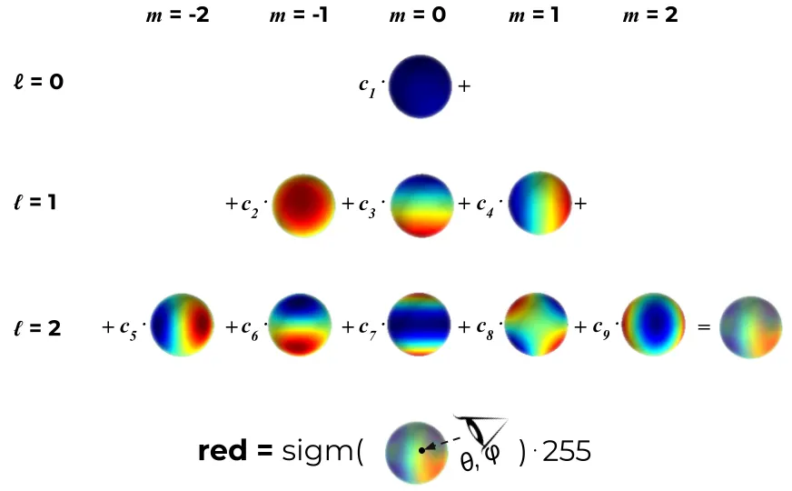
定义SH基的自由度ℓ_max 内，并假设每种颜色（红色、绿色和蓝色）都是前 ℓ_max 个 SH 函数的线性组合。对于每个 3D 高斯，通过学习其正确的系数，使得当我们从某个方向看这个 3D 点时，得到最接近真实的颜色。
# deg：球协基的个数
# sh：优化出的SH系数
# dirs：相机指向高斯球心的视线方向
def eval_sh(deg, sh, dirs):
"""
Evaluate spherical harmonics at unit directions
using hardcoded SH polynomials.
Works with torch/np/jnp.
... Can be 0 or more batch dimensions.
Args:
deg: int SH deg. Currently, 0-3 supported
sh: jnp.ndarray SH coeffs [..., C, (deg + 1) ** 2]
dirs: jnp.ndarray unit directions [..., 3]
Returns:
[..., C]
"""
assert deg <= 4 and deg >= 0
# 第l层的球协基需要2*i+1个系数，[0,l]层球协基共需要(l+1)**2个系数
coeff = (deg + 1) ** 2
assert sh.shape[-1] >= coeff
# C0,C1,C2,C3,C4是提前定义好的球协基，是定值，不需要被优化
result = C0 * sh[..., 0]
if deg > 0:
x, y, z = dirs[..., 0:1], dirs[..., 1:2], dirs[..., 2:3]
result = (result -
C1 * y * sh[..., 1] +
C1 * z * sh[..., 2] -
C1 * x * sh[..., 3])
if deg > 1:
xx, yy, zz = x * x, y * y, z * z
xy, yz, xz = x * y, y * z, x * z
result = (result +
C2[0] * xy * sh[..., 4] +
C2[1] * yz * sh[..., 5] +
C2[2] * (2.0 * zz - xx - yy) * sh[..., 6] +
C2[3] * xz * sh[..., 7] +
C2[4] * (xx - yy) * sh[..., 8])
if deg > 2:
result = (result +
C3[0] * y * (3 * xx - yy) * sh[..., 9] +
C3[1] * xy * z * sh[..., 10] +
C3[2] * y * (4 * zz - xx - yy)* sh[..., 11] +
C3[3] * z * (2 * zz - 3 * xx - 3 * yy) * sh[..., 12] +
C3[4] * x * (4 * zz - xx - yy) * sh[..., 13] +
C3[5] * z * (xx - yy) * sh[..., 14] +
C3[6] * x * (xx - 3 * yy) * sh[..., 15])
if deg > 3:
result = (result + C4[0] * xy * (xx - yy) * sh[..., 16] +
C4[1] * yz * (3 * xx - yy) * sh[..., 17] +
C4[2] * xy * (7 * zz - 1) * sh[..., 18] +
C4[3] * yz * (7 * zz - 3) * sh[..., 19] +
C4[4] * (zz * (35 * zz - 30) + 3) * sh[..., 20] +
C4[5] * xz * (7 * zz - 3) * sh[..., 21] +
C4[6] * (xx - yy) * (7 * zz - 1) * sh[..., 22] +
C4[7] * xz * (xx - 3 * yy) * sh[..., 23] +
C4[8] * (xx * (xx - 3 * yy) - yy * (3 * xx - yy)) * sh[..., 24])
return result
渲染
一个高斯球对一个像素点的影响
第i个3D高斯球对3D中任意一点p的影响定义如下：

这个方程和多元正态分布的概率密度函数的区别在于，没有协方差归一化项，且使用用不透明度来加权。 高斯的妙处在于每个点都有双重影响。一方面，根据其协方差，每个点实际上代表了空间中接近其均值的有限区域。另一方面，它具有理论上无限的范围，这意味着每个高斯函数都定义在整个 3D 空间中，并且可以针对任何点进行评估。这很棒，因为在优化过程中，它允许梯度从远距离流动。⁴
所有高斯球对一个像素的影响
NeRF 和高斯溅射使用相同的逐点 𝛼 混合的图像形成模型。
| Nerf | 3D GS |
|---|---|
 |  |
Nerf的公式和3D GS的公式几乎完全相同。唯一的区别在于两者之间如何计算 𝛼。在高斯溅射中，每个像素的聚合都是通过投影二维高斯的有序列表的贡献进行的。
这种微小的差异在实践中变得极为重要，并导致渲染速度截然不同。事实上，这是高斯溅射实时性能的基础。
坐标系转换
3D GS公式中的\(f^{2D}\) 是 f(p) 在 2D 上的投影。3D 点及其投影都是多元高斯函数，因此 “3D 高斯函数对 3D 中任意点的影响” 与 “投影的 2D 高斯函数对做任意像素点的影响” 具有相同的公式。唯一的区别是必须使用投影到 2D 中平均值 μ 和协方差 Σ ，这一步称为 EWA splatting⁵ 。
定义相机内参矩阵为K，外参矩阵为W=[R|t]
2D 的均值为：
$$ \mu^{2D} = K((W\mu)/(W\mu)_z) $$
2D的协方差矩阵为：
$$ \Sigma^{2D} = JW\Sigma J^\top W^\top $$
文中提到一种简化方法，可以把协方差矩阵从 3 * 3 简化为 2 * 2。
// Forward version of 2D covariance matrix computation
__device__ float3 computeCov2D(
const float3& mean, // Gaussian中心坐标
float focal_x, // x方向焦距
float focal_y, // y方向焦距
float tan_fovx,
float tan_fovy,
const float* cov3D, // 已经算出来的三维协方差矩阵
const float* viewmatrix) // W2C矩阵
{
// The following models the steps outlined by equations 29
// and 31 in "EWA Splatting" (Zwicker et al., 2002).
// Additionally considers aspect / scaling of viewport.
// Transposes used to account for row-/column-major conventions.
float3 t = transformPoint4x3(mean, viewmatrix);
// W2C矩阵乘Gaussian中心坐标得其在相机坐标系下的坐标
const float limx = 1.3f * tan_fovx;
const float limy = 1.3f * tan_fovy;
const float txtz = t.x / t.z; // Gaussian中心在像平面上的x坐标
const float tytz = t.y / t.z; // Gaussian中心在像平面上的y坐标
t.x = min(limx, max(-limx, txtz)) * t.z;
t.y = min(limy, max(-limy, tytz)) * t.z;
glm::mat3 J = glm::mat3(
focal_x / t.z, 0.0f, -(focal_x * t.x) / (t.z * t.z),
0.0f, focal_y / t.z, -(focal_y * t.y) / (t.z * t.z),
0, 0, 0); // 雅可比矩阵（用泰勒展开近似）
glm::mat3 W = glm::mat3( // W2C矩阵
viewmatrix[0], viewmatrix[4], viewmatrix[8],
viewmatrix[1], viewmatrix[5], viewmatrix[9],
viewmatrix[2], viewmatrix[6], viewmatrix[10]);
glm::mat3 T = W * J;
glm::mat3 Vrk = glm::mat3( // 3D协方差矩阵，是对称阵
cov3D[0], cov3D[1], cov3D[2],
cov3D[1], cov3D[3], cov3D[4],
cov3D[2], cov3D[4], cov3D[5]);
glm::mat3 cov = glm::transpose(T) * glm::transpose(Vrk) * T;
// transpose(J) @ transpose(W) @ Vrk @ W @ J
// Apply low-pass filter: every Gaussian should be at least
// one pixel wide/high. Discard 3rd row and column.
cov[0][0] += 0.3f;
cov[1][1] += 0.3f;
return { float(cov[0][0]), float(cov[0][1]), float(cov[1][1]) };
// 协方差矩阵是对称的，只用存储上三角，故只返回三个数
}
加速
- 对于给定的相机，每个 3D 点的 f(p) 可以预先投影到 2D 中，然后再迭代像素。避免重复投影。
- 没有网络，不需要对图像做逐像素的推理，2D 高斯分布直接混合到图像上。
- 射线经过哪些 3D 点是确定的，不需选择ray sampling策略。
- 在 GPU 上，使用可微分 CUDA 内核的自定义实现，每帧进行一次预处理排序阶段。
使用GPU加速以及为某些操作添加自定义 CUDA 内核，加速渲染过程
筛选
理论上，每个高斯球对所有像素都会有影响。但实际上，在渲染某个像素时，会先过滤出相关的高斯球，并对它们排序，按照深度顺序进行计算。
分组：使用简单的 16x16 像素图块实现分组
排序：按深度对 3D 点进行排序

通过 3D 高斯自适应密度控制进行优化
优化参数：
- 位置 𝑝
对position使用类似于 Plenoxels 的标准指数衰减调度技术。
- 不透明度 𝛼
对 𝛼 使用 sigmoid 激活函数将其限制在 [0 − 1) 范围内并获得平滑梯度
- 协方差 Σ
3D 高斯协方差参数的质量对于表示的紧凑性至关重要，因为可以用少量大的各向异性高斯函数捕获大的均匀区域。
出于类似的原因，对协方差尺度使用指数激活函数。
- 颜色 𝑐 的 SH 系数，或者颜色
这些参数的优化与控制高斯密度的步骤交织在一起，以更好地表示场景。
初始化
初始化是指在训练开始时设置的 3D 点的参数。
对于点位置（均值），作者建议使用由 SfM（运动结构）生成的点云。因为对于任何 3D 重建，无论是使用 GS、NeRF 还是更经典的方法，都必须知道相机矩阵，因此都会需要运行 SfM 来获取这些矩阵。SfM 会产生稀疏点云作为副产品，为什么不将其用于初始化呢？当由于某种原因无法获得点云时，可以使用随机初始化，但可能会损失最终重建质量。
协方差被初始化为各向同性，即半径为 从球体mean开始到相邻点的平均距离，这样 3D 世界就可以被很好地覆盖，没有“洞”。
def create_from_pcd(self, pcd : BasicPointCloud, spatial_lr_scale : float):
self.spatial_lr_scale = spatial_lr_scale
# 位置初始化
fused_point_cloud = torch.tensor(np.asarray(pcd.points)).float().cuda()
# 颜色初始化
fused_color = RGB2SH(torch.tensor(np.asarray(pcd.colors)).float().cuda())
features = torch.zeros((fused_color.shape[0], 3, (self.max_sh_degree + 1) ** 2)).float().cuda()
features[:, :3, 0 ] = fused_color
features[:, 3:, 1:] = 0.0
print("Number of points at initialisation : ", fused_point_cloud.shape[0])
# 协方差scale初始化
dist2 = torch.clamp_min(distCUDA2(torch.from_numpy(np.asarray(pcd.points)).float().cuda()), 0.0000001)
scales = torch.log(torch.sqrt(dist2))[...,None].repeat(1, 3)
# 协方法rotation初始化
rots = torch.zeros((fused_point_cloud.shape[0], 4), device="cuda")
rots[:, 0] = 1
# 不透明度初始化
opacities = inverse_sigmoid(0.1 * torch.ones((fused_point_cloud.shape[0], 1), dtype=torch.float, device="cuda"))
self._xyz = nn.Parameter(fused_point_cloud.requires_grad_(True))
self._features_dc = nn.Parameter(features[:,:,0:1].transpose(1, 2).contiguous().requires_grad_(True))
self._features_rest = nn.Parameter(features[:,:,1:].transpose(1, 2).contiguous().requires_grad_(True))
self._scaling = nn.Parameter(scales.requires_grad_(True))
self._rotation = nn.Parameter(rots.requires_grad_(True))
self._opacity = nn.Parameter(opacities.requires_grad_(True))
self.max_radii2D = torch.zeros((self.get_xyz.shape[0]), device="cuda")
优化
- 地面真实视图和当前渲染之间的 L1 Loss
def l1_loss(network_output, gt):
return torch.abs((network_output - gt)).mean()
- D-SSIM：结构差异指数测量
def _ssim(img1, img2, window, window_size, channel, size_average=True):
mu1 = F.conv2d(img1, window, padding=window_size // 2, groups=channel)
mu2 = F.conv2d(img2, window, padding=window_size // 2, groups=channel)
mu1_sq = mu1.pow(2)
mu2_sq = mu2.pow(2)
mu1_mu2 = mu1 * mu2
sigma1_sq = F.conv2d(img1 * img1, window, padding=window_size // 2, groups=channel) - mu1_sq
sigma2_sq = F.conv2d(img2 * img2, window, padding=window_size // 2, groups=channel) - mu2_sq
sigma12 = F.conv2d(img1 * img2, window, padding=window_size // 2, groups=channel) - mu1_mu2
C1 = 0.01 ** 2
C2 = 0.03 ** 2
ssim_map = ((2 * mu1_mu2 + C1) * (2 * sigma12 + C2)) / ((mu1_sq + mu2_sq + C1) * (sigma1_sq + sigma2_sq + C2))
if size_average:
return ssim_map.mean()
else:
return ssim_map.mean(1).mean(1).mean(1)
高斯自适应控制
目的：解决重建不足和过度重建的问题
原因：SGD 本身只能调整现有的点。但在完全没有点（重建不足）或点太多（过度重建）的区域中，它很难找到好的参数。这时就需要自适应致密化。
频率：在训练期间偶尔启动一次，比如每 100 个 SGD 步
方法：，分割具有大梯度的点（图 8）并删除已经收敛到非常低的 α 值的点（如果一个点是如此透明，为什么要保留它？）。

具体策略为：
- 当检测到视图空间位置梯度较大时，增加高斯密度
对于重建不足或过度重建，这两者都有很大的视图空间位置梯度。直观上，这可能是因为它们对应于尚未很好重建的区域，并且优化尝试移动高斯来纠正这一点。
- 对于重建区域中的小高斯，如果需要创建的新的几何形状，最好通过简单地创建相同大小的副本并将其沿位置梯度的方向移动来克隆高斯。
def densify_and_clone(self, grads, grad_threshold, scene_extent):
# Extract points that satisfy the gradient condition
selected_pts_mask = torch.where(torch.norm(grads, dim=-1) >= grad_threshold, True, False)
selected_pts_mask = torch.logical_and(selected_pts_mask,
torch.max(self.get_scaling, dim=1).values <= self.percent_dense*scene_extent)
# 提取出大于阈值`grad_threshold`且缩放参数较小（小于self.percent_dense * scene_extent）的Gaussians，在下面进行克隆
new_xyz = self._xyz[selected_pts_mask]
new_features_dc = self._features_dc[selected_pts_mask]
new_features_rest = self._features_rest[selected_pts_mask]
new_opacities = self._opacity[selected_pts_mask]
new_scaling = self._scaling[selected_pts_mask]
new_rotation = self._rotation[selected_pts_mask]
self.densification_postfix(new_xyz, new_features_dc, new_features_rest, new_opacities, new_scaling, new_rotation)
- 有高方差的区域中的大高斯需要被分割成更小的高斯。我们用两个新的高斯函数替换这些高斯函数，并将它们的尺度除以我们通过实验确定的因子 𝜙 = 1.6。我们还通过使用原始 3D 高斯作为 PDF 进行采样来初始化它们的位置。
克隆高斯与分割高斯的区别在于，前者会增加系统总体积和高斯数量，而后者在保留总体积但增加高斯数量。
def densify_and_split(self, grads, grad_threshold, scene_extent, N=2):
n_init_points = self.get_xyz.shape[0]
# Extract points that satisfy the gradient condition
padded_grad = torch.zeros((n_init_points), device="cuda")
padded_grad[:grads.shape[0]] = grads.squeeze()
selected_pts_mask = torch.where(padded_grad >= grad_threshold, True, False)
selected_pts_mask = torch.logical_and(selected_pts_mask,
torch.max(self.get_scaling, dim=1).values > self.percent_dense*scene_extent)
'''
被分裂的Gaussians满足两个条件：
1. （平均）梯度过大；
2. 在某个方向的最大缩放大于一个阈值。
参照论文5.2节“On the other hand...”一段，大Gaussian被分裂成两个小Gaussians，
其放缩被除以φ=1.6，且位置是以原先的大Gaussian作为概率密度函数进行采样的。
'''
stds = self.get_scaling[selected_pts_mask].repeat(N,1)
means = torch.zeros((stds.size(0), 3),device="cuda")
samples = torch.normal(mean=means, std=stds)
rots = build_rotation(self._rotation[selected_pts_mask]).repeat(N,1,1)
new_xyz = torch.bmm(rots, samples.unsqueeze(-1)).squeeze(-1) + self.get_xyz[selected_pts_mask].repeat(N, 1)
# 算出随机采样出来的新坐标
# bmm: batch matrix-matrix product
new_scaling = self.scaling_inverse_activation(self.get_scaling[selected_pts_mask].repeat(N,1) / (0.8*N))
new_rotation = self._rotation[selected_pts_mask].repeat(N,1)
new_features_dc = self._features_dc[selected_pts_mask].repeat(N,1,1)
new_features_rest = self._features_rest[selected_pts_mask].repeat(N,1,1)
new_opacity = self._opacity[selected_pts_mask].repeat(N,1)
self.densification_postfix(new_xyz, new_features_dc, new_features_rest, new_opacity, new_scaling, new_rotation)
prune_filter = torch.cat((selected_pts_mask, torch.zeros(N * selected_pts_mask.sum(), device="cuda", dtype=bool)))
self.prune_points(prune_filter)
- 与其他体积表示类似，优化结果可能被靠近摄像机的浮动体的干扰。在高斯沉浸中，这种干扰会导致高斯密度的不合理增加。
缓和高斯数量增加的有效方法是:
(1) 每隔 𝑁 = 3000 迭代将 𝛼 值设置为接近于零。然后，优化会在需要时增加高斯函数的 𝛼，同时删除 𝛼 小于 𝜖𝛼 的高斯函数，如上所述。高斯可能会缩小或增长，并且与其他高斯有相当大的重叠
(2) 定期删除透明的或者非常大的高斯。
该策略可以总体上很好地控制高斯总数。
# 接下来移除一些Gaussians，它们满足下列要求中的一个：
# 1. 接近透明（不透明度小于min_opacity）
# 2. 在某个相机视野里出现过的最大2D半径大于屏幕（像平面）大小
# 3. 在某个方向的最大缩放大于0.1 * extent（也就是说很长的长条形也是会被移除的）
prune_mask = (self.get_opacity < min_opacity).squeeze()
if max_screen_size:
big_points_vs = self.max_radii2D > max_screen_size # vs = view space?
big_points_ws = self.get_scaling.max(dim=1).values > 0.1 * extent
prune_mask = torch.logical_or(torch.logical_or(prune_mask, big_points_vs), big_points_ws) # ws = world space?
self.prune_points(prune_mask)
高斯快速可微光栅化器
目标：
对所有高斯进行快速整体渲染、快速排序，近似 𝛼 混合（包括各向异性 splat），而不需要限制高斯的数量。
本文为高斯图设计了一个基于图块的光栅化器，其特点为：
- 一次对整个图像的基元进行预排序
- 允许在任意数量的混合高斯上进行有效的反向传播，并且（光栅化器的）附加内存消耗低，每个像素只需要恒定的开销。
- 光栅化pipeline是完全可微分的
- 考虑到 2D 投影（第 4 节），光栅化器可以对各向异性 splats 进行光栅化。
具体步骤为：
- 将屏幕分割成 16×16 块
- 根据视锥体和每个块剔除 3D 高斯。具体来说，我们只保留与视锥体相交的置信区间为 99% 的高斯分布。此外，我们使用保护带来简单地拒绝极端位置处的高斯分布（即那些均值接近近平面且远离视锥体的位置），因为它们的投影 2D 协方差将不稳定。
- 根据每个高斯重叠的图块数量来实例化它们，并为每个实例分配一个结合了视图空间深度和图块 ID 的键。
- 使用单个快速 GPU 基数排序根据这些键对高斯进行排序 [Merrill 和 Grimshaw 2010]。请注意，没有额外的每像素点排序，混合是基于此初始排序执行的。因此， 𝛼 混合在某些情况下可能是近似的。然而，当图块接近单个像素的大小时，这些近似值变得可以忽略不计。我们发现这种方式极大地增强了训练和渲染性能，而不会在融合场景中产生可见的伪影。
- 通过识别排序后深度最大和最小的高斯来为每个图块生成一个列表。
- 对于光栅化，我们为每个图块启动一个线程块。每个线程：
（1）首先协作地将高斯数据包加载到共享内存中。
（2）然后对于给定的像素，通过从前到后遍历列表来累积颜色和𝛼值，从而最大化数据加载/共享和处理的并行性增益。
（3）当我们达到像素中的目标饱和度 𝛼 时，相应的线程就会停止。
每隔一段时间，就会查询图块中的线程，并且当所有像素都饱和时（即 𝛼 变为 1），整个图块的处理就会终止。
附录 C 中给出了排序的详细信息和总体光栅化方法的高级概述。
实现
训练
def training(dataset, opt, pipe, testing_iterations, saving_iterations, checkpoint_iterations, checkpoint, debug_from):
first_iter = 0
tb_writer = prepare_output_and_logger(dataset)
gaussians = GaussianModel(dataset.sh_degree)
scene = Scene(dataset, gaussians)
gaussians.training_setup(opt)
if checkpoint:
(model_params, first_iter) = torch.load(checkpoint)
gaussians.restore(model_params, opt)
bg_color = [1, 1, 1] if dataset.white_background else [0, 0, 0]
background = torch.tensor(bg_color, dtype=torch.float32, device="cuda")
iter_start = torch.cuda.Event(enable_timing = True)
iter_end = torch.cuda.Event(enable_timing = True)
viewpoint_stack = None
ema_loss_for_log = 0.0
progress_bar = tqdm(range(first_iter, opt.iterations), desc="Training progress")
first_iter += 1
for iteration in range(first_iter, opt.iterations + 1):
iter_start.record()
gaussians.update_learning_rate(iteration)
# Every 1000 its we increase the levels of SH up to a maximum degree
if iteration % 1000 == 0:
gaussians.oneupSHdegree()
# Pick a random Camera
if not viewpoint_stack:
viewpoint_stack = scene.getTrainCameras().copy()
viewpoint_cam = viewpoint_stack.pop(randint(0, len(viewpoint_stack)-1))
# Render
if (iteration - 1) == debug_from:
pipe.debug = True
bg = torch.rand((3), device="cuda") if opt.random_background else background
render_pkg = render(viewpoint_cam, gaussians, pipe, bg)
image, viewspace_point_tensor, visibility_filter, radii = render_pkg["render"], render_pkg["viewspace_points"], render_pkg["visibility_filter"], render_pkg["radii"]
# Loss
gt_image = viewpoint_cam.original_image.cuda()
Ll1 = l1_loss(image, gt_image)
loss = (1.0 - opt.lambda_dssim) * Ll1 + opt.lambda_dssim * (1.0 - ssim(image, gt_image))
loss.backward()
iter_end.record()
with torch.no_grad():
# Log and save
training_report(tb_writer, iteration, Ll1, loss, l1_loss, iter_start.elapsed_time(iter_end), testing_iterations, scene, render, (pipe, background))
if (iteration in saving_iterations):
print("\n[ITER {}] Saving Gaussians".format(iteration))
scene.save(iteration)
# Densification
if iteration < opt.densify_until_iter:
# Keep track of max radii in image-space for pruning
gaussians.max_radii2D[visibility_filter] = torch.max(gaussians.max_radii2D[visibility_filter], radii[visibility_filter])
gaussians.add_densification_stats(viewspace_point_tensor, visibility_filter)
if iteration > opt.densify_from_iter and iteration % opt.densification_interval == 0:
size_threshold = 20 if iteration > opt.opacity_reset_interval else None
gaussians.densify_and_prune(opt.densify_grad_threshold, 0.005, scene.cameras_extent, size_threshold)
if iteration % opt.opacity_reset_interval == 0 or (dataset.white_background and iteration == opt.densify_from_iter):
gaussians.reset_opacity()
# Optimizer step
if iteration < opt.iterations:
gaussians.optimizer.step()
gaussians.optimizer.zero_grad(set_to_none = True)
if (iteration in checkpoint_iterations):
print("\n[ITER {}] Saving Checkpoint".format(iteration))
torch.save((gaussians.capture(), iteration), scene.model_path + "/chkpnt" + str(iteration) + ".pth")
推断
相机
3D是在世界坐标系下构建的，设置好相机的内参和外参后，需要把所有世界坐标系下的数据转换到相机坐标系下，并且投影到屏幕上。
以下是根据相机的内参外参计算坐标系转换矩阵和投影矩阵的过程。
class Camera(nn.Module):
def __init__(self, colmap_id, R, T, FoVx, FoVy, image, gt_alpha_mask,
image_name, uid,
trans=np.array([0.0, 0.0, 0.0]), scale=1.0, data_device = "cuda"
):
super(Camera, self).__init__()
self.uid = uid
self.colmap_id = colmap_id
self.R = R # 相机在世界坐标系下的旋转矩阵
self.T = T # 相机在相机坐标系下的位置。（相机坐标系的原点与世界坐标系相同，只是相差了一个旋转）
self.FoVx = FoVx # x方向视场角
self.FoVy = FoVy # y方向视场角
self.image_name = image_name
try:
self.data_device = torch.device(data_device)
except Exception as e:
print(e)
print(f"[Warning] Custom device {data_device} failed, fallback to default cuda device" )
self.data_device = torch.device("cuda")
self.original_image = image.clamp(0.0, 1.0).to(self.data_device) # 原始图像
self.image_width = self.original_image.shape[2] # 图像宽度
self.image_height = self.original_image.shape[1] # 图像高度
if gt_alpha_mask is not None:
self.original_image *= gt_alpha_mask.to(self.data_device)
else:
self.original_image *= torch.ones((1, self.image_height, self.image_width), device=self.data_device)
# 距离相机平面znear和zfar之间且在视锥内的物体才会被渲染
self.zfar = 100.0 # 最远能看到多远
self.znear = 0.01 # 最近能看到多近
self.trans = trans # 相机中心的平移
self.scale = scale # 相机中心坐标的缩放
# world_2_camera = [[R,T],[0,1]]，world_view_transform是world_2_camera的转置
self.world_view_transform = torch.tensor(getWorld2View2(R, T, trans, scale)).transpose(0, 1).cuda() # 世界到相机坐标系的变换矩阵，4×4
# projection matrix的定义见：
# https://caterpillarstudygroup.github.io/GAMES101_mdbook/MVP/OrthographicProjection.html
# https://caterpillarstudygroup.github.io/GAMES101_mdbook/MVP/PerspectiveProjection.html
# 此处的projection_matrix也是真实projection matrix的转置
self.projection_matrix = getProjectionMatrix(znear=self.znear, zfar=self.zfar, fovX=self.FoVx, fovY=self.FoVy).transpose(0,1).cuda() # 投影矩阵
# 正确的计算公式为：mvp = projection * world_2_camera
# 但full_proj_transform是mvp的转置，所以是world_view_transform * projection_matrix
self.full_proj_transform = (self.world_view_transform.unsqueeze(0).bmm(self.projection_matrix.unsqueeze(0))).squeeze(0) # 从世界坐标系到图像的变换矩阵
# 上面的T是相机在相机坐标系下的位置，此处的camera center是相机在世界坐标系下的位置。
self.camera_center = self.world_view_transform.inverse()[3, :3] # 相机在世界坐标系下的坐标
python渲染接口
viewmatrix和projmatrix都必须传入原始矩阵的逆矩阵，因此python的矩阵存储是行优化的，C++的矩阵存储是列优先的。所以同时的矩阵内存数据，在python里和在c++里是互逆的关系。
def render(viewpoint_camera, pc : GaussianModel, pipe, bg_color : torch.Tensor, scaling_modifier = 1.0, override_color = None):
"""
Render the scene.
viewpoint_camera: FOV，画布大小、相机位置、变换矩阵
pc: 用于获取高斯球的属性
pipe：一些配置
Background tensor (bg_color) must be on GPU!
"""
# Create zero tensor. We will use it to make pytorch return gradients of the 2D (screen-space) means
screenspace_points = torch.zeros_like(pc.get_xyz, dtype=pc.get_xyz.dtype, requires_grad=True, device="cuda") + 0
try:
screenspace_points.retain_grad()
except:
pass
# Set up rasterization configuration
tanfovx = math.tan(viewpoint_camera.FoVx * 0.5)
tanfovy = math.tan(viewpoint_camera.FoVy * 0.5)
raster_settings = GaussianRasterizationSettings(
image_height=int(viewpoint_camera.image_height),
image_width=int(viewpoint_camera.image_width),
tanfovx=tanfovx,
tanfovy=tanfovy,
bg=bg_color,
scale_modifier=scaling_modifier,
viewmatrix=viewpoint_camera.world_view_transform, # world to camera
projmatrix=viewpoint_camera.full_proj_transform, # mvp
sh_degree=pc.active_sh_degree,
campos=viewpoint_camera.camera_center, # camera position
prefiltered=False,
debug=pipe.debug
)
rasterizer = GaussianRasterizer(raster_settings=raster_settings)
means3D = pc.get_xyz
means2D = screenspace_points
opacity = pc.get_opacity
# If precomputed 3d covariance is provided, use it. If not, then it will be computed from
# scaling / rotation by the rasterizer.
scales = None
rotations = None
cov3D_precomp = None
if pipe.compute_cov3D_python:
cov3D_precomp = pc.get_covariance(scaling_modifier)
else:
scales = pc.get_scaling
rotations = pc.get_rotation
# If precomputed colors are provided, use them. Otherwise, if it is desired to precompute colors
# from SHs in Python, do it. If not, then SH -> RGB conversion will be done by rasterizer.
shs = None
colors_precomp = None
# 没有预制的color，就计算过color
if override_color is None:
# 如果预测的是SH的系数，则根据SH计算color
if pipe.convert_SHs_python:
shs_view = pc.get_features.transpose(1, 2).view(-1, 3, (pc.max_sh_degree+1)**2)
dir_pp = (pc.get_xyz - viewpoint_camera.camera_center.repeat(pc.get_features.shape[0], 1))
dir_pp_normalized = dir_pp/dir_pp.norm(dim=1, keepdim=True)
sh2rgb = eval_sh(pc.active_sh_degree, shs_view, dir_pp_normalized)
colors_precomp = torch.clamp_min(sh2rgb + 0.5, 0.0)
# 或者直接预测color
else:
shs = pc.get_features
else:
colors_precomp = override_color
# Rasterize visible Gaussians to image, obtain their radii (on screen).
rendered_image, radii = rasterizer(
means3D = means3D,
means2D = means2D,
shs = shs,
colors_precomp = colors_precomp,
opacities = opacity,
scales = scales,
rotations = rotations,
cov3D_precomp = cov3D_precomp)
# Those Gaussians that were frustum culled or had a radius of 0 were not visible.
# They will be excluded from value updates used in the splitting criteria.
return {"render": rendered_image,
"viewspace_points": screenspace_points,
"visibility_filter" : radii > 0,
"radii": radii}
C++渲染接口
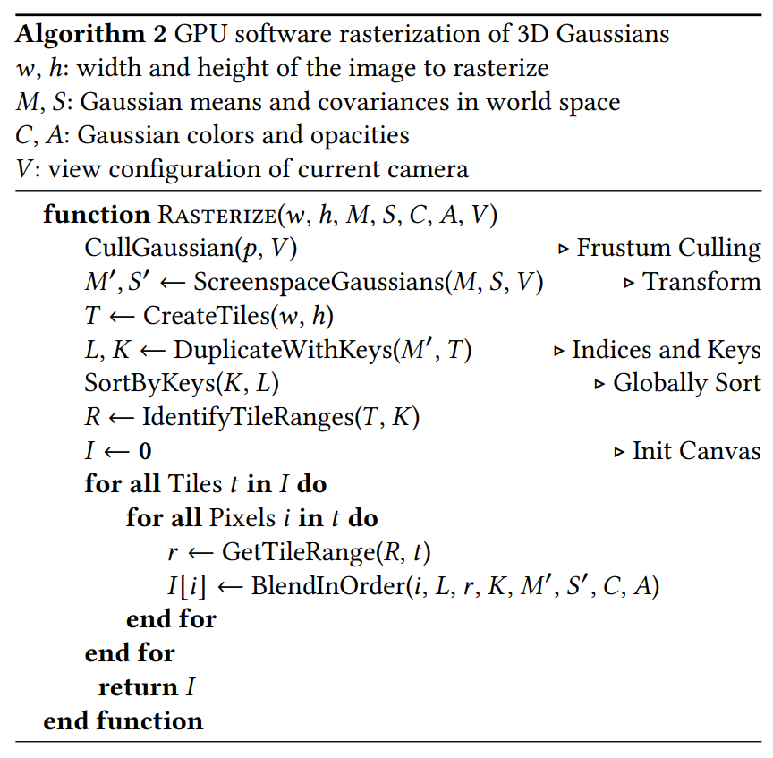
// Forward rendering procedure for differentiable rasterization
// of Gaussians.
int CudaRasterizer::Rasterizer::forward(
std::function<char* (size_t)> geometryBuffer,
std::function<char* (size_t)> binningBuffer,
std::function<char* (size_t)> imageBuffer,
/*
上面的三个参数是用于分配缓冲区的函数，
在submodules/diff-gaussian-rasterization/rasterize_points.cu中定义
*/
const int P, // Gaussian的数量
int D, // 对应于GaussianModel.active_sh_degree，是球谐度数（本文参考的学习笔记在这里是错误的）
int M, // RGB三通道的球谐傅里叶系数个数，应等于3 × (D + 1)²（本文参考的学习笔记在这里也是错误的）
const float* background,
const int width, int height, // 图片宽高
const float* means3D, // Gaussians的中心坐标
const float* shs, // 球谐系数
const float* colors_precomp, // 预先计算的RGB颜色
const float* opacities, // 不透明度
const float* scales, // 缩放
const float scale_modifier, // 缩放的修正项
const float* rotations, // 旋转
const float* cov3D_precomp, // 预先计算的3维协方差矩阵
const float* viewmatrix, // W2C矩阵
const float* projmatrix, // 投影矩阵
const float* cam_pos, // 相机坐标
const float tan_fovx, float tan_fovy, // 视场角一半的正切值
const bool prefiltered,
float* out_color, // 输出的颜色
int* radii, // 各Gaussian在像平面上用3σ原则截取后的半径
bool debug)
{
const float focal_y = height / (2.0f * tan_fovy); // y方向的焦距
const float focal_x = width / (2.0f * tan_fovx); // x方向的焦距
/*
注意tan_fov = tan(fov / 2) （见上面的render函数）。
而tan(fov / 2)就是图像宽/高的一半与焦距之比。
以x方向为例，tan(fovx / 2) = width / 2 / focal_x，
故focal_x = width / (2 * tan(fovx / 2)) = width / (2 * tan_fovx)。
*/
// 下面初始化一些缓冲区
size_t chunk_size = required<GeometryState>(P); // GeometryState占据空间的大小
char* chunkptr = geometryBuffer(chunk_size);
GeometryState geomState = GeometryState::fromChunk(chunkptr, P);
if (radii == nullptr)
{
radii = geomState.internal_radii;
}
dim3 tile_grid((width + BLOCK_X - 1) / BLOCK_X, (height + BLOCK_Y - 1) / BLOCK_Y, 1);
// BLOCK_X = BLOCK_Y = 16，准备分解成16×16的tiles。
// 之所以不能分解成更大的tiles，是因为对于同一张图片的离得较远的像素点而言
// Gaussian按深度排序的结果可能是不同的。
// （想象一下两个Gaussians离像平面很近，一个靠近图像左边缘，一个靠近右边缘）
// dim3是CUDA定义的含义x,y,z三个成员的三维unsigned int向量类。
// tile_grid就是x和y方向上tile的个数。
dim3 block(BLOCK_X, BLOCK_Y, 1);
// Dynamically resize image-based auxiliary buffers during training
size_t img_chunk_size = required<ImageState>(width * height);
char* img_chunkptr = imageBuffer(img_chunk_size);
ImageState imgState = ImageState::fromChunk(img_chunkptr, width * height);
if (NUM_CHANNELS != 3 && colors_precomp == nullptr)
{
throw std::runtime_error("For non-RGB, provide precomputed Gaussian colors!");
}
// Run preprocessing per-Gaussian (transformation, bounding, conversion of SHs to RGB)
CHECK_CUDA(FORWARD::preprocess(
P, D, M,
means3D,
(glm::vec3*)scales,
scale_modifier,
(glm::vec4*)rotations,
opacities,
shs,
geomState.clamped,
cov3D_precomp,
colors_precomp,
viewmatrix, projmatrix,
(glm::vec3*)cam_pos,
width, height,
focal_x, focal_y,
tan_fovx, tan_fovy,
radii,
geomState.means2D, // Gaussian投影到像平面上的中心坐标
geomState.depths, // Gaussian的深度
geomState.cov3D, // 三维协方差矩阵
geomState.rgb, // 颜色
geomState.conic_opacity, // 椭圆二次型的矩阵和不透明度的打包向量
tile_grid, //
geomState.tiles_touched,
prefiltered
), debug) // 预处理，主要涉及把3D的Gaussian投影到2D
// Compute prefix sum over full list of touched tile counts by Gaussians
// E.g., [2, 3, 0, 2, 1] -> [2, 5, 5, 7, 8]
CHECK_CUDA(cub::DeviceScan::InclusiveSum(geomState.scanning_space, geomState.scan_size, geomState.tiles_touched, geomState.point_offsets, P), debug)
// 这步是为duplicateWithKeys做准备
// （计算出每个Gaussian对应的keys和values在数组中存储的起始位置）
// Retrieve total number of Gaussian instances to launch and resize aux buffers
int num_rendered;
CHECK_CUDA(cudaMemcpy(&num_rendered, geomState.point_offsets + P - 1, sizeof(int), cudaMemcpyDeviceToHost), debug); // 东西塞到GPU里面去
size_t binning_chunk_size = required<BinningState>(num_rendered);
char* binning_chunkptr = binningBuffer(binning_chunk_size);
BinningState binningState = BinningState::fromChunk(binning_chunkptr, num_rendered);
// For each instance to be rendered, produce adequate [ tile | depth ] key
// and corresponding dublicated Gaussian indices to be sorted
duplicateWithKeys << <(P + 255) / 256, 256 >> > (
P,
geomState.means2D,
geomState.depths,
geomState.point_offsets,
binningState.point_list_keys_unsorted,
binningState.point_list_unsorted,
radii,
tile_grid) // 生成排序所用的keys和values
CHECK_CUDA(, debug)
int bit = getHigherMsb(tile_grid.x * tile_grid.y);
// Sort complete list of (duplicated) Gaussian indices by keys
CHECK_CUDA(cub::DeviceRadixSort::SortPairs(
binningState.list_sorting_space,
binningState.sorting_size,
binningState.point_list_keys_unsorted, binningState.point_list_keys,
binningState.point_list_unsorted, binningState.point_list,
num_rendered, 0, 32 + bit), debug)
// 进行排序，按keys排序：每个tile对应的Gaussians按深度放在一起；value是Gaussian的ID
CHECK_CUDA(cudaMemset(imgState.ranges, 0, tile_grid.x * tile_grid.y * sizeof(uint2)), debug);
// Identify start and end of per-tile workloads in sorted list
if (num_rendered > 0)
identifyTileRanges << <(num_rendered + 255) / 256, 256 >> > (
num_rendered,
binningState.point_list_keys,
imgState.ranges); // 计算每个tile对应排序过的数组中的哪一部分
CHECK_CUDA(, debug)
// Let each tile blend its range of Gaussians independently in parallel
const float* feature_ptr = colors_precomp != nullptr ? colors_precomp : geomState.rgb;
CHECK_CUDA(FORWARD::render(
tile_grid, block, // block: 每个tile的大小
imgState.ranges,
binningState.point_list,
width, height,
geomState.means2D,
feature_ptr,
geomState.conic_opacity,
imgState.accum_alpha,
imgState.n_contrib,
background,
out_color), debug) // 最后，进行渲染
return num_rendered;
}
有效
局限性
- 在视角不可见区域有伪影。解决方法：通过规则剔除这些伪影。
- 简单的可见性算法，可能导致高斯突然切换深度/混合顺序。解决方法：可以通过抗锯齿来解决。
- 没有对我们的优化应用任何正则化；解决方法：加入正则化将有助于处理看不见的区域和弹出的伪影。
- 一次只能渲染一张图像，不能批量进行。
验证
启发
遗留问题
参考材料
- https://towardsdatascience.com/a-comprehensive-overview-of-gaussian-splatting-e7d570081362
- https://caterpillarstudygroup.github.io/ImportantArticles/3D_Gaussian_Splatting.html
- 源码解读：https://blog.csdn.net/qaqwqaqwq/article/details/136837906
Decoupling Human and Camera Motion from Videos in the Wild
核心问题是什么?
要解决的问题
从in the wild视频重建人的全局运动轨迹。
现有方法
- 大多数现有方法并不对相机运动进行建模；
- 依赖背景像素来推断 3D 人体运动的方法通常需要全场景重建，这对于in the wild视频通常是不可能的。
本文方法
即使现有的 SLAM 系统无法恢复准确的场景重建，背景像素运动仍然提供足够的信号来约束相机运动。 我们的优化方法将相机和人体运动解耦，这使我们能够将人们放置在同一个世界坐标系中。
效果
我们表明，相对相机估计以及数据驱动的人体运动先验可以解决场景尺度模糊性并恢复全局人体轨迹。我们的方法可以在具有挑战性的野外视频（例如 PoseTrack）中稳健地恢复人们的全局 3D 轨迹。我们在 3D 人体数据集 Egobody 上量化了对现有方法的改进。我们进一步证明，恢复的相机比例允许我们在共享坐标系中推理多人的运动，从而提高 PoseTrack 中下游跟踪的性能。
核心贡献是什么？
提出了一种对摄像机运动进行建模的方法，以从野外视频中恢复现实世界中的 3D 人体运动
大致方法是什么？
给定输入 RGB 视频，
- 使用 SLAM 系统根据静态场景的像素运动估计帧之间的相对相机运动 [58]。
首先，即使场景视差不足以进行准确的场景重建，它仍然允许对相机运动进行合理的估计
-
使用 3D 人体跟踪系统估计所有检测到的人的identity和身体姿势[46]。
-
使用1和2来初始化共享世界坐标系中人类和相机的轨迹。
人体可以以多种方式在世界上真实地移动。学习的先验很好地捕捉了现实人类运动的这个空间。
- 在多个阶段优化这些全局轨迹，使得视频中的 2D 观察结果和人类如何在世界中移动的先验知识保持一致 [48]。
3.1节中，我们描述了如何在世界坐标系中初始化多人轨迹和摄像机。在第 3.2 节中，我们描述了世界轨迹的平滑步骤，以热启动我们的联合优化问题。最后在 3.3 节中，我们描述了使用人体运动先验对轨迹和相机比例进行全面优化。
每一帧的特征表示
| global orientation | 3 | |
| body pose | 22 * 3 | |
| shape | 16 | |
| root translation | 3 |
stage 1：在世界坐标系中初始化多人轨迹和摄像机
3D 人体跟踪
- 输出
每个人的pose和shape。
其中：
pose估计上逐帧进行的，且为相机坐标系下的pose。
shape是每个人独立且所有帧统一的。
- 方法
PHALP(《Tracking People by Predicting 3D Appearance, Location & Pose》)
估计相机运动
- 输出：
每一帧中相机坐标系在世界坐标系下的rotation和translation。
- 方法：
《DROID-SLAM: Deep Visual SLAM for Monocular, Stereo, and RGB-D Cameras》，使用静态场景的像素运动中的信息来计算
但相机运动的scale是不确定的，需要结合人物运动信息（human motion prior）来得到这个scale。
优化世界坐标系下的人物位姿
- 用PHALP的结果初始化人物的shape和（相对于root的）pose
- 用camera rotation + root rotation初始化人的global orientation
- 用camera translation + root translation初始化人的global translation
- 初始化camera scale为1
基于以上信息（人的shape，pose，global orientation, global translation），可以使用LBS计算出每一帧中每个关节的global position。
-
优化目标：
关节的3D global position投影回到相机坐标系中的2在平面上，应于检测出的2D 关键点重合。 -
优化参数：
global orientation, global translation
这是个欠约束问题，优化所有信息会陷入local optima。
Stage 2：世界坐标系下的轨迹平滑
人在相机坐标系下的位移，是人在世界坐标系下的位移与相机在世界坐标系下的位置二者共同作用的结果。
要完全消除相机位移的影响，需要引入人物运动先验。但这件事在stage 3中完成。此时先不考虑。
此时，只是对Stage 2的结果做一些平滑。
- 优化目标：
- Stage 1中的优化目标
- shape参数不要太大
- joint position（世界坐标系下）平滑
- joint rotation（用VPoser编码到隐空间）平滑
- 优化参数：
- camera scale
- human shape
- human pose（相对于root）
Stage 3：使用人体运动先验对轨迹和相机比例进行全面优化
运动先验
使用HuMoR作为运动先验。
- 以HuMoR的方式表示动作，得到st序列
- 使用HuMoR Encoder根据st序列计算出转称序列zt
- 使用HuMoR Decoder根据\(s_t{t-1}\)和zt计算也st，得到另一个st序列
- HuMoR Decoder还会输出预测的触地信息c和地面高度g
- 优化目标
| CVAE | z产生的先验概率尽量大，即根据x0和序列z生成每一帧xt之后，再计算每一帧会产生这个z序列的先验概率 | |
| skate | 当检测到脚步触地时，脚应该不动 | |
| con | 当检测到脚步触地时，脚的高度应低于某个阈值 |
- 优化参数
initial state s0
camera scale
转移latent code z
- 优化方法
逐步增加HuMoR中的T的范围。
实际上，loss CVAE的权重非常小。怀疑这个约束的重要性。
有效
- 3D人体跟踪的结果受到遮挡等原因而无效时，此算法使用的motion prior可以很好地处理这种情况。
- 多人场景中，由于人物可能会不同时地出现或消失，是多人检测的难点。本文方法也能很好的处理。
缺陷
- 本文只是消除相机运动对人物轨迹的影响，但并没有重建相机运动轨迹。
- 由于运动模型是从室内mocap数据中学习的，因此预测的位移并不能推广到现实世界的复杂性。因此，他们很难恢复复杂且长距离的轨迹(from 18)
验证
启发
遗留问题
参考材料
HMP: Hand Motion Priors for Pose and Shape Estimation from Video
核心问题是什么?
难点
- 3D 手部姿势估计在难点在于手部的高度关节、频繁遮挡、自遮挡和快速运动而变得复杂。
- 虽然视频信息有助于解决上述问题，但现有的基于视频的 3D 手部数据集(例如HO3D)不足以训练前馈模型以推广到野外场景。
- 大型人体动作捕捉数据集中还包括手部动作，例如AMASS，但缺少视频对应。
解决方法
- 针对手部的generative motion prior，并在 AMASS 数据集上进行训练，该数据集具有多样化和高质量的手部运动。
- 将该运动先验用于基于视频的 3D 手部运动估计，在latent空间进行优化。
效果
我们集成强大的运动先验显着提高了性能，特别是在遮挡场景中。它产生稳定、时间一致的结果，超越了传统的单帧方法。我们通过对 HO3D 和 DexYCB 数据集进行定性和定量评估来证明我们方法的有效性，特别强调 HO3D 的以遮挡为中心的子集。代码可在 https://hmp.is.tue.mpg.de 获取
核心贡献是什么？
- 从大规模MoCap 数据集AMASS [37] 中学习到了generative motion prior。
- 提出了一种latent空间的优化的方法，用于从单目视频中准确估计手部姿势和形状。
大致方法是什么？

HMP 方法由两个阶段组成（图 2）：
- 初始化阶段，检测手部边界框、2D 手部关键点，并从视频帧初始化 MANO 手部姿势和形状估计（第 3.2 节）。
- 多阶段优化阶段（第 3.4 节），它通过强制执行手部运动先验约束来细化视频中的这些估计。
初始化阶段
| 输入 | 输出 | 方法 |
|---|---|---|
| 图像 | bbox | hand tracking model [9] 当由于遮挡等原因导致bbox置信度低时，使用SLERP |
| bbox | 全局坐标中的手部姿势和形状 | PyMAFX [64] |
| bbox | 2d keypoints | MediaPipe and PyMAF-X [36,64] 如果MediaPipe检测失败，就用PyMAFX检测出的3d keypoints投影到2d 经实验，这种方式得到的2d kps效果最好 |
手部动作先验
使用VAE学习手部动作先验。
其中Decoder为“非自回归”。我们采用基于神经运动场（NeMF）[23]的解码器，通过 NeRF 式 MLP [39] 将身体运动表示为手部姿势的连续矢量场。
自回归模型，例如Humor需要根据上一帧来预测下一帧，无法并行，因此长序列的生成会比较慢。
但非自回归模型不依赖上一帧的输出，因此可以 并行化。
因此Decoder不需要以上一帧为输出，它的输入是latent code z和时间步t。
| 本文（非自回归Decoder） | Humor(自回归Decoder) | |
|---|---|---|
| 是否依赖上一帧的信息 | 不需要以上一帧为输出，它的输入是 | 需要根据上一帧预测下一帧 |
| 输入 | 描述整个动作序列的latent code z和时间步t | 描述状态转移的latent code z和上一帧的特征 |
| 潜变量z的含义 | 描述整个动作序列 | 描述状态转移 |
| 是否可并行生成 | 可以 | 不可以 |
根据目标函数优化latent空间的潜变量z，而不是原始空间的动作参数，从而生成好的目标序列。
z的初值来源于Encoder。
优化过程中不考虑手的global rotation。因为手在空间的移到是unlimited的。
我认为global rotation还是有影响的。不同的global rotation下，手的动作分布有一些细微的差别，这些差别来自重力的影响。
Latent Optimization
优化目标
| loss | content |
|---|---|
| o | global orientation重建loss |
| tr | global translation重建loss |
| beta | 形状参数不应过大 |
| os | global translation的平滑 |
| ts | global orientation的平滑 |
| 2D | 与2D信息一致 |
| MP | latent code的合理性 |
多阶段优化
第一阶段以重建为主要目标。第二阶段以优化为主要目标。
遮挡处理
发生遮挡时，初始化阶段的所有信息（bbox，2D关键点，SMPL参数）都变更不可靠。
解决方法：仅使用观察到的时间步长来优化latent code zθ。在这种情况下，运动先验表现为一种运动填充方法，该方法利用来自可见帧的提示来推断被遮挡的帧。这是我们方法的关键部分，使其对遮挡具有鲁棒性。
有效
- 由于使用了强大的生成运动先验，我们的方法可以在部分或严重遮挡的情况下重建更准确的 3D 手部运动。我们在 HO3D-OCC（HO3D 数据集的特定于遮挡的子集）上强调了这一点。
- 与传统的基于时间先验的方法或直接回归手部姿势和形状的方法相比，我们的框架使我们能够执行更好的手部重建结果。
缺陷
对2D kps识别的准确性要求非常高，解决方法：引入图像信息
验证
启发
遗留问题
参考材料
HuMoR: 3D Human Motion Model for Robust Pose Estimation
| 缩写 | 英文 | 中文 |
|---|---|---|
| CVAE | conditional variational autoencoder | 条件变分自动编码器 |
| GMM | Gaussian mixture model | 高斯混合模型 |
核心问题是什么?
解决了什么痛点
在存在噪声和遮挡的情况下恢复合理的姿势序列
本文主要贡献是什么
- 一种通过创新的 条件VAE 建模的生成 3D 人体运动先验，可用于多种下游任务。
- 基于运动先验的动作生成
- 基于运动先验的动作优化，可以产生『准确且合理的运动和接触』的动作。
项目页面：geometry.stanford.edu/projects/humor。
主要方法
HuMoR：3D 人体运动先验
定义运动先验
本文将运动先验表达为\(x_{t-1}\)与\(x_{t}\)的动作转移关系。
不同的\(x_{t-1}\)能得到不同的动作转移关系分布。
用于动作生成时，可以取概率最大的转移关系，也可以根据概率函数采样一个分布关系。
用于动作优化时，目的是让实际的转移关系在它的所属分布中的概率尽量大。
同一个\(x_{t-1}\)结合不同的转移关系，能得到不同的\(x_{t}\)。
当输入x0与每一步转换z是确定的时候，第T帧的输出也是确定的。
本文运动先验的理论依据：Latent Variable Dynamics Model 潜变量动力学模型
假设：当前状态只与上一帧状态有关。
目标：\(p_\theta(x_t|x_{t-1})\)，描述the plausibility of a transition.
CVAE：引入一个潜变量z，分别求\(p_\theta(z_t|x_{t-1})\)和\(p_\theta(x_t|z_t, x_{t-1})\)，结合求出\(p_\theta(x_t|x_{t-1})\)
$$ p_\theta(x_t|x_{t-1}) = \int_{z_t} p_\theta(z_t|x_{t-1}) p_\theta(x_t|z_t, x_{t-1}) $$
这样把问题分解为两部分，其中第一项为Encoder，第二项为Decoder。
由于\(x_t\)和\(x_{t-1}\)差别不大。作者发现学习\(x_t\)与\(x_{t-1}\)之间的差，比直接学习\(x_t\)效果好。
学习运动先验

构建转移关系z的先验模型和后验模型。其中先验概率为橙色模块，后验概率为绿色模块。
后验模型从根据的数据对\(x_{t-1}, x_{t}\)中提取转移关系分布，因此能得到比较准确的运动先验。
先验模型是根据\(x_{t-1}\)预测转移关系分布，是在生成任务中会遇到的场景。
| 阶段 | 流程 | Loss | 目的 |
|---|---|---|---|
| 第一阶段 | Encoder(基于后验概率得到的转移关系) + Decoder(基于转移关系得到当前帧)的联合训练 | KL(转移关系分布，0/1分布) 重建Loss（xt, output） | 1. 从数据集中提取较准确的转移关系 2. 得到一个比较准确的动作恢复模型Decoder |
| 第二阶段(第一阶段和第二阶段可以同时进行) | 分布用Encoder和Prior预测转移关系分布 | KL(后验转移分布， 先验转移分布) | 让先验分布逼近后验分布，可以得到一个比较准确的先验转移分布。 |
基于运动先验的动作生成
控制条件：无
生成方式：自回归
表示方式：VAE
生成模型：状态转移
Homor用于动作生成时，可以取概率最大的转移关系，也可以根据概率函数采样一个分布关系。
---
title: Building the Motion Manifold
---
flowchart LR
Input[("Init Frame")]
Past(["Past"])
Prior["Humor Prior"]
Dist(["转移分布"])
Latent(["Latent Code"])
Decoder
Next(["Next"])
Input-->Past-->Prior-->Dist-->Sample-->Latent
Past & Latent --> Decoder-->Next-->Past
基于运动先验的动作优化
输入：观察序列y，为需要被优化的动作序列的特征
优化变量：使用 HuMoR 作为强运动先验，联合求解姿势、身体形状和地平面/接触，以及初始状态x0，转移序列z，形状参数beta，地面高度g
本文用所有运动数据的首帧，基于GMM模型，学习了运动数据的首帧\(p_\theta(x_0)\)的分布
优化目标：通过rollout函数，使得第T帧的输出与观察序列y的第T帧接近
第一步：initialization optimization
优化参数：SMPL参数初值
优化目标：data, shape, additional
第二步：计算z序列的初值
计算方法：CVAE Encoder
实验细节
逐帧的表示
| 符号 | 维度 | 信息 |
|---|---|---|
| \(r\) | 3 | root位移 |
| \(\dot r\) | 3 | root的线速度 |
| \(\Phi\) | 3 | root的朝向 |
| \(\dot \Phi\) | 3 | root的角速度 |
| \(\Theta\) | \(3 \times 21\) | 关节的local rotation，轴角形式 |
| \(J\) | \(3 \times 22\) | 关节的位置 没有提到特殊处理，应该就是指全局位置 |
| \(\dot J\) | \(3 \times 22\) | 关节的线速度 |
触地标签
Decoder会同时输出触地标签，这个标签会在test时使用。
对比Motion VAE
Motion VAE也使用了以上CVAE的原理。本文的改进在于：
通过额外学习条件先验、对状态和接触的变化进行建模以及鼓励关节位置和角度预测之间的一致性来克服这个问题。
训练
训练数据：pair data \((x_{t-1}, x_t)\)
并使用scheduled sampling，使模型对自身错误的长期积累具有鲁棒性。
| 重建loss | 重建出的xt应与训练数据是的xt接近 | 1. 由Encoder\((x_{t-1}, x_t)\)得到潜变量z 2. 由z和\(x_{t-1}\)Decoder出xt |
| KL散度 | z的先验分布与z的后验分布应该接近 | z的先验分布为\(p_\theta(z\mid x_{t-1})\) z的后验分布为\(q_\phi(z\mid x_{t-1},x_{t-1})\) 这个loss的权重在训练时会逐步减小，以避免posterior collapse。 |
| SMPL关节一致性 | 预测出的关节位置应该与GT一致 | [?]这个是不是有点多余？x里面已经包含关节位置、速度和旋转信息了。 |
| 触地标签 | 触地标签应与GT一致 | |
| 触地时脚的速度 | 触地是脚的速度应该较小 |
优化
| 优化目标 | ||
|---|---|---|
| mot | CVAE | z产生的先验概率尽量大，即根据x0和序列z生成每一帧xt之后，再计算每一帧会产生这个z序列的先验概率 |
| mot | init | 第一帧的概率尽量大 |
| data | data | 所产生的序列应与观察序列y相似 |
| reg | skel | 所生成的关节位置应与beta对应的SMPL体型一致 每一帧的骨长应保持不变 |
| reg | env | 当检测到脚步触地时，脚应该不动，且脚的高度为0 |
| reg | gnd | 地面高度接近初值 |
| reg | shape | 正常人的体型的shape参数不会太大 |
| additional | pose | \(z^{poset}\)不要太大 |
| additional | smooth | 前后两帧的关节位置不能发生突变 |
缺陷
- 训练和使用比较麻烦，训练包含2个阶段(训练Encoder&Decoder，训练Prior)，使用包含3个阶段(根据初始化序列预测z、优化z、生成输出序列)
- 用于动作优化时一次性对整个序列优化，不能用于流式场景
- 由于运动模型是从室内mocap数据中学习的，因此不能推广到现实世界的复杂性
验证
数据集
AMASS, i3DB, PROX
启发
模型与传统的随机物理模型类似。条件先验可以被视为一个控制器，产生的“力”zt是一个关于状态 xt−1 的函数的输出，而解码器的作用就像方程中广义位置和速度的组合物理动力学模型和欧拉积分器。
遗留问题
参考材料
Co-Evolution of Pose and Mesh for 3D Human Body Estimation from Video
| 缩写 | 英文 | 中文 |
|---|---|---|
| PMCE | Pose and Mesh Co-Evolution network | 姿势和Mesh协同进化网络 |
| AdaLN | Adaptive Layer Normalization | 自适应层标准化 |
核心问题是什么?
背景
尽管基于单图像的 3D 人体网格恢复取得了重大进展，但从视频中准确、平滑地恢复 3D 人体运动仍然具有挑战性。
现有方法
现有的基于视频的方法通常通过从耦合图像特征估计复杂的姿势和形状参数来恢复人体网格，其高复杂性和低表示能力通常导致不一致的姿势运动和有限的形状模式。
本文方法
为了缓解这个问题，我们引入 3D 姿势作为中介，并提出一种姿势和Mesh协同进化网络（PMCE），将该任务分解为两部分：
1）基于视频的 3D 人体姿势估计
2）从估计的 3D 姿态和时间图像特征回归顶点。
具体来说，我们提出了一种双流编码器，用于估计中间帧 3D 姿势并从输入图像序列中提取时间图像特征。此外，我们设计了一个协同进化解码器，它与图像引导自适应层归一化（AdaLN）执行姿势和网格交互，以使姿势和网格适合人体形状。
效果
大量实验表明，所提出的 PMCE 在三个基准数据集（3DPW、Human3.6M 和 MPI-INF-3DHP）上的每帧精度和时间一致性方面均优于以前最先进的方法。我们的代码可在 https://github.com/kasvii/PMCE 获取。
核心贡献是什么？
- 提出了一种姿势和网格协同进化网络 (PMCE)，用于从视频中恢复 3D 人体网格。它将任务分解为两部分：基于视频的 3D 位姿估计，以及通过图像引导位姿和网格协同进化进行网格顶点回归，从而实现准确且时间一致的结果。
- 设计了协同进化解码器，该解码器在我们提出的 AdaLN 的指导下执行姿势和网格交互。 AdaLN根据图像特征调整关节和顶点特征的统计特性，使其符合人体形状。
- 方法在 3DPW 等具有挑战性的数据集上实现了最先进的性能，将 MPJPE 降低了 12.1%，PVE 降低了 8.4%，加速误差降低了 8.5%。
大致方法是什么？

PMCE包括两个时序步骤：
1）基于视频的 3D 姿态估计：关注人体骨骼，根据姿势预测准确、平滑的人体运动。
2）根据 3D 姿态和时间图像特征进行网格顶点回归：利用视觉线索补充人体形状信息，恢复准确的Mesh网格并细化预测的 3D 姿势，实现姿势和网格的协同进化。
| 输入 | 输出 | 方法 |
|---|---|---|
| T 帧视频序列 | 静态图像特征 | 预训练的 ResNet-50 |
| 静态图像特征 | 时序图像特征 | Encoder |
| T 帧视频序列 | 2D 姿势 | 现成的 2D 姿态检测器 |
| 2D 姿势 | 中间帧 3D 姿势 | Encoder |
| 3D 姿态特征、时间特征 | Mesh Vertices | co-evolution decoder 活动层归一化（AdaLN）通过时序图像特征调整关节和顶点特征的统计特征来指导交互，以使pose和mesh适合人体形状。 |
self/cross attention
| 输入 | 输出 | 方法 |
|---|---|---|
| X | Q | linear |
| X或Y | K, V | linear |
| Q, K, V | multi head | Softmax |
| multi head | output | concat |
Layer Normalization
先标准化到0-1分成，再映射新的均值、方差上。
2D keypoint的位置归一化（左下）
通常的做法为：先crop出人体区域，并在区域中进行归一化。好处是降低背景噪声并简化特征提取。缺点是裁剪操作丢弃了人体在整个图像中的位置信息，这对于预测原始相机坐标系中的全局旋转至关重要[22]。
本文做法：相对于完整图像而不是裁剪区域对 2D 位姿进行归一化。
3D Pose估计（左下）
| 输入 | 输出 | 方法 |
|---|---|---|
| 归一化之后的2D Sequence | joint feature(T * J * C1) | project |
| 静态图像特征（来自左上） | 静态图像特征（T * 1 * C1） | project |
| 空间位置信息 | 空间位置信息 | Spatical embedding |
| 时序信息 | 时序信息 | temporal embedding |
以上信息加起来，得到(T * J * C1)的输入特征。
ST-Transformer 由 L1 层级联空间 Transformer 和时间 Transformer 组成。
空间Transformer：旨在探索关节之间的空间信息，计算同一帧中joint token之间的相似度。
时间 Transformer：为了捕获帧之间的时间关系，时间 Transformer 将联合特征 X 从 (T × J × C1) reshape 为 (J × T × C1)。因此，注意力矩阵是通过同一关节的frame token之间的相似度来计算的。
融合：使用多层感知器（MLP）将维度从 C1 变换为 3，并将 T 帧融合为 1，以获得中帧 3D 姿态（J * 3）。
图像特征聚合(左上)
目的：聚合T帧的静态图像特征以获得中间帧的时序特征
方法：双向GRU
Co-Evolution Decoder
输入：
- 3D Pose（来自左下），提供更精确、更稳健的姿态信息
- 时序图像特征（来自左上），提供视觉线索，例如身体形状和表面变形
- template mesh
输出：人体mesh
Adaptive layer normalization
AdaLN 基于时间图像特征自适应调整关节和顶点特征的统计特性，指导pose和mesh以适应人体形状。
把它看作是一个风格迁移任务[11]，自适应调整关节和顶点的特征趋近于图像特征 f 。
图像特征f为AdaLN提供新的 scaling α 和 shifting β。关节特征和顶点特征按照f提供的α和β进行调整，这样，图像特征中包含的形状信息可以注入到关节和顶点特征中，同时保留它们的空间结构。
Co-Evolution Block

Loss Function
- mesh vertex loss Lmesh
- 3D joint loss Ljoint
- surface normal loss Lnormal
- surface edge loss Ledge
有效
缺陷
验证
启发
遗留问题
参考材料
Global-to-Local Modeling for Video-based 3D Human Pose and Shape Estimation
| 缩写 | 英文 | 中文 |
|---|---|---|
| GLoT | Global-to-Local Transformer | |
| HSCR | Hierarchical Spatial Correlation Regressor | 分层空间相关回归器 |
| GMM | Global Motion Modeling | 全局运动建模 |
| LPC | Local Parameter Correction | 局部参数校正 |
核心问题是什么?
背景
video-based 3D HPE通过帧内精度和帧间平滑度进行评估。
帧内精度 是指单帧动作的准确性。帧间平滑度 是指一个动作序列的趋势一致性。
现有方案
尽管这两个指标负责不同范围的时间一致性，但现有的最先进方法将它们视为一个统一的问题，并使用单调的建模结构（例如 RNN 或 attention-based block）来设计其网络。
存在的问题
然而，使用单一类型的建模结构很难平衡短期和长期时间相关性的学习，并且可能使网络偏向其中一种，导致不好的预测结果，例如：
- 全局位置偏移
- 时序上不一致
- 单帧动作不准确
解决方法
为了解决这些问题，我们提出一种端到端框架称为 Global-to-Local Transformer (GLoT)，可以结构性地解耦“长期特征的建模”和“短期特征的建模”。
- 首先，引入了global transformer以及用于长期建模的Masked HPE策略。该策略通过随机屏蔽多个帧的特征来刺激global transformer学习更多的帧间相关性。
是否能用于流式？
- 其次，local transformer负责利用人体mesh上的局部细节，并通过利用cross-attention与global transformer进行交互。
- 此外，进一步引入了Hierarchical Spatial Correlation Regressor，通过解耦的全局-局部表示和隐式运动学约束来细化帧内估计。
效果
我们的 GLoT 在流行基准（即 3DPW、MPI-INF-3DHP 和 Human3.6M）上以最低的模型参数超越了以前最先进的方法
核心贡献是什么？
- 解耦长期和短期相关性的建模。所提出的Global-to-Local Transformer（GLoT）融合了深层网络和人类先验结构的知识，提高了我们方法的准确性和效率。
- GLoT中包含两个组件，即Global Motion Modeling和Local Parameter Correction，分别用于学习帧间全局局部上下文和帧内人体网格结构。
- 在三个数据集的实验表明，GLoT 优于之前最先进的方法 [44]，且模型参数更少。
大致方法是什么？
GLoT包括两个分支，即全局运动建模（GMM）和局部参数校正（LPC）。
- 首先从预训练的 ResNet-50 [11] 中提取Static Features，参考 [5, 17, 44]。
- 然后，通过Random Masking(分支1)和Nearby Frame Selection（分支2）分别处理静态特征 S，以将它们（Sl，Ss）输入全局和局部transformer。
- 最后，分层空间相关回归器（HSCR）使用解耦的全局-局部表示\(f_{gl}\)和内部运动学结构来校正GMM获得的全局结果\(θ^l_{mid}\)。
- 请注意，我们的方法利用 T 帧来预测中间帧，参考[5,44]
Global Motion Modeling
- 沿时间维度随机屏蔽一些static token，α是屏蔽比率。（灰）
- 将global encoder应用于这些未被mask的static token。（红->黄）
- 将 SMPL token [10]填充到被mask的位置上（蓝）
- 在global decoder阶段，将整个序列发送到global decoder中以获得long-term表示。
- 将interate regressor应用于long-term表示以得到初始的全局mesh序列。
GMM得到的SMPL参数表示如下：
| 位姿参数 | Tx24×6 |
| 形状参数 | T ×10 |
| 伪相机参数 | T ×3 |
形状参数和相机参数通常是耦合的
Local Parameter Correction
人体运动的在中间帧中受到附近帧的显著影响
- 择附近的帧进行short-term建模，w 是附近帧的长度
- 对选定的tokens使用local encoder。
- local decoder不仅通过cross attention机制解码代表全局人类运动一致性的特征，还解码代表局部细粒度人类mesh结构的特征。cross attention函数定义如下，
| Q | a query of the mid-token |
| K | key of the global encoder |
| V | value of the global encoder |
HSCR
以前的方法：使用HMR直出SMPL参数，而不考虑骨骼结构。
存在的问题：没有考虑骨骼结构，结合骨骼结构信息可以得到更好的结果。
本文方法：[42]结合local分支的输出来优化global分支的结果。
- 以骨骼结构为依据拼接pose特征，以一整个骨骼链的pose特征来描述这个关节的pose特征。
- 以global branch的原始输出l和local branch的输入gl为特征，使用MLP，预测l需要调整的量s
- 把s叠加到l上，为最终输出r。
Loss Function
- global branch的输出的GT SMPL参数之间的L2 loss，只对mask的帧计算loss - 重建loss
- 2D/3D关节位置的速度 - 可以帮助模型学习运动一致性
- Masked HPE strategy - 更好地捕获远程依赖性
有效
缺陷
不支持流式
验证
启发
global E&D, local E&D、MASK策略、refine策略
遗留问题
参考材料
https://blog.csdn.net/weixin_44880995/article/details/132674988
WHAM: Reconstructing World-grounded Humans with Accurate 3D Motion
核心问题是什么?
视频动捕，3D人体运动重建。 单目，复杂背景，运动背景，单人
核心贡献是什么？
-
WHAM（World-grounded Humans with Accurate Motion）方法成功结合3D人体运动和视频背景，实现精准的全球坐标下3D人体运动重建。
-
该方法通过模型自由和基于模型的方法，利用深度学习技术，有效地从单眼视频中准确估计3D人体姿态和形状。
-
WHAM在全球坐标系下取得了令人瞩目的成果，通过融合运动上下文和足地接触信息，最小化足滑动，提高国际协调性。
大致方法是什么？

3D动作估计
| 模块 | 先验知识 | 输入数据 | 预测信息 |
|---|---|---|---|
| 2D Detection | ViT-H 2D关键点检测技术 | 图像 | 2D关键点。 |
| bbox检测 | YOLO预训练模型 | 2d kps，原始图像 | bbox的center和scale |
| crop | 原始图像，bbox | crop后的图像 | |
| ImageEncoder | 以ViT-H为基础的HMR2.0 | crop后的图像 | 图像特征 |
| MotionEncoder | 采用单向RNN，学习人体运动数据的时序关系 | 上一帧的RNN状态，2D关键点 | 结合上下文进行在线推断SMPL参数、足地接触概率、运动特征。 |
| FeatureIntegrator | 图像特征、运动特征 | 捕捉和整合图像特征与运动特征 | 新的运动特征。 |
| MotionDecoder | 采用单向RNN，学习人体运动数据的时序关系 | 运动特征 | 当前帧相机坐标系下的SMPL参数，上一帧的RNN状态 |
没有使用额外的传感器，如惯性传感器，因为它们可能会产生侵扰。
相机标定
| 模块 | 先验知识 | 输入数据 | 预测信息 |
|---|---|---|---|
| TrajectoryDecoder | 人运动时身体保持基本向上的特点 | 相机视角下人体动作 | 世界坐标系下的人的全局旋转。 |
| 坐标系对齐 | 坐标系变换 | 通过相机视角下的人物的全局旋转与世界坐标系下的人物全局旋转的对齐 | 计算出相机坐标系与世界坐标系的投影关系。 |
运动轨迹与滑步的一致性
| 模块 | 先验知识 | 输入信息 | 预测信息 |
|---|---|---|---|
| TrajectoryDecoder | 从人体运动数据中运动轨迹与动作之间关系 | 相机坐标系下的人体动作的编码 相机朝向的相对运动 | 人在人物坐标系下的运动轨迹 |
| 脚步触地时不应该出现滑步 | 当前帧的触地概率，上一帧脚步在世界坐标系的位置，当前帧脚步在世界坐标系的概率 | 如果触地，通过调整运动轨迹，消除脚步移动 | |
| TrajectoryRefiner | 人体运动数据 | 世界坐系下的人体动作，世界坐标系下运动轨迹，通过相机标定，根据相机坐标系下的脚步位置换算出的世界坐标系下的脚步位置 | 最终的人体动作、运动轨迹 |
训练与验证
数据集
AMASS, BEDLAM, 3DPW, Human3.6M
https://caterpillarstudygroup.github.io/ImportantArticles/%E6%95%B0%E6%8D%AE%E9%9B%86.html
训练方法
有效
WHAM超越了当前的最先进方法，在逐帧和基于视频的3D人体姿势和形状估计中表现出卓越的准确性。通过利用运动上下文和足地接触信息实现了精确的全球轨迹估计，最小化了足滑动，并提高了国际协调性。该方法整合了2D关键点和像素的特征，提高了3D人体运动重建的准确性。在野外基准测试中，WHAM在MPJPE、PA-MPJPE和PVE等指标上展现出卓越的性能。轨迹细化技术进一步提升了全局轨迹估计，并通过改善的误差指标证明了减少足滑动的效果。
Feature Integrator
Feature Integrator的作用是整合2D运动特征和图像特征，生成可以还原出要SMPL参数的3D运动特征。
其实2D运动特征和图像特征都有独立的生成3D运动特征的能力。
2D运动特征到3D运动特征的过程称为lifting。由于2D信息不充分或者识别不可靠等原因，导致2D到3D的lifing可能存在错误。因此单纯的2D-3D-lifting效果不好。还需要借助别的手段来提供，有大量的HMR论文使用这类方法。
相对于2D运动特征，图像特征可以包含更多的信息，因此图像特征-3D比单纯的2D-3D效果更好。例如Humans in 4D和TRAM都属于此类。
既然Image Feature可以直接恢复人体动作，且效果比使用2D运动特征要好，为什么很多方法还有引入2D-3D-lifting这一步呢？为了更充分地利用数据集。
- 图像与SMPL参数的标注的pair数据集相对于纯3D数据集来说更难以获取。
- 图像标注的SMPL参数通常是相机坐标系下的运动数据。而纯3D数据是世界坐标系下的运动数据。
虽然通常用把smpl投影回图像的方法来验证动作的一致性，但实际需要的是世界坐标系下的3D输出。因此必须有一种方法来利用3D世界坐标系下的动作数据。如果只使用相机坐标系下的数据，是做不到这一点的，只能得到相机坐标系下的数据。
作者同时使用2D-3D-lifing和Image Feature，把在MotionContext空间上进行融合，就是为了同时利用丰富的图像信息和大量的世界坐标系下的3D数据集。
使用此模块与不使用此模块的效果对比，结果如下：
（自）遮挡场景：前者动作更准确，而后者丢失深度信息
2D关键点位置出错，置信度低：后者会出错，前者有一定的纠错能力
深度歧义：两者效果不同，但前者不一定比后者更准确
2D关键点识别错误（例如左腿识别成右腿）：两者都出Decoder出错误的动作
TrajectoryDecoder
TrajectoryDecoder能够根据相机坐标系下的编码信息，推断出它在世界坐标系下的朝向与位移。
这个能力来自于大量的世界坐标系下的3D动作数据(AMASS)。
通过构造不同的相机角度，模拟出各种相机坐标系下的动作数据与世界坐标系下的动作数据的pair对。
相机坐标系转世界坐标系这一步，输入包括MotionContext（相机坐标系下的运动信息）和cam_angvel（世界坐标系下相机朝向的相对运动）。因此此模块的能力来自对先验的3D数据的理解，而不是图像中的坐标系信息。
有了这模块之后，哪怕init_smpl给的朝向不对，它也自己调整出整体向上的朝向。
缺陷
| 现象 | 可能的原因 |
|---|---|
| 角色不够灵活，快速动作或大幅度动作跟不上 | 1. Motion Encoder & Decoder没有很好地对动作编解码 2. 使用RNN网络，导致输出结果跟输入相比有延迟 |
| 世界坐标系下的人的全局旋转不准 | 全局旋转可以分解为y轴方向的旋转和剔除y轴以后的旋转。把它们区分开是因为二者造成的原因和现象不同。 y轴旋转错误是因为 1. 角度的歧义性。一个合理的特定动作放在3D空间中，它可以以y轴任意旋转，仍是一个合理的动作。作者获取世界坐标系下的人物朝向的方式是AMASS中的合理动作的先验。所以它实际上不能区分单帧动作上的y轴旋转的合理值。 2. 数据增强的歧义性。作者在AMASS上构造数据增强时，对角色的y轴旋转和相机的y轴旋转都做增强。也就是说，在训练数据中，一个相机坐标系下的人物面朝向另外一边，可能是因为人本身做了旋转，也可能是因为相机做了旋转，，更有可能是二者旋转结合的结果。这些都有可能是正确答案，这就给模型的学习带来了困惑。 3. 模块之间的耦合性。作者同时训练pipeline中的所有模块，造成了模块之间的高耦合。模型虽然不能很好地预测y轴旋转，但是由于相机的运动也耦合进来，在相机视角下仍然是一个合理的动作。模型的监督主要来自相机坐标系下的监督，因此这种错误的预测不会被优化。 和y轴旋转不同，剔除y轴以后的旋转没有那么大的歧义性。通过先验信息，可以从动作中学习到重力方向，在这个重力方向上做这些动作最稳。调整人物的全局朝向，使得重力方向与y轴方向重合。因此，造成这个现象的原因可能是TrajectoryDecoder的学习不够充分，与相机动作耦合。单纯从动作不足以预测人的全局旋转。人在轻微歪斜的动作下也能保持平衡 |
| 世界坐标系下的人的全局轨迹不准 | 单纯从动作不足以预测人的全局轨迹。因为原地踏步或向前走或上楼梯，可能表现出的动作是一样的。还应该结合背景信息。 |
| 部分动作不能较好地恢复 | 1. 2D关键点预测错误。2D关键点直接解决了最终结果。 2. 2D kps的检测和Image Feature的提取，都是以Vit-H为backbone，所以可能有相似的算法边界。所以即使二者结合，也不能有太多的增益。 3. 2D kps的检测和Image Feature的提取都是逐帧进行的。虽然在模型中使用了大量的时序模型，但可能在模型的输入信息，视频时序特征就已经丢失了。 |
启发
- 人物动作与人物轨迹解耦
- 相机坐标系与世界坐标系解耦
- 利用运动先验信息代替相机标定
- 利用Image Feature和时序关系来解决2D到3D的歧义性
- 一个pipeline中通常包含了多个模块，如果将所有模块放在一起训练，就会造成模块之间的耦合。当一个模块的学习不够完善时，另一个模块会进行相应的补偿，使得整体效果最好。这种方式虽然能提升整体效果，但高耦合也成为泛化性的潜在威胁。
- 全局旋转可以分解为y轴方向的旋转和剔除y轴以后的旋转。把它们区分开是因为二者造成的原因和现象不同。y轴旋转的角度是具有歧义性的。一个合理的特定动作放在3D空间中，它可以以y轴任意旋转，仍是一个合理的动作。作者获取世界坐标系下的人物朝向的方式是AMASS中的合理动作的先验。所以它实际上不能区分单帧动作上的y轴旋转的合理值。剔除y轴以后的旋转没有那么大的歧义性。通过先验信息，可以从动作中学习到重力方向，在这个重力方向上做这些动作最稳。调整人物的全局朝向，使得重力方向与y轴方向重合。
遗留问题
参考材料
- https://arxiv.org/pdf/2312.07531.pdf
- http://wham.is.tue.mpg.de/
- https://arxiv.org/abs/2312.07531
- https://ar5iv.labs.arxiv.org/html/2312.07531
- https://accesspath.com/ai/5891344/
- 数据集：https://caterpillarstudygroup.github.io/ImportantArticles/%E6%95%B0%E6%8D%AE%E9%9B%86.html
Tackling the Generative Learning Trilemma with Denoising Diffusion GANs
核心问题是什么?
作者认为可以从三个维度来评价一个生成模型的好坏：

其中Diffusion based生成模型的主要问题是生成速度慢，因此需要在保持高采样质量和多样性的前提下，针对采样速度慢的问题进行加速。
核心贡献是什么？
Diffusion模型缓慢采样的根本原因是去噪步骤中的高斯假设，该假设仅适用于小步长。为了实现大步长的去噪，从而减少去噪步骤的总数，作者建议使用复杂的多模态分布对去噪分布进行建模。因此引入了去噪扩散生成对抗网络（去噪扩散 GAN），它使用多模态条件 GAN 对每个去噪步骤进行建模。总之，我们做出以下贡献：
- 将扩散模型的缓慢采样归因于去噪分布中的高斯假设，并建议采用复杂的多模态去噪分布。
- 提出去噪扩散 GAN，这是一种扩散模型，其逆过程由条件 GAN 参数化。
- 通过仔细的评估，我们证明，与当前图像生成和编辑的扩散模型相比，去噪扩散 GAN 实现了几个数量级的加速。
大致方法是什么？
Denoising Diffusion GAN的设定
前向扩散过程与原来的DDPM模型一致，只是T非常小（T < 8），且每个扩散步的\(\beta_t\)很大。
训练目标为最小化生成分布与真实分布的距离（同DDPM）对抗性损失，这个对抗性损失能够最小化散度。
判别器的定义为\(D_{\phi}(x_{t-1},x_t,t): R^N \times R^N \times R -> [0,1]\)，即输入N维的\(x_{t-1}\) 和 \(x_{t}\)，输出 \(x_{t-1}\)是\(x_{t}\) 的去噪版本的置信度。
判别器对真实分布与生成分布做区分，但真实分布是未知的，无法直接训练判别器。为了解决这个问题，作者在这里做了转换：

关于这个转换与非饱和GAN目标这一部分不懂
模型的重参数化
直接预测 \(x_{t-1})\)较为困难，因为现在的去噪模型更加复杂，且是一个隐式的模型(原来的建模只是简单的高斯分布)。但是由于正向扩散过程仍然是加的高斯噪声，因此无论步长多大或者数据分布多复杂，依然有 \(q(x_{t-1}|x_t, x_0)\)服从高斯分布这一性质。因此去噪过程为：
先使用去噪模型 \(f_\theta(x_t,t)\) 预测 x0,再用给定的 xt 和预测出的 x0 来从后验分布 \(q(x_{t-1}|x_t,x_0)\) 中采样得到。

训练流程图如下所示:
有效
本文相对于DDPM的优势:
- \(p_\theta(x_{t-1}|x_t)\) 的构建类似于原始DDPM，可以利用原来的归纳偏置。但原来的DDPM是以确定性映射的方式由 xt 预测 x0 ,而在作者的设计中 x0 是由带随机隐变量 z 的生成器得到的。这一关键差异使得作者的去噪分布模型 \(p_\theta(x_{t-1}|x_t)\) 能够变得多模态以及更加复杂，而DDPM的去噪模型是简单的、单模态的高斯分布。
2.对于不同的时间步 t ，xt 相对于原始图片的扰动程度是不同的，因此使用单个网络直接预测不同时间步的 \(x_{t-1}\) 可能是困难的。但在作者的设定下生成器只需要预测未经扰动的 x0，然后再利用 \(q_\theta(x_{t-1}|x_t,x_0)\) 加回扰动。
本文相对于GAN的优势：
传统的GAN训练完后一步就能生成样本，而本模型要迭代地去噪来获得样本。因此:
-
GAN存在训练不稳定以及模式坍缩的问题。
-
直接一步从复杂分布中生成样本是很困难的，而作者的模型将生成过程分解为几个条件的去噪-扩散步骤，每一步由于基于强条件 xt ，相对来说会更容易建模。
-
判别器只看干净的样本可能存在过拟合问题。而扩散过程可以平滑数据分布，使得判别器没那么容易过拟合。
扩散过程相当于对原始图片加噪声，相当于做了数据增强，有缓解过拟合的作用；另一方面，我们的数据集是有限的，相当于是数据分布上的一些离散的点，加上噪声相当于让点扩散开来，将这些离散的点"连起来"成为一片区域，从而平滑了数据分布。
缺陷
验证
移掉隐变量会让模型变成单模态分布，并在消融实验中定量的证明了这一点
启发
遗留问题
参考材料
https://zhuanlan.zhihu.com/p/503932823
Elucidating the Design Space of Diffusion-Based Generative Models
核心问题是什么?
diffusion model模型的文献在理论方面非常丰富，采样计划、训练动态、噪声水平参数化等的推导往往尽可能直接基于理论框架，这确保了模型具有坚实的理论基础。然而，这种方法存在模糊可用设计空间的危险——所提出的模型可能会显示为紧密耦合的包，其中任何单个组件都无法在不破坏整个系统的情况下进行修改。
核心贡献是什么？
文章用一种新的设计框架统一diffusion-based model，并使用模块化（modular）的思想，分别从采样、训练、score network设计三个方面分析和改进diffusion-based model。
- 我们从实践的角度来审视这些模型背后的理论，更多地关注训练和采样阶段出现的“有形”对象和算法，而不是它们可能来自的统计过程。目标是更好地了解这些组件如何连接在一起以及整个系统设计中可用的自由度。
- 采样：我们确定了采样的最佳时间离散化，对采样过程应用高阶龙格-库塔方法，评估不同的采样器计划，并分析随机性在采样过程中的有用性。这些改进的结果是合成过程中所需的采样步骤数量显着减少，并且改进的采样器可以用作几种广泛使用的扩散模型的直接替代品。
- 训练：虽然我们继续依赖常用的网络架构（DDPM [16]、NCSN [48]），但我们在扩散模型设置中提供了对网络输入、输出和损失函数的预处理的第一个原理分析，并得出提高训练动力的最佳实践。我们还建议在训练期间改进噪声水平的分布，并注意到non-leaking augmentation [25]（通常与 GAN 一起使用）也有利于扩散模型。 总而言之，我们的贡献可以显着提高结果质量。同时，通过明确列出设计空间的所有关键要素，我们相信我们的方法将使各个组件更容易创新，从而能够对扩散模型的设计空间进行更广泛和有针对性的探索。
大致方法是什么？
Expressing diffusion models in a common framework
假设有方差是\( \sigma_{data} \)的数据分布 \(p_{data}(\mathbf x) \)。通过多次对数据添加方差为\( \sigma \)的高斯噪声，得到的\(p(x; \sigma_{max})\为纯高斯噪声（此处没有考虑缩放）。
则有下面的ODE描述数据分布随着时间的变化：

如果把缩放考虑进去，则公式变为：

为了让p(x)与t无关，以下都是基于不考虑缩放的版本。
diffusion-based model都是逐步添加高斯噪声的过程，主要就是两个不同，一个是缩放 s(t)，一个是噪声的大小σ(t)。
作者在三个预训练模型进行了重构。三个预训练模型代表不同的理论框架和模型系列，都重构到一套统一的框架中。且重构后所有组件之间不存在隐式依赖关系——原则上，各个公式的任何选择（在合理范围内）都会产生一个功能模型。换句话说，更改一个组件并不需要更改其他组件，以便保持模型收敛到极限数据的属性。在实践中，某些选择和组合当然会比其他选择和组合效果更好。

表 1：N 是采样期间执行ODE solver迭代的次数。相应的时间步序列是{t0, t1,...。 。 。 , tN }，其中 tN = 0。降噪器定义为\(Dθ (x; σ) = c_{skip}(σ)x + c_{out}(σ)Fθ(c_{in}(σ)x; c_{noise}(σ));\) Fθ 表示原始神经网络层。
一些公式看起来与原始论文有很大不同，因为间接和递归已被删除；详细信息请参见附录 C。
求解ODE的过程可以把积分离散化，即在离散时间间隔上采取有限步骤。这需要选择离散化方案（例如，Euler 或 Runge-Kutta 的变体）以及离散采样时间 {t0, t1,...。 。 。 ，tN}。许多先前的工作使用欧拉方法，但我们在第 3 节中表明二阶求解器提供了更好的计算权衡。
Improvements to deterministic sampling
我们的假设是，与采样过程相关的选择在很大程度上独立于其他组件，例如网络架构和训练细节。
对 ODE 进行数值求解是遵循真实解轨迹的近似值。在每一步中，求解器都会引入局部截断误差，截断误差会在N 步中累积。
- 局部误差通常相对于步长呈超线性缩放，因此增加 N 可以提高解决方案的准确性。
- Euler方法是一阶solver，步长 h 的局部误差为 \(O(h^2)\)。而高阶方法有较小的截断误差，但在每一步需要进行多次网络预测。Heun二阶方法则在误差精度与推断次数之间有比较好的权衡。
- 步长{ti}应该随着 σ 的减小而单调减小，并且不需要根据每个样本而变化（附录 D.1）。
- s(t)和σ(t)的选择提供了一种减少上述截断误差的方法，因为它们的大小预计与 dx/dt 的曲率成比例。作者认为这些函数的最佳选择是 σ(t) = t 和 s(t) = 1，这也是 DDIM [47] 中做出的选择。通过这种选择，ODE公式(4) 简化为 dx/dt = (x − D(x; t))/t， 并且 σ 和 t 可以互换。
Stochastic sampling
确定性采样有许多好处，例如，能够通过反转 ODE 将真实图像转换为其相应的潜在表示。然而，它输出的质量差于SDE [47, 49]。鉴于 ODE 和 SDE 理论上恢复相同的分布，那么随机性到底有何作用？

这揭示了为什么随机性在实践中有帮助：隐式朗之万扩散在给定时间将样本推向所需的边缘分布，主动纠正早期采样步骤中发生的任何错误。
但是，用离散 SDE 求解器步骤逼近 Langevin 项本身会引入误差。之前的结果 [3, 24 , 47 , 49 ] 表明非零 β(t) 是有帮助的，但Song 等人对 β(t) 的隐式选择[49]只是根据经验确定。
我们提出了一种随机采样器，它将二阶确定性 ODE 积分器与添加和消除噪声的显式的类似 Langevin 的“搅动”相结合。算法 2 中给出了伪代码。

我们的方法和 Euler-Maruyama 之间的主要区别在于在离散化公式6时存在细微的差异。 Euler-Maruyama方法先添加噪声，然后执行 ODE 步骤。ODE不是从噪声注入后的中间状态开始，而是假设 x 和 σ 在迭代步骤开始时保持在初始状态。在我们的方法中，算法 2 第 7 行用于评估 Dθ 的参数对应于噪声注入后的状态(而Euler-Maruyama 的方法将使用 xi;ti 代替 \(\hat x_i; \hat t_i\)).在 Δt 接近零的极限下，这些选择之间可能没有区别，但当以大步长追求低 NFE 时，区别就变得很重要了。
有效
Stochastic sampling
我们的随机采样器明显优于以前的采样器 [24,37,49]，特别是在低步数的情况下
缺陷
验证
Improvements to deterministic sampling
我们首先使用这些模型的原始采样器实现测量基线结果，然后使用表 1 中的公式将这些采样器引入我们的统一框架，然后进行改进。这使我们能够评估不同的实际选择，并对适用于所有模型的采样过程提出一般改进。
启发
遗留问题
参考材料
https://blog.csdn.net/icylling/article/details/133840948
SCORE-BASED GENERATIVE MODELING THROUGHSTOCHASTIC DIFFERENTIAL EQUATIONS
核心问题是什么?
一种从数据生成噪声的方法：通过缓慢注入噪声将复杂的数据分布平滑地转换为已知的先验分布
一种从噪声生成数据的方法：SDE 通过缓慢消除噪声将先验分布转换回数据分布。其中SDE 仅取决于扰动数据分布的时间相关梯度场（也称为分数）。
核心贡献是什么？
- 通过神经网络准确估计这些分数，并使用数值 SDE 求解器生成样本。
- 引入预测校正框架来纠正离散逆时 SDE 演化中的错误
- 导出等效的神经常微分方程，它从与 SDE 相同的分布中采样，但还可以进行精确的似然计算，并提高采样效率
- 提供了一种使用基于分数的模型解决逆问题的新方法
大致方法是什么？
Score function
生成模型的目标就是要得到数据的分布。现在我们有一个数据集，我们想要得到数据的概率分布p(x)。一般我们会把这个概率分布建模成这样：
$$ p_\theta(x) = \frac{e^{-f_\theta(x)}}{Z_\theta} $$
这里f(x)可以叫做unnormalized probabilistic model或者energy-based model。Z是归一化项保证p(x)是概率。\(\theta\)是他们的参数。 我们一般可以通过最大化log-likelihood的方式来训练参数\(\theta\)
$$ \max_\theta \sum_{i=1}^N \log p_\theta(x_i) $$
即让数据集里的数据（即真实数据分布的采样）log-likelihood最大。
但是因为Z是intractable的，我们无法求出\(\log p_\theta(x_i)\)，自然也就无法优化参数。 为了解决归一化项无法计算的问题，我们引入score function。 score function的定义为
$$ s_\theta(x) = \nabla_x \log p_\theta(x) = -\nabla_x f_\theta(x) - \nabla_x \log z_\theta \\ = -\nabla_x f_\theta(x) $$
因此s(x)是一个与z无关的函数。
Score matching
现在我们想要训练一个网络来估计出真实的score function。自然地，我们可以最小化真实的score function \(\nabla_x \log p_\theta(x)\)和网络输出的MSE\(s_\theta(x)\)。 但是这样的一个loss我们是算不出来的，因为我们并不知道真实的p(x)是什么。而score matching方法就可以让我们在不知道真实的的情况下最小化这个loss。Score matching的推导如下：

Score Matching Langevin Dynamics (SMLD)
现在我们已经通过神经网络学习到了数据分布的score function，那么如何用score function从这个数据分布中得到样本呢？答案就是朗之万动力学采样(Langevin Dynamics):
$$ x_{i+1} = x_i + \epsilon \nabla_x \log p(x) + \sqrt {2 \epsilon} z_i, z_i \in N(0, I), i = 0, 1, \dots, K $$
这里的采样是一个迭代的过程。\(\epsilon\)是一个很小的量。x0随机初始，通过上面的迭代式更新。当迭代次数K足够大的时候，x就收敛于该分布的一个样本。
这样我们其实就得到了一个生成模型。我们可以先训练一个网络用来估计score function，然后用Langevin Dynamics和网络估计的score function采样，就可以得到原分布的样本。因为整个方法由score matching和Langevin Dynamics两部分组成，所以叫SMLD。

Pitfall
现在我们得到了SMLD生成模型，但实际上这个模型由很大的问题。
$$ L = \int p(x) ||\nabla_x \log p(x) - s_\theta(x)||^2 dx $$
观察我们用来训练神经网络的损失函数，我们可以发现这个L2项其实是被p(x)加权了。所以对于低概率的区域，估计出来的score function就很不准确。如果我们采样的初始点在低概率区域的话，因为估计出的score function不准确，很有可能生成不出真实分布的样本。

Fix it with multiple noise perturbations
那怎么样才能解决上面的问题呢？ 其实可以通过给数据增加噪声扰动的方式扩大高概率区域的面积。给原始分布加上高斯噪声，原始分布的方差会变大。这样相当于高概率区域的面积就增大了，更多区域的score function可以被准确地估计出来。
但是噪声扰动的强度如何控制是个问题：
- 强度太小起不到效果，高概率区域的面积还是太小
- 强度太大会破坏数据的原始分布，估计出来的score function就和原分布关系不大了
这里作者给出的解决方法是加不同程度的噪声，让网络可以学到加了不同噪声的原始分布的score function。
我们定义序列\(\sigma_i\)\(_{i=1}^L\)，代表从小到大的噪声强度。这样我们可以定义经过噪声扰动之后的数据样本，服从一个经过噪声扰动之后的分布，
$$ x + \sigma_iz \in p_{\sigma_i}(x) = \int p(y)N(x|y, \sigma_i^2I)dy $$
我们用神经网络来估计经过噪声扰动过的分布的score function。采样方式也要做出相应的变化，我们对于不同的噪声强度L做Langevin采样，上一个scale的结果作为这一次的初始化。这种采样方式也叫做Annealed Langevin dynamics，伪代码如下图所示。

有效
缺陷
验证
启发
Connection with DDPM
如果我们把SMLD和DDPM的优化目标都写出来的话可以发现他们的形式都是一样的。
遗留问题
参考材料
https://zhuanlan.zhihu.com/p/583666759
Consistency Models
https://arxiv.org/pdf/2303.01469.pdf
https://github.com/openai/consistency_models
https://readpaper.com/pdf-annotate/note?pdfId=4761865581863370753¬eId=2187834810264506624
核心问题是什么?
扩散模型在图像、音频和视频生成方面取得了重大突破，但它们依赖于迭代生成过程，导致采样速度较慢，限制了其实时应用的潜力。
现有的快速采样方法包括更快的数值ODE求解器和蒸馏技术。ODE求解器仍然需要超过10个评估步骤来生成有竞争力的样本。大多数蒸馏方法，依赖于在蒸馏之前从扩散模型中收集大量的样本数据集，这本身就是计算成本很高的。据我们所知，唯一不受这一缺点影响的蒸馏方法是渐进蒸馏(PD)。
核心贡献是什么？
- 一致性模型在设计上支持快速的一步生成，同时仍然允许少步采样以换取样本质量的计算。
- 一种新的生成模型家族，可以在没有对抗性训练的情况下实现高样本质量
- 支持zero-shot数据编辑，如图像修补、着色和超分辨率，而不需要对这些任务进行明确的训练。
- 一致性模型既可以作为提取预训练扩散模型的一种方式训练，也可以作为独立的生成模型训练。
大致方法是什么？
我们建立在连续时间扩散模型中的概率流(PF)常微分方程(ODE)之上（简单来说，就是图像前向传播的无参加噪过程），其轨迹平滑地将数据分布转换为可处理的噪声分布。而CM可将任何时间步骤的任何分布点映射到轨迹的起点。CM模型的一个显著特性是自一致性:同一轨迹上的点映射到相同的起始点。因此，我们把这样的模型称为一致性模型。
一致性模型的定义
假设存在一个函数f，对于同一条PF ODE轨迹上的任意点都有相同的输出:
$$ \boldsymbol{f} ( x_t , t ) = \boldsymbol{f} ( x_{t^{\prime}} , t^{\prime} ) \text { for all } t , t ^{\prime} \in [ \epsilon , T ] $$

consistency model的目标是从数据中估计一致性函数f，来迫使self-consistency性质
一致性模型参数化
要拟合的一致性函数 \( f(\cdot, \cdot) \)要满足两个条件：①同一个轨迹上的点输出一致；②在起始点f为一个对于x的恒等函数
第一种做法简单地参数化consistency models

第二种做法使用跳跃连接（作者和许多其他的都用这个）
其中 \(c_{skip}\)和 \(c_{out}\)为可微函数，满足 \(c_{skip}(\epsilon) = 1, c_{out}(\epsilon) = 0\). \(F_{\theta}\)为深度神经网络，可使用一致性损失来学习，输出维度同 x.
一致性模型采样
观察 f 的性质，显然， \(f(x_T,T) = x_{\epsilon}\)可以得到我们想要的生成结果。但一般认为，这样的生成误差会比较大。所以我们每次从\(x_{\tau_n}\) 预测出初始的 \(x_\)后，回退一步来预测\(x_{\tau_{n-1}}\) 来减小误差。因此有如下多步采样的算法。

实际中，采用贪心算法来寻找时间点，通过三值搜索每次确定一个时间点。
Consistency Models 的训练方式
考虑到 Consistency Models 的性质，对采样轨迹上的不同点，f应该有一个相同的输出，自然我们需要找到采样的轨迹。
Training Consistency Models via Distillation
如果我们有预训练的diffusion model，自然可以构建轨迹。
假设采样轨迹的时间序列为
$$ t_{1}=\epsilon<t_{2}<\cdots<t_{N}=T $$
通过运行数值ODE求解器的一个离散化步骤从 \(\mathbf{x}{t{n+1}}\) 得到 \( \mathbf{x}{t{n}}\)

其中Φ(...;ϕ)为ODE solver，可以是任意ODE Solver，一般来说阶数越高的 Solver 求解精度越高。
例如使用Euler solver
$$ \frac{\mathrm{dx}}{\mathrm{d} t}=-t s_{\phi}\left(\mathrm{x}_{t}, t\right)\\ \Phi(\mathrm{x}, t ; \phi)=-t s _{\phi}(\mathrm{x}, t) $$
带入上式得到

对于处于同一轨道的 \((x_{t_{n-1}},t_{n-1}),(\hat x_{t_{n}}^\phi,t_{n})\)，f应该有相同的输出，我们用距离函数 d 来衡量输出是否相同。因而有如下训练损失

其中 \(\lambda\)用来对不同时间步赋予不同重要性，\(\theta^-\)为 EMA 版本的权重。采用EMA来更新模型会提高训练的稳定性，并且性能会更好。
综合上述过程，蒸馏（Consistency Distillation）的算法为

Training Consistency Models in Isolation
Consistency models也可以单独进行训练，而不依赖于预训练好的扩散模型。在蒸馏的过程中，我们实际上用预训练模型来估计得分\(\nabla \log p_t(x)\) 。 如果从头训练，需要找一个不依赖于预训练模型的估计方法。
作者在论文中证明了一种新得分函数的估计

利用该得分估计，作者为从 Isolation Training 构建了一个新的训练损失，

并且证明了该 Loss 和 Distillation Loss 在最大间隔趋于0时相等。即

从而可以利用上述 loss 训练一个 Consistency Models，并且不依赖于已有 Diffusion Model。具体算法如下

有效
缺陷
验证
启发
遗留问题
参考材料
[1] https://zhuanlan.zhihu.com/p/621673283 [2] https://blog.csdn.net/singxsy/article/details/130243343 [3] https://blog.csdn.net/WiSirius/article/details/134670307 [4] https://www.jianshu.com/p/3b712cbe6d0d
Classifier-Free Diffusion Guidance
https://readpaper.com/pdf-annotate/note?pdfId=4650228075519295489
核心问题是什么?
现有方法：Classifier Guidance
类别引导的方法就是使用额外训练的分类器来提升扩散模型生成样本的质量。
在使用类别引导扩散模型生成之前，扩散模型很难生成类似于 BigGAN 或 Glow 生成的那种 low temperature（和训练数据的分布非常接近的样本，更清晰且逼真） 的样本。
分类器引导是一种混合了扩散模型分数估计与分类器概率输入梯度的方法。通过改变分类器梯度的强度，可以在 Inception 得分和 FID 得分（两种评价生成模型性能的指标）之间进行权衡，就像调整 BigGAN 中截断参数一样。

从上式可以看到，Classifier Guidance 条件生成只需额外添加一个classifier的梯度来引导。从成本上看，Classifier Guidance 需要训练噪声数据版本的classifier网络，推理时每一步都需要额外计算classifier的梯度。
Classifier Guidance 的问题
- 需要额外训练一个噪声版本的图像分类器
- 分类器的质量会影响按类别生成的效果
- 通过梯度更新图像会导致对抗攻击效应，生成图像可能会通过人眼不可察觉的细节欺骗分类器，实际上并没有按条件生成。
本文方法
因此，作者想要探索是否可以在不使用任何分类器的情况下实现类似效果。因为，使用分类器引导会使扩散模型训练流程复杂化，它需要额外训练一个用于处理噪声数据的分类器，并且在采样过程中将分数估计与该分类器梯度混合。
所以作者提出了无需任何依赖于特定目标或者任务设定的 classifier-free guidance 方法。
核心贡献是什么？
目标：训练一个diffusion 模型，不需要训练分类模型，不受限于类别，直接用条件控制即可
假设有一个训好的无条件diffusion model，Classifier Guidance只需要在此基础上再训练一个噪声版本的图像分类器。但classifier-free guidance则需要完全重训diffsion model，已有的diffusion model用不上。
OPENAI 提出了 可以通过调节引导权重，控制生成图像的逼真性和多样性的平衡的 classifier-free guidance，思想是通过一个隐式分类器来替代显示分类器，而无需直接计算显式分类器及其梯度。
大致方法是什么？
原理
“无分类器引导”（Classifier-free guidance）可以在不需要分类器的情况下提供与分类器引导相同的效果。它通过一个隐式分类器来替代显示分类器，而无需直接计算显式分类器及其梯度。
分类器的梯度如下:

把这个分类器带入 classifier guidance 梯度中，得到如下：

当 w=-1 为无条件模型；当 w=0 为标准的条件概率模型。当 w>0 时，是classifier-free guidance。
训练
Classifier-Free Guidance需要训练两个模型，一个是无条件生成模型，另一个是条件生成模型。这两个模型都同一个模型表示，用同一神经网络进行参数化，并且同时训练。
虽然也可以选择独立训练每个单独的模型，但联合训练更简单、不会复杂化训练流程，并且不会增加总体参数数量。
训练时只需要以一定概率将条件置空即可。
✅ 训练时随机地使用“条件+数据”和“None+数据”进行训练。
推断
推理时，分别使用条件生成模型和无条件生成模型生成结果，最终结果可以以上两个结果的线性外推获得。
生成效果可以引导系数可以调节，控制生成样本的逼真性和多样性的平衡。
有效
为什么这比 classifier guidance 好得多？主要原因是我们从生成模型构造了“分类器”，而标准分类器可以走捷径：忽视输入 x 依然可以获得有竞争力的分类结果，而生成模型不容易被糊弄，这使得得到的梯度更加稳健。
缺陷
验证
Large guidance weight \((\omega )\) usually leads to better individual sample quality but less sample diversity.
启发
遗留问题
参考材料
[1] https://blog.csdn.net/jiaoyangwm/article/details/135101303
[2] https://sunlin-ai.github.io/2022/06/01/Classifier-Free-Diffusion.html
Cascaded Diffusion Models for High Fidelity Image Generation
核心问题是什么?
没有强大条件信息的大型高保真数据集上提升扩散模型的样本质量。
级联扩散模型能够生成高保真图像，而无需辅助图像分类器的任何帮助来提高样本质量。
级联扩散模型的生成质量主要依赖于条件增强，这是我们提出的超分辨率模型的低分辨率条件输入的数据增强方法。我们的实验表明，条件增强可以防止级联模型中采样过程中的复合误差，这有助于我们训练级联pipeline。
核心贡献是什么？
贡献1：使用级联扩散模型 (CDM)（不需要与任何分类器结合的纯生成模型） 产生的高保真度样本。 贡献2：为超分辨率模型super-resolution models引入了条件增强（这对于实现高样本保真度至关重要），并提出了超分辨率模型低分辨率条件输入的数据增强方法。 贡献3：我们对增强策略进行了深入探索，发现高斯增强是低分辨率上采样的关键因素，而高斯模糊是高分辨率上采样的关键因素。我们还展示了如何有效地训练在不同水平的条件增强上摊销的模型，以实现训练后超参数搜索以获得最佳样本质量。
大致方法是什么？


有效
条件增强可防止级联模型采样期间的复合误差。
缺陷
验证
启发
遗留问题
参考材料
https://blog.csdn.net/qq_43800752/article/details/130153729
LEARNING ENERGY-BASED MODELS BY DIFFUSIONRECOVERY LIKELIHOOD
https://readpaper.com/pdf-annotate/note?pdfId=4557039050691715073¬eId=2184260463570356480
核心问题是什么?
虽然基于能量的模型 (EBM) 在高维数据集上表现出许多理想的属性，但在高维数据集上进行训练和采样仍然具有挑战性。
核心贡献是什么？
我们提出了一种diffusion recovery likelihood方法，在数据集的越来越嘈杂的版本上训练的一系列 EBM ，并从中训练和采样。
大致方法是什么？
每个 EBM 都使用recovery likelihood进行训练，这使得：给定数据集在较高噪声水平下的噪声版本，数据在特定噪声水平下的条件概率最大化。
优化recovery likelihood比marginal likelihood更容易处理，因为从条件分布中采样比从边际分布中采样容易得多。训练后，可以通过采样过程生成合成图像，该采样过程从高斯白噪声分布初始化，并以逐渐降低的噪声水平逐步对条件分布进行采样。
有效
After training, synthesized images can be generated by the sampling process that initializes from Gaussian white noise distribution and progressively samples the conditional distributions at decreasingly lower noise levels.
Our method generates high fidelity samples on various image datasets.
缺陷
验证
启发
遗留问题
参考材料
On Distillation of Guided Diffusion Models
核心问题是什么?
无分类器引导扩散模型的缺点是，它们在推理时的计算成本很高，因为它们需要评估两个扩散模型（一个类条件模型和一个无条件模型）数十到数百次。
而现有的加速方法不适用于classifier-free guided diffusion models。
核心贡献是什么？
使用两步蒸馏法提升classifier-free guided diffusion models的采样效率。
给定一个预先训练的无分类器引导模型，我们首先学习一个模型来匹配两个教师模型（条件模型和无条件模型）的组合输出，然后我们逐步将该模型提炼为需要更少采样步骤的扩散模型。
大致方法是什么？
第一阶段
引入单个学生模型来匹配两个老师扩散模型（条件模型和无条件模型）的组合输出。
classifier-free guidance使用w来权衡条件模型（质量）和无条件模型（多样性）。因此蒸馏模型也应该能够保持这一特性。
给定我们感兴趣的指导强度范围 [wmin, wmax]，使用以下目标优化学生模型
其中\(\hat x_{\theta}^w(z_t)\)是由两个老师扩散模型提供的GT。\(\hat x_{\eta 1}(z_t, w)\)是要学习的学生模型。
- 对 w 应用傅里叶嵌入，然后将其合并到扩散模型主干中，其方式类似于将时间步。
- 学生模型与老师模型相同，且使用老师模型来初始化学习模型。
第二阶段
逐步将第一阶段学习的模型提炼为少步模型，见PROGRESSIVE DISTILLATION FOR FAST SAMPLING OF DIFFUSION MODELS.
有效
- 对于在像素空间上训练的标准扩散模型，我们的方法能够在 ImageNet 64x64 和 CIFAR-10 上使用短短 4 个采样步骤生成视觉上与原始模型相当的图像，实现与原始模型相当的 FID/IS 分数原始模型的采样速度提高了 256 倍。
- 对于在隐空间上训练的扩散模型（例如稳定扩散），我们的方法能够使用少至 1 到 4 个去噪步骤生成高保真图像，与 ImageNet 上的现有方法相比，推理速度至少提高 10 倍256x256 和 LAION 数据集。

- 在文本引导图像编辑和修复方面，我们的蒸馏模型能够使用少至 2-4 个去噪步骤生成高质量的结果。 For standard diffusion models trained on the pixel-space, our approach is able to generate images visually comparable to that of the original model using as few as 4 sampling steps on ImageNet 64x64 and CIFAR-10, achieving FID/IS scores comparable to that of the original model while being up to 256 times faster to sample from.
缺陷
验证
启发
参考材料
- https://blog.csdn.net/zjc910997316/article/details/131812691
- https://caterpillarstudygroup.github.io/ImportantArticles/diffusion-tutorial-part/diffusiontutorialpart1.html
Denoising Diffusion Implicit Models
核心问题是什么？
DDPM的生成速度太慢，其本质原因是：在对\(p_{\theta}(x_{t-1}|x_t)\)的推导中，DDPM用到了一阶马尔可夫假设，使得\(p(x_t|x_{t-1},x_0)=p(x_t|x_{t-1})\) 。
在DDPM中往往需要较大的T才能得到较好的结果(论文中 )，这导致需要T次采样步长。因此重建的步长非常长，导致速度慢。
核心贡献是什么？
DDPM为什么这么慢
DDPM速度慢的本质原因是对马尔可夫假设的依赖，导致重建需要较多的步长。那么不用一阶马尔可夫假设，有没有另一种方法推导出\(p(x_{t-1}|x_{t},x_0)\) 。
前面我们提到，DDPM的前向过程主要是用于构造数据集，来训练噪声预测模型。在实际优化过程中，其实并没有用到前向过程的马尔可夫假设，只用到了推理分布 \(q(x_t|x_0)\) ，因此如果DDIM也能满足这个推理分布的话，那么直接就可以复用DDPM的噪声预测模型了
✅ 马尔可夫假设认为，\(x_{t}\)只与\(x_{t-1}\)有关。但前向过程中\(x_{t}\)由\(x_0\)得到，而不是由\(x_{t-1}\)得到，因此不依赖马尔可夫假设。
✅ 而反向过程中，\(x_{t-1}\)需要\(x_{t}\)，因此是依赖马尔可夫假设。
✅ 如果找到一种方法，不需要计算通过\(x_{t}\)的分布来计算\(x_{t-1}\)的分布，那么就是不依赖于马尔可夫假设。
DDIM如何不依赖马尔科夫假设
归纳一下DDIM想要做的
- DDIM希望构建一个采样分布\(p(x_{t-1}|x_{t},x_0)\)，这个采样分布不依赖一阶马尔科夫假设
- DDIM希望维持这个前向推理分布\(q(x_t|x_0) = \mathcal{N} (x_t;\sqrt{{\alpha_t}}x_0,(1-{\alpha_t})I)\)
DDPM中的\(p(x_{t-1}|x_{t},x_0)\)

根据DDPM的结果参考，采样分布\(p(x_{t-1}|x_{t},x_0)\)是一个高斯分布，并且均值是\(x_{0}, x_t\)的线性函数，方差是一个与时间步有关的函数。
DDIM中的\(p(x_{t-1}|x_{t},x_0)\)
DDIM也假设\(p(x_{t-1}|x_{t},x_0)\)是一个高斯分布，并且均值也是\(x_{0}, x_t\)的线性函数，方差是时间步t的函数，即:
$$ p(x_{t-1}|x_{t},x_0) = \mathcal{N}(x_{t-1};\lambda x_0 + k x_t, \sigma^2_t I) $$
这个采样分布有3个自由变量\(\lambda, k, \sigma_t\)，理论上有无穷多个解。但DDIM想要维持与DDPM一致的推理分布\(q(x_t|x_0) = \mathcal{N} (x_t;\sqrt{{\alpha_t}}x_0,(1-{\alpha_t})I)\) 。这样问题就转化成，找到一组解\(\lambda^{ * }, k^{ * }, \sigma_t^{ * }\) ，使得DDIM的推理分布满足\(q(x_t|x_0) = \mathcal{N} (x_t;\sqrt{{\alpha_t}}x_0,(1-{\alpha_t})I)\) 。
求解DDIM中的未知量
根据\(q(x_t|x_0)\)条件，列出方程组并求解未知量\(\lambda, k, \sigma_t\)：
$$ p(x_{t-1}|x_{t},x_0) = \mathcal{N}(x_{t-1};\lambda x_0 + k x_t, \sigma^2_t I)\\ q(x_{t-1}|x_0) = \mathcal{N} (x_{t-1};\sqrt{{\alpha_{t-1}}}x_0,(1-{\alpha_{t-1}})I) $$
两个方程，三个未知量。因此把\(\sigma_t\)把看作是控制生成过程的超参，只解\(\lambda, k\)。
解方程过程省略，见参考材料[1]。解得：
DDIM采样分布的使用
解出(\lambda, k\)，得到DDIM的采样分布：
不同的\(\sigma_t\)对应不同生成过程。由于前向过程没变，故可以直接用DDPM训练的噪声预测模型。其采样过程如下：

两个特殊的case
- 当 \(\sigma_t = \sqrt{\frac{1-\alpha_{t-1}}{1-\alpha_{t}}}\sqrt{\frac{1-\alpha_{t}}{\alpha_{t-1}}}\)时，此时的生成过程与DDPM一致。
- 当\(\sigma_t = 0\)时，此时采样过程中添加的随机噪声项为0，当给定初始噪声z时，采样过程是确定的，此时的生成模型是一个隐概率模型(implicit probabilstic model)[1]。作者将此时diffusion model称之为denoising diffusion implicit model（DDIM）。此时的采样递推公式

DDIM，快速地生成且生成结果是确定的。由于生成结果是确定的，可用于latent space插值、编辑等任务。
大致方法
DDIM加速采样的思路很简单，假定原本的生成序列为\(L=[T,T-1,\dots,1]\) ,其长度为\(\dim(L)=T\) ,我们可以从生成序列 中构建一个子序列\(\tau=[\tau_s,\tau_{s-1},\dots,\tau_1]\) ，其长度\(\dim(\tau)=S,S\ll T\) 。在生成过程，按照构造序列\(\tau\)进行采样。此时的采样递推序列为
DDPM vs DDIM
| DDPM cannot skip timesteps A few hundreds steps to generate an image | |
 | DDIM can skip timesteps Say 50 steps to generate an image |
有效性
- 论文给出了不同的采样步长的生成效果。可以看到DDIM在较小采样步长时就能达到较好的生成效果。如CIFAR10 S=50就达到了S=1000的90%的效果，与之相对DDPM只能达到10%左右的FID效果。可见DDPM在推导采样分布中用了马尔可夫假设的确限制了它的采样间隔。
- DDIM将\(\sigma_t\) 设置为0，这让采样过程是确定的，只受\(x_T\)影响。作者发现，当给定\(x_T\) ，不同的的采样时间序列\(\tau\) 所生成图片都很相近，\(x_T\)似乎可以视作生成图片的隐编码信息。
启发
有个小trick
我们在实际的生成中可以先设置较小的采样步长进行生成，若生成的图片是我们想要的，则用较大的步长重新生成高质量的图片。
The task of Inversion

✅ 已有训好的 denoiser，输入干净图像，求它的噪声。
P17
前向过程与 DDIM Inverse 的区别
Forward Diffusion Process: Add \(\mathcal{N} (0,\mathbf{I} ) \) Noise
DDIM Inversion Process: Add Noise inverted by the trained DDIM denoiser
DDIM Inverse的应用
-
DDIM Inverse 可用于图片编辑
-
\(x_T\)可以是生成图片的隐空间编码，且它具备其它隐概率模型(如GAN[2])所观察到的语义插值效应。
Su et al., “Dual Diffusion Implicit Bridges for Image-to-Image Translation,” ICLR 2023.
Mokadi et al., “Null-text Inversion for Editing Real Images using Guided Diffusion Models,” CVPR 2023.
遗留问题
不按推理步骤按序预测噪声会不会有问题。
答案是不会。

从上图可以看到，在训练时，是从时间序列\([1,2,\dots,T]\)进行采样时间步，再从高斯分布采样噪声，直接从\(x_0\) 出发计算\(x_t\) ，随后传入模型，根据预测噪声与实际噪声计算损失迭代模型。我们可以看到在这个训练pipeline中并没有限制时序信息。当噪声预测模型充分训练时DDIM的采样序列 也是在训练过程中被充分训练的。（论文附录C.1给出了更为详尽的解释推导，感兴趣的同学可以看论文）。
缺陷
验证方法
参考材料
[1] https://zhuanlan.zhihu.com/p/639540034
本文出自CaterpillarStudyGroup，转载请注明出处。
https://caterpillarstudygroup.github.io/ReadPapers/
PROGRESSIVE DISTILLATION FOR FAST SAMPLING OF DIFFUSION MODELS
https://readpaper.com/pdf-annotate/note?pdfId=4667185955594059777
核心问题是什么？
DDPM的生成需要T次采样，T通常很大，生成速度太慢。
相关工作(Chapter 6)
perform distillation of DDIM teacher models into one-step student models
- Eric Luhman and Troy Luhman. Knowledge distillation in iterative generative models for improved sampling speed. arXiv preprint arXiv:2101.02388, 2021.
few-step sampling, as was the probability flow sampler
- DDIM (Song et al., 2021a) was originally shown to be effective for few-step sampling, as was the probability flow sampler (Song et al., 2021c).
- Jolicoeur-Martineau et al. (2021) study fast SDE integrators for reverse diffusion processes
- Tzen & Raginsky (2019b) study unbiased samplers which may be useful for fast, high quality sampling as well.
Other work on fast sampling can be viewed as manual or automated methods to adjust samplers or diffusion processes for fast generation.
- Nichol & Dhariwal (2021); Kong & Ping (2021) describe methods to adjust a discrete time diffusion model trained on many timesteps into models that can sample in few timesteps.
- Watson et al. (2021) describe a dynamic programming algorithm to reduce the number of timesteps for a diffusion model in a way that is optimal for log likelihood.
- Chen et al. (2021); Saharia et al. (2021); Ho et al. (2021) train diffusion models over continuous noise levels and tune samplers post training by adjusting the noise levels of a few-step discrete time reverse diffusion process.
- Their method is effective in highly conditioned settings such as text-to-speech and image super-resolution. San-Roman et al. (2021) train a new network to estimate the noise level of noisy data and show how to use this estimate to speed up sampling.
Alternative specifications of the diffusion model can also lend themselves to fast sampling,
- modified forward and reverse processes (Nachmani et al., 2021; Lam et al., 2021)
- training diffusion models in latent space (Vahdat et al., 2021).
核心贡献是什么？
加速DDPM的生成过程。
- 提出了新的扩散模型参数化方式，在使用少量采样步骤时可以提供更高的稳定性。
- 提出了一种知识蒸馏的方法，可以把更高的迭代次数优化为更低的迭代次数。
大致方法是什么？
- Distill a deterministic ODE sampler to the same model architecture.
- At each stage, a “student” model is learned to distill two adjacent sampling steps of the “teacher” model to one sampling step.
- At next stage, the “student” model from previous stage will serve as the new “teacher” model.
✅ 假设有一个 solver，可以根据$x_t$ 预测$x_{t-1}$．
✅ 调用两次 solver，可以从 $x_t$ 得到$x_{t-2}$，学习这个过程，可以直接得到 2 step 的 solver.
✅ 前一个 solver 称为 teacher，后一个称为 student.
✅ student 成为新的 teacher，训练新的 student.
有效性
On standard image generation benchmarks like CIFAR-10, ImageNet, and LSUN, we start out with state-of-the-art samplers taking as many as 8192 steps, and are able to distill down to models taking as few as 4 steps without losing much perceptual quality; achieving, for example, a FID of 3.0 on CIFAR-10 in 4 steps.
缺陷
| 局限 | 改进点 |
|---|---|
| In the current work we limited ourselves to setups where the student model has the same architecture and number of parameters as the teacher model: | in future work we hope to relax this constraint and explore settings where the student model is smaller, potentially enabling further gains in test time computational requirements. |
| In addition, we hope to move past the generation of images and also explore progressive distillation of diffusion models for different data modalities such as e.g. audio (Chen et al., 2021). | |
| In addition to the proposed distillation procedure, some of our progress was realized through different parameterizations of the diffusion model and its training loss. We expect to see more progress in this direction as the community further explores this model class. |
验证
启发
- The resulting target value $\tilde x(z_t)$ is fully determined given the teacher model and starting point $z_t$, which allows the student model to make a sharp prediction when evaluated at$z_t$. In contrast, the original data point x is not fully determined given $z_t$, since multiple different data points x can produce the same noisy data $z_t$: this means that the original denoising model is predicting a weighted average of possible x values, which produces a blurry prediction.
- 对噪声求L2 loss可以看作是加权平均的重建L2 loss，推导过程见公式9。但在distillation过程中，不适合预测噪声，而应该重建。
- In practice, the choice of loss weighting also has to take into account how αt, σt are sampled during training, as this sampling distribution strongly determines the weight the expected loss gives to each signal-to-noise ratio.
遗留问题
- 很多细节看不懂。比如预测x与预测噪声的关系。怎么定义weight?parameterizations of the denoising diffusion model?DDIM?
- https://caterpillarstudygroup.github.io/ImportantArticles/diffusion-tutorial-part/diffusiontutorialpart1.html
Instruct-NeRF2NeRF: Editing 3D Scenes with Instructions
Edit a 3D scene with text instructions
✅ 用 Nerf 来描述 3D scene。通过文件条件把原 Nerf，变成另一个 Nerf，从而得到新的 3D scene.
P47
方法
Edit a 3D scene with text instructions
- Given existing scene, use Instruct Pix2Pix to edit image at different viewpoints.
- Continue to train the NeRF and repeat the above process

✅ 首先有一个训好的 Nerf. 对一个特定的场景使用 Instruct Pix 2 pix 在 2D 上编辑训练新的 Werf.
✅ 基于 score disllation sampling.
P48
With each iteration, the edits become more consistent.
ControlVideo: Training-free Controllable Text-to-Video Generation
提出无需训练的框架，通过结构一致性实现可控文本到视频生成。
- Input structural conditions through ControlNet

✅ 使用预训练的 stable diffusion, 无需额外训练。
✅ control net 是与 stable diffusion 配对的。
✅ control net 以深度图或边缘图为条件，并在时间维度上 embed 以此得到的Z。与原始视频有比较好的对应关系，但仍存在 temporal consistency 问题。
P201
- Use pretrained weights for Stable Diffusion & ControlNet, no training/finetuning
- Inflate Stable Diffusion and ControlNet along the temporal dimension
- Interleaved-frame smoothing during DDIM sampling for bever temporal consistency

✅ 解决 temporal consistency 问题，方法：
✅ 在每个 timestep，让不同帧成为前后两帧的融合。
❓ control net 与 diffusion medel 是什么关系？
P202

P203
P207
✅ 除了 control net, 还使用光流信息作为引导。
✅ Gop：Group of Pictures.
Pix2Video: Video Editing using Image Diffusion
- Given a sequence of frames, generate a new set of images that reflects an edit.
- Editing methods on individual images fail to preserve temporal information.
✅ 没有 3D diffusion model，只是用 2D diffusion model 生成多张图像并拼成序列。关键在于保持时序的连续性。
- Leverage a pretrained per-frame depth-conditioned Stable Diffusion model to edit frame by frame, to maintain motion consistency between source video and edited video
- No need for training/finetuning

P195
How to ensure temporal consistency?
Obtain initial noise from DDIM inversion

✅ (1) 用每一帧的原始图像的 inversion 作为 init noise.
✅ (2) 下一帧的生成会引用上一帧的 latent.
✅ (3) 生成的中间结果上也会有融合。
P196
Self-Attention injection:
Inject self-attention features from the previous frame in U-Net for generating the current frame

- Use the latent of the previous frame as keys and values to guide latent update of the current frame
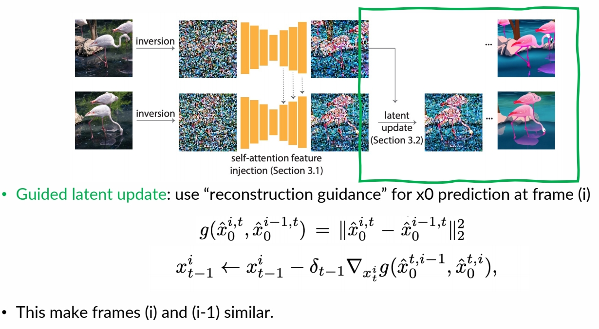
✅ reconstruction guidance，使生成的 latent code 与上一帧接近。
✅ (1) 使用 DDIM inversion 把图像转为 noise．
✅ (2) 相邻的 fram 应 inversion 出相似的 noise．
✅ 使用 self-attention injection 得到相似的 noise.
P197
Result
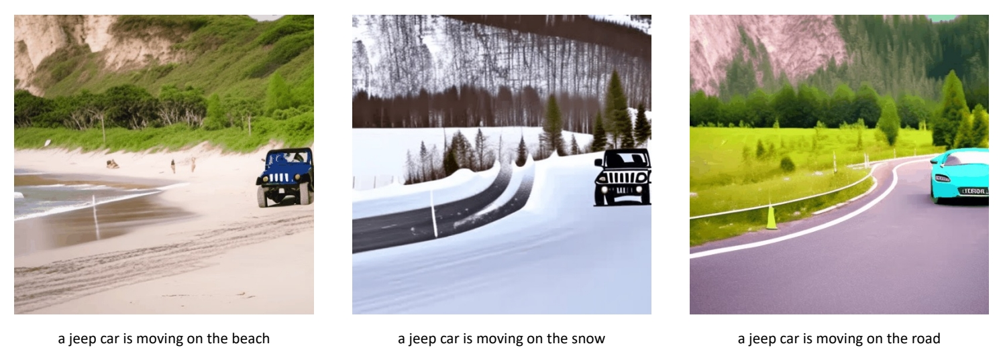
P198

Structure and Content-Guided Video Synthesis with Diffusion Models
- Inflate Stable Diffusion to a 3D model, finetune on pretrained weights
- Insert temporal convolution/attention layers
- Finetune to take per-frame depth as conditions
 |  |
✅ 特点：(1) 不需要训练。 (2) 能保持前后一致性。
P60
P61
- Condition on structure (depth) and content (CLIP) information.
- Depth maps are passed with latents as input conditions.
- CLIP image embeddings are provided via cross-attention blocks.
- During inference, CLIP text embeddings are converted to CLIP image embeddings.
✅ 用 depth estimator 从源视频提取 struct 信息，用 CLIP 从文本中提取 content 信息。
✅ depth 和 content 分别用两种形式注入。depth 作为条件，与 lantent concat 到一起。content 以 cross attention 的形式注入。
MagicAnimate: Temporally Consistent Human Image Animation using Diffusion Model
Challenges
- Flickering video
- Cannot maintain background
- Short video animation results
Possible Cause
- Weak appearance preservation due to lack of temporal modeling
✅ 把 pose control net 加到核心的 U-Net 生成。
✅ 把原始 U-Net fix, copy- 分可以 train 的 U-Net.
✅ 输入：reference image, 两个 U-Net 在部分 layer 进行结合达到前景 appearance 和背景 appeorance 的 Encode 推断时输入多个 Sequence, 可以生成 long video.
P219

P220

P223

MotionDirector: Motion Customization of Text-to-Video Diffusion Models
Tune on multiple videos of a motion to be customised


P171
- MokonDirector can customize foundakon models to generate videos with desired tokons.

P172
- The challenge is generalizing the learned motions to diverse appearance.
- MotionDirector learns the appearances and motions in reference videos in a decoupled way, to avoid overfitting on the limited appearances.

P173
- Decouple appearance and motion.

P174
Result
- Comparing with other methods.

P175
P176
Dreamix: Video Diffusion Models are General Video Editors
Dreamix
Few-shot finetuning for personalized video editing
Main idea: Mixed Video-Image Finetuning
- Finetune Imagen Video (Ho et al., 2022) which is a strong video foundation model

- Finetuned to generate individual frames (bypassing temporal attentions) & video

P163
Inference Overview
- Corrupt the input video by downsampling and add noise
- Apply the finetuned video diffusion model to denoise and upscale

Tune-A-Video: One-Shot Tuning of Image Diffusion Models for Text-to-Video Generation
P150
Tune-A-Video
One-shot tuning of T2I models for T2V generation/editing


Motivation
Motivation: appearance from pretrained T2I models, dynamics from a reference video

P153
方法
Obs #1: Still images that accurately represent the verb terms

Obs #2: Extending attention to spatio-temporal yields consistent content
P154

P155

Full finetuning: finetunes the entire network
- inefficient, especially when #frames increases;
- prone to overfitting → poor editing ability.
Our tuning strategy: update the specific projection matrices
- parameter efficient and fast (~10 min);
- retains the original property of pre-trained T2I diffusion models.
\begin{align*} \mathcal{V} ^\ast =\mathcal{D} (\mathrm{DDIM-samp} (\mathrm{DDIM-inv} (\varepsilon (\mathcal{V} )),\tau^\ast ))\end{align*}
Structure guidance via DDIM inversion
- preserves the structural information
- improves temporal consistency
P156
主观效果

P157
 P158
P158
 P159
P159

P160

P161
客观指标

Automatic metrics – CLIP Score
- Frame Consistency: the average cosine similarity between all pairs of video frames
- Textual Alignment: average CLIP score between all frames of output videos and corresponding edited prompts
User study
Compare two videos generated by our method and a baseline (shown in random order):
- Which video has better temporal consistency?
- Which video better aligns with the textual description?
Wu et al., “Tune-A-Video: One-Shot Tuning of Image Diffusion Models for Text-to-Video Generation,” ICCV 2023.
✅ base model：没有太多 motion.
Reference
https://github.com/showlab/Tune-A-Video
TokenFlow: Consistent Diffusion Features for Consistent Video Editing
P179
TokenFlow
Consistent high-quality semantic edits
Main challenge using T2I to edit videos without finetuning: temporal consistency

✅ 视频编辑领域比较难的问题：怎么保持时序一致性。
P180
Key Idea
- Achieve consistency by enforcing the inter-frame correspondences in the original video
P181
Main idea

✅ 在 UNet 中抽出 feature map 之后，找 correspondence 并记录下来。在 denoise 过程中把这个 correspondence 应用起来。
❓ 什么是 inter-frame correspondence? 例如每一帧的狗的眼睛的运动。要让生成视频的狗的眼晴具有相同的运动。
P182
During conditional denoising, use features from corresponding positions in preceding and following frames instead of the pixel's own feature at output of extended-attention

✅ 在 DDIM inversion 过程中，把 attention maps 保存下来了，在 denoise 时，把这个 map 结合进去。
✅ 在 attention map 上的演进。
P183
Result
✅ 逐帧编辑抖动严重，而 Token Flow 更稳定。
DynVideo-E: Harnessing Dynamic NeRF for Large-Scale Motion- and View-Change Human-Centric Video Editing
Edit a video = edit a canonical image 3D NeRF
Canonical image in CoDeF is still 2D
Can we represent the video in a truly 3D space?
P255
✅ 利用现有成熟技术，把 3D 场景用 Nerf 表示出来编辑也是在 3D 上进行。
P256
✅ Nerf 在人体成像上比较好。
✅ Dynamic NeRF 本身也是比较难的。
P257
Main idea
- For the first time introduce the dynamic NeRF as an innovative video representation for large-scale motion- and view-change human-centric video editing.
✅ 不直接编辑图像，而是编辑 Nerf．
✅（1）认为背景静止，学出背景 Neof．
✅ Stale Diffusion 用来计算 Loss.
P258
Follow HOSNeRF, represent the video as:
- Background NeRF
- Human NeRF
- Deformation Field
Edit background NeRF and human NeRF respectively

P259
DynVideo-E significantly outperforms SOTA approaches on two challenging datasets by a large margin of 50% ∼ 95% in terms of human preference
Content Deformation Fields for Temporally Consistent Video Processing
Content Deformation Field (CoDeF)
Edit a video = edit a canonical image + learned deformaeon field
-
Limitations of Neural Layered Atlases
- Limited capacity for faithfully reconstructing intricate video details, missing subtle motion features like blinking eyes and slight smiles
- Distorted nature of the estimated atlas leads to impaired semantic information
-
Content Deformation Field: inspired by dynamic NeRF works, a new way of representing video, as a 2d canonical image + 3D deformation field over time
Problem Formulation
- Decode a video into a 2D canonical field and a 3D temporal deformation field
- Deformation Field: video (x, y, t) → canonical image coordinate (x’, y’)
- Canonical Field: (x’, y’) → (r, g, b), like a “2D image”

P251
CoDeF compared to Atlas
- Superior robustness to non-rigid motion
- Effective reconstruction of subtle movements (e.g. eyes blinking)
- More accurate reconstruction: 4.4dB higher PSNR
✅ CoDef 把 3D 视频压缩为 2D Image，因此可以利用很多 2D 算法，再把 deformation 传递到整个视频。
P252
✅ 在时序上有比较好的一致性。
✅ 由于使用了 control net，与原视频在 Spatial level 也保持得非常好。
P253

PFNN: Phase-Functioned Neural Networks
P43
控制信号
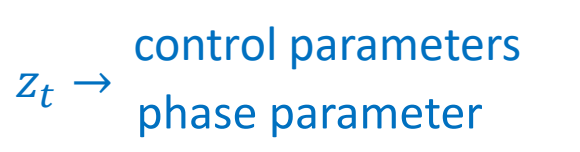
✅ 控制参数，表明用户希望角色怎么走。相位参数，表明当前的状态。
P44
相位参数
相位参数的定义
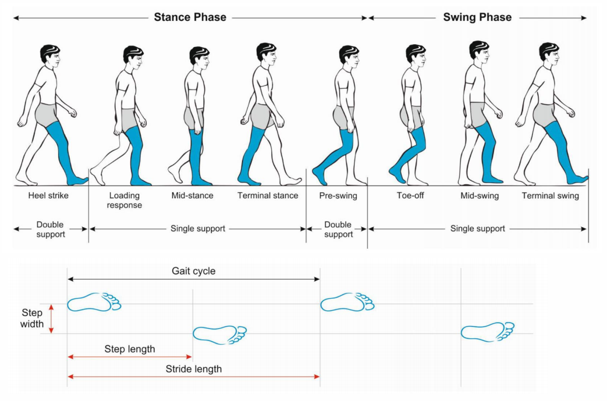
👆 phases of a walking gait cycle
🔎 Gait disorders in adults and the elderly
Pirker and Katzenschlager 2017.
P45
$$ x_t=f(x_{t-1};z_t) \quad \quad z_t=(c_t,\phi _t) $$
✅ 调整相位与时间的对应关系，可影响走路速度。
P47
Mixture of Experts
| 对专家结果混合。 | 对专家模型参数混合。 |
|---|---|
| 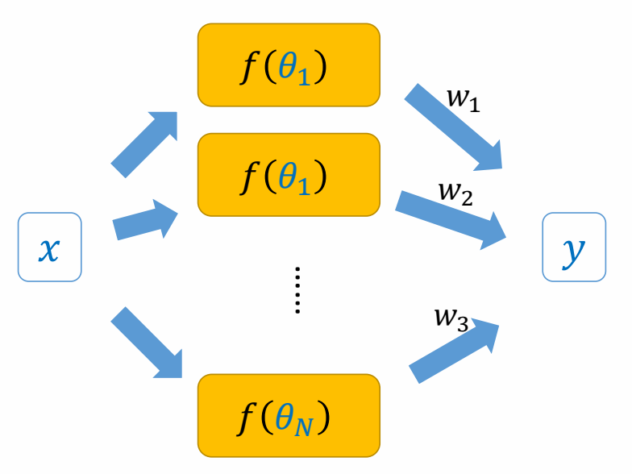 | |
| \(y=\sum_{i}^{} w_if(x;\theta _i)\) | \(y=f(x;\sum_{i}^{} w_i\theta _i)\) ✅ PFNN 使用的是这种。 |
P49
$$
x_t = f (x_{t-1}; c_t, \theta _ t = \sum _ {i}^{} w_i(\phi _t) \theta _i)
$$
✅ 专家混合的权重由 phase 决定。
✅ 让每个专家专一地学特定的 phase.
P50
Cubic Catmull-Rom Spline的混合计算方式

Cubic Catmull-Rom Spline:
$$ \begin{align*} \theta _t & = \theta _2 \\ & +\phi (-\frac{1}{2} \theta _1 + \frac{1}{2} \theta _3) \\ & +\phi^2 (\theta _1-\frac{5}{2} \theta _2 + 2\theta _3-\frac{1}{2} \theta _4)\\ & +\phi^3 (-\frac{1}{2} \theta _1+\frac{3}{2} \theta _2 - \frac{3}{2} \theta _3+\frac{1}{2} \theta _4) \end{align*} $$
✅ PFNN 缺点 （1）轻微滑步 （2）急转身时无减速。
P53
Advanced Phase Functions
| 改进前 | 改进后 |
|---|---|
 |
✅ PFNN 有确定的象位及对应的权重，但打篮球等动作，或动物走路，没有确定的象位。
✅ 因此不再显示地定义相位和权重，权重由当前状态与用户输入算出来。